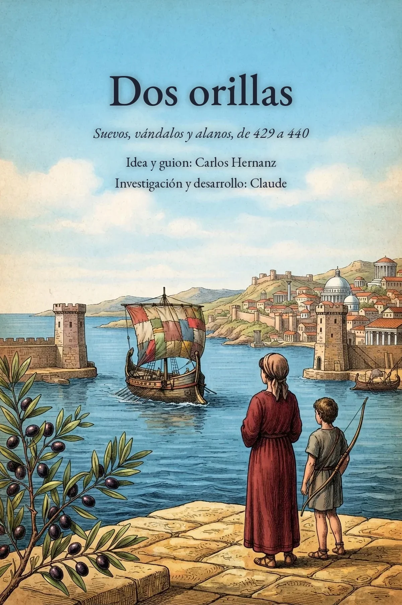
Prólogo
«Los vándalos, con todos los suyos, dejaron Hispania y pasaron a África.» — Idacio, Crónica, año 429
La playa de Iulia Traducta – mayo de 429
Lo que se contó en los dos primeros libros
En la última noche del año 406 cruzaron el Rin helado tres pueblos: los suevos, los vándalos y los alanos. Esa noche, un joven jinete alano, Arsak, saltó del caballo para salvar a un vándalo cojo, Guntario, que estaba en el suelo con tres francos encima. Guntario le dio una fíbula de bronce con forma de pájaro y le dijo: «Mi casa es tu casa. Mientras yo viva, y mientras viva mi sangre». En un carro, a pocos pasos, su hija Asta, de dos años, lo miraba todo sin llorar. Y algo más allá, en el hielo, un niño suevo de cinco años, Ricila, volvía corriendo a buscar un caballito de madera, mientras su hermano Teudo, de diez, gritaba su nombre.
Tardaron doce años en volver a encontrarse. Los tres pueblos atravesaron la Galia y los Pirineos y se repartieron Hispania. Los visigodos, al servicio de Roma, mataron a los padres de Asta en su granja de la Bética, junto a un olivo viejo al que su padre llamaba el Abuelo. Después aniquilaron a los alanos de Arsak en las llanuras de Emerita. Arsak, que se había curado en aquella granja, huyó al norte con la niña muerta de fiebre en brazos. En un brezo sobre el Duero, en 418, los encontraron los dos hermanos suevos.
Los suevos los acogieron en la Peña, un castro sobre el Duero. Allí vivieron once años. Arsak se hizo amigo de Teudo, que ya era guerrero, y luchó a su lado contra los vándalos de Gunderico en los montes Nervasos. Ricila, el que leía, le enseñó a leer a Asta, se enamoró de ella y se casó con ella. Tuvieron un hijo, al que llamaron Guntario, como el abuelo vándalo.
Pero un noble suevo, Heremigario, pariente del rey, quería lo que no era suyo. Primero se llevó a Brunhild, la viuda de Odo, el amigo de Teudo; los hermanos la recuperaron con una carta y con la plata de los caballos de Arsak. Luego quiso a Asta. Su hombre en la Peña, Agiulfo, acusó a los hermanos de traición por acoger a una vándala y a un alano. Los condenaron a muerte. Arsak los sacó de noche, y huyeron al sur. El padre y la madre de Teudo se quedaron en el valle porque eran viejos, y se quedaron también Brunhild y su hijo Wilja.
Cerca de Emerita, cuando Agiulfo estaba a punto de cogerlos, los salvó una patrulla de jinetes alanos al servicio del nuevo rey de los vándalos, Genserico. La mandaba Félix, un muchacho romano al que Arsak había enseñado a montar. Heremigario se ahogó en el río Anas, huyendo de Genserico. Agiulfo, con un brazo inútil, volvió a pie hacia el norte.
En mayo de 429, en la playa de Iulia Traducta, en la punta de Hispania, todo el pueblo vándalo subió a los barcos para pasar a África. Asta se fue con ellos, con Ricila y con el niño. Llevaba la fíbula de su padre, la espada de la casa de Ricila y una rama del Abuelo envuelta en tierra de la tumba de sus padres.
Teudo, cojo de una herida de lanza, se quedó en la playa, porque en el norte había dejado a su padre, a su madre y a Brunhild. Y Arsak se quedó con él. Antes de irse, Asta le había colgado del cuello una escama de hierro de la cota de su padre y le había dicho que volviera.
Lo que se cuenta en este libro
Este libro empieza esa misma mañana, en las dos orillas del Estrecho, y dura once años.
Asta cuenta África: el desembarco, la marcha de todo un pueblo hacia el este, el cerco de una ciudad donde se muere un obispo que había escrito más libros que nadie, y la vida nueva en una tierra de olivos, trigo y polvo.
Teudo y Arsak cuentan Gallaecia: la vuelta al valle, la guerra entre los suevos y los galaicos de los castros, un hombre manco que no perdona y el viaje de un clérigo joven que quiere contarlo todo.
Las dos orillas solo se ven en días muy claros, desde lo alto de los montes. Entre ellas hay mucho mar.
La otra orilla
El estrecho, Mauritania y Lusitania – mayo y junio de 429
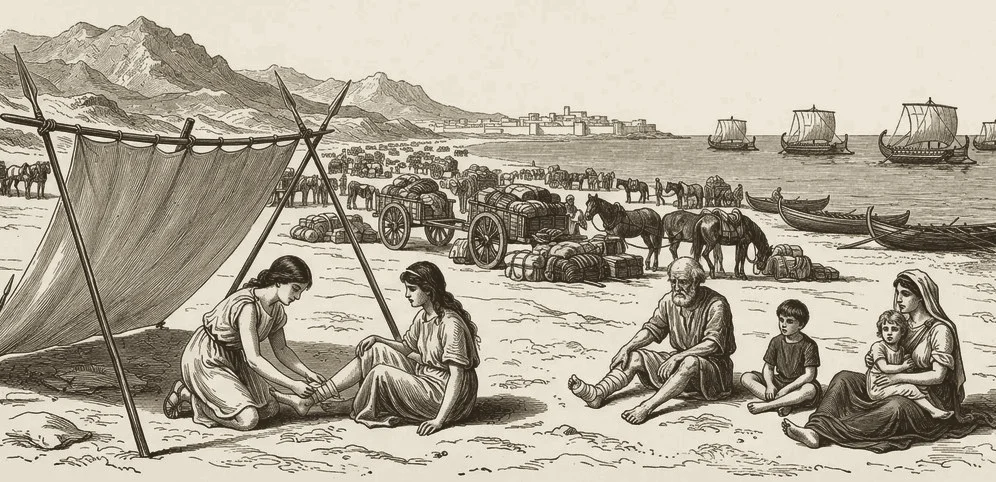
Asta
África olía a polvo caliente y a cabra, y lo primero que hizo Asta al pisarla fue vomitar.
No fue la tierra. Fue el barco. Un día y una noche en el mercante del capitán de Gades, con cien personas apretadas en la cubierta y cuarenta caballos en la bodega pateando las tablas, con el levante empujando la vela y las olas cortas del Estrecho levantando la proa y dejándola caer, una y otra vez, como una mano que sacude una manta. Vomitó media cubierta. Vomitó la mujer alana de Fredo, y sus dos hijos, y el cura vándalo de la cruz de madera, que dejó de rezar en voz alta a media mañana y no volvió a abrir la boca. El niño Guntario no vomitó. Se pasó la travesía sentado en la popa, encima del arcón de los libros de Materno, mirando el agua con los ojos muy abiertos, preguntando cada poco cuándo llegaban.
Ricila tampoco vomitó. Asta no lo entendió nunca. Ricila, que no sabía montar a caballo ni pelear ni nadar, se pasó el día y la noche de pie en la borda, mirando cómo se acercaban las montañas pardas de la otra orilla, con las manos agarradas a la madera y una cara de felicidad que Asta no le había visto desde la noche de la boda.
—Aquí estuvo Hércules —le dijo en un momento, señalando las dos montañas que se veían a cada lado del Estrecho, la de atrás y la de delante—. Separó las dos tierras con las manos. Dejó dos columnas. Y escribió en ellas que más allá no había nada.
—¿Y había?
—Había. —Ricila sonrió—. Siempre hay.
Desembarcaron en una playa larga, al este de una ciudad romana que se llamaba Tingis, con murallas blancas y un puerto lleno de barcos que habían llegado antes. No había muelle. El barco se quedó fondeado a doscientos pasos de la orilla y los pasaron en barcas, de diez en diez, y la última parte, donde la barca tocaba fondo, a pie, con el agua por la cintura. Asta saltó con el niño en brazos. El agua estaba fría. La arena del fondo se le hundía bajo los pies. Ricila saltó detrás con un fardo en la cabeza y se cayó de bruces, y salió escupiendo agua y riéndose.
En la arena, Asta dejó al niño en el suelo. Se arrodilló. Y vomitó lo poco que le quedaba dentro.
—Mamá —dijo el niño—. Estamos en África.
—Ya lo sé —dijo Asta, limpiándose la boca con la manga.
Se quedó un rato de rodillas, en la arena caliente, mirando alrededor. La playa estaba llena de gente, como lo había estado la de Iulia Traducta el día anterior, solo que al revés: todos los que habían salido allí llegaban aquí. Carros que desembarcaban en balsas, desmontados, por piezas. Bueyes que salían del agua nadando, con los ojos en blanco, empujados por hombres que nadaban a su lado. Caballos bajados de los barcos con cinchas, colgados en el aire, pataleando. Mujeres que buscaban a sus hijos a gritos. Hombres que buscaban a sus mujeres. Gallinas sueltas. Perros. Un niño llorando solo junto a una caja.
Más allá de la playa, una llanura de tierra roja, con matojos bajos y algún árbol que no conocía, de copa plana como una mesa. Y más allá, montes pelados, de color de león, con el aire temblando encima por el calor. No había castaños. No había robles. No había nada verde, salvo unas palmeras junto a un arroyo, que Asta no había visto nunca más que en dibujos, en el libro de Materno sobre Egipto.
—¿Aquí vamos a vivir? —preguntó el niño.
—No lo sé —dijo Asta—. Aquí, o más allá.
Esa noche durmieron en la playa, en la arena, con los fardos alrededor, entre miles de fuegos. Hacía calor. Hubo mosquitos. A medianoche Asta oyó por primera vez un ruido que no conocía: un ladrido, pero no de perro, más agudo, más triste, que venía de los montes y al que contestaban otros, cada vez más lejos.
—Chacales —dijo Fredo, desde el fuego de al lado—. Hay muchos. Como zorros, pero en manada. No hacen nada. Comen basura.
Asta no se pudo dormir. Se quedó tumbada, con el niño dormido contra su pecho y Ricila roncando a su espalda, mirando las estrellas. Eran las mismas. Las había contado en la cueva del monte, con fiebre, cuando Arsak le decía sus nombres en alano para que no se durmiera. El Carro. Las Siete Hermanas. El Cazador, con su cinturón de tres.
Se preguntó si Arsak estaría mirándolas también. En la otra orilla. A un día de barco. A una vida.
Se metió la mano en la túnica y tocó la escama de hierro que llevaba colgada al cuello. Estaba caliente de su piel.
Al día siguiente empezó a trabajar. No podía hacer otra cosa. A media mañana vino a buscarla una mujer asdinga, joven, con un niño de meses en brazos que no dejaba de llorar y tenía la cara roja y caliente. Alguien le había dicho que la vándala de la fíbula sabía curar. Asta le miró al niño la boca, los oídos, la tripa. Le tocó la frente y la nuca. Tenía fiebre, no mucha. Le estaban saliendo dos dientes, y el calor y el barco habían hecho lo demás.
—Agua —le dijo a la madre—. Hervida. Fresca. Poca y muchas veces. Y que esté a la sombra.
—¿Nada más?
Asta se acordó de Teodoro, que decía que la mitad de los enfermos se curaban solos y que lo único que importaba era no matarlos.
—Nada más —dijo—. Y un trapo mojado en la frente.
Al mediodía vinieron tres más. Por la tarde, siete. Una mujer con un tobillo torcido al saltar de la barca. Un viejo con un corte en el pie de una concha de la playa, ya hinchado. Un muchacho al que había mordido un caballo en el brazo, en la bodega. Una niña con los ojos rojos de la arena. Asta los atendió a todos sentada en un fardo, a la sombra de una vela tendida entre dos lanzas, con el cesto de Teodoro abierto a su lado y el niño Guntario jugando en la arena a sus pies. Lavó, cosió, vendó, mandó beber. Gastó media miel. Gastó la mitad del hilo de lino.
Al atardecer, Ricila volvió de la ciudad. Había ido a Tingis con Félix y con otros, a ver si se podía comprar algo. Volvió con un saco de dátiles, una jarra de aceite, un tarro de miel de tomillo, un rollo de hilo de lino y una noticia.
—Genserico ha contado a la gente —dijo—. Esta mañana. Uno por uno, por familias, como se cuentan las ovejas. Los escribanos de Tingis lo han apuntado en tablillas.
—¿Cuántos?
—Ochenta mil. —Ricila se sentó en la arena a su lado—. Contando a los viejos y a los niños. Y a los esclavos. Y a los alanos. Ochenta mil personas en una playa de África.
Asta se quedó mirando la playa. Los fuegos se encendían uno detrás de otro, hasta donde se perdía la vista, como se encendían en los montes Nervasos la noche en que llegó Gunderico.
Ochenta mil. Y ella era una.
Esa noche vino Félix a su fuego, y no venía solo.
Traía de la mano a una niña de tres años, morena, con el pelo negro en dos trenzas y los ojos rasgados de los alanos, que se escondió detrás de su pierna en cuanto vio a Asta. Y detrás venía una mujer. Alta, delgada, con la cara curtida y una cicatriz pequeña en la frente, vestida como se vestían las mujeres alanas, con pantalones debajo de la túnica y un cuchillo largo al cinto. Miró a Asta de arriba abajo, despacio, sin disimular, como se mira una yegua en una feria.
—Zarina —dijo Félix, y se puso colorado—. Mi mujer. Y Tecla.
—Tú eres la de la fíbula —dijo Zarina. En alano. Sin saludar—. La niña del alano viejo.
—Soy Asta.
—Ya sé cómo te llamas. Félix no habla de otra cosa desde Emerita. —Zarina se sentó en la arena sin que nadie la invitara, cruzó las piernas y cogió un dátil del saco de Ricila—. Mi abuelo conoció a tu Arsak. En la estepa, de niños. Decía que era el único de su edad que no se caía nunca del caballo.
Asta no supo qué decir. Zarina se comió el dátil, escupió el hueso al fuego y la miró otra vez.
—Félix dice que curas —dijo—. Mañana empiezan las fiebres. Siempre empiezan al tercer día de acampar, cuando la gente bebe de donde no debe. Yo sé de caballos. Tú sabes de gente. —Se encogió de hombros—. Vamos a tener trabajo las dos.
Se levantó. Cogió a la niña, que se había quedado dormida contra la pierna de su padre, y se la echó al hombro como un saco. Y se fue hacia su fuego sin despedirse.
Félix se quedó un momento, rascándose la barba, colorado todavía.
—Le has caído bien —dijo.
—¿Cómo lo sabes?
—Porque se ha comido tu dátil.
Ricila se rio tanto que despertó al niño.
Teudo
Teudo y Arsak tardaron veintinueve días en llegar al Duero, y en todo el camino no encendieron un fuego que se viera.
No podían ir por las calzadas. Las calzadas eran de quien las pisara, y aquella primavera las pisaba todo el mundo: los suevos de Heremigario que habían sobrevivido a la batalla del Anas y volvían al norte en partidas sueltas, sin jefe, robando lo que encontraban; los soldados romanos de Emerita, que salían a cazarlos; los bandidos de los montes, que cazaban a todos; los mercaderes que intentaban pasar entre unos y otros. Y en algún sitio de aquellos caminos, delante o detrás, un hombre manco que sabía que un suevo cojo y un alano de pelo blanco iban a volver al valle del Duero, porque no tenían otro sitio adonde ir.
Así que fueron por donde habían bajado: por las cañadas de los pastores, por los vados que no conocían los soldados, por las sierras. Despacio. Teudo no podía ir deprisa. La herida del muslo se le había cerrado por fuera, como decía el físico de Cartago, pero por dentro todavía le dolía, y le dolía más cuando montaba, y mucho más cuando tenía que bajar del caballo y andar por una cuesta. Cojeaba. Se apoyaba en un bastón de acebuche que le había cortado Arsak a la salida de Iulia Traducta.
Arsak no le esperaba. Le esperaba sin que se notara. Paraba a mirar huellas que no hacía falta mirar. Se bajaba a revisarle un casco a Viento que no tenía nada. Se quedaba mucho rato en lo alto de una loma, oteando, mientras Teudo subía la cuesta a pie, despacio, llevando a Estrella de la brida, con la frente sudada.
—No hace falta que pares —le dijo Teudo el tercer día.
—No paro —dijo Arsak—. Miro.
—Llevas tres días mirando cada vez que me duele la pierna.
Arsak no contestó. Siguió mirando la loma de enfrente, donde no había nada.
Hablaban poco. Por las noches, cuando hacían el fuego en el hoyo y se comían lo que hubiera, una liebre, unas castañas pilongas de un saco que les había dado el viejo pastor de la sierra, que encontraron en el mismo chozo de la bajada, más viejo todavía, más callado, y que no les preguntó nada, Teudo se quedaba mirando el fuego hundido en la tierra y pensaba en su padre.
En su padre sentado en el banco, junto al fuego, la noche de la huida. Con las manos grandes colgando entre las rodillas. «Soy un viejo campesino que no sabe nada.»
Habían pasado seis meses. Seis meses con Agiulfo en la Peña, a media legua de la casa de labor. Seis meses sabiendo que los hijos del viejo habían huido de noche y que el viejo se había quedado.
—No pienses —dijo Arsak una noche, sin levantar la vista del fuego.
—No pienso.
—Piensas tan fuerte que se te oye. —Arsak echó una rama al hoyo—. No sabemos nada. Cuando sepamos algo, pensaremos.
Supieron algo el día veinticinco, en un sitio donde no lo esperaban.
Fue en una venta de la calzada vieja de Salmantica, en un cruce de caminos, adonde Arsak bajó solo a comprar pan mientras Teudo esperaba con los caballos en un encinar, a media legua. Era una venta de las de siempre, de los tiempos de los romanos, con un corral, un pozo y una tabla encima de dos barriles donde se vendía vino, y un ventero gordo, galaico, que hablaba todas las lenguas a medias y ninguna entera. Arsak compró dos panes y un queso. Pagó con la última moneda de plata de los potros de Lucus. Y el ventero, mientras le daba la vuelta en cobre, le miró el pelo y le preguntó si era alano.
Arsak dijo que no. Que era godo.
—Ya —dijo el ventero—. Godo. —Se rascó la tripa—. Por aquí pasó hace un mes un suevo manco que buscaba a un alano. A un alano de pelo blanco. Y a un suevo cojo. Pagaba bien.
Arsak no dijo nada.
—Yo no he visto a ningún alano —siguió el ventero, y le puso el cambio en la mano, y Arsak vio que le había dado de más—. Ni a ningún cojo. Aquí solo pasan godos. —Se volvió hacia sus barriles—. El manco iba hacia el Duero. Con seis hombres. Decía que tenía una casa allí, junto a un castro, que era suya ahora. Que se la había dado el rey. La casa de un viejo que se había muerto en invierno.
Arsak volvió al encinar despacio, con el pan y el queso debajo del brazo.
Teudo le vio venir desde lejos. Le vio la cara. Y lo supo antes de que llegara.
Se sentó en el suelo, entre las raíces de una encina, con la pierna mala estirada. Arsak se sentó a su lado. Le contó lo del ventero, palabra por palabra, sin quitar nada.
Teudo le escuchó sin moverse. Cuando terminó, se quedó un rato callado, mirando el campo de enfrente, amarillo de cebada sin segar, que nadie iba a segar aquel año porque los dueños de las villas de alrededor habían huido de los saqueos.
—En invierno —dijo al fin.
—En invierno.
—Nosotros estábamos en la villa de Marcelo. Cogiendo aceituna. —Teudo se quedó mirando sus manos—. Comiendo pan con aceite nuevo.
Arsak no contestó. No había nada que contestar.
—¿Y madre? —preguntó Teudo.
—No ha dicho nada de tu madre.
—¿Y Brunhild? ¿Y el niño?
—Nada.
Teudo asintió despacio. Luego cogió el pan, partió un trozo y se lo comió, mirando la cebada. Masticaba despacio, como masticaba su padre, sin hambre, por obligación. Arsak no le había visto nunca comer así. Se dio cuenta de que Teudo no iba a llorar delante de él. Que a lo mejor no iba a llorar nunca.
Esa noche, en el hoyo del fuego, Teudo sacó del cinturón una cosa que llevaba allí desde la playa de Iulia Traducta. El cuchillo pequeño con mango de hueso. El del abuelo, el que había hecho el caballito. El que Asta le había devuelto en la arena: «Dáselo a tu padre. Es de vuestra casa».
Lo estuvo mirando un rato largo a la luz del hoyo. Luego lo volvió a guardar.
—Se lo daré igual —dijo.
Arsak
Arsak vio el Duero desde el mismo collado de la sierra desde el que lo había visto volver de los Nervasos, nueve años antes, y no sintió lo mismo.
Entonces había bajado al galope. Ahora se quedó arriba, tumbado en el brezo, con Teudo a su lado y los caballos atados detrás, en un pinar, mirando el valle toda una tarde antes de bajar.
El valle estaba igual. Eso fue lo primero que pensó, y le dolió. El río ancho y lento, color de cobre con el sol de la tarde. Los prados de la orilla, verdes, con ganado. Los castaños. El humo de las aldeas. La villa de Materno con su olivo viejo en el patio. Y la Peña, en lo alto de su cerro, con sus dos murallas y su torre de madera, y en la torre, aunque no se distinguía desde tan lejos, alguien de guardia.
Todo igual. Como si no hubiera pasado nada. Como si el valle no se hubiera enterado de que se habían ido.
Luego miró mejor. Y vio las cosas que no estaban igual.
El prado de las yeguas, junto al río, estaba vacío. Ni una yegua. La valla de palos que habían hecho los muchachos de la Peña estaba caída en un trozo, y no la había levantado nadie.
En la casa de labor había humo. Pero el huerto de detrás, el de la madre, estaba lleno de hierbas altas. Y en el patio, junto al castaño grande, había un carro que Arsak no conocía, y dos caballos que no conocía, y un hombre sentado en el banco de piedra de la puerta, donde se sentaba el padre a pelar castañas, que tampoco conocía.
—No es nadie de los nuestros —dijo Teudo, en voz muy baja.
—No.
Arsak buscó el rincón del sur del huerto. Junto a la tapia. Desde tan lejos no se veía bien. Pero le pareció que allí, entre las hierbas altas, había algo más alto que las hierbas, una mancha plateada, pequeña, que se movía con el viento.
Pensó que era el olivo de Asta. Que seguía vivo. Que nadie lo había cortado.
No se lo dijo a Teudo. No estaba seguro.
Bajaron de noche. Dejaron los caballos en el pinar, atados, con la perra Loba para que los guardara; Loba se tumbó entre las patas de Viento sin protestar, como si lo hubiera hecho toda la vida. Bajaron a pie, por el sendero de cabras, el mismo por el que Arsak había bajado la noche de la huida, con la cota de su padre sonando un poco a cada paso. Teudo bajaba con el bastón, despacio, apretando los dientes. No se quejó ni una vez.
No fueron a la casa de labor. Fueron al prado de abajo. Al de los muertos.
Estaba donde siempre. El montón de piedras de Odo, cubierto de musgo. El del buey Viejo, más pequeño. El de Fravita, el más grande, con la cuerda de cáñamo, que Arsak había dejado a sus pies, convertida ya en una cosa gris y podrida entre las piedras.
Y al lado, uno nuevo.
Las piedras estaban limpias todavía. No había musgo. Alguien había puesto encima, en lo alto, un cuenco de madera boca abajo, como se hacía con los que se iban con hambre, para que no la pasaran al otro lado. Era un cuenco de castaño. Arsak lo conocía. Lo conocía de veinte cenas, de treinta, de cien. Era el cuenco del padre.
Teudo se arrodilló delante del montón. Con la pierna mala doblada de lado, con el bastón tirado en la hierba.
No dijo nada. Se quedó así, de rodillas, en la oscuridad, mucho rato. Arsak se quedó de pie detrás de él, sin moverse, vigilando el camino del arroyo, la casa de labor, la Peña. Como había vigilado la noche del almacén.
Al cabo de mucho rato, Teudo se sacó el cuchillo del mango de hueso del cinturón. Lo miró. Luego levantó una de las piedras de arriba, con las dos manos, despacio, y puso debajo el cuchillo, y volvió a poner la piedra encima.
—Te lo traigo —dijo en voz baja. En suevo. A las piedras—. Me lo dio la vándala. Dijo que era de la casa. —Se calló—. La casa ya no es nuestra, padre. Pero el cuchillo sí.
Se levantó. Le costó. Arsak le dio el brazo y Teudo se apoyó en él sin protestar, por primera vez desde la playa.
Entonces se oyó algo en el camino del arroyo.
Pasos. Ligeros. De alguien que venía corriendo, a oscuras, entre los castaños, sin antorcha. Arsak se llevó la mano a la espada. Teudo cogió el bastón como se coge una lanza.
Salió de entre los árboles un muchacho. Alto, flaco, de unos catorce años, con el pelo color paja y la cara de alguien que ha corrido mucho. Se paró en seco al verlos. Los miró. Miró a Teudo, apoyado en Arsak, con el bastón levantado.
—Tío Teudo —dijo.
Y se le quebró la voz a mitad de la palabra, como se les quiebra a los muchachos de catorce años, de niño a hombre.
Era Wilja. El hijo de Brunhild. El que escribía el nombre de su padre en el polvo del camino.
—Os he visto desde el castaño —dijo, todavía sin aliento—. Desde el camino. Os he visto bajar por el sendero. Os he reconocido por el bastón y por el pelo blanco. —Se le llenaron los ojos de lágrimas, de golpe, y se los secó con la manga, enfadado, como se los secaba Félix—. Voy todas las noches al castaño. Desde que os fuisteis. Por si veníais.
Teudo soltó el bastón. Cojeó los tres pasos que los separaban y abrazó al muchacho. Fuerte. Tan fuerte que a Wilja se le escapó un quejido.
—¿Tu madre? —preguntó Teudo, contra su pelo.
—Viva. Con la abuela. En el castro de los galaicos, al otro lado del río.
—¿La abuela vive?
—Vive.
Teudo cerró los ojos.
Arsak se quedó mirándolos. Luego miró el montón de piedras nuevo, con el cuenco de castaño boca abajo encima, a la luz de las estrellas.
Pensó en Guntario, en la orilla helada del Rin, diciéndole que su casa era la suya mientras viviera su sangre. Pensó que su sangre estaba ahora al otro lado del mar, en una playa de África, entre ochenta mil personas. Y que aquí, en este prado, a la luz de las estrellas, había un muchacho de catorce años que llevaba seis meses yendo cada noche a un castaño por si volvían.
Se dio cuenta de que tenía dos casas. Y de que no sabía cuál de las dos le iba a doler más.
El castro de la otra orilla
Mauritania y el valle del Duero – verano de 429
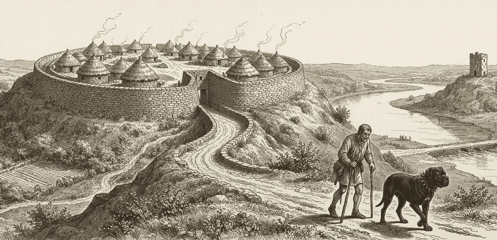
Teudo
Cruzaron el Duero por el vado de abajo, el de las truchas, con el agua por las rodillas, y al otro lado los estaba esperando un perro que no ladró.
Era un mastín galaico, enorme, negro, con un collar de cuero lleno de clavos para los lobos. Salió de entre los alisos de la orilla, se quedó parado delante de ellos con la cabeza baja y los miró. Wilja le dijo algo en galaico, una palabra. El perro dio media vuelta y echó a andar delante, por un sendero que subía entre robles, sin volverse, como quien sabe que le siguen.
—Es de Reburro —dijo Wilja—. El jefe del castro. Le manda bajar todas las noches al río a buscarme.
Teudo subía detrás, despacio, con el bastón. Le dolía la pierna del agua fría. No se quejó. Arsak se había vuelto al pinar del otro lado a por los caballos y la perra, y subiría luego por otro camino, más largo, que conocía Wilja.
El castro estaba en lo alto de un cerro, al otro lado del río, enfrente de la Peña, en la orilla de Lusitania. Teudo lo había visto mil veces desde la torre: una corona de piedras grises en lo alto de un monte pelado, con humo. Las aldeas de los galaicos que pagaban a Fravita. Nunca había subido. Ningún suevo subía a los castros de los galaicos si no era a cobrar.
Ahora subía de noche, cojeando, detrás de un perro, a pedir que le dejaran entrar.
La muralla era de piedra seca, sin argamasa, alta como dos hombres, con un foso delante y una puerta estrecha, en recodo, para que no se pudiera entrar de frente. En la puerta había dos hombres con lanzas y una antorcha. Miraron a Wilja. Miraron a Teudo. Uno de ellos dijo algo en galaico, y el otro se rio, flojo, sin alegría.
—Dice que es el soldado de la Peña —tradujo Wilja—. El que contaba los sacos.
—Dile que sí.
—Dice que ahora el que cuenta los sacos es el manco. Y que cuenta el doble.
Le dejaron pasar.
Dentro, el castro era un pueblo. Casas redondas de piedra apretadas unas contra otras, con tejados de paja que casi se tocaban, y calles estrechas, torcidas, de tierra pisada, por donde no cabían dos personas a la vez. Olía a humo, a cerdo, a pan de bellota. Había gente despierta en las puertas, mirando, a la luz de los fuegos de dentro. Mujeres con niños en brazos. Viejos. Nadie dijo nada. Le miraban pasar como se mira pasar a un forastero que trae una enfermedad.
Wilja le llevó hasta una casa del fondo, junto a la muralla, más pequeña que las otras, con una piel de cabra colgada en la puerta en lugar de puerta.
—Aquí —dijo, y se apartó.
Teudo se quedó un momento delante de la piel de cabra. No sabía qué iba a encontrar detrás. Llevaba veintinueve días sin saberlo.
Apartó la piel y entró.
Dentro había un fuego en el centro, pequeño, de brasas. Y junto al fuego, sentada en un banco de piedra, una vieja con un pañuelo en la cabeza, hilando. Con la rueca debajo del brazo y el huso girando en la mano, despacio, como si fuera de día. Como si fuera cualquier noche.
Levantó la vista.
Teudo no la reconoció enseguida. Fue lo que más le dolió después, lo que más pensó. Que no la reconoció. Que había adelgazado tanto que el pañuelo le quedaba grande. Que tenía la cara llena de arrugas que antes no tenía, o que él no había visto, y los ojos hundidos, y las manos, las manos que amasaban, que ordeñaban, que le tocaban la frente para ver si tenía fiebre, finas como ramas secas.
La madre dejó de hilar. Dejó el huso en el regazo. Se quedó mirándole.
—Estás cojo —dijo.
—Una lanza. En el muslo. Ya está curada.
—¿Quién te la curó?
—La vándala.
La madre asintió despacio, como si eso lo explicara todo. Luego volvió a coger el huso y siguió hilando.
—Siéntate —dijo—. Hay sopa.
Teudo se sentó en el suelo, a sus pies, junto al fuego, con la pierna mala estirada. La madre le sirvió sopa de un puchero que había en las brasas, en un cuenco de barro galaico, sin dejar de hilar con la otra mano. Era sopa de berzas. Sin tocino. Teudo se la comió entera sin levantar la vista del cuenco.
Cuando terminó, la madre dejó de hilar otra vez.
—Fue en enero —dijo—. Una tos. Como la de Fravita, pero más deprisa. Diez días. —Se quedó mirando el fuego—. No sufrió mucho. Al final no. Se quedó dormido sentado en el banco, junto al fuego, con las manos en las rodillas. Por la mañana estaba frío.
Teudo no dijo nada.
—Lo enterramos en el prado. Con los otros. Wilja el grande cavó, y el niño, y dos galaicos de aquí que bajaron de noche. —La madre se calló un momento—. Le puse su cuenco. Para que no pasara hambre por el camino. Tu padre siempre tenía hambre.
—Lo he visto.
—Le he dejado una cosa. Debajo de una piedra. —Teudo se miró las manos—. El cuchillo del abuelo. Me lo dio Asta para él.
La madre casi sonrió.
La madre se quedó callada un buen rato. El huso, quieto en su mano.
—Una semana después vino el manco —dijo al fin—. Con un papel del rey y seis hombres. Dijo que la tierra y la casa eran del rey desde el juicio, y que el rey se las daba a un primo suyo, uno de Lucus. Que yo era la viuda de un traidor y que me podía quedar a servir al primo, si quería. —Se encogió de hombros—. No quise.
—¿Y te viniste aquí?
—Me trajo Reburro. El jefe. Bajó con diez hombres y un carro y me subió, con Brunhild y el niño, a plena luz del día, por el vado, delante de la Peña. El manco miró desde la torre y no hizo nada. —La madre volvió a hilar—. No se atreve con los galaicos. Ellos son muchos y él tiene seis.
—¿Por qué lo hizo? Reburro.
La madre tardó en contestar.
—Porque tu padre le ayudó a sacar un buey del río, hace quince años. Y porque Fravita le pegaba, pero le defendía. Y porque tú contabas los sacos bien. —Le miró—. Los galaicos se acuerdan de todo, hijo. Como los suevos. Lo bueno y lo malo.
Se oyó un ruido en la puerta. La piel de cabra se apartó.
Era Brunhild.
Se quedó en la puerta, con la piel de cabra en la mano, mirándole. Tenía el pelo largo otra vez, hasta los hombros, suelto. Llevaba una túnica de lana parda de las de los galaicos. Estaba más delgada. Estaba igual.
Teudo se levantó del suelo. Le costó, por la pierna. Se apoyó en la pared.
Ninguno de los dos dijo nada. La madre siguió hilando, mirando el fuego, como si no estuvieran.
—Te dije que no te quitaras la cinta —dijo Brunhild al fin.
Teudo levantó la muñeca. La cinta roja de Odo estaba allí, negra de sudor, de barro, de sangre del acueducto, con sus tres nudos.
Brunhild cruzó la casa en dos pasos y le abrazó. Con la cara en su pecho. Fuerte. Sin llorar.
La madre dejó el huso en el regazo y se levantó, despacio, apoyándose en la pared, y salió de la casa por la piel de cabra sin decir nada. Para dejarlos solos. Como habría hecho el padre.
Asta
La marcha hacia el este empezó a los veinte días del desembarco, y el primer parto que Asta atendió sola fue en un carro parado, en una cuesta, a mediodía, con un calor que hacía que el aire temblara.
Para entonces ya sabía cómo era la marcha, porque era igual todos los días.
Antes de que saliera el sol sonaba el cuerno de dos notas, el de los vándalos, en la cabeza de la columna, y luego otro más atrás, y otro, hasta el final, como un eco que fuera pasando de monte en monte. Se enganchaban los bueyes. Se recogían las tiendas. Se cargaban los carros. Y la columna se ponía en marcha, despacio, con un crujido de ruedas que no se callaba en todo el día, hacia el este, siempre hacia donde salía el sol, por caminos de tierra roja entre montes pelados, por valles con olivos silvestres y adelfas en los arroyos secos, por llanuras de piedras donde no crecía nada. Delante, los jinetes. Detrás, los carros, uno detrás de otro, tantos que el principio y el final no se veían nunca a la vez. Detrás de los carros, los rebaños, que levantaban una nube de polvo rojo que se veía desde una jornada de distancia. Y al final, cerrando, los alanos de Félix, cubiertos de ese polvo de los pies a la cabeza.
Se andaba hasta mediodía. Al mediodía hacía tanto calor que los bueyes se paraban solos, y había que parar con ellos, a la sombra que hubiera, hasta que el sol bajaba. Luego otra vez, hasta la noche. Una jornada eran tres leguas, cuatro si el camino era bueno. Ricila hacía la cuenta cada noche junto al fuego, con un palito en la tierra: al paso que iban, para llegar a donde decían que iba Genserico, a las ciudades ricas de la costa del este, hacía falta casi un año.
El agua era lo peor. Había que buscarla todos los días. Los jinetes salían delante, a los lados, a encontrar fuentes, pozos, arroyos con algo de agua todavía, y cuando no la encontraban la columna bebía de lo que llevaba en los odres y los barriles, y los animales no bebían. Por los montes, a lo lejos, se veía a veces a los moros de la tierra, los bereberes, a caballo o subidos en unos animales que Asta no había visto nunca, grandes, feos, con el cuello largo y una joroba en el lomo, que andaban despacio y no bebían en días. Miraban pasar la columna desde las lomas, quietos. No se acercaban. Ricila decía que contaban.
No fue sola del todo. Zarina estaba. Pero Zarina sabía de yeguas, no de mujeres, y lo dijo nada más subir al carro: que ella sujetaba lo que hubiera que sujetar y que lo demás lo hiciera la vándala. Y se puso detrás de la parturienta, una muchacha asdinga de diecisiete años, flaca, rubia, con la tripa enorme, y la cogió por debajo de los brazos como Brunhild había cogido a Asta en la cocina de la casa de labor.
La columna había parado por ella. No toda; la columna no paraba por nadie. Ochenta mil personas, miles de carros, rebaños enteros, caballos, no podían parar por una muchacha. Pero los carros de alrededor sí: los de su familia, los de sus vecinos, los de los alanos de Félix, que iban siempre al final cuidando la retaguardia. Se apartaron del camino, a la sombra de unos árboles de hojas grises y espinas largas que los bereberes llamaban de una manera que nadie sabía pronunciar, y esperaron.
Asta había visto dos partos desde el suyo. Ennia, la partera galaica, la había dejado ayudar en uno en el valle, el invierno de 427. El otro había sido en la villa del Anas, el de una vecina, que había ido todo bien y casi no había hecho falta nadie. Esto era otra cosa. La muchacha llevaba un día entero con dolores, desde el amanecer de la víspera, en el carro, dando botes por un camino de piedras, y estaba agotada, blanca, sudada, con los labios partidos de la sed. Su madre había muerto en Hispalis. Su marido iba con los jinetes de delante. No tenía a nadie más que una suegra vieja que lloraba sentada en la trasera del carro y rezaba a los dioses y al Dios de los godos, por si acaso.
Asta se lavó las manos con agua y vino, hasta los codos, como le había enseñado Teodoro. Le tocó la tripa. Le puso la mano dentro, como había visto hacer a Ennia.
La cabeza estaba donde tenía que estar. Abajo. Eso era bueno.
Pero no bajaba.
—Está cansada —le dijo a Zarina en voz baja, en alano—. Ya no empuja. No le quedan fuerzas.
—¿Y qué se hace con una yegua que no empuja?
Asta la miró.
—Se le da de beber —dijo Zarina—. Agua con miel. Y sal. Y se la pone de pie, si puede. Y se la hace andar. Las yeguas tumbadas no paren bien.
Asta se quedó pensando un momento. Luego le dio a la muchacha agua con miel y sal, a sorbos, de un odre, mucho rato, mientras Zarina le mojaba la cara y la nuca con un trapo. Y luego, entre las dos, la bajaron del carro.
La suegra gritó que estaban locas. Asta no le hizo caso. Pusieron a la muchacha de pie, a la sombra de los árboles de espinas, agarrada a la rueda del carro con las dos manos. Asta detrás, sujetándola por las caderas. Zarina delante, sujetándola por los hombros. Y la hicieron andar. Tres pasos. Parar. Respirar. Otros tres pasos. Dando vueltas alrededor del carro, despacio, como se pasea a una yegua.
Al cabo de un rato, la muchacha se paró de golpe, se agarró a la rueda y soltó un grito que se oyó en toda la columna. Y empezó a empujar.
—Ahora —le dijo Asta al oído, en vándalo, en su lengua—. Ahora sí. Empuja como si quisieras echar a los visigodos de la Bética.
La muchacha la miró, sin entender. Luego se echó a reír, en mitad del dolor, una risa loca, de agotamiento. Y empujó.
El niño nació de pie, agarrada su madre a la rueda de un carro, en un camino de Mauritania, a mediodía, y cayó en las manos de Asta, que se había arrodillado detrás, en el polvo, con un paño de lino extendido. Era un niño. Pequeño, morado, arrugado. Asta le quitó lo blanco de la boca con el dedo, como Ennia. Le dio la vuelta. Le dio dos palmadas en la espalda.
Lloró.
La suegra dejó de rezar.
Asta cortó el cordón con el cuchillo pequeño del cesto de Teodoro, que había puesto al fuego del carro de al lado. Lo ató con un hilo de lana roja, que llevaba en el cesto para eso, porque Ennia lo hacía así y decía que el rojo espantaba lo malo. Lavó al niño con agua y un poco de vino. Lo frotó con sal fina. Lo envolvió apretado, como un pan. Y se lo dio a su madre, que se había sentado en el suelo contra la rueda, temblando, y que lo cogió con unas manos que no se lo creían.
Luego esperó a que saliera lo demás, la placenta, que era lo que mataba a las madres si se quedaba dentro. Tardó. Asta le apretó la tripa a la muchacha despacio, con la palma de la mano, como le había visto hacer a Ennia, y le dio a mamar al niño, que dicen que ayuda. Salió. Entera. Asta la miró a la luz del sol, por los dos lados, para ver que no faltaba ningún trozo. No faltaba.
Entonces se sentó en el polvo, junto a la rueda, al lado de la muchacha y de su hijo, y se dio cuenta de que le temblaban las manos.
Zarina se sentó al otro lado. Se limpió el sudor de la frente con la manga. Sacó de la bolsa del cinturón dos dátiles, le dio uno a Asta y se comió el otro.
—Como una yegua —dijo.
—Como una yegua —dijo Asta.
Y se echaron a reír las dos, sin poder parar, sentadas en el polvo de un camino de África, mientras la suegra las miraba como se mira a dos locas y la muchacha le daba de mamar a su hijo por primera vez.
Esa noche, el marido de la muchacha vino al fuego de Asta. Un muchacho asdingo de veinte años, con la cara quemada por el sol. Traía una cabra de la cuerda. Se la dio sin decir nada. Asta no la quería; no tenían dónde llevarla. Ricila le dijo en voz baja que la cogiera, que no cogerla era una ofensa. La cogió.
El niño se llamó Gaiseric. Como el rey. Muchos de los niños que nacieron aquel verano se llamaron así.
Arsak
Arsak entró en el castro por la puerta de atrás, la que daba al monte, de madrugada, con los dos caballos y la perra, y el primero que salió a recibirle fue un viejo galaico con la barba blanca que le apuntó con una lanza al pecho.
Era el viejo del tributo. El que había parado delante de Teudo, en la puerta de la Peña, el invierno de 427, para decirle que Fravita les pegaba pero los defendía, y que Agiulfo les robaba y no los defendía de nada. Arsak le reconoció. El viejo le reconoció a él.
Bajó la lanza.
—El alano —dijo, en su suevo de piedras—. El de los caballos.
—Arsak.
—Reburro. —El viejo se señaló el pecho con el pulgar—. Este es mi castro. —Miró a Viento, el semental tordo, alto, sudado de la subida—. Ese caballo lo conozco. Saltó la muralla de la Peña. Lo vimos desde aquí. Todo el castro salió a mirar. —Se rio, una risa de viejo, con pocos dientes—. Fue lo mejor que pasó en la Peña desde que murió Fravita.
Arsak no supo qué contestar.
Reburro le llevó dentro. Le dio de comer en su casa, que era la más grande, una casa redonda con dos estancias, como la de Fravita en la Peña, y un hogar de piedra en el centro con una losa encima donde se cocía el pan. Pan de bellota, oscuro, amargo, que los suevos despreciaban. Arsak se lo comió entero. Queso de cabra. Carne de cerdo seca, colgada del humo de la viga. Cerveza de cebada, turbia.
Mientras comía, Reburro le contó cosas. Despacio, en su suevo roto, mezclado con galaico, con las manos.
Que el castro se llamaba en su lengua de una manera que quería decir «el que mira al río». Que vivían allí unas cuatrocientas personas, más las de las aldeas de abajo que subían cuando había peligro. Que sus abuelos habían vivido allí antes de los romanos, y los abuelos de sus abuelos, y que los romanos les habían hecho bajar a las aldeas del llano durante cuatrocientos años, y que cuando se fueron los romanos y llegaron los suevos, habían vuelto a subir. Que la muralla la habían arreglado entre todos, piedra a piedra, los últimos veinte años.
—Los suevos no suben aquí —dijo—. Nunca. Saben que si suben, no bajan.
—Agiulfo tiene seis hombres —dijo Arsak.
—Seis ahora. —Reburro se encogió de hombros—. Cuando venga el rey a cobrar, vendrá con quinientos. Y entonces subirán.
—¿Va a venir?
Reburro le miró.
—El rey quiere que le paguemos lo que pagábamos a Fravita, más lo que nos roba el manco. No podemos. Si no pagamos, viene. —Escupió en el fuego—. Va a venir.
Arsak se quedó callado.
—Y vosotros —siguió Reburro— sois dos traidores del rey a los que busca el manco. Y estáis en mi castro.
—Nos iremos.
—No he dicho eso. —El viejo cogió un trozo de pan de bellota y lo mojó en la cerveza—. He dicho que va a venir el rey. Y que cuando venga, necesitaré hombres que sepan pelear. No muchachos galaicos que solo han tirado piedras a los lobos. —Le miró—. Hombres como tú. Como el cojo.
Arsak le sostuvo la mirada.
—No somos galaicos.
—No. —Reburro casi sonrió—. Pero tampoco sois suevos ya. Lo dijo el manco, con el papel del rey. Así que sois lo que queráis. —Se levantó, despacio, con las rodillas crujiendo—. Pensadlo. Tenéis tiempo. Este año el rey está contando los muertos que se le ahogaron en el Anas. Vendrá el que viene, para la siega.
Arsak salió de la casa de Reburro cuando amanecía. El castro se despertaba. Mujeres bajando a la fuente con cántaros en la cabeza. Hombres sacando cabras. Un herrero soplando un fuelle. Niños. Desde lo alto de la muralla se veía el valle entero, con la niebla del río, y al otro lado, enfrente, la Peña en su cerro, con su torre de madera.
Arsak se quedó mirándola.
Desde allí, desde el castro de los galaicos, la Peña parecía pequeña. Un montón de piedras en un cerro. Como debía de parecerles a ellos desde siempre: el sitio de donde bajaban los que cobraban.
En la casa del fondo, la de la piel de cabra, salía humo. Arsak fue hacia allí. Al llegar a la puerta oyó voces dentro, bajas. La de Teudo. La de Brunhild. No entró. Se sentó en el suelo, junto a la puerta, con la espalda contra la pared de piedra, con la perra a los pies, a esperar.
Al rato salió la madre. Se le quedó mirando desde arriba. Arsak se levantó.
Ella no dijo nada. Le miró la cara, el pelo blanco, la cota de escamas de su padre, la escama que le faltaba debajo del brazo. Luego le cogió la mano. Le dio la vuelta, con la palma hacia arriba, como para ver si tenía algo. No tenía nada.
—¿Y la escama? —preguntó.
—Se la di a Asta. En la playa.
La madre asintió. Le soltó la mano.
—Entonces volverá —dijo.
Y se fue a la fuente, con un cántaro, despacio, entre las casas redondas de los galaicos, como si hubiera vivido allí toda la vida.
El camino del este
Mauritania y el valle del Duero – otoño de 429
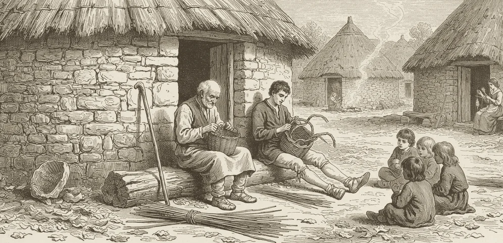
Asta
La primera ciudad que les pagó para que no entraran se llamaba Pomaria, y Ricila fue el que cobró.
Estaba en lo alto de una meseta, entre montes, con murallas de piedra amarilla, puertas con torres, tejados de teja roja y una iglesia con una cúpula pequeña que brillaba al sol de la tarde. La columna llevaba tres meses en marcha. Venían de tierras peladas, de montes de piedra, de llanuras donde no había más que matojos y lagartos y aquellos bereberes que miraban desde las lomas. Pomaria tenía huertas alrededor de la muralla. Higueras. Granados. Acequias con agua que corría. Desde la loma, cuando la vieron, los niños de la columna se echaron a gritar.
Los de Pomaria también gritaron, pero de otra manera. Cerraron las puertas. Subieron a las murallas. Asta los vio desde lejos, pequeños, apretados en las almenas, mirando venir a ochenta mil vándalos por el camino.
Genserico no se paró a cercarla. No tenía tiempo y no tenía máquinas. Mandó a un hombre con una rama verde en la mano hasta la puerta, a decir lo que querían: trigo, aceite, ganado, odres de agua. Y que si se lo daban, la columna pasaría de largo sin tocar nada. Y que si no, no.
El problema fue que el hombre con la rama verde no sabía latín, y en Pomaria nadie sabía vándalo.
Ricila estaba en el carro de Fredo, enseñándole las letras al niño Guntario con un palito en la tierra del camino, cuando vinieron a buscarle. Félix, a caballo, cubierto de polvo rojo hasta las cejas.
—El rey necesita a alguien que hable latín —dijo—. Latín de verdad. De libros. Los de la ciudad tienen un obispo en la muralla que habla como Cicerón, y no le entiende nadie.
Ricila dejó el palito. Miró a Asta.
Asta no dijo nada. Le arregló la túnica, que la tenía torcida. Le quitó el polvo del pelo con la mano. Y le dejó ir.
Lo vio subir hacia la puerta de la ciudad a pie, detrás del caballo de Félix, con el hombre de la rama verde, flaco, con el pelo largo suelto, con la túnica parda llena de polvo, sin espada. Lo vio pararse delante de la puerta cerrada y levantar la cara hacia la muralla. Lo vio hablar. No le oía. Pero veía las manos, que se movían como se movían en el pórtico de la villa de Materno, cuando le explicaba a ella un verso difícil de Virgilio.
Estuvo hablando mucho rato. Arriba, en la muralla, un hombre con una túnica blanca y un gorro le contestaba. Luego se callaron los dos. Luego el de la muralla se echó a reír.
Ricila volvió al anochecer, con Félix, con el hombre de la rama verde y con treinta carros de grano detrás, tirados por bueyes de la ciudad.
—¿Qué le dijiste? —le preguntó Asta, esa noche, junto al fuego.
—Lo que me mandó el rey. Que queríamos trigo y pasar de largo. —Ricila se encogió de hombros—. Y luego el obispo me preguntó quién era yo, que hablaba latín como un romano y tenía pinta de godo. Y le dije que era un suevo que había aprendido a leer con Virgilio en una villa del Duero. Y él me preguntó qué libro de Virgilio. Y le dije que la Eneida. Y me preguntó qué verso. Y le dije el de Dido.
—¿Y se rio?
—Se rio porque se lo dije mal. —Ricila se rio también—. Me equivoqué en una palabra. Me corrigió desde la muralla. Y luego dijo que un pueblo que trae a alguien que se sabe a Dido, aunque sea mal, no puede ser tan bárbaro. Y mandó abrir los graneros.
Asta se quedó mirándole. A la luz del fuego tenía la cara quemada del sol, y la barba sin recortar, y el pelo lleno de polvo rojo, y una alegría en los ojos que ella conocía bien.
—Te ha gustado —dijo.
—¿El qué?
—Hablar con él. Con el obispo.
Ricila tardó en contestar.
—Llevo tres meses sin hablar con nadie que haya leído un libro —dijo al fin, despacio—. Desde Teodoro. Desde Materno. —Miró el fuego—. Me ha dicho que en la costa del este hay una ciudad grande, Hipona, donde el obispo es el hombre que más libros ha escrito en el mundo. Que se llama Agustín. Que tiene una biblioteca que no cabe en una casa.
—Hipona —repitió Asta.
—Es adonde va Genserico. Félix lo ha oído en la tienda del rey. Hipona primero. Luego Cartago.
Asta no dijo nada. Pensó en un obispo viejo en una ciudad del este, con una biblioteca que no cabía en una casa, mirando desde la muralla cómo llegaban ochenta mil vándalos por el camino. Y en Ricila, delante de la puerta, levantando la cara.
La rama del Abuelo seguía viva. Asta la miraba cada mañana, antes de que sonara el cuerno. La llevaba en una olla de barro que le había cambiado a una mujer silinga por dos puntos en la mano de su marido. La olla iba llena de la tierra de la Bética, de la tierra de la tumba, mezclada con arena del río de Tingis, y la regaba un poco cada noche con el agua del odre, aunque no sobrara. La gente de los carros de al lado se reía de ella al principio. Una vándala regando un palo en mitad de Mauritania, con la sed que pasaban todos. Luego dejaron de reírse.
A finales de septiembre, una mañana, Asta vio en la rama, junto a una yema, dos hojas nuevas. Pequeñas, estrechas, plateadas por debajo.
No se lo dijo a nadie. Ni a Ricila. Se quedó mirándolas un rato, de rodillas junto a la olla, en la trasera del carro de Fredo, mientras alrededor la columna se despertaba y se enganchaban los bueyes. Luego tapó la olla con un trapo húmedo, para que no le diera el sol de mediodía, y se fue a ver a la primera enferma del día.
Fredo lo vio. No dijo nada tampoco. Pero aquella noche, junto al fuego, en lugar de tallar una cuchara, se puso a tallar con mucho cuidado una tabla pequeña de madera de olivo silvestre, del tamaño de una mano, para poner de tapa en la olla y que no se cayera la tierra con los botes del carro. Le hizo un agujero en el centro para que pasara la rama. Le talló alrededor, con la punta del cuchillo, unas hojas.
—Para el árbol de tu padre —le dijo a Asta, dándosela—. Guntario el del escudo rojo. Que me daba una moneda por cada cuchara que hacía bien.
—Esta está bien —dijo Asta.
—Esta no me la pagues —dijo Fredo.
Esa noche, el niño Guntario se durmió con la cabeza en las rodillas de su padre, junto al fuego. Antes de dormirse dijo una cosa.
—Papá, ¿tú eres romano o suevo?
Ricila le acarició el pelo.
—Soy de los que leen —dijo—. Es otro pueblo. No tiene rey.
Teudo
Desde la muralla del castro se veía la Peña entera, y Teudo se pasaba las tardes mirándola como se mira la casa de un muerto.
No podía hacer otra cosa. La pierna no le dejaba trabajar en el campo con los galaicos, ni subir al monte con los pastores, ni bajar al río con los pescadores. Le dolía al andar, le dolía al estar de pie, le dolía cuando cambiaba el tiempo, y aquel otoño el tiempo cambiaba todos los días. Así que se sentaba en lo alto de la muralla del castro, en una piedra que los galaicos le dejaron para eso, con el bastón entre las rodillas, y miraba.
Veía la torre de madera de la Peña, que nadie había arreglado desde Fravita y que se inclinaba un poco a la izquierda, hacia el río. Veía la puerta de roble. Veía a los hombres de la guardia, pequeños como hormigas, en las murallas. Veía, por las mañanas, a seis hombres a caballo salir por la puerta y bajar al valle, a las aldeas, a cobrar, y volver por la tarde con mulas cargadas.
Y veía, algunas tardes, a un hombre ancho en lo alto de la torre. Solo. Sin moverse. Con un brazo colgando, raro, torcido, pegado al cuerpo.
Agiulfo.
También miraba hacia el castro. Teudo lo sabía, aunque desde tan lejos no se le veía la cara. Se quedaban así, los dos, cada uno en su muralla, a media legua, con el Duero en medio, mirándose sin verse, hasta que se hacía de noche.
Brunhild subía a buscarle al anochecer. Siempre. Subía la escalera de piedra de la muralla con un cuenco de algo caliente, se sentaba a su lado en la piedra y le daba el cuenco y no decía nada, y esperaba a que se lo comiera. Luego bajaban juntos. Despacio. Ella delante, él detrás, con el bastón, apoyándose en el muro.
No hablaban de lo que eran. No hacía falta. Todo el castro lo sabía. La madre lo sabía. El niño Wilja lo sabía y no decía nada, que era como decía las cosas Wilja. Teudo dormía en la casa de la piel de cabra, en un jergón junto a la puerta, como un perro de guardia; Brunhild, con la madre y el niño, al otro lado del fuego. Por las noches, a veces, Teudo se despertaba y la oía respirar, y se quedaba despierto mucho rato, escuchando.
Por las mañanas, para no volverse loco, aprendió a hacer cestos.
Fue cosa de un viejo galaico que se llamaba Camalo y que no tenía dientes ni piernas que le sirvieran, porque se le habían helado de joven en el monte, buscando una cabra. Se sentaba todas las mañanas a la puerta de su casa, al sol, con un montón de varas de mimbre y de castaño a su lado, puestas a remojo en un cubo, y trenzaba. Cestos para las castañas. Cestos para el pan. Nasas para las truchas. Cunas. Hacía uno al día, a veces dos, sin mirar casi lo que hacía, hablando todo el rato con quien pasara.
Teudo se sentó a su lado una mañana porque no tenía otra cosa que hacer. Camalo le miró la pierna, le miró las manos, y le dio un puñado de varas sin decir nada. Le enseñó con las manos, porque Teudo no entendía el galaico y Camalo no sabía suevo. Así no. Así. Más apretado. La vara de arriba siempre por fuera. Teudo se pinchó, se cortó, rompió varas, hizo un cesto torcido que no se tenía de pie y que Camalo tiró a la calle de una patada, riéndose sin dientes. Al día siguiente volvió. Y al otro.
A finales de octubre hizo un cesto que se tenía de pie. Camalo lo cogió, le dio vueltas, lo apretó, metió el puño dentro y empujó. Aguantó. Se lo devolvió y dijo una palabra en galaico.
—Dice que vale para castañas —le tradujo Wilja, que pasaba—. No para huevos.
—¿Y eso es bueno?
—Para un suevo, es muy bueno.
Mientras trenzaba, Teudo aprendió galaico. Palabra a palabra, de Camalo y de los niños que se sentaban alrededor a mirar al soldado cojo que hacía cestos, y que se reían cuando lo decía mal. Aprendió los nombres de las cosas: el pan, la castaña, el río, la piedra, la lluvia, que tenía muchos nombres, uno para cada clase. Aprendió que los galaicos llamaban a los suevos de una manera que quería decir «los que llegaron ayer». Y que a la Peña, la llamaban «la que cobra».
La madre aprendió más deprisa que él. A las dos semanas regateaba en galaico con las mujeres de la fuente por un queso. Al mes hilaba en las veladas de las galaicas como había hilado en las suyas, en la casa de labor, contando historias del Rin que las galaicas escuchaban con la boca abierta. Las galaicas le enseñaron a hacer el pan de bellota. Ella les enseñó a hacer la sopa de berzas con tocino, aunque no había tocino.
Brunhild tejía. Tenía un telar de pie, prestado, en la puerta de la casa de la piel de cabra, y tejía de sol a sol, telas de lana para las galaicas a cambio de comida. No hablaba de lo que tejía. Teudo la miraba desde el sitio de Camalo, mientras trenzaba, y pensaba en la noche del buhonero, en la casa de labor, cuando ella tejía una capa «para alguien de los montes» que luego fue la túnica de boda de Asta.
Un atardecer de octubre, en la muralla, ella le preguntó por Odo.
Fue la primera vez en trece años que alguien le preguntaba por Odo. Teudo se quedó con el cuenco a medio camino de la boca.
—¿Qué quieres saber?
—Cómo era. —Brunhild miraba la Peña—. Contigo. Cuando no estaba yo.
Teudo lo pensó.
—Se reía mucho —dijo—. De todo. De Fravita, a sus espaldas. De mí, porque era más alto y más fuerte y más guapo y yo no. —Brunhild casi sonrió—. Me enseñó a tirar con honda. A los diez años, en el carro, en la Galia. Me enseñó a pelear. Me enseñó a beber, que no sé si fue bueno. —Se quedó callado—. Me dijo una vez, en la torre de la Peña, de noche, que se iba a casar contigo aunque tu padre le pidiera cien vacas. Que si hacía falta las robaba.
—Mi padre le pidió tres.
—Ya lo sé. Me lo contó. Estaba furioso. Decía que tres vacas era un insulto, que le hacía parecer barato. —Teudo se rio, flojo—. Las pagó en dos días.
Brunhild se rio también. Luego dejó de reírse.
—¿Te importa? —preguntó, muy bajo—. Que fuera de él.
Teudo dejó el cuenco en la piedra. Miró la cinta roja de su muñeca, con sus tres nudos.
—Llevo esto desde los Nervasos —dijo—. Diez años. No me lo he quitado ni para bañarme. —Se tocó la cinta con un dedo—. No me importa. Me importaría si no lo fuera.
Brunhild no contestó. Le cogió la mano, la de la cinta. Y se quedaron así, en la muralla, hasta que se encendieron las primeras luces en las casas de abajo y la torre de la Peña se volvió una sombra contra el cielo.
Arsak
Hunila apareció en el vado de abajo una noche sin luna, a finales de octubre, y Arsak casi le mata.
No fue culpa de nadie. Arsak bajaba al río todas las noches desde que llegaron al castro, solo, con la perra, a vigilar los vados. Reburro no se lo había pedido. Lo hacía porque no podía dormir, y porque en la estepa, cuando un campamento estaba en peligro, alguien vigilaba siempre los vados, y porque le gustaba estar solo junto al agua, en la oscuridad, oyendo el río.
Aquella noche oyó otra cosa. Un chapoteo, en el vado, del lado de la Peña. Alguien cruzaba. Uno. A pie. Despacio.
Arsak se agachó entre los alisos. Sacó el cuchillo. La perra se quedó quieta a su lado, con el pelo del lomo erizado, sin gruñir, como le había enseñado.
El que cruzaba llegó a la orilla. Salió del agua. Se quedó parado, mirando alrededor, a oscuras. Arsak le saltó encima por detrás, le tapó la boca con la mano, le puso el cuchillo en el cuello.
—Soy yo —dijo el otro, con la boca tapada, en suevo—. Soy yo. Hunila.
Arsak no le soltó enseguida. Le palpó el brazo derecho. El brazo torcido, mal soldado, el que se rompió en la partida alana de 419. Era él.
Le soltó.
Hunila se sentó en el suelo, en la orilla, sin aliento, tocándose el cuello donde había estado el cuchillo.
—Me dijo Teudo que si un día no aguantaba me avisaría —dijo—. No me ha avisado. Así que vengo yo.
Arsak se sentó a su lado.
—¿Cómo sabías que estábamos aquí?
—Lo sabe todo el valle. —Hunila se encogió de hombros—. Un cojo y un alano de pelo blanco en el castro de los galaicos. Las mujeres de las aldeas lo cuentan en la fuente. Los pastores lo cuentan. Agiulfo lo sabe. —Le miró—. Por eso vengo.
Le contó. Deprisa, en voz baja, mirando todo el rato hacia el otro lado del río, hacia la Peña.
Que Agiulfo había vuelto en mayo. A pie, como le habían dicho, sin espada, sin botas, con un brazo inútil, flaco, muerto de hambre. Que nadie en la Peña había querido abrirle la puerta, y que él, Hunila, había sido el que se la abrió, porque se lo había mandado el hombre del rey que mandaba en la Peña mientras tanto. Que en un mes Agiulfo había vuelto a mandar. Que tenía un papel nuevo del rey, que le había dado Requila en Bracara, donde había ido a contar lo que había pasado en el Anas. Que en el papel ponía que Agiulfo había servido bien al reino y había perdido un brazo por él.
—Y es mentira —dijo Hunila—. El brazo se lo rompió una vándala con una espada vieja. Lo sabemos todos. Él lo cuenta de otra manera. Dice que fue en la batalla, contra cien vándalos.
Que Agiulfo ya no se reía. Que antes se reía mucho, y ahora no. Que bebía más. Que dormía poco, y mal, y gritaba de noche. Que se pasaba las tardes en lo alto de la torre mirando el castro.
—Y que ha puesto precio —dijo Hunila.
—¿A quién?
—A Teudo. Y a ti. —Hunila le miró—. Diez sueldos de oro por el cojo. Cinco por el alano. Vivos o muertos. Lo ha dicho en la Peña, delante de todos, y lo ha mandado decir en las aldeas.
Arsak se quedó callado. Luego se rio, flojo.
—¿Cinco? ¿Solo cinco por mí?
—Dice que los alanos no valen nada. Que hay muchos.
—Ya no hay muchos —dijo Arsak.
Se quedaron un rato callados, en la orilla, oyendo el río.
—Los galaicos no os van a vender —dijo Hunila al fin—. No por diez sueldos. Ni por cien. Odian a Agiulfo más que a nadie. —Se levantó—. Pero en la Peña hay otros. De los suyos. Y en las aldeas hay gente con hambre. Diez sueldos de oro es más de lo que gana un galaico en toda su vida.
—Ya lo sé.
—Pues tened cuidado. —Hunila se quedó un momento de pie, mirando el agua—. Y decidle a Teudo que los de Fravita seguimos siendo los de Fravita. Que somos pocos ya. Ocho. Pero que estamos.
Se dio la vuelta para cruzar el vado otra vez. Arsak le cogió del brazo. Del bueno.
—Hunila.
—¿Qué?
—Si te cogen viniendo aquí, te cuelgan.
—Ya lo sé. —Hunila se soltó, despacio—. Por eso no me van a coger. —Y casi sonrió—. Me enseñó un alano a cruzar ríos sin hacer ruido. Cuando me sacó de uno con un lazo.
Se metió en el agua. Arsak le vio cruzar el vado a oscuras, despacio, sin un chapoteo, hasta que se perdió entre los alisos del otro lado.
Volvió al castro al amanecer. No despertó a Teudo. Esperó a que bajara de la casa de la piel de cabra, con el bastón, a la fuente, y se lo contó allí, en voz baja, mientras Teudo se lavaba la cara en el agua helada.
Teudo le escuchó sin decir nada. Cuando terminó, se secó la cara con la manga.
—Diez —dijo—. Diez sueldos por mí.
—Y cinco por mí.
Teudo le miró. Y por primera vez desde la playa de Iulia Traducta, desde que vio irse la vela de Asta, se echó a reír. De verdad. Con toda la cara. Apoyado en el bastón, junto a la fuente de los galaicos, a las seis de la mañana, mientras las mujeres que bajaban con los cántaros se paraban a mirarle como se mira a un loco.
—Te ha tasado como a un potro —dijo, cuando pudo hablar—. A un potro de dos años. Cojo.
—Tú estás cojo —dijo Arsak.
—Por eso valgo el doble. —Teudo se secó los ojos—. Soy más difícil de coger. Hay que esperar a que llegue.
Arsak se rio también. Y se dio cuenta, mientras se reía, de que hacía meses que no se reía. Desde antes de la playa. Desde antes de Emerita. Desde una noche en el patio de la villa del Anas, comiendo pan con aceite nuevo.
Las mujeres de los cántaros siguieron mirándolos, con los cántaros en la cadera, hasta que se les pasó la risa.
Las fiebres
Mauritania y el valle del Duero – del otoño de 429 al invierno de 430
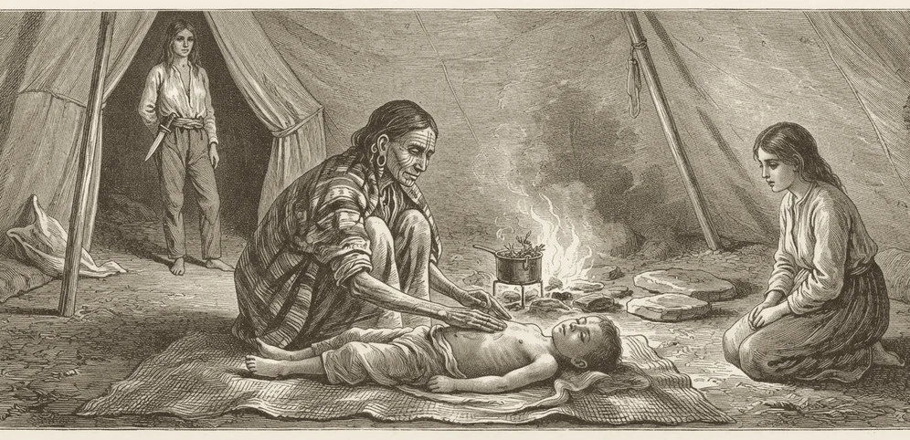
Asta
Las fiebres llegaron con las lluvias, a mediados de noviembre, en un valle de la Mauritania del este donde la columna se paró dos semanas porque los ríos venían tan crecidos que no se podían cruzar.
Era un valle ancho, verde, sorprendente después de meses de piedra y polvo, con un río de agua marrón en el fondo y prados encharcados en las orillas, y cañaverales, y nubes de mosquitos que salían al atardecer de entre las cañas con un zumbido que se oía en todo el campamento. La gente se alegró de verlo. Hierba para los animales. Agua para beber sin buscarla. Leña. La columna se extendió por las orillas, junto al agua, y montó las tiendas en los prados.
A la semana empezaron los primeros. Escalofríos, primero; un frío que no se iba con mantas ni con fuego, que hacía temblar a los hombres más grandes hasta que les castañeteaban los dientes. Luego, de golpe, el calor. Una fiebre altísima, que los hacía delirar, hablar con los muertos, quitarse la ropa, pedir agua a gritos. Luego el sudor, a chorros, que empapaba las mantas. Y luego nada: se quedaban dormidos, agotados, y se despertaban al día siguiente casi bien, débiles, pálidos, pensando que se había acabado.
No se había acabado. Al tercer día volvía. Igual. El frío, el fuego, el sudor. Y al tercer día otra vez.
—Fiebre terciana —dijo el físico de Cartago, el de los anillos, que había vuelto a la columna después de pasar el otoño con la familia del rey. Asta le encontró una mañana junto al río, mirando a un muchacho alano que temblaba en una manta—. La de los pantanos. Los griegos la conocen desde siempre. Hipócrates la describe. Viene del aire malo de las aguas quietas.
—¿Y qué se hace?
El físico se encogió de hombros. Le brillaron los anillos.
—Irse de aquí —dijo—. Lo demás no sirve de mucho.
No se podían ir. Los ríos no bajaban.
Asta hizo lo que sabía. Agua hervida. Caldo cuando había. Corteza de sauce de la orilla, que había muchos, machacada y hervida, amarga como la hiel, que les bajaba un poco el fuego. Paños mojados en la frente, en las muñecas, en los pies. Mantas en el frío y quitar las mantas en el calor. No servía de mucho. Lo sabía. Lo veía en las caras.
Al quinto día empezaron a morir. Los viejos, primero. Luego los niños pequeños.
Al sexto día cayó el niño Guntario.
Asta lo supo antes de tocarle. Lo supo por cómo estaba sentado en la trasera del carro de Fredo, quieto, con los brazos alrededor de las rodillas, sin jugar, mirando el río. El niño no estaba quieto nunca. Le puso la mano en la frente. Estaba frío. Y empezó a temblar en ese momento, debajo de su mano, como tiembla un perro mojado.
Asta no recordó nunca bien los tres días siguientes. Recordó trozos. Recordó a Ricila sentado junto al niño en la tienda, día y noche, leyéndole en voz alta, como le había leído a ella en el desván de la casa de labor, cuando tenía catorce años y la fiebre. La historia de Eneas, el que llevaba a su padre a la espalda. El niño no le oía. Ricila leía igual. Recordó el calor del niño contra su pecho, en las noches del fuego, cuando deliraba y la llamaba «madre» en suevo, y luego en vándalo, y luego en alano, con las palabras que le había enseñado Arsak. Recordó haberle gritado al físico de Cartago, en latín, cosas que no sabía que sabía decir.
Y recordó a la vieja.
Apareció la segunda noche. Nadie supo de dónde. Era una mujer de los moros de la tierra, de los bereberes, vieja, flaca, morena como el cuero, con la cara llena de tatuajes azules, rayas y puntos en la frente, en la barbilla, en las mejillas, y unos pendientes de plata grandes como monedas. Llevaba un manto de lana a rayas y un saco de cuero. Entró en la tienda sin pedir permiso, como había entrado Zarina en la playa, y se agachó junto al niño y le miró a la cara un rato largo, sin tocarle.
Detrás de ella, en la puerta de la tienda, estaba Zarina.
—La he traído yo —dijo Zarina, en alano—. Cura a los caballos de los moros. Y a los moros. Los suyos tienen esta fiebre desde siempre, en todos los valles. Viven con ella.
La vieja dijo algo en su lengua. Nadie la entendió. Sacó de su saco un manojo de una hierba gris, seca, que olía tan fuerte que llenó la tienda, un olor amargo, de monte, que a Asta le recordó al ajenjo que la madre colgaba en el establo para las moscas. La echó en un cazo con agua. La puso a hervir en el fuego. Luego cogió al niño, le quitó la camisa y le frotó el pecho, la espalda, las plantas de los pies, con un aceite oscuro que llevaba en un frasco de barro, despacio, cantando algo en voz baja, una canción de tres notas que no se acababa nunca.
Asta la dejó hacer. No sabía por qué. Teodoro le habría dicho que no. Teodoro le habría dicho que la mitad de lo que hacían las viejas no servía para nada y que la otra mitad hacía daño.
Pero Teodoro no estaba. Y el niño tenía los labios morados.
La vieja le dio al niño a beber el cocimiento de hierba gris, a cucharadas, con una cuchara de madera que sacó del saco, toda la noche, poco a poco. El niño lo escupía. Ella volvía a darle. Al amanecer, cuando volvió el frío, la vieja calentó unas piedras planas en el fuego, las envolvió en trapos y se las puso al niño en los pies, en las manos, en la tripa. Y cuando volvió el calor, se las quitó y le puso paños mojados en agua fría con vinagre.
Asta lo miraba todo. Lo apuntaba por dentro, como apuntaba Ricila en sus tablillas. La hierba gris. Las piedras calientes. El vinagre.
La tercera noche, la vieja sacó del fuego un hierro fino, como una aguja grande, con la punta al rojo. Asta se levantó de un salto. La vieja la miró, tranquila, con el hierro en la mano. Señaló detrás de la oreja del niño. Luego se señaló a sí misma detrás de la oreja: había allí una cicatriz pequeña, redonda, antigua.
—Dice que así se curó ella de niña —tradujo Zarina, que había aprendido a entenderla con las manos—. Dice que el fuego echa la fiebre.
Asta miró el hierro. Miró al niño, que respiraba deprisa, con la boca abierta, con los ojos en blanco. Pensó en el cauterio de la flecha alana de los montes Nervasos, que Arsak había apretado contra un muslo para cerrar una herida. Pensó que aquello no era una herida.
—No —dijo.
La vieja se encogió de hombros. Apagó el hierro en el cubo de agua, con un silbido. No pareció ofendida. Siguió con las piedras y los paños y el cocimiento gris.
Al cuarto día, el frío no volvió.
Al quinto, el niño abrió los ojos, la miró y dijo que tenía hambre.
Asta se echó a llorar. La vieja, en el rincón de la tienda, se rio, con una risa sin dientes, y dijo algo en su lengua.
—Dice que los niños fuertes tienen hambre —tradujo Zarina—. Y que el tuyo es fuerte porque tiene tres sangres. Lo ha visto en su cara.
La vieja se fue esa misma tarde, como había venido, sin despedirse. Asta le dio lo único que tenía que valiera algo: un tarro de la miel de tomillo de Tingis. La vieja lo olió, asintió y se lo guardó en el saco. Y le dejó a cambio, sin que se lo pidiera, un manojo de la hierba gris.
Asta no supo nunca cómo se llamaba. Ricila, que intentó preguntárselo, entendió algo parecido a Tala. Asta la llamó así, por dentro, el resto de su vida.
Murieron en aquel valle casi trescientos. Los enterraron en la orilla, en tumbas en fila, con piedras encima, antes de que bajara el río.
La última noche en el valle, cuando ya el río bajaba y se oía a los hombres probar el vado con pértigas, Zarina vino al fuego de Asta sin la niña. Se sentó en el suelo, cruzó las piernas y se quedó mirando las llamas un buen rato sin decir nada, cosa rara en ella.
—Mi madre se murió de esto —dijo al fin—. De la fiebre de tres días. En la Lusitania, junto al Anas, el verano antes de que vinieran los godos. Yo tenía catorce años. —Echó una rama al fuego—. No había ninguna vieja de los moros. No había nadie.
Asta no dijo nada.
—Mi padre se murió con Addax —siguió Zarina—. En la llanura. Con su caballo. Como tienen que morir los alanos. —Se encogió de hombros—. Yo me escapé con mi abuelo y mis dos hermanos pequeños. A uno se lo llevó un río. Al otro, los godos. Mi abuelo se murió en la Bética, de viejo, contento, contando historias de la estepa que no se creía nadie.
—Como Silvano —dijo Asta, sin pensar.
—¿Quién es Silvano?
—Un viejo romano. De mi granja. Contaba historias de los vándalos que no se creía nadie.
Zarina la miró. Luego se rio, flojo.
—Todos los viejos cuentan historias que no se cree nadie —dijo—. Y luego se mueren y resulta que eran verdad.
Se quedaron un rato calladas, mirando el fuego. Alrededor se oía el campamento recogiendo: bueyes, cadenas, mujeres llamando a los niños.
—Mi abuelo me habló de tu alano —dijo Zarina—. Antes de morirse. Me dijo que el hijo de Saurmag, el que había saltado del caballo en el Rin para salvar a un vándalo, se fue herido de la llanura, después de una refriega con los godos, y no volvió. Que todos le dieron por muerto. Que Addax preguntó por él la víspera de la última batalla, y que nadie supo decirle nada. Y que mi abuelo pensó siempre que se había ido a buscar al vándalo del Rin, porque los alanos pagan sus deudas.
Asta sintió que algo se le apretaba en el pecho.
—Cuando Félix me contó en Emerita quién era el alano viejo de las ruinas —siguió Zarina—, me acordé de mi abuelo. Y pensé que tenía que conocer a la niña por la que el hijo de Saurmag no volvió con los suyos. —La miró de frente—. Para ver si valía la pena.
—¿Y vale?
Zarina se levantó. Se sacudió los pantalones.
—Has traído al niño de vuelta de donde no vuelve nadie —dijo—. Aunque no dejaste que la vieja le quemara la oreja. —Casi sonrió—. Yo la habría dejado. Pero tú eres de las que leen, como tu marido.
Se fue hacia su fuego. A mitad de camino se volvió.
—Vale —dijo. Y siguió andando.
Teudo
El que intentó venderlos se llamaba Medamo, y era el sobrino de Camalo.
Teudo lo supo después. Antes no sabía nada de él, salvo que era un galaico joven de una aldea de abajo, de las que pagaban a la Peña, que subía al castro de vez en cuando a ver a su tío y a traerle castañas. Un muchacho de veinte años, delgado, callado, con una cicatriz en el labio, que se sentaba al lado de Camalo mientras trenzaba y miraba a Teudo trenzar con unos ojos que Teudo no supo leer.
Aquella noche de enero, Arsak le cogió en el vado.
No en el de abajo, el de las truchas, que vigilaba siempre. En otro, más arriba, uno pequeño, de pastores, por donde no pasaba nadie en invierno porque el agua bajaba helada. Arsak lo vigilaba también, desde hacía unas semanas, sin decírselo a nadie. Por si acaso.
Medamo cruzaba hacia la Peña. Solo. De noche. Con el agua por la cintura, helada, temblando.
Arsak le esperó en la otra orilla. Le dejó salir del agua. Y le cogió.
Lo subió al castro atado, al amanecer, con la boca tapada, y lo puso delante de la casa de Reburro. Todo el castro salió a mirar. Camalo salió también, apoyado en dos palos, porque no podía andar de otra manera, y cuando vio a su sobrino atado en el suelo, se quedó quieto y no dijo nada.
Reburro salió de su casa. Miró al muchacho. Miró a Arsak.
—¿Adónde iba? —preguntó.
—A la Peña —dijo Arsak—. Por el vado de los pastores. De noche.
—¿Y qué llevaba?
Arsak sacó del cinturón un trozo de tablilla de cera, pequeño. Se lo dio a Reburro. Reburro no sabía leer. Se lo pasó a Teudo.
Teudo tampoco sabía leer bien. Pero aquello sí lo leía. Lo había aprendido él solo, mirando a Ricila, aquellos años en la Peña. Eran números. Romanos. Unas rayas. Y un dibujo: un castro, una muralla en redondo, con una marca en un sitio. En la parte de atrás. En la puerta del monte. Y al lado, otro número.
—Cuántos hombres hay en el castro —dijo Teudo, despacio, en galaico—. Cuántos de guardia en la puerta del monte de noche. A qué hora se cambian.
Hubo un silencio. Nadie se movió.
Medamo, en el suelo, levantó la cara. Tenía los labios morados del frío.
—Diez sueldos —dijo, en galaico, mirando a Teudo—. Diez sueldos de oro. Mi padre debe a la Peña tres años de centeno. Si no paga en primavera, el manco se lleva a mi hermana. Lo ha dicho. —Se le quebró la voz—. Diez sueldos es la deuda de mi padre y la de toda la aldea. Y una casa nueva. Y una vaca.
Nadie dijo nada.
Teudo se quedó mirando al muchacho. Pensó en el viejo jefe galaico en la puerta de la Peña, diciéndole que Fravita les pegaba pero los defendía. Pensó en los sacos de grano que había contado tantos años con palitos de avellano, y luego con las tablillas de Ricila. Tantas medidas de centeno. Tantas de cebada. Tantos días de trabajo.
—¿Qué se hace con un traidor en el castro? —le preguntó a Reburro.
Reburro tardó en contestar.
—Se le tira de la muralla —dijo—. Por la parte del monte. Donde hay rocas.
Camalo, apoyado en sus palos, cerró los ojos.
Teudo se agachó. Le costó, por la pierna. Se puso a la altura del muchacho, en el suelo.
—¿Cuánto debe tu padre?
—Tres años. Treinta medidas de centeno.
Teudo se quedó callado un momento. Luego se levantó, con el bastón, y se volvió hacia Reburro.
—Yo contaba esos sacos —dijo—. En la Peña. Siete años. Sé lo que debe cada aldea y sé lo que puede pagar. Treinta medidas en tres años no las paga nadie de abajo. Es mentira. Agiulfo cobra el doble de lo que apuntaba Fravita. —Miró al muchacho—. No se le tira de la muralla a uno por no poder pagar una mentira.
—Nos ha vendido —dijo Reburro.
—No ha llegado a vendernos. —Teudo se encogió de hombros—. Lo ha cogido el alano antes.
Reburro le miró mucho rato. Luego miró a Camalo, que seguía con los ojos cerrados, apoyado en sus palos, temblando.
—Se queda en el castro —dijo al fin—. Atado, hasta la primavera. Trabajando para el que le dio de comer. —Señaló a Camalo con la barbilla—. Para su tío. Y su padre sube aquí, con su madre y su hermana, antes de que el manco se la lleve. Y que el manco venga a por ella si quiere. —Escupió en el suelo—. A ver si se atreve.
Desataron al muchacho. Camalo no le dijo nada. Le dio la espalda y se fue hacia su casa, despacio, con sus dos palos, y el muchacho fue detrás de él, con la cabeza baja, como un perro que sabe que ha hecho algo malo.
Esa tarde, en la puerta de la casa de Camalo, cuando Teudo fue a sentarse a trenzar como todas las mañanas, el muchacho estaba allí. Sentado en el suelo, al lado de su tío, con un montón de varas de mimbre en las rodillas, trenzando. Mal. Torcido.
Camalo le miró a Teudo. Luego miró a su sobrino. Y le dio a Teudo un puñado de varas, como el primer día.
Trenzaron los tres hasta que se puso el sol, sin decir nada.
Arsak
Arsak había empezado a enseñar a montar a los muchachos del castro en diciembre, y en enero se dio cuenta de que les estaba enseñando a hacer la guerra.
No lo había decidido. Había empezado porque los muchachos galaicos se pasaban el día mirando a Viento y a Estrella, que eran los únicos caballos grandes del castro, y porque un día uno de ellos, el más atrevido, se había subido a Estrella sin permiso y se había caído de cabeza en un charco, y Arsak, en lugar de enfadarse, le había levantado, le había sacudido el barro y le había vuelto a subir. Y al día siguiente había diez. Y a la semana, treinta.
Los galaicos tenían caballos, pero no como los de Arsak. Caballos pequeños, peludos, de monte, como las yeguas de la Peña, que vivían sueltos en los montes y que se cazaban cuando hacía falta uno. Servían para cargar y para subir cuestas, y para nada más. Nadie les había enseñado nunca a luchar encima de ellos.
Arsak les enseñó lo mismo que a los muchachos de la Peña, diez años antes. A montar sin manos, con las rodillas. A dar la vuelta cerrada al galope. A caerse sin romperse nada. Y luego, sin darse cuenta, otras cosas. A tirar con el arco desde el caballo, aunque solo tenían arcos de caza, cortos, de los que usaban para las liebres. A cargar en línea abierta, como cargaban los alanos, y no en montón. A dar la vuelta antes de llegar al enemigo y tirar de espaldas al irse, como tiraba Félix.
Los muchachos aprendían deprisa. Más que los de la Peña. Tenían menos miedo y más hambre.
Teudo le miraba desde la muralla, algunas tardes, con el bastón entre las rodillas. Un día bajó al prado de detrás del castro, donde entrenaban, y se quedó a su lado mirando a los muchachos dar vueltas.
—Les estás enseñando a luchar contra los suevos —dijo.
—Les estoy enseñando a montar.
—A montar como monta un alano en una batalla. —Teudo se apoyó en el bastón—. Contra los suevos, que luchan a pie, en fila, con escudos. Que no saben qué hacer contra un caballo que viene y se va.
Arsak no contestó.
—No me parece mal —dijo Teudo al cabo de un rato—. Solo digo lo que veo.
—Tú eres suevo.
—Yo soy lo que quiera. Lo dijo Reburro. —Teudo miró a los muchachos—. Y lo que quiero es que mi madre no tenga que subir a ningún otro castro. Ni bajar.
Uno de los muchachos dio la vuelta al galope, cerrada, demasiado cerrada, y el caballo de monte resbaló en la hierba mojada y se cayó de lado, con el muchacho debajo. Arsak echó a correr. Teudo detrás, cojeando.
El muchacho estaba bien. Asustado, con la pierna atrapada debajo del caballo, pero entero. Lo sacaron entre los dos. El caballo se levantó solo, sacudiéndose.
El muchacho era Medamo. El sobrino de Camalo. El que había intentado venderlos por diez sueldos de oro.
Se quedó sentado en la hierba, con la cara llena de barro, mirando a Arsak con los ojos muy abiertos.
—¿Por qué me sacas? —preguntó en galaico.
Arsak no le entendió. Teudo sí.
—Pregunta por qué le sacas —tradujo.
Arsak lo pensó. Pensó en Félix, a los trece años, en el prado de la villa del Anas, cayéndose del caballo una y otra vez, llorando de rabia. En Hunila en el río. En un vándalo cojo en el hielo, con tres francos encima.
—Dile —dijo— que los que se caen del caballo se levantan. Todos. Es la única regla.
Teudo se lo dijo.
Medamo se quedó un rato sentado en la hierba. Luego se levantó, cojeando un poco, fue hasta su caballo de monte, cogió las riendas y se volvió a subir.
Dio la vuelta al galope. Cerrada. Esta vez no se cayó.
Hipona
Numidia y el valle del Duero – primavera de 430
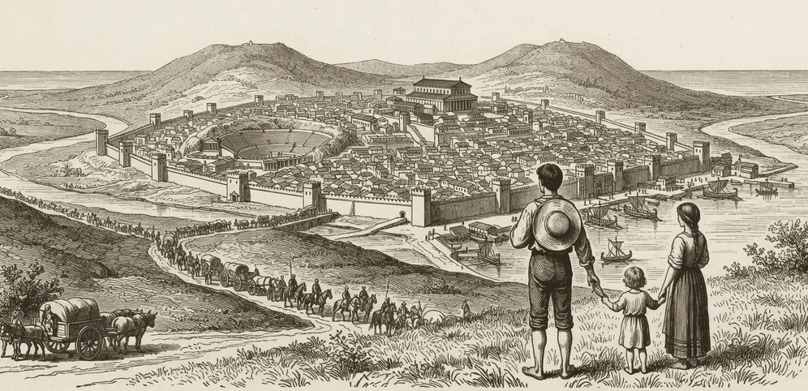
Asta
Hipona apareció una mañana de mayo, desde lo alto de un collado, entre dos colinas verdes, al lado del mar, y lo primero que hizo Ricila al verla fue quitarse el sombrero de paja.
Asta no lo había visto nunca hacer eso. Ni en la villa de Materno, ni en Bracara delante del rey, ni en la iglesia. Se lo quitó despacio, con las dos manos, y se quedó con él contra el pecho, mirando la ciudad, como se mira una tumba o un altar.
Era más grande que Bracara. Más grande que Emerita. Asta no había visto nunca una ciudad tan grande, ni tan blanca. Estaba en una llanura junto al mar, entre dos ríos, al pie de dos colinas, con murallas largas de piedra clara que la rodeaban entera, con torres cada pocos pasos. Dentro, tejados rojos, cientos, miles, apretados. Cúpulas. Columnas. Un teatro, en la ladera de una colina, como una concha de piedra. Un puerto, con un muelle largo y barcos. Y en lo alto, en la parte más alta de la ciudad, una iglesia grande, enorme, con un tejado de tejas rojas más alto que todos los demás, que brillaba al sol.
—La basílica de la Paz —dijo Ricila, en voz baja—. Ahí predica. Agustín.
—¿Cómo lo sabes?
—Me lo dijo el obispo de Pomaria. Y un cura de Cirta, en el camino. Y un mercader de Sitifis. —Ricila no apartaba los ojos de la ciudad—. Todos me lo dicen. Todos lo conocen. Lleva treinta y cinco años de obispo ahí. Tiene setenta y cinco años. Ha escrito más libros que nadie. Libros sobre Dios, sobre el tiempo, sobre la memoria, sobre su madre, sobre él mismo cuando era joven y robaba peras. —Ricila casi sonrió—. Dicen que escribió uno sobre por qué cayó Roma. Para explicar que no era culpa de Dios.
—¿Y de quién era?
—No lo sé. No lo he leído. —Ricila se volvió a poner el sombrero—. Está ahí dentro.
La columna bajó del collado aquella tarde, despacio, y se extendió por la llanura alrededor de la ciudad, por los dos lados de los ríos, por las huertas, por los olivares, por los campos de trigo verde que nadie iba a segar. Las puertas de la ciudad estaban cerradas. En las murallas había gente: soldados con cascos que brillaban, y detrás de los soldados, apretados, cientos de cabezas. Mirando.
Ricila le explicó a Asta lo que se sabía, lo que contaban en la tienda del rey, lo que le contaba Félix por las noches junto al fuego. Que dentro de la ciudad estaba el conde Bonifacio, el general romano de África, con sus soldados godos. Que Bonifacio había sido amigo de Agustín y luego había dejado de serlo, y que luego había vuelto a serlo. Que dentro de la ciudad estaba también media África: gente de todas las villas y pueblos que había ido dejando atrás la columna en su marcha, que habían huido delante de ella como huyen los animales delante del fuego, y que se habían refugiado detrás de las murallas de Hipona. Obispos de otras ciudades. Curas. Monjes. Monjas. Familias enteras con sus carros.
—Y Genserico no tiene máquinas —dijo Ricila—. Ni torres, ni arietes, ni nada. Los vándalos no saben tomar ciudades. Nunca lo han hecho.
—¿Entonces?
—Entonces se van a sentar fuera —dijo Ricila— hasta que los de dentro se mueran de hambre. Como hizo Gunderico en los montes Nervasos con los suevos de Teudo.
Asta se quedó callada.
Esa noche, desde el campamento, se veían las luces de la ciudad. Miles. En las casas, en las murallas, en las torres. Y en lo alto, en la basílica de la Paz, una luz más grande que las otras, que se quedó encendida toda la noche.
Asta la estuvo mirando mucho rato, sentada a la puerta de la tienda, con el niño dormido en las rodillas. La olla del Abuelo estaba a su lado, con la tapa de Fredo. Tenía ya once hojas.
Ricila salió de la tienda y se sentó a su lado. Miraba la misma luz.
—Está despierto —dijo—. Es un viejo. Los viejos no duermen.
—¿Cómo sabes que es él?
—No lo sé. —Ricila se quedó un rato callado—. Pero me gustaría que fuera él. Que estuviera ahí arriba, escribiendo, mientras ochenta mil vándalos le rodean la ciudad. Escribiendo, como si no pasara nada.
Asta le miró. Pensó en él, a los diecisiete años, en el desván de la casa de labor, leyéndole a ella con fiebre la historia de un hombre que llevaba a su padre a la espalda. Leyendo como si no pasara nada.
—Tú también lo harías —dijo.
Ricila no contestó. Pero le cogió la mano.
Los primeros días del cerco fueron extraños. No pasó casi nada. Los vándalos se instalaron alrededor de la ciudad como se instala una aldea: tiendas, carros, corrales para el ganado, fuegos, hornos de pan. Las mujeres lavaban la ropa en los ríos. Los niños jugaban en los olivares. Los hombres de Genserico cavaron una zanja alrededor de la ciudad, por los lados de tierra, y levantaron una empalizada con los troncos de los olivos que cortaban, para que nadie pudiera salir ni entrar. Y luego se sentaron a esperar.
Desde las murallas, los romanos los miraban. Algunas mañanas tiraban flechas. Algunas noches salían por una puerta pequeña, deprisa, cincuenta o cien, a quemar algún carro o a robar ganado, y volvían a entrar antes de que nadie pudiera alcanzarlos. Por el mar entraban barcos, a veces, con trigo; los vándalos no tenían barcos suficientes para cerrar el puerto.
Asta curaba. Era lo único que hacía. Flechas, quemaduras, cortes, fiebres, partos, las tripas de los que bebían el agua de los ríos sin hervir. La tienda de Asta, junto a los carros de los alanos, se llenaba cada mañana de gente esperando, sentada en el suelo, al sol. Venían vándalos, alanos, esclavos, algún moro. Un día vino una mujer romana, de una villa de los alrededores, que se había quedado fuera de la ciudad porque no le dio tiempo a entrar, con una niña que tenía el brazo roto. Nadie le dijo nada. Asta le puso el brazo en su sitio a la niña, se lo entablilló con dos tablas y clara de huevo, y la mujer se fue sin dar las gracias, sin mirarla, con la cara blanca.
Ricila escribía. Todas las noches, a la luz del fuego, en un rollo de papiro que había comprado en Sitifis con la última plata de los potros de Lucus, con una pluma de caña y tinta de hollín. Asta no sabía qué escribía. No se lo preguntó. Una noche, al pasar detrás de él, leyó por encima de su hombro las primeras palabras, en latín. Decían: «En el año de la llegada de los vándalos a África, que fue el año en que...».
No leyó más. Era de él.
A finales de mayo, una noche sin luna, los de dentro salieron por la puerta del mar. Fueron unos doscientos, a pie, sin ruido, y llegaron hasta los carros de los alanos antes de que nadie diera la voz. Quemaron seis carros. Mataron a dos centinelas y se llevaron un rebaño de cabras. Cuando Félix y los suyos montaron y salieron detrás de ellos, ya volvían corriendo hacia la muralla, con las cabras por delante, entre gritos.
No todos llegaron. Al amanecer, Félix trajo a la tienda de Asta a uno que se había quedado atrás, tirado en una acequia con una flecha alana en el hombro. Lo traía atravesado en la grupa de su caballo, como se trae un ciervo.
—Es tuyo —dijo Félix—. Si se muere, no pasa nada. Si se cura, el rey querrá hablar con él.
Era un muchacho. Diecisiete años, quizá menos. Romano, de la tierra, moreno, con la cabeza rapada y una túnica parda de soldado que le quedaba grande. Temblaba. No de fiebre. De miedo. Miraba a Asta como se mira a un lobo.
Asta le sacó la flecha. La punta había entrado poco, de lado, y había chocado con el hueso del hombro sin romperlo. Le limpió la herida con vino, la cosió con tres puntos, le puso miel y un vendaje. El muchacho no gritó. Se mordió el labio hasta hacerse sangre, pero no gritó.
Cuando terminó, Asta le dio agua. El muchacho bebió, sin dejar de mirarla.
—¿Eres cristiana? —preguntó al fin, en latín. Un latín de la calle, rápido, que Asta tuvo que pararse a entender.
—Sí.
—¿Arriana?
Asta no supo qué contestar. Ricila, que estaba en la puerta de la tienda, contestó por ella.
—Ella no sabe lo que es eso —dijo—. Cura a todo el que entra.
El muchacho se quedó un rato callado. Luego dijo, en voz baja, mirando al suelo, como quien confiesa algo:
—En la ciudad dicen que los vándalos os coméis a los niños.
Asta se echó a reír. No pudo evitarlo. El muchacho la miró, ofendido, y luego, despacio, como si no quisiera, se rio también. Un poco.
Se llamaba Possidio, como el obispo de Calama, que estaba dentro de la ciudad también, refugiado. Su madre le había puesto el nombre por él. Era hijo de un curtidor del barrio del puerto. Se había hecho soldado aquel invierno porque los soldados comían.
Ricila se sentó con él aquella tarde, cuando Asta salió a ver a otros, y le hizo preguntas. Asta oyó algunas desde fuera. Cuánto trigo había en la ciudad. Cuántos soldados. Si entraban barcos. Y luego, al final, una pregunta que no era para el rey.
—¿Y el obispo?
—¿Agustín? —El muchacho se quedó callado un rato—. Está viejo. Predica sentado, ya. Dicen que se le oye poco. Pero la iglesia se llena igual, todos los domingos. Hay gente que duerme en la puerta para coger sitio. —Bajó la voz—. Mi madre dice que ha pedido a Dios que le lleve antes de que caiga la ciudad. O que le dé fuerzas para aguantarlo. Una de las dos cosas.
Ricila no preguntó más.
Tres días después, el rey cambió a Possidio por dos alanos que los romanos habían cogido en la salida. El intercambio se hizo delante de la puerta del mar, a mediodía, con veinte hombres de cada lado y nadie con la espada fuera. Asta lo vio desde lejos. Vio al muchacho andar hacia la puerta, con el brazo en el cabestrillo que le había hecho ella. A mitad de camino, se volvió. Buscó entre los vándalos. La vio. Levantó la mano buena.
Luego entró en la ciudad y cerraron la puerta.
Teudo
El rey vino a cobrar en junio, como había dicho Reburro, pero no vino el rey. Vino Agiulfo, con trescientos.
Lo vieron llegar desde la muralla del castro una mañana de niebla, por el camino del norte, bajando de los montes hacia el Duero. Una columna larga de hombres a pie, con escudos, y algunos a caballo, y carros detrás. Trescientos, decían los vigías. Quizá más. Con los estandartes de los jefes de los valles de Bracara y de Lucus.
Cruzaron el Duero por el vado de arriba, el grande, y se extendieron por el valle, por las aldeas de los galaicos. No por todas. Por las que no habían pagado.
Las que no habían pagado eran casi todas.
Teudo los vio desde la muralla. Vio arder la primera aldea a media mañana: humo negro, que subía derecho, sin viento. Luego la segunda. Luego la tercera. Vio gente corriendo por los caminos, hacia el castro, con lo que podían llevar a cuestas. Vio a los suevos a caballo detrás de ellos, persiguiéndolos, y no los alcanzaban porque los suevos montaban mal. Vio a un hombre a caballo, ancho, con un brazo pegado al cuerpo, en lo alto de un cerro, mirando arder las aldeas sin moverse.
Reburro estaba a su lado, en la muralla. No dijo nada en mucho rato.
—Mi padre nació en esa —dijo al fin, señalando la primera, la que ya no era más que humo—. Y su padre. Y el padre de su padre.
Teudo no supo qué contestar.
A media tarde empezaron a llegar los de las aldeas. Subían por los caminos del cerro, por todas las sendas, a cientos. Mujeres con niños a la espalda. Viejos apoyados en palos. Hombres con hoces, con horcas, con lanzas viejas. Carros con los cofres, los cerdos, las gallinas. Vacas empujadas a palos. Perros. El castro, que tenía cuatrocientas personas, tuvo mil antes de que se hiciera de noche.
No cabían. Durmieron en las calles, en los corrales, en las puertas de las casas, en el suelo, apretados, contra las murallas. Teudo cedió su jergón de la puerta de la casa de la piel de cabra a una mujer con tres niños. La madre cedió el fuego. Brunhild sacó del arcón todas las mantas que había tejido aquel invierno y las repartió.
Esa noche, Reburro reunió a los jefes de las aldeas en su casa. Eran doce. Viejos, la mayoría. Galaicos de barba blanca, con las manos negras de tierra y las caras quemadas de toda una vida al sol. Hablaban todos a la vez. Teudo entendía la mitad. Discutían si había que pagar. Si había que mandar a alguien a hablar con el manco. Si había que esperar a que se fuera. Si había que huir al monte.
Reburro les dejó hablar. Luego miró a Teudo, que estaba en un rincón, de pie, apoyado en el bastón, sin decir nada.
—El cojo sabe cómo pelea el manco —dijo—. Era de los suyos. Contaba sus sacos. Que hable.
Los doce viejos se volvieron a mirarle.
Teudo se quedó un momento callado. Pensó en Fravita, en la torre, la última tarde. «No te pelees con él. Haz como que no existe.» Pensó que Fravita estaba muerto y que Agiulfo había quemado tres aldeas en una mañana.
—No va a subir —dijo, en galaico. Despacio, buscando las palabras—. No enseguida. Agiulfo no es valiente. Tiene miedo a las murallas. Va a hacer lo que hacía Gunderico en los montes Nervasos: sentarse abajo y quemar. Quemar todo lo que haya fuera del castro. Las aldeas. Las cosechas. Los molinos. Hasta que no quede nada que comer en el valle. Y luego esperar a que el hambre os haga bajar.
Nadie dijo nada.
—Tenemos mil personas aquí dentro —siguió Teudo—. ¿Cuánto grano hay en los hórreos del castro?
Reburro se lo dijo. Teudo hizo la cuenta, como la hacía en la Peña. Con los dedos. Despacio.
—Un mes —dijo—. Cuarenta días, si se come poco.
—¿Y después?
—Después hay que haber hecho algo —dijo Teudo.
Cuando salió de la casa de Reburro, era noche cerrada. El castro estaba lleno de fuegos pequeños, en todas las calles, y de gente sentada alrededor, hablando bajo, y de niños dormidos encima de los sacos. Olía a humo y a ganado.
La madre estaba despierta, en la puerta de la casa de la piel de cabra, con la mujer de los tres niños dormida a su lado. Tenía las manos en el regazo, quietas, cosa rara en ella.
—¿Qué van a hacer? —preguntó.
—No lo saben —dijo Teudo—. Discuten.
—Los hombres siempre discuten cuando tienen miedo. —La madre le miró—. Tu padre discutía con las vacas.
Teudo se sentó a su lado, en el suelo, con la pierna estirada. Le dolía. Le dolía siempre más con la humedad del río.
—Madre —dijo—. Si esto sale mal, te vas con Brunhild y con Wilja al monte. Por la puerta de atrás. Camalo sabe un camino.
La madre no contestó enseguida.
—Ya me fui una vez de una casa —dijo al fin—. Con lo puesto, en un carro, y dejé a tu padre debajo de una piedra. —Se miró las manos—. No me voy a ir de otra. Tengo sesenta y dos años. Aquí hay un fuego y un telar. Y hay mil personas que van a tener hambre dentro de un mes, y alguien tendrá que saber hacer pan con bellotas.
Teudo la miró. No había pensado en eso.
—¿Sabes hacer pan con bellotas?
—Me lo enseñaron las galaicas, el otoño pasado, en la fuente. —La madre casi sonrió—. Sabe a demonios. Pero se come.
Wilja apareció en la puerta de la casa. Llevaba en la mano el arco de caza que le había hecho Arsak aquel invierno, uno pequeño, de tejo, a su medida. Tenía catorce años y la misma cara de Brunhild cuando se enfadaba.
—Arsak se ha ido al valle —dijo—. Con Medamo y otros cuatro. Los he visto salir por la puerta del monte.
—Ya lo sé.
—Yo quería ir.
—Ya lo sé también.
Wilja se quedó en la puerta, con el arco. Teudo le miró. Pensó en Odo, a los catorce años, en el carro, en la Galia, enseñándole a tirar con honda. Pensó en Brunhild, en el camino de la casa de labor, con el niño de la mano, el día que le dio la cinta.
—Mañana —le dijo— le preguntas a Arsak qué ha visto. Y te lo apuntas. Todo. Cuántos fuegos, cuántos caballos, dónde. Tú tienes buena memoria.
—Eso no es ir.
—No —dijo Teudo—. Es lo que hago yo.
Wilja se quedó pensando. Luego se sentó en el umbral, con el arco en las rodillas, al lado de la madre, a esperar a que volviera Arsak.
No se durmió en toda la noche.
Arsak
Arsak salió del castro esa misma noche, por la puerta del monte, con Medamo y otros cuatro muchachos galaicos a caballo, a ver lo que había.
No pidió permiso. Reburro le vio salir desde la puerta y no dijo nada. Teudo le vio salir desde la muralla y tampoco.
Bajaron al valle por las sendas de los pastores, a oscuras, sin antorchas, con los caballos de monte que no hacían ruido en las piedras porque los muchachos les habían envuelto los cascos en trapos, como les había enseñado Arsak. Se pararon en lo alto de un cerro desde el que se veía el campamento de los suevos.
Estaba junto al río, en los prados donde Arsak había tenido sus yeguas. Fuegos, muchos. Tiendas. Caballos atados. Hombres cantando, bebiendo, gritando. El vino de los galaicos. La cerveza de los galaicos. Las gallinas de los galaicos, asándose en los fuegos.
Arsak los contó, como contaba Teudo los fuegos de los vándalos en los montes Nervasos. Los fuegos, primero. Luego los caballos. Luego los centinelas.
—Trescientos —dijo en voz baja—. Quizá algo menos. Cuarenta a caballo. Los demás, a pie.
Medamo, a su lado, tumbado en la hierba, no dijo nada.
—Los centinelas están borrachos —siguió Arsak—. Tres. Los otros no se han molestado en ponerlos. —Se quedó mirando un rato más—. No esperan nada. Piensan que los galaicos son ovejas.
—Somos ovejas —dijo Medamo.
Arsak le miró. El muchacho tenía la cara de alguien que no ha dormido en mucho tiempo, que ha visto quemar la aldea de sus padres esa misma mañana.
—Las ovejas no aprenden a dar la vuelta cerrada al galope —dijo Arsak—. Ni a tirar de espaldas.
Medamo no contestó.
Arsak vio a Agiulfo. Estaba junto al fuego más grande, en el centro del campamento, sentado en una silla que alguien había sacado de alguna casa galaica, con una copa en la mano buena y el otro brazo, el malo, colgando a un lado, raro, como una rama rota. Se reía. No se le oía desde tan lejos, pero se le veía la boca abierta y la cabeza echada hacia atrás.
Y vio, al lado de Agiulfo, de pie, sin beber, sin reírse, con la lanza en la mano, a un hombre con un brazo torcido, mal soldado, que no era el del manco sino el de otra guerra.
Hunila.
Arsak se quedó mirándole mucho rato. Hunila no miraba a Agiulfo. Miraba hacia el castro. Hacia el cerro de enfrente, oscuro, con sus mil personas dentro.
Volvieron antes del amanecer, por otras sendas. Arsak le contó a Teudo lo que había visto en la muralla, con la primera luz, mientras abajo en el valle los suevos se despertaban y empezaban a encender fuegos para el desayuno.
Teudo le escuchó apoyado en el bastón, mirando el campamento.
—Hunila está con ellos —dijo.
—Está.
—Le habrá mandado ir Agiulfo. Para ver si se pasa.
—O para que mire —dijo Arsak—. Hunila mira. Es lo que hace.
Teudo se quedó callado. Luego dijo una cosa que Arsak no esperaba.
—Fravita decía que un cerco lo gana el que aguanta más. Que no se gana peleando. Que se gana esperando. —Miró a Arsak—. Pero Fravita estaba dentro de la muralla en los Nervasos. No fuera. Y aquí los de fuera no tienen muralla. Tienen un campamento junto a un río, con tres centinelas borrachos, cuarenta caballos atados y un jefe que bebe.
Arsak le miró.
—Y yo tengo treinta muchachos —dijo despacio— que saben dar la vuelta cerrada al galope.
—Y yo tengo una pierna que no me deja correr —dijo Teudo—, pero me deja contar. —Se apoyó en el bastón—. Y he contado los caballos de Agiulfo. Cuarenta. Sin ellos, los suevos no pueden perseguir a nadie por estos montes. Ni llevarse nada. Ni volver a Bracara en menos de un mes.
Se quedaron los dos callados, en la muralla, mirando el campamento de abajo.
Abajo, junto al fuego más grande, alguien se reía.
El castro
Numidia y el valle del Duero – verano de 430
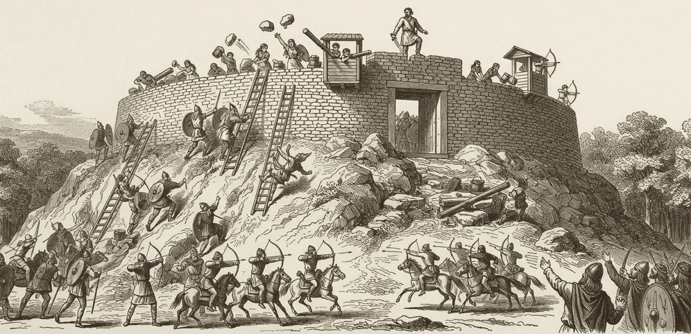
Asta
En julio, el hambre cambió de lado.
Nadie lo esperaba. Todos pensaban que el hambre estaría dentro de las murallas, con los refugiados y los soldados y los obispos, y que fuera, en el campamento, habría trigo y carne y vino de las villas de la llanura. Y así fue en mayo, y en junio. Pero ochenta mil personas y cien mil animales comen mucho, y la llanura de Hipona no era infinita. En julio ya no quedaba nada en diez millas a la redonda. Las villas estaban vacías, los graneros vacíos, los olivares talados para la empalizada, los rebaños comidos. Los hombres del rey tenían que ir cada vez más lejos a buscar grano, a dos días, a tres, y volvían cada vez con menos. Y por el mar seguían entrando barcos en la ciudad, de noche, con trigo de Sicilia y de Cerdeña.
El calor llegó a la vez que el hambre. Un calor que Asta no había conocido nunca, ni en la Bética, ni en la Mauritania. Un calor blanco, que no dejaba respirar, que venía del sur en un viento seco y caliente, como el aliento de un horno, y que traía polvo rojo que se metía en los ojos, en la boca, en el pan, en las heridas. Los ríos bajaron. El agua que quedaba se volvió verde y espesa. Y con el agua verde vinieron las tripas.
Asta conocía esa enfermedad. La había visto en la Bética, en verano, en los pueblos de los ríos. Primero los niños pequeños, con diarrea, vómitos, fiebre; luego los viejos. Se secaban. En dos días, en tres. Se les hundían los ojos y se les quedaba la piel como el papel, y si se la pellizcabas en el dorso de la mano, se quedaba levantada, como una tienda de campaña, sin volver a su sitio.
—Agua hervida —decía Asta, a todo el que entraba en su tienda—. Hervida siempre. Aunque no haya leña. Quemad los carros si hace falta. Y una pizca de sal y una cucharada de miel en cada jarra. Y que beban aunque lo echen. Cucharada a cucharada.
Lo había aprendido de Teodoro, en la villa. Teodoro decía que los que se morían de las tripas no se morían de las tripas: se morían de sed. Que el cuerpo se iba por abajo como se va el agua de un cántaro roto. Y que había que echarle más agua por arriba de la que se le iba por abajo. Con sal, porque el cuerpo es salado como las lágrimas.
La gente le hacía caso a medias. Hervir el agua costaba leña, y no había leña. La miel se había acabado en junio. La sal la tenía el rey.
Félix le consiguió sal. No le preguntó cómo. Llegó una noche con un saco pequeño, del tamaño de un queso, y se lo dejó en la puerta de la tienda sin decir nada. Asta lo racionó como racionaba Teudo el grano en la Peña. Una pizca por jarra. Una jarra por niño.
La mujer de Fredo cayó a mediados de julio. Era una mujer grande, fuerte, de manos rojas, que no se había puesto enferma nunca en su vida, que había parido ocho hijos y enterrado tres, que había cruzado los montes Nervasos andando al lado del carro con un niño en cada brazo. Se llamaba Ragna. Asta la había conocido en la Bética, el primer verano, cuando Fredo la había traído a que le sacara una astilla de la mano.
—No es nada —dijo Ragna, la primera mañana, cuando Asta le tocó la frente—. Es el calor. Se me pasa.
No se le pasó. Asta se quedó con ella tres días, dándole agua a cucharadas, con sal y lo último de la miel de Tingis, que había guardado para el niño. Fredo se sentaba en la puerta del carro, con sus manos de carpintero en las rodillas, y no decía nada. Al tercer día, la mujer abrió los ojos, la miró y le dijo a Asta, en vándalo, muy bajo:
—Cuida del viejo. No sabe hacer nada él solo. Ni la sopa.
Asta le prometió que sí.
Ragna no se murió. Pero tampoco se curó del todo. Se quedó flaca, gris, con una tos seca que no se le iba, y sin fuerzas para levantarse del carro. Fredo la sacaba al sol por las mañanas, en brazos, como se saca a un niño, y la volvía a meter por las tardes, cuando apretaba el calor.
—Ya no hay más que hacer —le dijo Asta a Ricila, esa noche, en la tienda—. Ya no sé qué más hacer.
Ricila no contestó. Le pasó el brazo por los hombros.
Afuera, en la oscuridad, se veían las luces de la ciudad. Menos que en mayo. Muchas menos. Y la luz de la basílica de la Paz, arriba, que seguía encendida toda la noche.
—Allí dentro se mueren igual —dijo Ricila al cabo de un rato—. Del hambre, de las tripas, del calor. Possidio me dijo que entierran a los muertos en los jardines. Que ya no caben en los cementerios.
—¿Y entonces para qué?
Ricila tardó en contestar.
—No lo sé —dijo—. Nadie lo sabe. Genserico no puede entrar. Bonifacio no puede salir. Y los dos esperan a que el otro se muera primero.
Teudo
Los caballos se los llevaron la noche de San Juan.
Teudo no escogió la noche por el santo. La escogió porque era la noche más corta del año, la de menos oscuridad, la que los suevos no esperarían. Y porque los galaicos del valle celebraban esa noche con hogueras en todos los cerros, desde siempre, desde antes de los romanos, y los suevos estaban acostumbrados a ver fuego en los montes y no le harían caso a un fuego más.
Fue sencillo. Lo más difícil de todo fue que fuera sencillo. Teudo se lo había explicado a Arsak en la muralla, con palitos en el suelo, como explicaba las cuentas del grano. Arsak había escuchado sin decir nada. Luego había quitado dos palitos y había puesto uno en otro sitio, y Teudo había visto que así era mejor.
Los cuarenta caballos de Agiulfo estaban atados en una cuerda larga, en un prado junto al río, al lado del campamento, con dos hombres de guardia. Arsak y diez muchachos galaicos bajaron por el vado de los pastores a medianoche, a pie, con cuchillos. Medamo iba delante. Medamo conocía cada piedra de aquel prado: era el prado de su aldea.
Teudo lo vio todo desde la muralla, o casi todo. Vio las hogueras de San Juan en los cerros, decenas, como estrellas caídas. Vio las del campamento de los suevos, más abajo, con hombres bebiendo alrededor. No vio a Arsak ni a los muchachos. No vio a los dos guardias caer. No vio cortar la cuerda.
Lo que vio fue a los caballos.
Salieron del prado todos a la vez, en estampida, por el lado contrario al campamento, con los muchachos galaicos montados en los primeros a pelo, gritando, agitando antorchas. Cuarenta caballos al galope en la oscuridad, por la orilla del río, como un trueno. Detrás de ellos, en el campamento, los gritos. Hombres saliendo de las tiendas medio dormidos, medio borrachos, buscando las armas. Alguien tocó un cuerno. Nadie supo hacia dónde correr.
Los caballos subieron por el valle del arroyo, hacia el monte, y desaparecieron entre los robles. Al amanecer estaban en un prado alto que solo conocían los pastores, a media jornada de allí, con Loba echada a la entrada, como si fueran sus ovejas.
No se perdió ni un muchacho. Ni uno. Medamo volvió con un corte en la mejilla, de una rama, y la cara de alguien que ha vuelto a nacer.
Agiulfo atacó el castro tres días después.
Teudo sabía que lo haría. Se lo había dicho a Reburro. «Sin caballos no puede volver a Bracara con nada. Y no puede volver a Bracara sin nada, porque el rey le preguntará por qué. Tiene que tomar el castro o tiene que irse con las manos vacías. Y Agiulfo no se va con las manos vacías.»
Vinieron por la puerta del monte. La que había dibujado Medamo en la tablilla. La que creían que estaba peor guardada. Llegaron a media mañana, con el sol detrás, para que no se les viera bien desde la muralla: trescientos hombres a pie, con escudos, en una columna apretada, subiendo por la ladera del cerro entre los peñascos, con escaleras de madera de los robles del valle. Gritando. El grito de los suevos. El mismo que Teudo había gritado en el muro de escudos de los montes Nervasos, al lado de Odo.
La puerta del monte no estaba peor guardada. Estaba guardada por mil personas.
Teudo había pasado los tres días preparándolo. Lo había preparado como preparaba Fravita las cosas en la Peña: contando. Cuántas piedras se podían subir a la muralla. Cuántos calderos de agua. Cuánta grasa. Cuántas mujeres podían tirar piedras y cuántos hombres podían sostener una lanza. Dónde se ponían los niños para pasar las piedras de mano en mano. Dónde se ponía la madre con los cubos de agua para los heridos.
Los galaicos tiraron todo. Piedras del tamaño de una cabeza, que bajaban saltando por la ladera y se llevaban por delante a dos o tres. Troncos. Agua hirviendo, que no llegaba lejos pero que hacía gritar. Y flechas: las de los cazadores de liebres, cortas, que no atravesaban un escudo pero sí una pierna, un cuello, un brazo.
Los suevos llegaron a la muralla. Pusieron las escaleras. Subieron.
Teudo estaba encima de la puerta, con la espada de Fravita en una mano y el bastón en la otra, apoyado en el parapeto. Vio la primera escalera apoyarse en la piedra, a su izquierda, a cinco pasos. Vio la primera cabeza asomar. Un muchacho suevo, joven, con un casco de cuero, con la cara que tienen todos los muchachos la primera vez. Teudo le conocía. No sabía de qué. De Bracara, quizá. Del mercado.
Reburro le dio con un hacha de leñador antes de que Teudo pudiera moverse.
Luego hubo más. Muchos más. Teudo no se acordó después de casi nada. Se acordó de que le dolía la pierna. De que el bastón se le cayó al patio y no lo volvió a encontrar hasta la noche. De que dio con la espada de Fravita a alguien en la cara, a alguien en el brazo, a alguien más. De que Brunhild estaba detrás de él, en la escalera de piedra de la muralla, pasándole piedras, con la cara negra de humo. De que Wilja, en lo alto de la torre de al lado, tiraba flechas de su arco de tejo, despacio, mirando bien antes de cada una, como le había enseñado Arsak.
Y se acordó de Hunila.
Lo vio en la tercera escalera, la del centro, la que más aguantó. Subía el último de un grupo, con el escudo en el brazo bueno y la lanza en el malo, torcido, como le había quedado del río helado. No miraba hacia arriba. Miraba hacia los lados. Hacia los suevos que caían de las escaleras, hacia los que se quedaban abajo sin subir, hacia Agiulfo, que estaba al pie de la cuesta, a caballo en el único caballo que le quedaba, gritando a sus hombres que subieran.
Hunila llegó a lo alto de la escalera. Se asomó por encima del parapeto. Vio a Teudo.
Se quedaron mirándose un momento. Uno. Dos.
Hunila no hizo nada. No levantó la lanza. No gritó. Se quedó quieto en lo alto de la escalera, con la cabeza asomada por encima de la piedra, mirando a Teudo con la cara del muchacho de trece años que lloraba en la orilla del Rin.
Luego se dejó caer hacia atrás. Despacio. Como quien se deja caer al agua.
Teudo le vio rodar por la ladera, entre las piedras, con el escudo, y quedarse quieto abajo, de espaldas, al lado de otros. No supo si estaba muerto. No supo si se había dejado caer o se había caído.
Al mediodía, los suevos bajaron. No en retirada; sin orden. Bajaron como baja el agua de una cuesta, cada uno por donde podía, dejando las escaleras apoyadas en la muralla y a sus muertos entre las piedras.
Agiulfo bajó el último, a caballo. Se volvió una vez, al pie del cerro, y miró hacia la muralla. Teudo estaba allí. Agiulfo no podía verle la cara desde tan lejos. Pero Teudo supo que le estaba mirando a él.
Por la tarde bajaron a por los muertos.
Los galaicos querían dejar a los suevos donde estaban, entre las piedras de la ladera, para los cuervos. Lo dijo uno de los jefes de aldea, el más viejo, que había perdido la casa y un nieto en las quemas. Nadie le llevó la contraria. Teudo tampoco. Bajó solo, con el bastón, despacio, por la ladera, y se puso a buscar entre los cuerpos.
Buscaba al muchacho del casco de cuero. Lo encontró boca abajo, al pie de la muralla, con la escalera rota encima. Le dio la vuelta. Tenía los ojos abiertos y la boca también, como si fuera a decir algo. Teudo se acordó de dónde le conocía. Era el hijo del hombre que vendía sal en el mercado de Bracara, junto a la puerta del puente. Un niño que corría entre los puestos con un perro. Teudo le había comprado sal a su padre, muchas veces, para la Peña. Una vez el niño le había preguntado por qué cojeaba.
Le cerró los ojos.
Cuando levantó la cabeza, Camalo estaba a su lado. Había bajado la ladera con sus dos palos, Teudo no sabía cómo. Detrás de él venía Medamo, con una pala. Y detrás de Medamo, la madre, con un cubo de agua y un paño.
—Los suevos entierran a sus muertos —dijo Camalo, en galaico, mirando al muchacho—. ¿O no?
—Los entierran.
—Pues que los entierre uno de los suyos. —Camalo señaló a Teudo con un palo—. Tú.
No fue Teudo solo. Medamo cavó. Luego bajaron otros dos muchachos de los de Arsak, sin que nadie se lo pidiera, con azadas. Luego bajó Reburro, que no dijo nada, se quitó la capa y se puso a cavar también. La madre lavó las caras de los muertos, una por una, con el paño y el agua del cubo, como se las había lavado al padre. Brunhild bajó con una sábana vieja y la rompió en tiras para atarles las manos.
Hicieron una zanja larga al pie del cerro, en la tierra blanda del prado, junto al robledal. Metieron a los cuarenta y dos. Teudo no sabía las palabras de los curas. Dijo las que se acordaba, las que decía el obispo de Bracara en los entierros, en latín, sin entenderlas. Y luego dijo en suevo los nombres que sabía. Eran cuatro. El hijo del de la sal. Un hombre de Lucus al que había visto en el palacio. Dos hermanos de un valle del norte que habían ido a la Peña una vez con un tributo de pieles.
Los otros treinta y ocho no tenían nombre.
Cuando terminaron, se había hecho de noche. Arriba, en el castro, empezaban a encender los fuegos.
Teudo se quedó un rato al lado de la zanja, apoyado en el bastón, mirando la tierra removida. Pensó en el cuenco de castaño boca abajo encima de la tumba de su padre. Pensó que nadie iba a poner nada encima de esta.
La madre le cogió del brazo.
—Vamos —dijo—. Que se enfría la cena.
Arsak
Arsak no estuvo en la muralla. Estuvo detrás de ellos.
Era lo que había quitado y puesto con los palitos en el suelo, la tarde que Teudo le explicó el plan. «Si suben por la puerta del monte —le había dicho—, suben por la ladera. Y una ladera tiene un abajo. Y en el abajo se quedan los que no suben: el jefe, los de reserva, los heridos. Dame a los muchachos. Y los caballos de monte.»
Teudo le había dado a los muchachos.
Esperaron en el robledal, al pie del cerro, desde antes del amanecer. Treinta muchachos galaicos a caballo, con los arcos de liebres y lanzas cortas, en silencio, con los caballos de monte que no relinchaban porque estaban acostumbrados a esconderse de los lobos. Arsak, delante, en Viento. Estrella con Medamo. Loba echada a sus pies, quieta, con las orejas de punta.
Vieron subir a los suevos por la ladera. Vieron llegar a la muralla. Oyeron los gritos, los golpes, las piedras rodando. Los muchachos temblaban. Arsak les oía temblar. Medamo, a su lado, tenía la cara blanca.
Arsak esperó. Esperó como esperaba Addax en la llanura, como le había enseñado su padre, como había esperado él en el bosque del Rin la noche que salvó a un vándalo cojo. Esperó a que todos los que tenían que subir estuvieran subiendo. A que los de abajo estuvieran mirando hacia arriba. A que nadie mirara hacia el robledal.
Entonces levantó la mano.
Salieron del bosque todos a la vez, en línea abierta, como cargan los alanos, gritando. No el grito de los suevos. El grito de los alanos, que Arsak les había enseñado aquel invierno en el prado de detrás del castro, y que los muchachos galaicos gritaban mal, con acento, pero fuerte. Treinta caballos pequeños de monte al galope por el prado, contra el pie de la ladera, contra la reserva de Agiulfo, que eran cincuenta hombres a pie mirando hacia arriba con la boca abierta.
No llegaron a chocar. Eso también lo había enseñado Arsak. A cuarenta pasos, los muchachos tiraron sus flechas cortas y dieron la vuelta cerrada al galope, todos a la vez, como una bandada de estorninos, y se fueron. Y volvieron. Y tiraron otra vez. Y se fueron.
Los suevos de abajo no sabían qué hacer. Era como pelear contra moscas. Levantaban los escudos y las flechas venían por el otro lado. Se volvían y los caballos ya no estaban. Formaban fila y los caballos pasaban por el lado de la fila. Algunos echaron a correr ladera arriba, hacia los suyos, y los de la ladera, al verlos venir corriendo, pensaron que venía un ejército detrás.
Así fue como bajaron sin orden. Arsak lo vio desde Viento: vio la columna de la ladera deshacerse como se deshace un nudo cuando se tira del cabo bueno. Los de arriba bajaban porque los de abajo subían. Los de abajo subían porque los de arriba bajaban.
Arsak buscó a Agiulfo.
Le vio al pie de la cuesta, en su único caballo, solo, gritando. A cien pasos. Arsak sacó una flecha del carcaj. Una de las suyas, de las buenas, de las largas, con punta de hierro, de las que guardaba. Se puso de pie en los estribos. Tensó el arco de olmo.
A cien pasos, con aquel viento, Arsak no fallaba.
Agiulfo se volvió. Le vio. Se quedó quieto en el caballo, con el brazo malo colgando, mirándole.
Arsak no soltó la flecha.
No supo por qué. Lo pensó muchas veces después, por las noches, junto al fuego, y no supo nunca contestarse del todo. Quizá porque se acordó de Fravita, en la Peña, diciéndole a Teudo que no se peleara con él. Quizá porque se acordó de que Agiulfo muerto sería un mártir, y que el rey de Bracara mandaría a mil a vengarle. Quizá porque estaba cansado, viejo, con el pelo blanco, y había matado a demasiados.
O quizá porque vio, a la espalda de Agiulfo, en la ladera, a un hombre de espaldas entre las piedras que se movía. Que se levantaba despacio. Que se quedaba sentado, con el escudo en el brazo bueno, mirando hacia el castro. Hunila. Vivo.
Arsak bajó el arco.
Agiulfo dio la vuelta al caballo y se fue al galope, hacia el río, sin volverse.
Esa noche, en el castro, hubo fuego. Todos los fuegos a la vez, en todas las calles, y cerveza de los galaicos, y carne de las vacas que habían subido de las aldeas, asada entera. Los galaicos cantaban canciones que Arsak no entendía, en su lengua, y bailaban dando saltos alrededor de las hogueras, y los viejos de barba blanca lloraban. Habían muerto once galaicos. De los suevos, cuarenta y dos. Los demás se habían ido por el vado de arriba al atardecer, hacia el norte, a pie, sin caballos, cargando a sus heridos.
Reburro se sentó al lado de Arsak, junto al fuego, con una jarra de cerveza en cada mano. Le dio una.
—Los muchachos dicen que le tenías —dijo, en galaico, despacio, para que Arsak le entendiera—. Al manco. Que le tenías en la punta de la flecha.
Arsak bebió. No contestó.
Reburro se quedó un rato callado. Luego escupió en el fuego.
—Mi padre decía que al lobo viejo hay que dejarle vivo —dijo—. Porque el lobo viejo conoce el monte y no se acerca a las ovejas. Que si lo matas, viene uno joven que no sabe nada y se las come todas.
Arsak le miró. Luego miró al otro lado del fuego, donde Teudo estaba sentado en el suelo, con la pierna estirada y el bastón recuperado sobre las rodillas, con Brunhild a un lado y Wilja al otro, dormido contra su hombro con el arco todavía en la mano.
—Tu padre era listo —dijo Arsak.
—Mi padre era un viejo que hablaba mucho. —Reburro se levantó—. Como yo.
Se fue a bailar.
El obispo
Hipona y el valle del Duero – agosto de 430
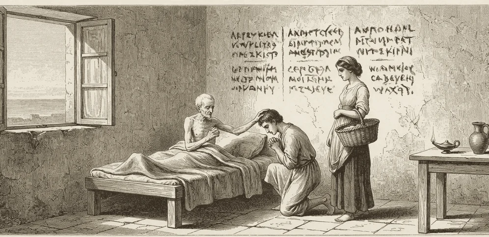
Asta
La tregua fue por los muertos.
En la primera semana de agosto, los de dentro sacaron una bandera blanca por encima de la puerta del mar y mandaron a un cura a decir que querían enterrar a los suyos que se habían quedado fuera, en las acequias, en los olivares, en la zanja, desde la salida de mayo y desde las otras que habían venido después. Y que tenían en la ciudad a once vándalos y alanos heridos, cogidos en esas salidas, que se les morían porque no había quién los curase. Que los cambiaban por los suyos que tuviera el rey. Vivos o muertos.
Genserico dijo que sí. Ricila dijo que el rey decía que sí a todo lo que no le costaba nada.
El rey mandó a un noble viejo, un primo suyo, que hablaba latín como habla un perro, y a Ricila con él para que dijera bien lo que el viejo decía mal. Y Ricila pidió que fuera Asta.
—Para los heridos —le dijo al primo del rey—. Once heridos, después de un mes en una ciudad con hambre. Habrá que ver si se pueden mover. Y cómo.
El primo del rey se encogió de hombros. Le daba igual.
Entraron un martes por la mañana, por la puerta del mar, con veinte hombres sin armas que llevaban en angarillas a los romanos muertos que se habían ido encontrando por la llanura, envueltos en lienzos. Olía. Asta se había puesto un paño mojado en vinagre en la cara. Ricila también. El primo del rey no, y vomitó dos veces antes de llegar a la puerta.
La puerta se abrió. Era de madera de cedro, gruesa como un brazo, con clavos de bronce. Detrás había un túnel de piedra largo, oscuro, y luego otra puerta, y luego la luz.
Y luego la ciudad.
Asta no estaba preparada para lo que vio. Nadie lo estaba. Ni siquiera Ricila, que había leído sobre las ciudades sitiadas en los libros de Materno, en los de los griegos, en el de Josefo sobre Jerusalén.
Había gente por todas partes. Sentada en el suelo de las calles, contra las paredes, en los pórticos, en las escaleras de los templos viejos. Familias enteras, con un cacharro de barro y una manta y nada más. Niños desnudos, flacos, con la tripa hinchada y las piernas como palos, que miraban pasar a los vándalos sin moverse, sin llorar, con unos ojos que eran solo ojos. Viejos tumbados que no se sabía si dormían. Un olor que Asta conocía del río helado, de los montes Nervasos, de las calles de Emerita en el invierno del hambre: el olor de la gente que se está muriendo despacio.
Y en medio de todo eso, la ciudad. Hermosa. Las calles empedradas, rectas, con aceras. Las fuentes, secas, con caras de piedra que echaban agua por la boca cuando había agua. Los pórticos con columnas pintadas de rojo y de azul. Las casas grandes de los ricos, con puertas de bronce cerradas a cal y canto. Un mercado sin nada que vender. Una estatua de un emperador con la nariz rota, en lo alto de una columna, mirando el mar.
Los soldados de Bonifacio les esperaban en la plaza del foro. Eran godos, la mayoría: altos, rubios, con las mismas caras que los suevos de Bracara. Uno de ellos le dijo algo a Ricila en una lengua que Asta casi entendió.
Allí estaban los once heridos. En el suelo, en el pórtico de una basílica vieja, en jergones de paja. Asta se arrodilló junto al primero sin esperar a que nadie le diera permiso. Un alano, joven, con una pierna cortada por debajo de la rodilla. La herida estaba limpia. Bien cosida. Con miel.
—¿Quién le ha cosido esto? —preguntó en latín, sin levantar la cabeza.
—Yo.
Asta levantó la cabeza. Era una mujer de su edad, más o menos, delgada, con un velo de lana parda en la cabeza, con las manos rojas y las uñas rotas. Una monja. Detrás de ella había otras tres, con velos iguales, y un viejo con túnica de cura, calvo, con una barba blanca muy corta.
—Lo ha hecho bien —dijo Asta.
—Lo sé —dijo la monja. Y casi sonrió.
Asta revisó a los once. Ricila hablaba con los godos, con el cura viejo, con el primo del rey. Ocho se podían llevar. Tres no. Uno tenía fiebre de una herida en el vientre, y Asta supo, al tocarle, que se iba a morir esa noche o la siguiente. Otros dos no podían moverse sin que se les abrieran los puntos.
—Que se queden —dijo Asta—. Que los cuide ella. —Señaló a la monja—. Mejor que lo haría yo en el campamento.
El cura viejo la miró mucho rato. Luego se volvió hacia Ricila y le preguntó algo, en voz baja. Ricila le contestó. El cura viejo asintió despacio, se volvió hacia Asta y le dijo, en un latín limpio, de libro, que Asta entendió entero:
—Me dice tu marido que tú curaste a un muchacho nuestro en mayo. A Possidio, el hijo del curtidor.
—Sí.
—Me llamo como él —dijo el cura viejo—. Possidio. Soy el obispo de Calama, aunque Calama está ahora en vuestras manos. —Se quedó callado un momento—. El muchacho ha hablado de ti. Y del vándalo del sombrero de paja que le hacía preguntas. Y de que no os coméis a los niños.
Ricila se rio. El obispo no.
—Quiero pediros una cosa —dijo—. A los dos. No como obispo. Como amigo de un viejo.
Los llevó por calles que subían. El primo del rey se quedó en el foro con los godos, contando a los heridos, y no los echó de menos. Subieron por una calle empinada, luego por otra, entre casas cada vez más viejas, hacia lo alto de la colina, hacia el tejado rojo que se veía desde el collado. La basílica de la Paz. Grande, sí, pero no tanto como parecía desde lejos. Con las puertas abiertas. Dentro había gente durmiendo en el suelo, por todas partes, entre las columnas. Refugiados.
El obispo no entró en la basílica. Siguió por un lado, por un pasillo, hasta una casa pegada a ella. Una casa sencilla, de dos pisos, con un patio pequeño y un pozo y una higuera. En el patio había curas. Diez, doce. Sentados en el suelo, en silencio, con la cabeza baja. Algunos lloraban sin ruido.
—Lleva diez días con fiebre —dijo el obispo de Calama, en voz baja, en la puerta—. No quiere ver a nadie. Nos ha pedido que no entremos más que a la hora de comer y cuando venga el médico. Quiere estar solo para rezar. —Se quedó callado—. Le he dicho que había venido un vándalo que lee a Virgilio y que ha preguntado por sus libros desde que puso el pie en África. Y me ha dicho que le dejase entrar.
Ricila no dijo nada. Asta le miró. Estaba blanco. Más que cuando Fravita le dio la llave de la Peña.
—Tú también —le dijo el obispo a Asta—. Me ha dicho que la mujer también, si quiere. Que le gustan los médicos que no se dan importancia.
La habitación estaba en el piso de arriba. Era pequeña, casi vacía. Una cama baja, de madera. Una mesa con una lámpara de aceite y una jarra de agua. Una ventana abierta, con la luz de la tarde entrando de lado, que daba al mar. Y en la pared de enfrente de la cama, escrito en letras grandes, en carbón, en cuatro columnas, de arriba abajo, un texto largo que Asta no supo leer.
—Los salmos de la penitencia —le dijo Ricila al oído, muy bajo—. Los ha mandado escribir en la pared para leerlos desde la cama.
En la cama había un viejo.
Era muy pequeño. Eso fue lo primero que pensó Asta: que era muy pequeño, como si la fiebre le hubiera ido encogiendo. Flaco, con la piel amarilla pegada a los huesos de la cara, con el pelo blanco cortado muy corto, con una barba blanca de pocos días. Los ojos, oscuros, muy hundidos. Tenía las manos encima de la manta, juntas. Respiraba deprisa.
Les miró entrar. No sonrió. Pero los ojos se le movieron, despacio, de Ricila a Asta, y de Asta a Ricila, y se quedaron en Ricila.
—El vándalo que lee —dijo, en latín. Tenía la voz muy baja, ronca, y Asta tuvo que acercarse para oírle—. Possidio me ha dicho que has preguntado por mis libros.
Ricila se arrodilló junto a la cama. Asta no le había visto nunca arrodillarse delante de nadie. Ni del rey.
—Los he buscado desde Tingis —dijo—. No he encontrado ninguno. Solo lo que me contaban. Que escribiste uno sobre tu madre. Y sobre unas peras.
El viejo cerró los ojos. Asta pensó un momento que se había dormido. Luego vio que le temblaba la boca. Se estaba riendo, sin ruido.
—Las peras —dijo—. Setenta años y todavía me las recuerdan.
Abrió los ojos.
—¿Por qué los buscabas?
Ricila tardó en contestar. Asta vio que no sabía qué decir, que tenía la respuesta dentro y no le salía, como le pasaba de niño con el latín de Materno.
—Porque yo he robado peras —dijo al fin—. Todos. Y quería saber qué se hace luego.
El viejo le miró mucho rato. Luego levantó una mano, despacio, como si pesara mucho, y la puso encima de la cabeza de Ricila. La dejó allí un momento. Luego la volvió a bajar a la manta.
—Se escribe —dijo—. Se escribe para saber lo que se ha hecho. Y luego se le da a Dios lo escrito, para que haga con ello lo que quiera. —Respiró hondo, con esfuerzo—. Possidio dice que escribes. Una crónica. De vuestra llegada.
—Sí.
—Escríbela entera —dijo el viejo—. Lo que hacéis y lo que os hacen. No escribas solo lo que te conviene. Eso lo hacen los paganos. —Cerró los ojos otra vez—. Los libros están abajo. En la biblioteca de la iglesia. Todos. Possidio tiene la lista. Si la ciudad cae... —Se calló. Volvió a empezar—. Cuando la ciudad caiga, que no los quemen. Es lo único que te pido. No por mí. Por los que vengan.
—No los quemarán —dijo Ricila.
Asta no supo cómo podía prometer aquello. Ricila no era el rey. Ricila era un hombre con un sombrero de paja. Pero lo dijo como decía Teudo las cosas que pensaba cumplir: sin levantar la voz.
El viejo no contestó. Respiraba deprisa, con la boca entreabierta. Asta le miró las manos, las uñas moradas, el cuello. Le tocó la muñeca, sin pedir permiso, como tocaba a todos. El pulso se le iba y le volvía, como un pájaro que se para en una rama y se vuelve a ir.
El viejo abrió los ojos y la miró.
—¿Cuánto? —preguntó.
Asta no mintió. No le había mentido nunca a ningún enfermo que se lo preguntara así, de frente. Teodoro decía que eso era lo único que no se le podía quitar a un enfermo: la verdad, si la pedía.
—Poco —dijo—. Días.
El viejo asintió. Pareció casi aliviado.
—Gracias —dijo. Y luego, mirando a la pared, a las letras de carbón—: Tengo muchas cosas que leer todavía.
Salieron. En la escalera, Ricila se paró y se apoyó en la pared y se quedó así un rato largo, con la cara contra la piedra fría, sin decir nada. Asta le puso la mano en la espalda.
Abajo, en el patio, el obispo de Calama les esperaba junto al pozo. Les llevó a una sala al lado de la iglesia, en el piso bajo, con una puerta de hierro que abrió con una llave grande. Era la biblioteca.
Asta no había visto nunca tantos libros juntos. Nadie, quizá, en todo el campamento vándalo. Estanterías de madera de suelo a techo, en las cuatro paredes, llenas de rollos y de códices. Cientos. Miles. Algunos en cajas de cuero, con etiquetas colgando. Olía a polvo y a cuero y a cera, como el arcón de Materno pero mil veces más fuerte.
Ricila se quedó en la puerta. No entró.
—Tráeme la lista —le dijo al obispo, en voz baja—. Y dime cuál es la caja de las peras.
Teudo
Los suevos volvieron en agosto, pero esta vez no venían a pelear. Venían a hablar.
Eran seis. A caballo, con una rama de olivo atada en la punta de una lanza, como hacían los romanos. Subieron por el camino del cerro despacio, al paso, y se pararon al pie de la puerta grande, la del río, y esperaron.
El que iba delante no era Agiulfo. Era un hombre mayor, de barba gris, con un manto azul de buena lana y una fíbula de oro. Teudo le conocía. Era Gesimundo, el que guardaba el tesoro del rey en Bracara. Un hombre que sabía contar casi tan bien como él.
Reburro le dejó entrar con dos hombres. Los otros se quedaron fuera.
Hablaron en la casa de Reburro, al fuego, con los doce jefes de aldea sentados alrededor, en silencio, mirando. Gesimundo hablaba suevo. Teudo traducía al galaico. Despacio, palabra por palabra, como le había enseñado Camalo trenzando mimbre.
El rey Hermerico estaba enfadado. Eso fue lo primero que dijo Gesimundo. Enfadado con Agiulfo, que había vuelto a Bracara a pie, sin caballos y sin tributo, con cuarenta y dos hombres menos y la cara roja de vergüenza. Y enfadado con los galaicos, que no habían pagado. Pero sobre todo enfadado porque le salía caro. Cuarenta y dos hombres eran cuarenta y dos familias que pedían pan. Y los vándalos se habían ido a África y el rey necesitaba las tierras de los galaicos en paz para el que viniera de Roma a pedirle cuentas.
—El rey quiere paz —dijo Gesimundo—. Con los castros del Duero. Una paz de verdad.
Reburro escupió en el fuego.
—La paz de los que llegaron ayer —dijo—. ¿Cuánto cuesta?
Gesimundo sonrió, como sonríen los que cuentan dinero.
—Menos que la guerra.
Lo que pedía el rey era sencillo. Los galaicos devolvían a los suevos que tenían presos, vivos: eran nueve, heridos, que se habían quedado en la ladera y que la madre había curado en el castro. El rey devolvía a los galaicos que tenía Agiulfo en la Peña, cogidos en las quemas: eran catorce, mujeres y niños la mayoría. El tributo de los castros se fijaba otra vez como lo había fijado Fravita: ni una medida más. Y para que la paz durase, cada parte daba rehenes.
—¿Rehenes? —preguntó Reburro.
—Muchachos —dijo Gesimundo—. Cuatro de cada parte. Hijos de jefes. Los vuestros viven en Bracara, en el palacio, un año, comen en la mesa del rey y aprenden suevo. Los nuestros viven aquí, en el castro, un año, comen en tu mesa y aprenden galaico. Así nadie ataca a nadie, porque cada uno tiene a los hijos del otro.
Hubo un silencio largo. Los doce viejos se miraban.
Teudo tradujo. Luego se quedó callado. Gesimundo le miró a él, no a Reburro.
—Y el rey pide una cosa más —dijo, en suevo, más bajo—. Que no quiero decir delante de los galaicos. Pero tengo que decirla. —Le miró de frente—. Pide al cojo. Y al alano. Dice que el precio de Agiulfo no es suyo y que no lo paga. Pero que un suevo que vive en un castro galaico y le enseña a los galaicos a pelear contra los suevos es un mal ejemplo. Y un alano que roba cuarenta caballos al rey, otro peor.
Teudo no dijo nada. Notó a Reburro mirándole. Notó los ojos de los doce viejos encima, aunque no entendían el suevo. Entendían la cara.
—¿Qué dice? —preguntó Reburro.
Teudo tardó en contestar.
Pensó en decir la verdad. Pensó en mentir. Pensó en la madre, en la puerta de la casa de la piel de cabra, diciendo que no se iba a ir de otra casa. Pensó en el muchacho de la sal, en la zanja.
—Pide al cojo y al alano —dijo, en galaico—. A cambio de la paz.
Nadie se movió. El fuego crujió.
Reburro se levantó. Despacio. Era un hombre grande, más que Gesimundo, más que Teudo. Se quedó de pie delante del suevo, mirándole desde arriba.
—Dile —le dijo a Teudo, sin dejar de mirar a Gesimundo— que en este castro nadie es de nadie. Que el cojo y el alano subieron aquí como subieron mil personas de las aldeas: porque abajo los quemaban. Que si el rey quiere al cojo, que suba a por él. Como subió el manco.
Teudo tradujo.
Gesimundo se quedó un rato quieto. Luego asintió, despacio, como quien apunta una cifra en una tablilla.
—Eso le diré al rey —dijo—. Y el rey dirá que sí. Porque no le conviene subir. —Se levantó—. Pero que el cojo no baje al valle. Ni a Bracara. Ni a ningún sitio donde no haya un castro alrededor. Porque el precio de Agiulfo sigue en pie. Y Agiulfo no ha vuelto a Bracara más listo. Ha vuelto con más rabia.
Lo dijo en suevo. A Teudo. Teudo no lo tradujo.
Arsak
Los rehenes se cambiaron en el vado de las truchas, el diez de agosto, a mediodía, con cincuenta hombres de cada lado en cada orilla y nadie con el arco tenso.
Arsak estaba en la orilla de los galaicos, en Viento, con Loba a sus pies. Vio llegar a los suevos por la otra orilla, por el camino de la casa de labor. Vio a los cuatro muchachos suevos que traían, de doce a quince años, con capas nuevas y caras de susto, montados en mulas. Vio a los catorce galaicos de la Peña, a pie, atados unos a otros por la cintura con una cuerda, flacos, sucios, con los ojos fijos en la orilla de enfrente, en el castro, en sus casas.
Y vio a Hunila.
Venía a pie, delante de los presos, con una lanza, como guardia. Cojeaba un poco, del costado, de la caída por la ladera. Tenía un moratón en la cara, amarillo ya, de los que tardan semanas en irse.
Los cuatro rehenes galaicos cruzaron primero, a caballo, por el vado. Uno de ellos era Medamo.
Lo había decidido él. Nadie se lo había pedido. Reburro había dicho que los rehenes tenían que ser hijos de jefes, y Medamo no era hijo de nadie, era el sobrino de un cestero. Pero Medamo se había presentado en la casa de Reburro la noche antes y había dicho que su padre había sido jefe de su aldea antes de que la quemaran, y que ya no había aldea pero que él seguía siendo su hijo. Y que sabía suevo, un poco, de oírlo en el mercado. Y que en Bracara alguien tendría que contar a los del castro lo que pasaba en el palacio.
—Y yo te traje atado —le había dicho Arsak, en la puerta, esa noche, en el poco galaico que sabía.
Medamo le había mirado. Tenía el corte de la rama en la mejilla, ya cerrado, rosa.
—Por eso —había dicho.
Cruzó el vado delante de los otros tres, en su caballo de monte, con la espalda derecha, sin mirar atrás. A mitad del río, el caballo resbaló en una piedra y Medamo se agarró a las crines, y Arsak vio que se volvía, por un momento, hacia la orilla, hacia él.
Arsak levantó la mano.
Medamo se enderezó en el caballo. Llegó a la otra orilla. Se bajó, se puso al lado de los suevos y se quedó allí, quieto, mirando el agua.
Luego cruzaron los presos galaicos de la Peña. Al llegar a la orilla, les cortaron la cuerda. Una mujer se tiró al suelo y besó las piedras. Un niño echó a correr hacia el castro, solo, gritando un nombre, y nadie le paró.
Y luego cruzaron, del otro lado, los nueve suevos heridos que había curado la madre, en tres carros, y los cuatro muchachos rehenes suevos, en sus mulas. Pasaron al lado de Arsak sin mirarle, con la cabeza baja.
Hunila no cruzó. Se quedó en la otra orilla, con la lanza. Esperó a que todos hubieran pasado. Luego miró a Arsak por encima del río. El agua bajaba baja, de agosto, clara, haciendo ruido entre las piedras.
Hunila se tocó la frente con dos dedos, como saludaban los de la Peña a Fravita. Y luego levantó tres dedos de la mano buena, y los bajó, y los volvió a levantar.
Arsak no entendió. Lo pensó todo el camino de vuelta al castro, en Viento, con Loba trotando al lado. Tres dedos.
Se lo contó a Teudo esa noche, junto al fuego.
Teudo se quedó un rato callado, mirando el fuego.
—Tres dedos, dos veces —dijo al fin—. Así se pasaban las guardias en la torre de la Peña, en tiempos de Fravita. Para no gritar de noche. Tres dedos, la tercera guardia. Dos veces, en el vado.
—¿Qué vado?
—El de las truchas. El de siempre. —Teudo se tocó la cinta roja de la muñeca, sin darse cuenta—. Va a venir. Una noche de estas, a la tercera guardia. Tiene algo que contar.
—¿Y si es una trampa?
Teudo lo pensó.
—Hunila se dejó caer de la escalera —dijo—. Las trampas no se dejan caer.
Las campanas
Hipona y el valle del Duero – finales del verano y otoño de 430
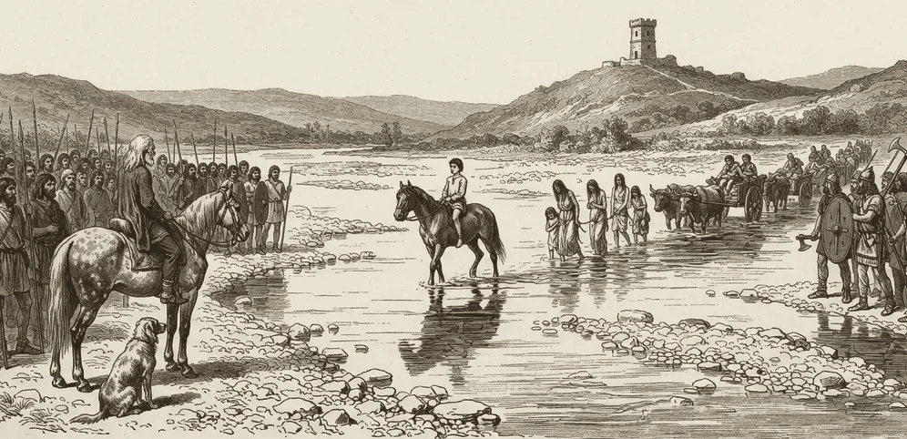
Asta
Las campanas no sonaron, porque en Hipona no había campanas. Lo que sonó fue la gente.
Asta lo oyó desde la tienda, el día veintiocho de agosto, a media tarde, cuando el calor empezaba a aflojar. Primero no supo qué era. Un ruido bajo, largo, que venía de la ciudad, por encima de las murallas, como el ruido del mar cuando hay tormenta lejos. Subía y bajaba. No paraba.
Salió de la tienda. Otros salían también, vándalos, alanos, mujeres con niños, y se quedaban mirando la ciudad, sin entender. Félix llegó a caballo, deprisa, y se paró delante de ella.
—Están llorando —dijo—. Todos. En las murallas, en las calles. Los centinelas de la puerta del mar dicen que se ha muerto el obispo.
Asta no dijo nada.
Ricila no estaba. Estaba en la tienda del rey, traduciendo unas cartas que habían llegado de Cartago. Asta fue a buscarle. Le encontró a la puerta de la tienda del rey, de pie, con una tablilla en la mano, mirando hacia la ciudad. Ya lo sabía. Lo había oído como ella.
No lloró. Asta le cogió de la mano y él se la apretó tan fuerte que le hizo daño, y se quedó así, sin moverse, mirando el tejado rojo de la basílica de la Paz en lo alto, hasta que se hizo de noche.
Esa noche la luz de arriba no se encendió.
Al día siguiente, el rey mandó decir a los de dentro que podían enterrarle en paz. Que en tres días no habría flechas ni salidas por ninguna de las dos partes. Ricila fue a decírselo al obispo de Calama, a la puerta del mar, con el primo viejo del rey. Volvió a mediodía con una cara que Asta no le había visto nunca.
—Lo han enterrado en la basílica —dijo—. Esta mañana. Sin testamento. Dice Possidio que no hizo testamento porque no tenía nada que dejar. Que era pobre. —Se sentó en el suelo, a la puerta de la tienda—. Solo los libros. Y los libros eran de la iglesia.
—¿Le has preguntado por ellos?
—Me ha dado esto.
Sacó de debajo de la túnica un rollo pequeño. Muy pequeño, del largo de una mano. Atado con un cordón de lana. Lo desató y se lo enseñó. Era una lista. Una columna larga de nombres, en latín, con una letra muy pequeña, apretada, de alguien que no quiere gastar papiro.
—La lista de sus libros —dijo Ricila—. La que hizo Possidio. Todos los que escribió. Doscientos y pico. Me ha hecho una copia. Dice que si la ciudad cae, quiere que haya una lista también fuera. Por si dentro la queman.
Asta miró la lista. No sabía leerla entera. Las letras eran demasiado pequeñas. Pero vio, al final, una línea suelta, escrita con otra letra, más torcida, que no era parte de la lista.
—¿Y eso?
Ricila tardó en contestar.
—Es de Possidio. Dice: «Para el que lee, de parte del que leía».
Ese día, Ragna empezó a morirse.
No fue de golpe. Asta lo vio llegar por la mañana, cuando fue al carro de Fredo con el agua y la sal, como cada día desde julio. Ragna estaba tumbada en el carro, de lado, con la cara contra la madera, respirando corto. La tos se le había vuelto húmeda. Le salía sangre, poca, en el paño.
—Se va —dijo Fredo, sin levantar la cabeza. Estaba sentado en la trasera del carro, con las manos en las rodillas—. Lo sé. No hace falta que me digas nada.
Asta no le dijo nada. Se sentó a su lado.
Ragna duró tres días. Los tres que duró la tregua. Asta se quedó con ella casi todo el tiempo, con Fredo, con los hijos de Fredo, que eran cinco y que venían y se iban, mayores, con sus propios niños. Le daba agua a cucharadas. Le mojaba los labios. Le cambiaba la ropa. Le cantó, una noche, sin saber por qué, la canción que le cantaba su madre en el Óder, la de la cigüeña que vuelve cada primavera al mismo tejado. Ragna la conocía. Movió los labios con ella, sin voz.
La última mañana, Ragna abrió los ojos y miró a Fredo.
—La sopa —dijo—. Con berzas. No le eches tanta sal.
Fredo asintió.
—Y no dejes que se pierda el olivo de la niña —dijo Ragna, mirando a Asta, aunque hablaba con Fredo—. Que le hiciste la tapa.
—No se perderá —dijo Fredo.
Ragna cerró los ojos. Ya no los volvió a abrir. Se murió a mediodía, sin ruido, con la mano en la de Fredo, mientras en la ciudad, al otro lado de la llanura, todavía se oía a la gente rezar por el obispo.
La enterraron esa tarde, en un olivar talado, junto a otras tumbas, con la cabeza hacia el oeste, hacia Hispania, como pidió Fredo. Fredo no lloró. Hizo él mismo la caja, con tablas de un carro roto, esa misma mañana, sin dejar que le ayudara nadie. Cuando la bajaron, puso encima de la tapa un cuenco de madera. Uno de los que hacía él, de olivo, con el borde un poco torcido.
Asta pensó en el cuenco de castaño del padre de Teudo, en un prado al lado del Duero,. No podía saber que existía. No sabía siquiera que el padre había muerto. Pero pensó en él, en el viejo de la casa de labor, sentado en su banco, y deseó que estuviera bien.
Esa noche, cuando volvió a la tienda, Guntario estaba despierto, esperándola.
—¿Por qué se mueren los viejos? —preguntó.
Asta se sentó a su lado.
—Porque se cansan —dijo.
—¿Tú te vas a cansar?
—Algún día. Muy lejos.
El niño se quedó pensando.
—Entonces yo te haré la sopa —dijo—. Sin tanta sal.
Se durmió antes de que Asta pudiera contestarle.
En octubre volvieron las lluvias y el cerco siguió.
Nadie sabía ya por qué seguía. Los de dentro no se rendían. Los de fuera no se iban. Por el mar entraban barcos. Por tierra salían, de vez en cuando, cincuenta locos a quemar un carro. El rey mandaba partidas cada vez más lejos, a Calama, a Thagaste, a Cirta, a buscar grano, y volvían con grano y con muertos. La llanura de Hipona se había vuelto un barrizal de tiendas, de zanjas, de tumbas, de tocones de olivo.
Fredo, desde la muerte de Ragna, iba todas las tardes a la tienda de Asta con una olla.
No decía nada. Llegaba, dejaba la olla en el suelo, junto al fuego, y se sentaba en su sitio, en el tronco de la puerta, con las manos en las rodillas. En la olla había sopa. De berzas, cuando había berzas. De garbanzos, cuando no. Con poca sal. Guntario se la comía entera, a cucharadas, sentado en las rodillas del viejo, y Fredo le miraba comer sin decir nada, con una cara que Asta no le había visto nunca, ni cuando tallaba la tapa del olivo.
—No sabía hacer sopa —le dijo Asta una tarde.
—No sabía —dijo Fredo—. La he aprendido.
—¿De quién?
Fredo tardó en contestar.
—De oírla a ella cuarenta años, quejándose de que la hacía mal —dijo al fin—. Se aprende igual.
Ricila, en el fondo de la tienda, copiaba. Había empezado a copiar la lista de Possidio en el rollo de su crónica, al final, despacio, con su letra grande, nombre por nombre. Le llevaba semanas. A veces se paraba en un nombre y se quedaba mirándolo mucho rato, como si fuera una puerta.
—¿Qué miras? —le preguntó Asta una noche.
—Este —dijo Ricila, y le señaló uno con la pluma—. «De la ciudad de Dios.» El de por qué cayó Roma. —Se quedó callado—. Veintidós libros. Le costó trece años.
—¿Y por qué cayó?
Ricila dejó la pluma.
—Possidio dice que no explica por qué cayó —dijo—. Explica que da igual. Que hay dos ciudades. La que se hace con piedras, que se cae siempre, tarde o temprano. Y otra que no se ve, que no se cae. —Miró a la puerta de la tienda, hacia la oscuridad, hacia las luces de Hipona—. Que la que importa es la otra.
Asta lo pensó.
—Teodoro decía lo mismo de las villas —dijo—. Que las casas se caen y la gente se va a otra.
Ricila se rio, bajo. Le cogió la mano.
—Teodoro y Agustín —dijo—. Nunca lo habría pensado.
Teudo
Hunila vino a la tercera guardia de la cuarta noche después del canje, como había dicho con los dedos.
Teudo bajó al vado de las truchas con Arsak y con Loba, despacio, con el bastón, por la senda de los pastores. Hacía luna. El río bajaba casi seco, de agosto, con piedras blancas asomando por todas partes. Hunila estaba sentado en una de ellas, en medio del río, con los pies en el agua, sin armas. Solo.
Teudo se sentó en otra piedra, enfrente. Arsak se quedó en la orilla, con Loba.
—Fravita contaba los dedos mejor que tú —dijo Hunila, en suevo, en voz baja.
—Fravita contaba todo mejor que yo.
Se quedaron un rato callados. El agua sonaba entre las piedras.
—Te dejaste caer —dijo Teudo.
—Me resbalé.
—Mentira.
Hunila no contestó. Se miró las manos. La del brazo torcido la tenía abierta encima de la rodilla, quieta, como una cosa que no era suya.
—Me tienen en la Peña de guardia de puerta —dijo al fin—. Desde que volvimos. Agiulfo no me deja salir con los suyos. No se fía. Dice que me caí aposta, porque te vi. —Se encogió de hombros—. Tiene razón. Pero no sabe por qué.
—¿Por qué?
Hunila tardó en contestar.
—Porque los ocho que quedamos de Fravita lo hablamos la noche antes. En el campamento, junto al río. Que no subiríamos. Que nos quedaríamos abajo, o que subiríamos los últimos y nos dejaríamos caer. —Le miró—. Subí yo solo porque me tocó la escalera de en medio y no podía quedarme abajo sin que me viera. Los otros siete se quedaron en la reserva. Y cuando llegó el alano con los muchachos, echaron a correr los primeros. Para que corrieran los demás.
Teudo se quedó mucho rato callado.
—Así fue como se deshizo la ladera —dijo Arsak desde la orilla, en su suevo malo.
—Así fue —dijo Hunila.
Teudo miró el agua. Pensó en los palitos en el suelo, en la muralla. En lo que había creído que era un plan suyo y de Arsak. No había sido solo suyo.
—No he venido por eso —dijo Hunila—. He venido por otra cosa.
Se inclinó hacia delante. Bajó todavía más la voz.
—Hay un obispo nuevo en Aquae Flaviae. Un galaico. Joven, de vuestra edad. Se llama Idacio. Lleva tres años de obispo y va de castro en castro, por todo el sur del Miño, hablando con los jefes. Dice que hay que pedir ayuda a Roma. A Aecio, el general de la Galia. Que hay que mandarle una embajada para que venga y meta en cintura a los suevos. —Hunila miró hacia la Peña, oscura, en lo alto del cerro de enfrente—. Agiulfo lo sabe. Lo sabe el rey. El rey le deja hacer porque le conviene que Roma sepa que hay paz, y que la paz es suya. Pero Agiulfo no. Agiulfo dice que el obispo está soliviantando a los galaicos contra el rey. Y que un obispo muerto en un camino no lo echa de menos nadie.
—¿Va a matarle?
—Va a esperar a que baje de los castros. A que vaya por el camino de Aquae Flaviae a Bracara, que tiene que ir en otoño, a ver al rey. —Hunila se levantó de la piedra—. Y viene aquí. Al castro. Antes. Dentro de diez días, quince. Ha mandado aviso a Reburro con un pastor. Lo sé porque el pastor se lo contó a un hombre de la Peña por un cuartillo de vino.
Teudo se levantó también, apoyándose en el bastón.
—¿Por qué me lo cuentas?
Hunila se quedó mirándole un momento. Con la luna en la cara, parecía más viejo de lo que era. Más viejo que Teudo.
—Porque mi padre era galaico —dijo—. De una aldea de abajo. ¿No lo sabías? Mi madre era sueva, de las de Fravita, y mi padre un galaico que se murió cuando yo tenía cinco años. Por eso no tengo valle. Ni casa de labor. Por eso me mandaron a la Peña de niño.
Teudo no lo sabía. No lo había sabido nunca, en trece años.
Hunila se dio la vuelta y cruzó el río, despacio, saltando de piedra en piedra, hasta la otra orilla. Allí se volvió.
—Dos —dijo. Y levantó dos dedos.
Luego se perdió entre los alisos.
Arsak
El obispo llegó a mediados de septiembre, en una mula blanca, con un cura más viejo que él y dos muchachos galaicos con lanzas, y lo primero que hizo al entrar en el castro fue pedir agua para la mula.
Arsak le vio entrar desde el prado de detrás, donde estaba con los caballos. Un hombre de treinta años, más o menos, delgado, moreno, con la cara alargada y una barba negra corta, con una túnica de lana sin teñir y una capa de viaje de piel de oveja. Nada de oro. Nada de anillos. Una cruz de madera en el pecho, colgada de un cordón. Si no se lo hubieran dicho, Arsak habría pensado que era un pastor.
Pero hablaba como hablan los que han leído mucho. Arsak lo oyó esa noche, en la casa de Reburro, cuando le llamaron. El obispo hablaba latín con el cura viejo, galaico con Reburro y con los jefes de aldea, y un poco de suevo con Teudo, mal, como un niño. Y cuando Arsak entró, le miró, se levantó y le dijo unas palabras que Arsak no esperaba oír nunca allí, en un castro galaico, en el fin del mundo.
Se las dijo en alano.
Mal, muy mal, con un acento que daba risa. Pero en alano. «Que el viento te sea de espaldas.» El saludo de la estepa.
Arsak se quedó quieto en la puerta.
—Me lo enseñó un viejo de tu pueblo —dijo el obispo, en latín, despacio, mientras el cura viejo lo traducía al suevo para que Arsak lo entendiera—. En Aquae Flaviae, cuando yo era niño. Un alano de los de Respendial que se quedó a vivir allí, viejo, que cuidaba caballos en la villa de mi padre. Me contaba historias de un río grande que se helaba en invierno. Del Tanais. —Se quedó mirándole—. Me han dicho que tú eres el alano que robó cuarenta caballos al rey de los suevos.
—Se los cogí prestados —dijo Arsak.
El obispo se rio. Una risa joven, sin ruido, con la boca cerrada.
Esa noche hablaron hasta muy tarde. Teudo, Reburro, los jefes, el obispo. Arsak entendió poco. Entendió que el obispo se llamaba Idacio y que había nacido en Lemica, una ciudad de Gallaecia. Que de niño había ido de peregrino a Jerusalén con su madre y había visto a un santo que se llamaba Jerónimo, en Belén, en una cueva, rodeado de libros. Que llevaba tres años de obispo de Aquae Flaviae, una ciudad de baños calientes en el valle de un río al norte del Duero. Que escribía. Una crónica. Desde que era niño. Lo que pasaba en el mundo, año por año: los reyes, los emperadores, los terremotos, los cometas, las guerras.
—Y los suevos —dijo Teudo.
—Y los suevos. —El obispo no sonrió—. Sobre todo los suevos. Porque nadie más lo va a escribir. Los suevos no escriben. Y los romanos de Rávena no saben dónde está Gallaecia.
Teudo pensó en Ricila, que también escribía. En la otra orilla del mar. Arsak le vio pensarlo. Se le notaba en la cara, como se le notaba todo.
Teudo le contó al obispo lo que había dicho Hunila. Lo del camino de Bracara. Lo de Agiulfo esperando.
El obispo le escuchó sin moverse. Cuando terminó, se quedó un rato callado. Luego dijo una cosa que Arsak sí entendió, porque la dijo despacio y el cura viejo la tradujo palabra por palabra.
—No voy a ir a Bracara este otoño —dijo—. Voy a ir a la Galia. A ver a Aecio. En primavera, cuando se abran los pasos. Los jefes de los castros me han pedido que vaya en su nombre. —Miró a Reburro, que asintió—. Lo he estado pensando desde junio, desde que supe lo que hicisteis aquí. Un castro de galaicos echó a trescientos suevos. Si eso se lo cuento a Aecio, quizá escuche. —Se volvió hacia Teudo—. Pero no conozco el camino. No sé luchar. Y no conozco a los suevos. Ni a los godos, que estarán por medio.
Teudo no dijo nada. Arsak le miró. Vio que se tocaba la cinta de la muñeca. Vio que miraba hacia la puerta, hacia la oscuridad, donde estaba la casa de la piel de cabra, la madre, Brunhild, Wilja.
—Lo pensaré —dijo Teudo al fin.
—Hasta la primavera —dijo el obispo.
Se quedó en el castro tres días. Dijo misa en la casa de Reburro, en latín, delante de cuatrocientos galaicos que no entendían nada y que lloraban igual. Bautizó a once niños de las aldeas quemadas en el río, en el vado de las truchas, con el agua por las rodillas, delante de la Peña, mirando hacia la torre. Le preguntó a la madre por las hierbas que usaba para las heridas y apuntó lo que le dijo en una tablilla. Le preguntó a Camalo cómo se hacía un cesto y se sentó con él una mañana entera a trenzar, mal, torcido, con las manos de un hombre que no ha cogido nunca nada más pesado que una pluma.
La última mañana, antes de irse, se acercó a Arsak en el prado de los caballos.
—¿Qué es lo que llevas en esa bolsita del cuello? —preguntó, en latín, señalando.
Arsak no le entendió. El obispo señaló otra vez. Arsak se llevó la mano a la bolsita de cuero. La abrió. Le enseñó lo que había dentro. Unos granos de tierra negra. Casi nada.
—Tierra —dijo, en suevo—. Del Tanais.
El obispo se quedó mirándola un rato largo, en la palma de la mano de Arsak. Luego se agachó, cogió un puñado de tierra del prado, de la orilla del Duero, tierra roja, húmeda, con trocitos de hierba, y se la puso a Arsak en la otra mano.
—Por si se acaba la otra —dijo.
Se subió a la mula y se fue.
Arsak se quedó mucho rato en el prado, con un puño cerrado en cada mano, mirándolos, sin saber qué hacer con ellos. Luego abrió la bolsita, despacio, y echó dentro un poco de la tierra roja. Encima de la negra. Para que estuvieran juntas.
Loba le miraba con la cabeza ladeada.
Esa noche, Brunhild bajó al prado de los caballos.
Arsak estaba cepillando a Estrella a la luz de la luna, despacio, como hacía todas las noches antes de dormir. No la oyó llegar. La oyó Loba, que levantó la cabeza y movió la cola, porque Brunhild le guardaba los huesos de la cena.
Brunhild se quedó junto a la valla, con los brazos cruzados, envuelta en un manto. No dijo nada en un rato. Arsak siguió cepillando.
—Va a ir —dijo ella al fin. En suevo. Despacio, para que la entendiera—. Con el obispo. A la Galia. Lo sé. Lo dice que lo va a pensar, pero ya lo ha pensado. Lo pensó en cuanto el obispo dijo que no conocía el camino.
Arsak dejó el cepillo.
—Teudo no puede andar —dijo.
—Teudo puede montar. Tú le enseñaste. —Brunhild le miró—. Y sabe contar. Y sabe hablar con los suevos, con los godos, con los romanos. Y sabe callarse cuando hay que callarse, que es lo que no sabe el obispo.
Arsak no contestó. Era verdad.
—No te vengo a pedir que no le dejes ir —dijo Brunhild—. No me haría caso. No le hizo caso nunca a nadie, ni a su padre. —Se le quebró un poco la voz y la recompuso—. Te vengo a pedir que vayas con él.
—Iba a ir igual.
—Ya lo sé. —Brunhild casi sonrió—. Pero quería decírtelo yo. Para que lo sepas. Que yo te lo he pedido.
Se quedaron un rato callados. Estrella resopló y metió el hocico en el pelo de Arsak, buscando el cepillo.
—Odo se fue a la guerra una mañana —dijo Brunhild— y yo no le dije nada. Estaba enfadada con él por una tontería. Por unas vacas. —Se miró las manos—. No le dije que volviera. Y no volvió.
Arsak la miró. Pensó en su madre, en la estepa, delante de la tienda, la mañana que él se fue con su padre a cruzar el río helado. No le había dicho nada tampoco. Le había dado la bolsita de tierra. Nada más.
—Se lo dirás esta vez —dijo.
—Se lo diré.
Brunhild se dio la vuelta para irse. A mitad de camino, se paró.
—Y Wilja querrá ir también —dijo—. Tiene catorce años. Su padre tenía catorce cuando cruzó el Rin.
—Wilja se queda.
—Eso díselo tú. —Brunhild se arrebujó en el manto—. A mí ya no me escucha. Solo os escucha a vosotros dos.
Se fue hacia el castro. Arsak se quedó mirándola hasta que la oscuridad se la tragó. Luego cogió el cepillo y siguió cepillando a Estrella, despacio, aunque ya estaba limpia.
El viaje a la Galia
Hipona, los Pirineos y la Galia – año 431
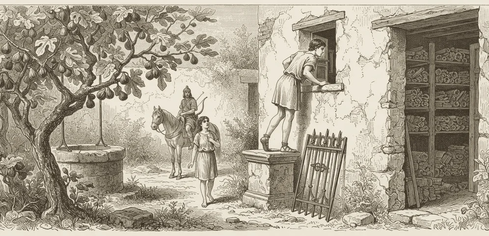
Asta
El cerco se acabó en julio, catorce meses después de empezar, y no lo ganó nadie.
Genserico levantó el campamento una mañana de mucho calor, sin avisar. Sonó el cuerno de dos notas, el de las marchas, el que no sonaba desde hacía más de un año, y la gente salió de las tiendas sin entender. Luego entendió. Se recogieron las tiendas. Se engancharon los bueyes que quedaban, que eran pocos. Se cargaron los carros. Y la columna se fue hacia el sur, hacia el interior, hacia los montes, dejando atrás la llanura de Hipona convertida en un desierto de barro seco, de tumbas, de tocones, de zanjas, de cenizas.
—No puede tomarla —le dijo Ricila a Asta, en el carro, mirando la ciudad hacerse pequeña detrás de ellos—. Y no puede seguir sentado delante. Su gente se muere más deprisa que la de dentro. Así que se va a tomar lo que no tiene murallas.
—¿Y la ciudad?
—La ciudad se queda.
Asta se volvió. Las murallas blancas brillaban al sol. En lo alto, el tejado rojo de la basílica de la Paz. Pensó en el viejo pequeño de la cama, en las letras de carbón en la pared, en la caja de las peras.
En otoño llegó la noticia. Asta la supo por Félix, que la supo por el rey, que la supo por un mercader de Cartago.
Que había venido de Constantinopla un ejército romano. Uno grande, en barcos, con un general que se llamaba Aspar, un alano, de los alanos del este, de los que no habían cruzado nunca el Rin. Que se había juntado con Bonifacio. Que venían a echar a los vándalos de África.
Y que Genserico les había esperado en una llanura, cerca de Hipona, y les había ganado.
Asta no vio la batalla. Estaba con las mujeres, con los carros, a medio día de allí, oyendo el ruido como se oye una tormenta en los montes. Vio llegar a los heridos. Muchos. Vio llegar a Félix, entero, con la cara negra de polvo y una flecha rota clavada en la silla del caballo, sin enterarse. Y vio, al atardecer, llegar al rey, a caballo, cojeando el caballo como cojeaba él, despacio, sin prisa, con una sonrisa que no le había visto nunca.
—Bonifacio se va a Italia —dijo Félix esa noche, junto al fuego—. Con lo que le queda. Por mar. Y Aspar a Cartago. A esconderse detrás de las murallas.
—¿Y Hipona?
Félix se encogió de hombros.
—Hipona está vacía —dijo—. Los que pudieron se fueron con Bonifacio en los barcos. Los demás, al monte. Dicen que no queda nadie.
Ricila se levantó del fuego.
No pidió permiso al rey. Se lo pidió a Félix, que se lo pidió al rey, que dijo que sí, porque le daba igual una ciudad vacía y porque Ricila le traducía bien las cartas. Salieron al amanecer, Ricila, Asta, Félix y diez alanos de Félix, a caballo, deprisa. Llegaron a Hipona al día siguiente a mediodía.
La puerta del mar estaba abierta. Nadie la guardaba.
Entraron despacio, al paso, por el túnel de piedra, y salieron a la ciudad. Estaba vacía. Vacía de verdad, como no había estado nunca una ciudad que Asta conociera. Las calles sin nadie. Las fuentes secas. Las puertas de las casas abiertas, algunas arrancadas. Ropa tirada en el suelo, cacharros rotos, un carro sin ruedas, una muñeca de trapo en un escalón. Perros. Muchos perros, flacos, que se apartaban a su paso sin ladrar. Y el olor. El mismo olor de agosto, más débil, mezclado con el de la ceniza.
Alguien había entrado antes que ellos. Moros de los montes, quizá. O vándalos de otra columna. Había casas quemadas en el barrio del puerto. Había estatuas en el suelo, con la cabeza rota. Había una iglesia pequeña con el tejado hundido.
Ricila no se paró en ninguna. Subió la calle empinada, y la otra, sin bajarse del caballo, deprisa, tan deprisa que Félix tuvo que gritarle que esperara. Asta iba detrás. Llegaron arriba. A la basílica de la Paz. A la casa del obispo, con su patio y su pozo y su higuera, que tenía higos maduros que nadie había cogido.
La puerta de hierro de la biblioteca estaba cerrada.
Ricila se bajó del caballo. Se quedó delante de la puerta sin moverse. Asta vio que no se atrevía a tocarla. Que tenía miedo de lo que había detrás.
Félix se bajó también. Miró la cerradura. Era grande, de hierro, de las buenas.
—Está cerrada por dentro no —dijo—. Está cerrada con llave. Alguien la cerró al irse. Y se llevó la llave.
—Possidio —dijo Ricila.
Félix sacó el hacha de la silla.
—No —dijo Ricila—. Espera.
Rodeó la casa. Asta le siguió. Por detrás, en el patio de atrás, había una ventana pequeña, alta, con una reja. La reja estaba suelta. La había soltado alguien, hacía poco, y la había vuelto a poner en su sitio, sin clavarla. Ricila la quitó con las dos manos. Se subió a un poyete. Se asomó.
Se quedó así mucho rato. Asta no le veía la cara.
—¿Ricila?
Ricila bajó del poyete. Tenía los ojos mojados. Se sentó en el suelo del patio, con la espalda contra la pared, y se rio. Se rio como se ríen los niños, sin poder parar.
—Están —dijo—. Todos. En las estanterías. No ha entrado nadie. —Se limpió la cara con la manga—. Alguien soltó la reja para entrar a ver si estaban. Y la volvió a poner. Para que no entrara nadie más.
Asta se sentó a su lado.
Esa tarde, Félix fue a ver al rey. Asta no supo lo que le dijo. Supo que volvió de noche, con un papel en la mano, con el sello del rey, de cera roja. Ricila lo leyó a la luz del fuego.
Decía que la casa del obispo de la iglesia de Hipona, con todo lo que había dentro, era del rey. Y que el rey prohibía, bajo pena de muerte, que nadie entrara en ella sin su permiso.
—¿Por qué ha hecho esto? —preguntó Asta.
—Porque Félix le ha dicho que son libros de magia —dijo Ricila, y se volvió a reír, con los ojos mojados otra vez—. Que el obispo era un mago. Que si alguien los quema, cae una maldición sobre el que los queme y sobre toda su casa. —Miró a Félix—. ¿Verdad?
Félix se encogió de hombros.
—El rey es cristiano —dijo—. Pero no tonto. Y los moros dicen que todos los libros son de magia. —Echó una rama al fuego—. Además, no es del todo mentira. Tú te has pasado la vida con ellos y mira cómo estás.
Ricila volvió a la biblioteca al día siguiente, solo, por la ventana de la reja. Asta le vio entrar desde el patio, encogido, con la lista de Possidio en la mano. No salió hasta el atardecer.
Cuando salió, traía polvo en el pelo y en la barba, y las manos negras. No traía ningún libro.
—¿No te has llevado ninguno? —le preguntó Asta.
—No son míos —dijo Ricila—. Le prometí que no los quemarían. No le prometí que me los llevaría. —Se sacudió el polvo de la túnica—. He contado. Están todos los de la lista menos once. Los habrá cogido Possidio, o los que se fueron en los barcos. Los he apuntado. —Le enseñó la lista: al lado de once nombres había una raya pequeña, de carbón—. Y he leído un rato. Sentado en el suelo.
—¿Cuál?
Ricila se sonrojó, como cuando era muchacho.
—El de las peras —dijo—. El principio. Habla con Dios todo el rato, como si estuviera ahí al lado, en la misma habitación. Dice que el corazón anda inquieto hasta que descansa en Él. —Se quedó callado—. Y luego cuenta cómo de niño le pegaba el maestro por no estudiar griego.
—Como a ti Materno.
—Materno no me pegó nunca. —Ricila se rio—. Pero me hacía copiar cien veces.
Pasaron el invierno siguiente en Numidia, en el interior, en tierras de trigo y de olivos que no habían visto nunca a un vándalo. Fue un buen invierno. El primero bueno desde la Bética. Había grano. Había aceite. Había leña. Las villas de los romanos se rendían sin pelear, una tras otra, y los dueños se iban a Cartago con lo que podían llevar o se quedaban y aprendían a decirle «señor» a un vándalo. Asta curó a la mitad de los de su columna de lo que les habían dejado catorce meses de cerco: tripas, piojos, sarna, llagas, dientes podridos. Guntario, que tenía ya seis años, aprendió a montar en un caballo de verdad, el de Félix, sentado delante de él, gritando. Zarina le enseñó a tirar piedras con honda y a no llorar cuando se caía.
Teudo
La embajada salió del castro el día de San Jorge, a finales de abril, con la nieve todavía en los montes del norte.
Eran siete. El obispo Idacio en su mula blanca. El cura viejo, que se llamaba Tirso y que no hablaba nunca más que para rezar. Dos jefes de castros del Miño, galaicos, con barba, que no habían salido de su valle en toda su vida y que miraban todo con la boca abierta. Un muchacho de Aquae Flaviae para las mulas de carga. Teudo, en Estrella. Arsak, en Viento.
Wilja no iba. Arsak se lo dijo la noche antes, en el prado de los caballos, y Wilja no le habló durante tres días. Luego, la última noche, vino a la casa de la piel de cabra, se sentó al lado de Teudo y le dio una cosa envuelta en un trapo. Era una punta de flecha. De hierro. Nueva. La había hecho él, en la fragua del castro, con el herrero galaico, a escondidas, todo el invierno.
—Para que no se te olvide que sé hacerlas —dijo.
Teudo se la guardó en la bolsa del cinturón.
La madre no dijo nada. Le preparó el hatillo como se lo había preparado la primera vez, quince años antes, en la cocina de la casa de labor: pan de centeno, queso, castañas secas, nueces, un tarro de miel. Dos túnicas. Unas medias de lana. Y unas botas nuevas, que había cambiado en el mercado de Aquae Flaviae por un manto.
—Es mucho —dijo Teudo.
—Es lo que hay que llevar —dijo la madre.
Brunhild le esperó en la puerta del castro. Delante de todos. Le cogió la cara con las dos manos y le dijo algo al oído. Teudo no se lo contó nunca a nadie. Ni a Arsak.
Fueron por el norte. Por Bracara no: por los montes, por las sendas de los pastores que conocían los jefes del Miño, rodeando las ciudades de los suevos, durmiendo en los castros galaicos que el obispo conocía uno por uno. Luego por las tierras de los astures, montes altos, verdes, con nieblas que no se levantaban en todo el día y vacas pequeñas, negras, que les miraban pasar desde los prados empinados. Luego por las de los cántabros. Luego por las de los vascones, que hablaban una lengua que no se parecía a ninguna, que no entendían ni el obispo ni los galaicos, y que les dieron de comer queso de oveja y les miraron con desconfianza todo el tiempo que estuvieron en su valle.
Y luego los Pirineos.
Teudo los había cruzado una vez, de niño, de norte a sur, en el carro de su padre, con su madre y con Odo, el invierno de 409. Se acordaba del frío. De la nieve en los ejes del carro. De un buey que se cayó por un barranco y de su padre llorando por el buey. De la cara de Odo, colorada de frío, riéndose de algo.
Ahora los cruzó a caballo, de sur a norte, en mayo, con la pierna rígida en el estribo y el bastón atado a la silla. Por el paso de Roncesvalles, por una calzada vieja de los romanos, con piedras sueltas y charcos de hielo en las curvas. Tardaron cuatro días. El cura viejo, Tirso, se cayó de la mula dos veces y no se quejó ninguna. El obispo iba a pie la mitad del camino, para que la mula descansara, y cuando llegaban a una fuente se arrodillaba y daba gracias, y luego bebía.
En lo alto del paso, en un collado lleno de flores amarillas, con la nieve todavía en las sombras, el obispo se paró y miró hacia atrás. Hacia el sur. Hacia Hispania. Se quedó mucho rato mirando.
—¿Sabes cuántos años lleva Hispania sin un soldado romano? —le preguntó a Teudo, en latín. Teudo ya le entendía casi todo.
—No.
—Veintidós —dijo el obispo—. Desde que entrasteis vosotros. Los suevos, los vándalos, los alanos. El año en que yo me fui de niño a Jerusalén.
Teudo no dijo nada.
—No te lo echo en cara —dijo el obispo—. Tú tenías diez años. —Se quedó callado—. Lo apunto. Nada más. Es lo que hago. Apuntar.
Bajaron a la Galia por el otro lado. Aecio estaba en el norte, decían. Luchando contra unos francos. O contra unos jutungos. O contra unos godos. Nadie sabía bien contra quién; nadie sabía dónde. Tuvieron que buscarle durante un mes, de ciudad en ciudad, preguntando en los obispados, en las villas, en los mercados, siguiendo su rastro como se sigue a un ciervo herido. Tolosa, donde estaban los godos y no les dejaron entrar. Burdigala. Lemovices. Avaricum.
Lo encontraron a finales de junio, al norte del Liger, en un campamento enorme junto a un río. Tiendas en filas rectas, como las de los romanos de los libros de Ricila. Soldados con cascos iguales, con escudos iguales, pintados de los mismos colores. Caballos en filas. Humo de cien hornos.
Teudo no había visto nunca un ejército romano. Solo había visto a los godos que pagaba Roma. Se quedó en la puerta del campamento, en Estrella, mirando, y se dio cuenta de que tenía miedo. Un miedo viejo, de niño, el del carro de su padre en la Galia, el de los soldados romanos que les cerraban los caminos.
—No son tantos —le dijo Arsak, a su lado, en voz baja—. Muchos son godos. Y hunos. Mira los caballos.
Teudo miró. Arsak tenía razón. Entre las filas de tiendas romanas había otras, redondas, de fieltro, como las de los alanos, con caballos pequeños y peludos atados delante. Y hombres con la cabeza alargada, rara, como un huevo, con la cara llena de cicatrices.
—Hunos —dijo Arsak, y escupió en el suelo.
Arsak
Aecio les hizo esperar tres días, y el tercer día Arsak encontró a los alanos.
No los buscaba. Estaba en el río, dando de beber a los caballos, al atardecer, cuando oyó una voz que gritaba un nombre de caballo en su lengua. En alano. El alano de la estepa, el de su padre, no el que hablaban los de Félix en Hispania, que se había ido llenando de palabras de los vándalos. Un alano viejo, de antes del Rin.
Se volvió. Eran cinco. Jinetes, a caballo, en la otra orilla del río, con arcos a la espalda y pantalones de cuero y el pelo largo atado en la nuca. Dando de beber a sus caballos, como él.
Arsak les gritó el saludo. «Que el viento te sea de espaldas.»
Se callaron todos. Le miraron. Luego, el más viejo de ellos, un hombre de su edad, con la barba gris y una oreja cortada, metió el caballo en el río y lo cruzó, despacio, con el agua por la panza, y se paró delante de Arsak, mirándole desde arriba.
—¿De qué clan? —preguntó.
—Del de Saurmag —dijo Arsak—. Hijo de Saurmag.
El viejo de la oreja cortada se quedó quieto en el caballo. No dijo nada en mucho rato. Luego se bajó. Se acercó a Arsak. Le miró la cara de cerca, como se mira un caballo antes de comprarlo. Le cogió la barbilla con la mano.
—Saurmag tenía un hijo —dijo— que saltó del caballo en el Rin para salvar a un vándalo cojo. Lo vi. Yo estaba allí. Tenía dieciocho años, como él.
Arsak no pudo contestar.
—Me llamo Beorg —dijo el viejo—. Mi padre era primo del tuyo. Cuando cruzamos el Rin, nosotros nos quedamos con Goar, al norte, y vosotros os fuisteis con Respendial al sur. —Le soltó la barbilla—. Te dimos por muerto en el Rin, hace veinticinco años. Los que nos fuimos al norte no supimos nada más de vosotros. Nadie vino nunca a decirnos que vivías.
Arsak se sentó en el suelo, en la orilla del río, sin darse cuenta de que se sentaba.
Esa noche, en las tiendas de los alanos de Goar, que servían a Aecio como servían a quien les pagara, Arsak comió carne de caballo, bebió leche de yegua agria y habló en su lengua hasta que se le cansó la boca. Le preguntaron por Respendial. Por Addax. Por la llanura de la Bética y por los godos de Walia. Les contó lo que sabía. Le preguntaron por los que se habían ido a África con el vándalo. Les contó lo que sabía. Le preguntaron por qué no se había ido él.
Arsak se quedó callado. Teudo estaba a su lado, sentado en una piel, con la pierna estirada, sin entender nada, comiendo carne de caballo con cara de no saber qué era.
—Porque le debía algo a un suevo —dijo Arsak.
Beorg miró a Teudo. Luego miró a Arsak.
—¿Al cojo?
—Al cojo.
Beorg se rio. Una risa grande, de alano, con la boca abierta, que hizo que se volvieran los de las otras tiendas.
—Tu padre era igual —dijo—. Le debía un caballo a un sármata en el año en que yo nací. Tardó veinte años en pagárselo. Y cuando se lo pagó, el sármata ya estaba muerto, así que se lo dio al hijo. —Se secó los ojos—. Los de Saurmag sois muy tontos. Y muy buenos.
Antes de que se fueran, de madrugada, Beorg le dio a Arsak una bolsita de cuero. Igual que la suya. Igual que la que le había dado su madre delante de la tienda, la mañana del río helado.
—Tierra del Tanais —dijo—. De la de mi padre. La guardaba para cuando me muriera. Pero tengo hijos. Ellos me pondrán la de aquí. —Le cerró la mano sobre la bolsita—. Tú no tienes a nadie que te la ponga.
Arsak no dijo nada. Se la colgó al cuello, al lado de la otra, la vieja, la que tenía la tierra roja del Duero encima de la negra.
Aecio les recibió el cuarto día por la mañana.
Fue rápido. Arsak no entró en la tienda: le dejaron fuera, con los caballos, con Teudo, con los jefes del Miño, con el cura viejo. Solo entró el obispo. Le vieron entrar en una tienda grande, roja, con un estandarte con un dragón de tela en la puerta, que se movía con el viento como si estuviera vivo. Le vieron salir al cabo de muy poco. Menos de lo que se tarda en decir una misa.
Se acercó a ellos despacio, con la cara seria. Se paró delante de Teudo.
—Me ha escuchado —dijo—. Hasta el final. No me ha interrumpido. Me ha preguntado cuántos suevos hay y cuántos galaicos, y cuántos castros, y quién manda en ellos. Me ha preguntado por el castro del Duero. Por los cuarenta caballos. Se ha reído. —Se quedó callado—. Y luego me ha dicho que no tiene soldados. Que los francos están en el Rin y los godos en Tolosa y los burgundios en el Ródano, y los hunos los necesita para todo eso. Que Hispania está muy lejos.
Teudo no dijo nada.
—Pero me ha dicho que mandará a alguien —dijo el obispo—. Un conde. Uno de los suyos. Para hablar con el rey de los suevos. Para que el rey de los suevos sepa que Roma sabe dónde está Gallaecia. —Miró hacia la tienda roja, hacia el dragón de tela—. No es un ejército. Es un hombre. Pero es más de lo que teníamos ayer.
Arsak miró a Teudo. Teudo miraba el dragón.
—¿Cómo se llama? —preguntó Teudo.
—Censorio —dijo el obispo—. Vendrá con nosotros, el año que viene. Cuando se abran los pasos.
—El año que viene —repitió Teudo.
—Roma es lenta —dijo el obispo—. Pero llega.
Esa noche, en la tienda que les habían dado, Teudo no durmió. Arsak le oyó dar vueltas en la manta. Al final, de madrugada, Teudo habló en la oscuridad.
—Otro año —dijo—. Otro año sin volver al castro.
—Otro año —dijo Arsak.
Se quedaron callados. Fuera, en el campamento, cantaba un gallo. Luego otro. Luego, más lejos, en las tiendas de los alanos, un caballo relinchó, y otro le contestó.
—Lo que le dijo Brunhild al oído —dijo Arsak—. En la puerta del castro. ¿Era que volvieras?
Teudo tardó mucho en contestar.
—Era que no me diera prisa —dijo al fin—. Que volviera entero. Que ella sabía esperar.
Arsak se tocó las dos bolsitas del cuello. La vieja y la nueva.
—Entonces volverás entero —dijo.
El olivo del Abuelo
Numidia, la Galia y Bracara – año 432
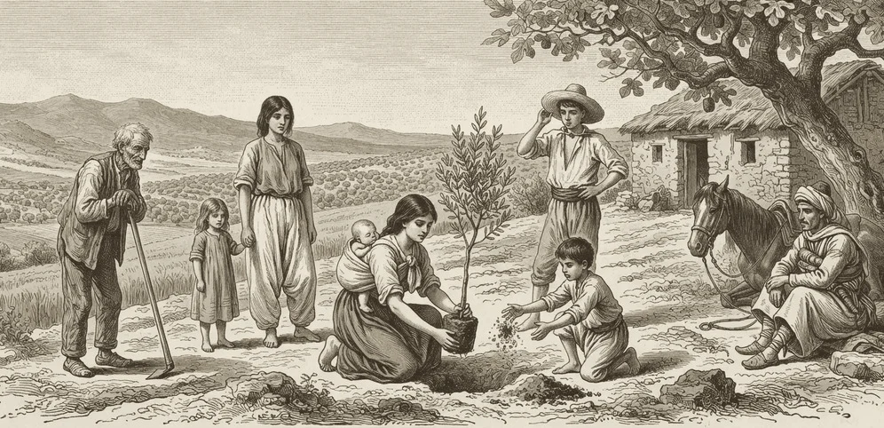
Asta
La niña nació en marzo, en una villa de Numidia, durante una tormenta, y la trajo al mundo Zarina, que no había ayudado nunca en un parto de mujer.
—En los de las yeguas sí —dijo Zarina, arremangándose, cuando Asta le dijo que estaba asustada—. Muchos. Y esto es igual. Solo que la yegua no habla tanto.
Asta se rio entre dos dolores, y luego dejó de reírse durante mucho rato.
La villa era de un romano que se había ido a Cartago al saber que venían los vándalos. Estaba en una ladera, sobre un valle de trigo, a dos días de Calama, con la casa grande de piedra con su patio, sus columnas, su baño con suelo de mosaicos de peces, y detrás, las casas de los colonos, los establos, los graneros, una prensa de aceite y un olivar viejo que bajaba hasta el arroyo. El rey se la había dado a Félix, por la batalla contra Aspar. Félix la había repartido: la casa grande para él y para Zarina, que se habían casado en febrero sin decírselo a nadie hasta después; las dos casas de colonos de la parte de arriba, las que tenían higuera, para Ricila y Asta y para Fredo.
—No es mía —dijo Asta, el primer día, en la puerta de la casa de colonos, mirándola—. Es de alguien que se ha ido a Cartago.
—Era de alguien —dijo Félix—. Como la de la Bética era de alguien. Y la de Materno. —Se encogió de hombros—. Las casas son de quien vive en ellas.
Asta no contestó. Pensó en el padre de Teudo en el banco de la casa de labor. En un primo del rey de Lucus que se sentaba ahora en ese banco. Pensó que en algún sitio de Cartago había un romano que pensaba en su higuera.
Pero se quedó. No había otro sitio.
La tormenta empezó a media tarde. Una de las de la primavera de Numidia, que vienen del mar de golpe, con un viento que dobla los olivos y una lluvia que parece de piedras. Asta tenía los dolores desde la mañana. Los había callado hasta que no pudo callarlos más. Ricila fue corriendo a la casa grande a buscar a Zarina, sin manto, y volvió empapado, con Zarina detrás y con Tecla, que tenía seis años y que se sentó en un rincón de la casa con los ojos muy abiertos y no se movió en toda la noche.
Fue largo. Más largo que el de Guntario. Asta se acordaba del de Guntario a trozos: la madre de Teudo en la cocina de la casa de labor, el agua caliente, la nieve en la ventana, el padre de Teudo paseando por el patio. Este lo recordó entero. Cada hora. Las manos de Zarina, fuertes, ásperas, en su espalda, en su vientre. La voz de Zarina hablándole en alano, sin parar, cosas que Asta no entendía y que no importaban. Ricila en la puerta, sin atreverse a entrar ni a irse. Fredo fuera, sentado en el tronco, con el agua cayéndole encima, sin moverse, como se había sentado junto al carro de Ragna.
La niña nació a medianoche. Cuando ya no quedaban fuerzas. Pequeña, roja, enfadada, con un pelo negro mojado pegado a la cabeza. Zarina la cogió, la puso boca abajo en su brazo, le dio una palmada en la espalda. La niña tosió. Y luego gritó. Más fuerte que la tormenta.
—Pulmones tiene —dijo Zarina.
Asta se echó a llorar. Eran las palabras del padre de Teudo, el día del nombre de Guntario, en el patio nevado, con el niño en alto. Zarina no podía saberlo. Nadie podía. Pero las dijo.
La llamaron Gisa. Como la madre de Asta, la que estaba enterrada en la Bética debajo del Abuelo, al lado de Guntario el vándalo.
Plantaron el olivo el día que la niña cumplió nueve noches, que era el día en que los suevos daban el nombre a los niños, y también, decía Ricila, el día en que los vándalos lo daban antes de olvidarse de hacerlo.
La rama del Abuelo había crecido. En la olla de barro, con la tapa de Fredo, había echado tres brotes y treinta y dos hojas, y una raíz que salía ya por el agujero de abajo y se enroscaba en la olla como una serpiente pequeña. Fredo la había cambiado a una olla más grande en el otoño, en la marcha, sin preguntar. Asta no se había enterado hasta que vio la olla nueva.
Escogieron el sitio entre todos. Arriba, junto a la casa de colonos, donde daba el sol de la mañana y no el de la tarde, que en Numidia quema. Ni muy cerca de la higuera, que se come el agua. Ni muy lejos de la casa, para poder regarlo. Desde allí se veía el valle de trigo y, lejos, muy lejos, en los días claros, una raya azul que podía ser el mar.
Fredo cavó el hoyo. Hondo, ancho, con su azada de carpintero, despacio, sin dejar que nadie le ayudara, con setenta años. Echó en el fondo estiércol de los establos y piedras pequeñas, para el agua, como le había dicho Asta que hacía su padre. Luego se apartó.
Asta se arrodilló junto al hoyo. Con la niña atada al pecho en un paño, dormida. Guntario a su lado, de pie, serio, con la cinta azul de Brunhild todavía en la muñeca, descolorida, demasiado pequeña ya. Ricila detrás.
Sacó la rama de la olla. Despacio. Con la tierra pegada a la raíz, para no romperla. Era tierra de muchos sitios: de la Bética, del barro del Anas, de la playa de Tingis, de la llanura de Hipona. La metió en el hoyo. La sujetó derecha con una mano. Con la otra, echó la tierra de Numidia alrededor. Roja. Seca. Con piedrecitas.
Guntario echó un puñado también. Luego Ricila. Luego Fredo. Luego Zarina, que había subido de la casa grande con Tecla y con Félix sin que nadie la llamara. Luego Tecla, con mucho cuidado, que se manchó toda.
Félix no echó tierra. Se acercó a Asta, se agachó y se sacó de la bolsa del cinturón una cosa pequeña: un clavo de hierro, viejo, negro, torcido. Era de la silla de su padre, el alano que murió en la llanura con Addax. Lo llevaba encima desde los trece años.
—Para que tenga hierro —dijo Félix—. Los olivos de los alanos tienen hierro debajo. Para que no se los lleve el viento.
Asta no sabía que los alanos tuvieran olivos. Félix tampoco, seguramente. Pero el clavo fue al hoyo, al lado de la raíz.
Asta regó la tierra con agua del pozo. Despacio. Hasta que la tierra se volvió oscura.
—¿Cuánto tardará en dar aceitunas? —preguntó Guntario.
—Siete años —dijo Asta—. Diez.
Guntario lo pensó.
—Entonces tendré trece —dijo—. Y Gisa siete. Y tú... —Se calló, contando con los dedos.
—Muchos —dijo Asta.
—Y el tío Arsak —dijo Guntario, sin dejar de contar— tendrá cincuenta y tantos. Y vendrá a verlo.
Nadie le contestó.
Asta miró la rama. Un palo verde con treinta y dos hojas en una ladera roja de Numidia, con un clavo de hierro alano en la raíz y tierra de cuatro tierras encima. No parecía nada. No parecía un árbol.
El Abuelo tampoco lo parecía, al principio. Se lo había dicho su padre.
Teudo
Pasaron el invierno en la Galia, en Arelate, en la casa del obispo de la ciudad, que era amigo de Idacio, y Teudo aprendió a leer.
No lo buscó. Fue por aburrimiento. El invierno en Arelate era largo, húmedo, con un viento del norte que no paraba nunca y que hacía que la gente anduviera por las calles inclinada, y no había nada que hacer. El obispo Idacio escribía cartas todo el día, a obispos de toda la Galia, de Italia, de Hispania. El cura Tirso rezaba. Los dos jefes del Miño se emborrachaban en las tabernas del puerto. Arsak se pasaba el día en las cuadras del obispo o en el campamento de los alanos de Goar, que estaban a dos días, con Beorg.
Teudo se sentaba en la biblioteca del obispo de Arelate, junto al brasero, y miraba a Idacio escribir.
Un día, Idacio levantó la cabeza y le miró.
—¿Sabes leer?
—Números —dijo Teudo—. Y mi nombre. Y el de Ricila.
Idacio dejó la pluma. Sacó una tablilla de cera de un cajón y se la puso delante. Igual que la de Ricila en el pórtico de Materno, veinte años antes, con Asta.
Teudo tardó todo el invierno. Era lento. Más lento que Asta, más lento que nadie. Las letras se le movían en la tablilla y se le olvidaban de un día para otro. Pero a finales de febrero, una tarde de lluvia, leyó en voz alta, despacio, una línea entera de la crónica de Idacio, que el obispo le había dejado abierta en la mesa a propósito.
Era el año 430. Decía que los suevos, que con su rey Hermerico saqueaban la parte media de Gallaecia, habían sido rechazados por la gente que tenía en su poder los castros más seguros, con muchos muertos y cautivos, y que habían hecho la paz devolviendo a las familias que tenían cautivas.
Teudo levantó la cabeza.
—Somos nosotros —dijo.
—Sois vosotros —dijo Idacio.
—No dice mi nombre. Ni el de Arsak. Ni el de Reburro.
—No. —Idacio volvió a coger la pluma—. Las crónicas no dicen los nombres de los que pelean. Dicen los de los reyes. —Se quedó callado—. Es injusto. Pero si dijeran todos los nombres, no cabrían en ningún libro.
Teudo volvió a mirar la línea. La leyó otra vez, más deprisa. Pensó en el muchacho de la sal. En los once galaicos. En Hunila cayéndose de espaldas por la ladera.
—Ricila diría que se escribe igual —dijo—. Aunque no quepan.
Idacio le miró con curiosidad.
—¿Quién es Ricila?
—Un vándalo —dijo Teudo—. Que lee.
En abril, cuando se abrieron los pasos, el conde Censorio llegó a Arelate.
Teudo no sabía qué esperar. Un general, pensaba. Un hombre grande, con coraza, con soldados. Censorio era pequeño. Calvo, gordo, de cincuenta años, con la cara redonda y colorada de los que comen bien, con una túnica de seda verde y un manto de piel y anillos en todos los dedos, como un mercader rico de Gades. Traía veinte hombres a caballo, ninguno con cara de haber peleado nunca, y un carro con su equipaje, y un secretario griego que no hablaba latín.
—Este es el que robó cuarenta caballos al rey —le dijo Idacio a Censorio, presentándole a Arsak.
Censorio miró a Arsak de arriba abajo. Luego miró a Teudo.
—¿Y este?
—Este es el que contó los caballos —dijo Idacio.
Censorio se rio. Tenía una risa aguda, como de mujer. Pero los ojos no se reían. Eran pequeños, grises, listos, de los que lo miran todo y lo apuntan, como los de Gesimundo, el tesorero del rey.
—Un cojo y un alano viejo —dijo—. Esto es lo que me da Aecio para domar a los suevos. Un cojo, un alano viejo y un obispo.
—Y veinte hombres —dijo Idacio.
—Veinte hombres que no saben por dónde se coge una espada. —Censorio suspiró—. Bien. Ya es algo. Las guerras no se ganan con soldados. Se ganan con cartas.
Cruzaron los Pirineos en mayo. Llegaron a Gallaecia en junio. Y el conde Censorio, en lugar de ir a los castros a hablar con los galaicos, como esperaba Teudo, fue derecho a Bracara a hablar con el rey.
Y quiso que Teudo fuera con él.
—Hablas suevo —le dijo Censorio—. Y galaico. Y latín, mal. Y sabes contar. Y conoces el palacio. —Le miró con sus ojos grises—. Y el rey te quiere ver. Me lo ha dicho Idacio. El rey quiere ver al cojo que le cuenta los caballos. Pues que lo vea. Delante de mí. Con el sello de Aecio en la mesa.
—Hay un precio por mi cabeza.
—Lo sé. Diez sueldos. —Censorio sonrió—. Yo llevo encima más de diez sueldos en anillos. Nadie va a matar a un hombre que va al lado de un conde de Roma. No por diez sueldos. Por cien, quizá. Pero no por diez.
Arsak
Bracara no había cambiado, y había cambiado todo.
Arsak la vio desde la loma del sur, desde el mismo sitio desde donde la había visto la primera vez, hacía muchos años. Las mismas murallas romanas. El mismo puente. Las mismas torres. Pero las murallas tenían agujeros que nadie había tapado, el puente tenía un arco caído y arreglado con madera, y en lo alto de la colina, donde estaba el palacio del gobernador romano, ondeaba una bandera con un jabalí, el del rey de los suevos.
Entraron por la puerta del puente. La misma por la que Teudo compraba la sal para la Peña. Arsak vio a Teudo mirar el puesto de la sal, a la derecha de la puerta. Había un hombre viejo detrás del puesto, sentado, con los ojos cerrados al sol, y un perro a sus pies. Teudo no se paró.
El palacio era el mismo también. Las mismas columnas, el mismo patio con la fuente sin agua, el mismo salón con el suelo de mosaicos de caballos y de cazadores, ahora sucio, roto, con huecos donde alguien había arrancado las teselas de colores. Al fondo del salón, en una silla de madera tallada, estaba el rey.
Hermerico era viejo. Más que Arsak. Más que el padre de Teudo cuando murió. Tenía el pelo blanco, largo, y la barba blanca, larga, trenzada, y unas manos grandes y nudosas que se le temblaban encima de los brazos de la silla. Estaba enfermo; Arsak lo vio enseguida, por el color de la cara y porque respiraba con la boca abierta, como los caballos viejos.
A su lado, de pie, había un hombre joven. Treinta años. Alto, rubio, con el pelo corto a la romana y la barba también, con una túnica azul y una espada al cinto. Requila. El hijo del rey. El que mandaba de verdad, decían en el valle.
Y detrás de Requila, en la sombra, entre las columnas, con el brazo malo pegado al cuerpo, estaba Agiulfo.
Arsak le vio y se le puso la mano en la empuñadura de la espada sin querer. Agiulfo le vio y no se movió. Se quedaron mirándose por encima del salón, por encima del conde Censorio con su túnica de seda verde, por encima del obispo y de Teudo, mientras el conde hablaba en latín y Teudo traducía al suevo y el rey escuchaba con la boca abierta.
Censorio habló mucho. Arsak entendió poco. Entendió que hablaba de Roma, de Aecio, de la paz, de los galaicos, de los castros, de los tributos, del emperador. Entendió que el rey asentía. Que Requila no asentía. Que de vez en cuando le preguntaba algo a Teudo, en suevo, directamente, sin mirar al conde, y que Teudo le contestaba con la voz que ponía en la Peña para hablar con los jefes de las aldeas: baja, tranquila, sin prisa.
En un momento, el rey levantó la mano. Censorio se calló.
El rey miró a Teudo. Mucho rato. Con los ojos turbios de viejo.
—Tú eres el hijo del de la casa de labor del Duero —dijo, en suevo. La voz le salió ronca, rota—. El que cruzó el Rin con su mujer y con dos niños en un carro.
—Sí, señor.
—Tu padre era un buen hombre. Le conocí. Le vi en el Rin. Tiraba de un buey por el hielo, con un niño agarrado a la cola del buey. —El rey se quedó callado, respirando—. ¿Eras tú?
—Era yo, señor.
El rey asintió, despacio.
—Me dijeron que se murió. Tu padre. Hace años ya.
—Sí, señor.
—Y que su casa se la di a uno de Lucus. —El rey miró a Requila. Requila no dijo nada. El rey volvió a mirar a Teudo—. No me acuerdo de habérsela dado. Me acuerdo de muy poco, ya. Me lo dicen y lo firmo.
Nadie dijo nada. Arsak miró a Agiulfo. Agiulfo estaba muy quieto entre las columnas.
—Vuelve a tu castro, hijo del Duero —dijo el rey—. Con los galaicos. Dile a ese jefe tuyo de la barba que la paz es la paz. —Respiró con esfuerzo—. Y no vuelvas a Bracara. No por mí. Por los otros.
No miró a Agiulfo al decirlo. No hacía falta.
Salieron del palacio al atardecer. En el patio, junto a la fuente seca, un muchacho galaico les esperaba sentado en el borde de piedra. Con una túnica nueva, sueva, azul, y el pelo cortado a la sueva. Con un corte en la mejilla, viejo, rosa.
Medamo se levantó. Miró a Teudo. Miró a Arsak. Se le movió la cara como se mueve el agua cuando le tiras una piedra.
—Me quedan dos meses —dijo, en galaico, muy deprisa, en voz baja—. De rehén. Luego vuelvo. Me tratan bien. Como en la mesa del rey, como dijo el tesorero. Aprendo suevo. Y aprendo otras cosas. —Miró hacia el palacio, hacia las columnas—. El manco ha comprado a tres hombres de la guardia del hijo del rey. Lo he oído en la cocina. Le preguntan por ti, cojo. Todas las semanas.
—Lo sé —dijo Teudo.
—No lo sabes todo —dijo Medamo—. El hijo del rey no quiere al manco. Le da miedo. Dice que un hombre que no puede llevar espada es un hombre que solo puede llevar veneno.
Se calló. Por el patio pasaban dos guardias. Medamo se sentó otra vez en el borde de la fuente y se puso a mirarse las uñas, como si no conociera a nadie.
Arsak, al pasar a su lado, le puso la mano en el hombro un momento. Solo un momento. Medamo no levantó la cabeza.
Pero se le notaba que sonreía.
Llegaron al castro tres días después, al anochecer, por el vado de arriba.
Arsak lo vio primero desde el robledal: la muralla redonda en lo alto del cerro, las casas de piedra con sus tejados de paja, el humo de las cenas subiendo derecho, sin viento. Y en la puerta grande, la del río, una figura pequeña, quieta, que no se movía. Esperando.
—Tu madre —dijo Arsak.
Teudo no contestó. Arreó a Estrella, que se puso al trote. Arsak le dejó ir delante.
No era la madre. Era Wilja.
Arsak casi no le conoció. Había crecido un palmo en un año. Tenía la voz grave, del todo, y una sombra de barba rubia en la cara, y los hombros anchos de su padre, de Odo, que Arsak no había conocido pero que Teudo le había descrito tantas veces que era como si sí. Llevaba el arco de tejo a la espalda. Y en el cinturón, un cuchillo de hierro nuevo, con mango de asta de ciervo, que también habría hecho él.
Se quedó en la puerta mientras Teudo se bajaba del caballo, despacio, con el bastón. No corrió. Se quedó quieto, mirándole. Teudo se quedó quieto también.
—Has tardado —dijo Wilja.
—Ya lo sé.
—Dijiste que volverías en otoño.
—Ya lo sé.
Wilja se quedó un rato callado. Luego miró a Arsak, que llegaba detrás, en Viento, con Loba trotando al lado.
—¿Has visto a los hunos? —preguntó.
—Los he visto.
—¿Cómo son?
—Feos —dijo Arsak.
Wilja se echó a reír. Una risa de muchacho, que se le escapó antes de poder pararla. Y entonces sí corrió. Hacia Teudo. Le abrazó tan fuerte que el bastón se cayó al suelo, y Teudo se tambaleó, y los dos se habrían caído si Arsak no hubiera saltado del caballo a sujetarlos.
Detrás de ellos, por la calle del castro, venía la madre, despacio, apoyada en un palo, y Brunhild, deprisa, con el delantal todavía puesto y las manos llenas de harina.
Arsak cogió las riendas de los dos caballos y se fue hacia el prado de atrás, sin hacer ruido. Loba se quedó. Se sentó en la puerta del castro, al lado de los cuatro, con la cola barriendo el polvo.
La paz de los obispos
Numidia y el valle del Duero – año 433
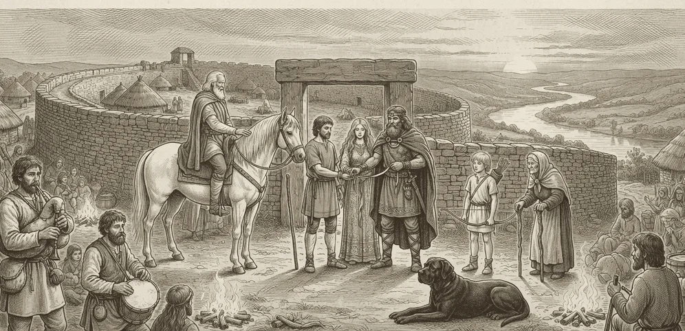
Asta
El primer año en la villa, Asta aprendió que la paz también cansa.
No como la guerra. La guerra cansaba de golpe, en el cuerpo, en las piernas, en la espalda, en las noches sin dormir junto a un herido. La paz cansaba despacio, por dentro, sin que se notara, como cansa el trabajo del campo. Levantarse antes del sol. Ordeñar las dos cabras que les había dado Félix. Moler el grano en el molino de mano de la casa de colonos, que tenía una piedra torcida y que había que empujar con todo el cuerpo. Amasar. Ir al pozo. Regar el olivo. Dar de mamar a Gisa. Lavar. Coser. Volver al pozo. Y entre todo eso, curar.
Porque la gente venía. Siempre venía. Asta no lo había dicho a nadie, pero en un mes se sabía en todo el valle: que en la casa de colonos de arriba, la de la higuera, había una vándala que curaba. Venían los colonos de la villa, que eran romanos de la tierra, morenos, cristianos, que al principio la miraban como se mira a un lobo y a los tres meses le traían huevos. Venían los vándalos de las otras villas del valle, que eran muchos, porque el rey había repartido toda la tierra de Numidia entre los suyos. Venían moros de los montes, en burro, con sus mantos de rayas y sus tatuajes azules, que no hablaban latín ni vándalo y que le enseñaban dónde les dolía con el dedo.
Una mañana de abril vino un cura.
Asta le vio subir por el camino del olivar, en una mula vieja, despacio. Era un hombre de la tierra, de cincuenta años, flaco, con una túnica negra remendada y una cruz de bronce. Se bajó de la mula delante de la casa, se quitó el sombrero y se quedó en el camino, sin acercarse, esperando.
—Soy el cura de la iglesia de la villa —dijo, en latín—. La del valle. La de los colonos.
Asta no sabía que hubiera una iglesia en el valle. Nadie se lo había dicho.
—¿Estás enfermo?
—No. —El cura se quedó callado un momento—. Es mi hermana. Tiene un bulto en el pecho. Desde el invierno. Le duele. —Bajó la voz—. El médico de Calama se fue a Cartago con los ricos. No hay otro. Y ella no quiere que venga un vándalo a verla. Dice que sois herejes.
—¿Y tú qué dices?
El cura tardó en contestar.
—Digo que mi hermana se está muriendo —dijo—. Y que el obispo de Calama, Possidio, que ha vuelto a su ciudad, escribió a los curas de su iglesia que la vándala de Hipona había curado a un muchacho de su ciudad. Y que era la mujer del vándalo que salvó los libros de Agustín.
Asta se quedó quieta.
—¿Possidio está en Calama?
—Ha vuelto. A una iglesia sin tejado y a una ciudad con un conde vándalo. —El cura se encogió de hombros—. El rey es arriano. Y quiere que las iglesias de las villas sean para sus curas. A mí me deja en paz porque soy un cura de pueblo y no me ve nadie. Pero a los obispos los mira.
Asta fue a ver a la hermana del cura esa misma tarde, en la mula, con su cesto de Teodoro. La hermana vivía junto a la iglesia, que era una capilla pequeña de piedra con una cruz pintada en la pared, como la de Materno. Era una mujer vieja, gruesa, con las manos hinchadas de trabajar. No la miró cuando entró. No le habló en todo el rato.
Asta le palpó el bulto. Estaba duro, como una piedra, pegado al hueso, y la piel de encima tenía el color de la piel de una naranja vieja.
Lo supo enseguida. Teodoro le había enseñado aquello también, en la villa, con una mujer de los colonos: el cangrejo. El que se agarra por dentro y no se suelta. El que no se cura.
Le dio lo que tenía: corteza de sauce para el dolor, hervida, y una pasta de miel y de una hierba que le había enseñado Tala, la vieja bereber, para la piel. Y le dijo la verdad al cura, fuera, en la puerta de la capilla, en voz baja.
El cura escuchó sin moverse. Luego se santiguó.
—Gracias —dijo—. Por venir. Aunque no se pueda.
Asta volvió a la casa al anochecer. Ricila estaba sentado debajo de la higuera, con la crónica en las rodillas, escribiendo a la luz de un candil. Guntario jugaba en el suelo con Tecla. Gisa dormía en su cesto, al lado del olivo, que tenía ya cuarenta hojas.
—Possidio está en Calama —le dijo—. Y el rey quiere las iglesias para sus curas.
Ricila dejó la pluma.
—Lo sé —dijo—. Me lo dijo Félix hace un mes. No te lo dije.
—¿Por qué?
Ricila tardó en contestar.
—Porque el rey me ha pedido que le escriba las cartas a los obispos —dijo al fin—. Las que les manda para que den las iglesias de las villas a los curas arrianos. —Se miró las manos, manchadas de tinta—. Las escribo yo. En buen latín. Con las palabras de Materno. Para que suenen mejor.
Asta no dijo nada.
—Escribe lo que hacéis y lo que os hacen —dijo Ricila, muy bajo—. Me lo dijo él. —Se quedó mirando la crónica—. Lo he escrito. Todo. Las cartas también.
La hermana del cura se murió en agosto, en lo peor del calor.
Asta había ido a verla cada semana, en la mula, con la corteza de sauce y la pasta de miel. La mujer no le habló nunca. Ni una palabra. Se dejaba curar con la cara vuelta hacia la pared, donde había una cruz pequeña de madera colgada de un clavo. Pero la última vez, a finales de julio, cuando Asta se levantaba para irse, la mujer alargó la mano sin mirarla y le cogió la muñeca. La apretó. Luego la soltó.
El cura subió a la casa de colonos a decírselo. A pie, porque la mula se había muerto también, esa misma semana, de vieja.
—La entierro mañana —dijo—. Detrás de la capilla. —Se quedó en el camino, sin acercarse, como el primer día—. Si quieres venir.
Asta fue. Con Ricila, con Guntario de la mano y con Gisa atada al pecho. Fredo bajó detrás de ellos, sin que nadie se lo dijera, con su túnica buena.
En la capilla había treinta colonos. Romanos de la tierra, morenos, con sus mujeres y sus niños, que se volvieron todos a mirarles cuando entraron. Nadie dijo nada. Una mujer joven, que Asta había curado de unas fiebres en primavera, se apartó un poco en el banco para dejarle sitio. Luego otra.
El cura dijo la misa en latín. Ricila contestaba en voz baja cuando contestaban los demás. Sabía las palabras. Las había aprendido en el pórtico de Materno, veinte años antes, oyéndolas desde fuera.
Al salir, en la puerta, un viejo de los colonos, el que llevaba la prensa del aceite, se paró delante de Asta. Miró a Gisa, que dormía. Miró al olivo de la ladera, allá arriba, junto a la casa de colonos, que se veía desde la capilla como un palo verde.
—Eso que has plantado —dijo, en latín de la tierra— no va a dar nada si no lo podas. Se te va a ir en ramas.
—No sé podar olivos.
El viejo se encogió de hombros.
—En febrero subo —dijo—. Y te enseño.
Se fue sin despedirse.
Teudo
La paz la firmaron los obispos en mayo, en la iglesia de Bracara, y Teudo no la vio firmar porque no le dejaron entrar en Bracara.
Se lo contó Idacio después, en el castro, junto al fuego de Reburro, con los doce jefes alrededor. Que el conde Censorio había hablado con el rey todo el invierno. Que el rey, que estaba cada vez más enfermo, había querido la paz desde el principio, y Requila también, porque Requila quería ser rey de algo más que de los suevos: de los galaicos, de los romanos, de todo Gallaecia, y para eso hacía falta que los galaicos no le odiaran. Y que en mayo, en la iglesia, delante de cuatro obispos galaicos y de un conde de Roma, el rey había jurado la paz con los castros. Una paz de verdad. Con rehenes, otra vez. Con tributos fijos, apuntados en un papel, para que nadie pudiera cobrar el doble.
—¿Quién apuntó los tributos? —preguntó Teudo.
Idacio sonrió.
—Yo —dijo—. Con tus números. Los de la Peña. Los que me diste en Arelate. —Se quedó callado—. El tesorero del rey, Gesimundo, los miró uno por uno. Y dijo que estaban bien contados. Que quién los había contado. Le dije que un cojo.
Teudo no dijo nada.
—Y otra cosa —dijo Idacio—. La paz dice que nadie puede castigar a un galaico, ni a uno que viva con los galaicos, por lo que pasó antes de la paz. Por nada. —Miró a Teudo—. Lo pedí yo. Lo pidió Censorio. El rey dijo que sí. Requila dijo que sí. —Bajó la voz—. El precio de Agiulfo ya no vale nada. Si alguien te mata, ahora, rompe la paz del rey.
Reburro escupió en el fuego.
—Los papeles no paran cuchillos —dijo.
—No —dijo Idacio—. Pero los hacen más caros.
Esa noche, Teudo subió a la muralla. Hacía luna. Abajo, el Duero bajaba crecido, de primavera, haciendo ruido. Enfrente, al otro lado, la Peña, negra, con una luz en la torre. Más allá, el valle, y el castaño grande, y la casa de labor donde vivía el primo del rey de Lucus, a oscuras.
Brunhild subió detrás de él. Se quedó a su lado, en el parapeto, sin decir nada, con el manto por encima de los hombros.
—Ya no hay precio —dijo Teudo.
—Ya lo he oído.
—Puedo bajar al valle. A la tumba de padre. Al mercado. —Se quedó callado—. Puedo ir a cualquier sitio.
Brunhild no contestó. Esperó. Le conocía.
Teudo se miró la muñeca. La cinta roja de Odo. Casi blanca ya, de tanto lavarla, con los tres nudos todavía apretados.
—Odo te pidió con tres vacas —dijo—. Yo no tengo ni una. Tengo un caballo que no es mío, que es de Arsak. Y una espada que no es mía, que es de Fravita. Y un bastón.
—Y una pierna mala.
—Y una pierna mala.
Brunhild se rio, bajo. Luego dejó de reírse.
—¿Me lo estás pidiendo?
Teudo tardó mucho en contestar. Abajo, el río.
—Llevo quince años con esto en la muñeca —dijo al fin—. Me la diste tú. Me dijiste que no me la quitara. Y no me la he quitado. —La miró—. Si me la quito ahora, es para que nos la aten a los dos.
Brunhild le miró mucho rato. Luego le cogió la mano, la de la cinta. Le deshizo los tres nudos, uno a uno, despacio, con los dedos, a la luz de la luna, sin decir nada. Le quitó la cinta. Se la guardó en el puño.
—Tres vacas —dijo—. Que se las pida mi padre a Arsak, que es rico. Tiene dos caballos.
Al día siguiente, Teudo bajó al valle por primera vez en cuatro años.
Bajó a caballo, en Estrella, por el vado de las truchas, a plena luz, solo. Arsak quiso ir con él. Teudo le dijo que no. Que si la paz era la paz, tenía que bajar solo, o no era paz.
Subió por el camino del arroyo, entre los castaños, que tenían ya las hojas nuevas, verdes, de mayo. Pasó por delante del castaño grande, el de los ahorcados, el de Arsak. Pasó por delante de la casa de labor sin pararse. Había un niño en el patio, rubio, jugando con un perro. Una mujer tendía ropa. En el banco del padre, junto a la puerta, no había nadie.
El prado de los muertos estaba igual. La hierba alta, las piedras, el muro bajo. La tumba del padre tenía flores. No unas flores puestas: flores de prado, amarillas, que habían crecido solas encima de la tierra. El cuenco de castaño seguía allí, boca abajo, gris de lluvia y de sol, con musgo en el borde.
Teudo se bajó del caballo. Le costó. Se quedó de pie delante de la tumba, apoyado en el bastón.
Levantó la piedra de al lado. El cuchillo de hueso del abuelo seguía debajo, en la tierra, oxidado el filo, negro el mango. No lo cogió. Volvió a dejar la piedra encima.
—Me caso con Brunhild —dijo, en voz alta, en suevo—. Mañana no. Dentro de un mes. Ella dice que tú lo sabías. Que lo sabías desde que volví de los Nervasos. —Se quedó callado—. Yo no lo sabía.
El viento movió la hierba. Estrella arrancaba flores amarillas con los dientes, al lado de la tumba, sin respeto ninguno.
—Ella dice que Odo también lo sabía —dijo Teudo—. Pero eso no me lo creo.
Oyó pasos detrás. Se volvió.
Era un hombre de su edad, más o menos. Suevo, rubio, con una túnica de lana buena y unas botas nuevas, con un niño de la mano: el niño del patio. El primo del rey. El de Lucus. Se quedó en la puerta del prado, sin entrar, mirando a Teudo con la cara de alguien que no sabe si tiene que tener miedo.
—Tú eres el hijo —dijo.
—Soy el hijo.
El de Lucus se quedó callado. El niño tiraba de su mano para ir a ver al caballo.
—Las flores no las he puesto yo —dijo el de Lucus al fin—. Han salido solas. —Se rascó la barba—. Pero el cuenco lo pongo derecho cada vez que se cae. Se cae con el viento.
Teudo le miró mucho rato.
—Gracias —dijo.
El de Lucus asintió. Luego se fue, con el niño, que se volvió dos veces a mirar a Estrella.
Teudo volvió al castro al atardecer. No le contó a nadie lo del cuenco. Solo a la madre, esa noche, junto al fuego. La madre no dijo nada. Siguió hilando. Pero al cabo de un rato se levantó, cogió del arcón un queso de los suyos, de los buenos, lo envolvió en un paño y se lo dio a Teudo.
—Para el de Lucus —dijo—. La próxima vez que bajes.
Arsak
Arsak no había sido padrino nunca de nada. Ni de una boda, ni de un niño, ni de un caballo. Los alanos no tenían padrinos. Tenían hermanos de sangre, que se cortaban la palma de la mano y se la juntaban delante del fuego, y eso era para toda la vida.
—Es parecido —le dijo Teudo—. Pero sin cortarse.
—¿Y qué hace el padrino?
—Paga las vacas.
Arsak le miró.
—Es broma —dijo Teudo—. Las vacas las paga el novio. El padrino da la mano de la novia al novio. Y bebe. Mucho.
—Eso sé hacerlo —dijo Arsak.
Wilja el grande, el padre de Brunhild, bajó de Bracara para la boda. Era un hombre viejo ya, de la edad del padre de Teudo cuando murió, ancho, con la barba gris y los mismos ojos de Brunhild. Vino a caballo, con sus dos hijas pequeñas y sus maridos, por el camino de la Peña, a plena luz del día, sin esconderse, porque la paz era la paz. Se bajó del caballo en la puerta del castro, abrazó a Brunhild, abrazó a su nieto, abrazó a la madre de Teudo, que lloraba, y luego se quedó mirando a Teudo de arriba abajo.
—Cojo —dijo.
—Cojo.
—Odo no era cojo.
—No.
Wilja el grande se quedó un rato callado.
—Odo te habría dado un puñetazo por esto —dijo al fin—. Y luego se habría emborrachado contigo. —Le dio una palmada en el hombro que casi le tira—. Las vacas me las pagas cuando las tengas. Que no será nunca.
La boda fue a la manera de los suevos y a la de los galaicos a la vez, porque nadie supo decidirse. Por la mañana, Idacio dijo misa en la casa de Reburro, en latín, y les echó la bendición. Por la tarde, en la puerta del castro, delante de todos, con el sol bajando sobre el Duero, Reburro les ató las muñecas con la cinta roja de Odo, como el viejo de la aldea las había atado a Brunhild y a Odo veinte años antes: tres vueltas, tres nudos. Y Arsak, que era el padrino, puso la mano de Brunhild en la mano de Teudo, encima de la cinta, sin saber bien si lo hacía como había que hacerlo. Nadie le dijo que no.
Luego hubo cerveza. Mucha. Y carne de cerdo asada. Y castañas. Y pan de centeno de verdad, no de bellota, que la madre había hecho con el centeno que Wilja el grande había traído de Bracara en las alforjas. Y música: una gaita de los galaicos, de piel de cabra, que sonaba como un animal herido, y un tambor, y unas flautas de hueso. Y baile. Los galaicos bailaban dando saltos, en corro, alrededor de las hogueras. Los suevos, que eran pocos, bailaban pisando fuerte, con los brazos en los hombros de los de al lado. Arsak no bailó. Se sentó en el suelo, junto a la muralla, con una jarra, y miró.
Vio a la madre de Teudo sentada en un tronco, con un vaso de cerveza en la mano, riéndose de algo que le decía Camalo. Vio a Medamo, que había vuelto de Bracara en septiembre, bailando con una muchacha de las aldeas, mal, torciendo los pies, sin dejar de mirarla. Vio a Reburro dormido contra un muro, con el mastín negro echado encima de las piernas. Vio a Wilja, el nieto, de pie junto a la hoguera, con su arco, mirando a su madre y a Teudo con una cara que Arsak no supo leer. Y luego, cuando Teudo le hizo una seña, ir hacia ellos y dejarse abrazar por los dos a la vez, con la cinta roja todavía atándoles las muñecas, de manera que los tres quedaron enredados y tuvieron que reírse.
Vio a Idacio, el obispo, sentado aparte, en un rincón, con una tablilla en las rodillas, apuntando algo a la luz de una antorcha.
Arsak se levantó, despacio, con la jarra, y fue a sentarse a su lado.
—¿Qué apuntas?
Idacio levantó la cabeza.
—La paz —dijo—. Este año. Que el rey de los suevos ha hecho la paz con los galaicos por medio de los obispos. Y que le han dado rehenes. —Le enseñó la tablilla—. Una línea.
—¿Y la boda?
Idacio sonrió.
—Las bodas no van en las crónicas.
—Deberían —dijo Arsak.
Idacio se quedó mirándole un momento. Luego miró la tablilla. Luego, despacio, con el punzón, escribió algo más debajo de la línea. Pequeño. Arsak no sabía leer, pero vio que eran pocas letras.
—¿Qué has puesto?
—Nada —dijo Idacio—. Una cosa para mí. —Cerró la tablilla—. No irá en la crónica.
Ya muy de noche, cuando las hogueras se iban apagando y la gaita se había callado por fin, Arsak salió del castro por la puerta del monte, solo, con Loba, y bajó al prado de los caballos. Viento y Estrella estaban tumbados en la hierba, juntos, a la luz de la luna. Se levantaron al verle. Viento le metió el hocico en el cuello, buscando la bolsita de tierra, como hacía siempre.
Arsak se sentó en la hierba. Sacó las dos bolsitas del cuello. La vieja, la de su madre, con la tierra negra del Tanais y la tierra roja del Duero mezcladas. La nueva, la de Beorg, con la tierra negra sola.
Estuvo mucho rato con ellas en las manos.
Pensó en su madre, delante de la tienda, la mañana del río helado. En su padre, junto al fuego, aceitando la cota. En Asta, con trece años, en el patio de una granja quemada, con una espada vieja en la mano. En Asta, con veinticinco, en la playa de Iulia Traducta, sin volverse.
Asta tendría veintinueve, ahora. En algún sitio de África, al otro lado del mar. Con su niño de ocho años. Con su vándalo que leía. No sabía si viva. No sabía nada.
Loba se tumbó a su lado y le puso la cabeza en la rodilla.
—Algún día —le dijo Arsak a la perra, en alano.
La perra le miró. Arsak no supo decir qué quería decir con eso. Pero lo había dicho en voz alta, y en su lengua, y eso era como cortarse la palma de la mano delante del fuego.
El maestro
Numidia y el valle del Duero – año 434
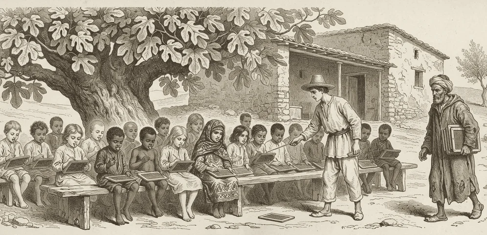
Asta
La escuela empezó por culpa de Tecla.
Tecla tenía ocho años y no se estaba quieta nunca. Era alta para su edad, morena como Zarina, con las mismas trenzas que llevaba en la playa de Tingis, ahora más largas, y una cicatriz en la rodilla de caerse de un caballo que no era suyo. Pasaba más tiempo en la casa de colonos de arriba que en la casa grande, porque en la casa de colonos estaba Guntario, y porque Asta le daba higos, y porque debajo de la higuera estaba Ricila escribiendo, y a Tecla le fascinaba la pluma.
Un día de enero se la quitó. Ricila estaba escribiendo y Tecla se acercó por detrás, sin ruido, y le cogió la pluma de la mano, y se fue corriendo con ella hasta el olivo, y allí se paró y se puso a hacer rayas en la tierra con ella, muy seria. La pluma se rompió. Ricila fue detrás, despacio, sin enfadarse, y se agachó a su lado a mirar las rayas.
—¿Qué has escrito?
—Mi nombre —dijo Tecla.
No era su nombre. Eran rayas. Ricila cogió un palo del suelo y escribió al lado, en la tierra, con letras grandes: TECLA.
La niña lo miró mucho rato.
—Es poco —dijo.
Asta, que estaba en la puerta de la casa con Gisa en brazos, se echó a reír tan fuerte que la niña se asustó y se puso a llorar. Ricila la miró por encima de la cabeza de Tecla. También se acordaba.
Al día siguiente, Tecla volvió con Guntario. Y Ricila les dio una tablilla de cera a cada uno, de las suyas, de las viejas, y se sentó con ellos debajo de la higuera, y empezó por las letras de su nombre.
A la semana eran cinco. Los dos hijos pequeños de un vándalo del valle, que habían visto a Guntario y a Tecla con las tablillas y las querían también. A los quince días, nueve. Dos niños de los colonos, morenos, callados, que se quedaban en el camino sin atreverse a subir, hasta que Ricila bajó a buscarlos. Una niña mora, la nieta de un hombre de los montes al que Asta había curado una pierna, que no hablaba latín ni vándalo y que aprendió las letras antes que ninguno. En marzo eran quince.
No había tablillas para todos. Fredo las hizo. Con madera de los olivos viejos que se habían caído en el invierno, cepillada, con un marco, y Asta les echó la cera derretida de las velas que les daba el cura de la capilla. Fredo también hizo los punzones, de hueso, de las costillas de las cabras. Y un banco largo, para ponerlo debajo de la higuera.
—Esto es un colegio —dijo Félix, una mañana, al subir de la casa grande y encontrarse con quince niños sentados en un banco, en silencio, con la lengua fuera, escribiendo—. Como los de los romanos. ¿Les vas a pegar con una vara?
—No —dijo Ricila.
—Los romanos pegan.
—Materno no pegaba —dijo Ricila—. Y yo aprendí igual.
Félix se quedó mirando. Asta vio que miraba a Tecla, que estaba en el extremo del banco, con la tablilla en las rodillas, escribiendo con mucho cuidado una palabra larga.
—¿Qué escribe? —preguntó Félix, más bajo.
Ricila miró por encima del hombro de la niña.
—Tu nombre —dijo—. Y el de su padre. El otro.
Félix no dijo nada. Se quedó un rato más, de pie junto a la higuera. Luego bajó a la casa grande sin despedirse.
Esa noche, Zarina subió. Sola. Se sentó en el tronco de la puerta, donde se sentaba Fredo, y se quedó mirando el olivo, que había echado cinco ramas nuevas en la primavera.
—Su padre se llamaba Ardar —dijo—. El de Tecla. Era de los de Addax, como el mío. Se murió en el Anas, en el río, cuando fuimos contra los suevos. Con Heremigario. El año de la marcha. —Se miró las manos—. Tecla no se acuerda de él. Tenía tres años.
Asta no dijo nada.
—Félix le dio su nombre al casarse —dijo Zarina—. Le dijo que era su hija. Que el otro también lo era. Que podía tener dos padres, como tu niño tiene tres sangres. —Se quedó callada—. Le enseñaré a escribirlo. Los dos nombres. Si tu marido me enseña a mí.
—¿No sabes?
Zarina se rio, flojo.
—Soy alana —dijo—. Sé montar, tirar con arco, curar un caballo y matar a un hombre. Las letras son de los romanos y de los curas. —Se levantó—. Y de los vándalos que leen.
Al día siguiente, en el banco de la higuera, había dieciséis.
Zarina no se sentó en el banco. Le daba vergüenza, dijo, sentarse con los niños. Subía de noche, cuando los niños dormían, y se sentaba con Ricila junto al candil, debajo de la higuera, con una tablilla de Fredo en las rodillas. Asta los oía desde la casa, mientras daba de mamar a Gisa: la voz baja de Ricila diciendo una letra, la voz de Zarina repitiéndola, más alta, con su acento alano, como quien repite el nombre de un caballo para aprendérselo.
Aprendía deprisa. Más que Asta, que había tardado un invierno. Zarina tardó un mes en escribir su nombre y el de Tecla. Dos en escribir el de Ardar y el de Félix.
La última noche de abril, Zarina se levantó de la tablilla y entró en la casa. Asta estaba sentada junto al fuego, con la niña dormida.
—Ya está —dijo Zarina. Y le enseñó la tablilla.
Había cuatro nombres, uno debajo de otro, en letras grandes, torcidas, de niña. ZARINA. TECLA. ARDAR. FELIX.
Y debajo, más pequeño, otro.
ASTA.
—¿Y el mío por qué? —preguntó Asta.
Zarina se encogió de hombros. Le dio la vuelta a la tablilla para que no se viera.
—Porque me sobraba sitio —dijo.
Se fue a la casa grande sin despedirse, como se iba siempre. Asta se quedó mirando la puerta. Luego miró a Ricila, que había entrado detrás.
—No le sobraba sitio —dijo Ricila—. La tablilla es pequeña. Lo apretó.
En febrero había subido el viejo de la prensa, como había dicho. Se llamaba Marcial. Tenía las manos más duras que Asta había visto nunca, negras, agrietadas, con las uñas como cuernos, y un cuchillo corvo de podar que llevaba en el cinturón desde hacía cincuenta años. Se paró delante del olivo, lo miró por todos lados, se rascó la cabeza, escupió en el suelo.
—Es un palo —dijo.
—Es un olivo —dijo Asta.
—Es un palo que quiere ser olivo. —Marcial sacó el cuchillo—. Y para que lo sea, hay que cortarle lo que quiere ser y dejarle lo que tiene que ser.
Le cortó cuatro ramas. Asta casi gritó. Marcial no le hizo caso. Le dejó tres. Las tres que subían derechas desde el tronco, abriéndose, como los dedos de una mano.
—Así se le va la fuerza a donde tiene que ir —dijo—. Al tronco. Abajo. Lo que no se ve. —Guardó el cuchillo—. En diez años me lo agradecerás. Yo no estaré. Pero me lo agradecerás.
Asta recogió las cuatro ramas cortadas. Las metió en agua, en la olla vieja de barro, la de la tapa de Fredo.
Marcial la miró hacer y se rio.
—Esas no van a prender —dijo.
—La primera tampoco iba a prender —dijo Asta.
Teudo
El rey Hermerico estuvo a punto de morirse en la primavera, y no se murió, y entonces se murió todo el mundo de miedo.
Lo supo Teudo por Medamo, que volvía de Bracara cada mes con el tributo del castro, desde la paz, porque Reburro decía que el muchacho sabía hablar con los suevos sin que le estafaran. Medamo llegó una tarde de abril con la mula cargada de sal y de noticias.
—El rey no habla —dijo, en la casa de la piel de cabra, junto al fuego, todavía con el polvo del camino—. Se le cayó la mitad de la cara un día en la mesa, comiendo. La boca torcida. Un brazo que no mueve. Lo llevan en una silla. Pero vive.
—¿Y Requila?
—Requila manda. —Medamo se encogió de hombros—. Ya mandaba antes. Ahora manda sin tener que preguntar. —Bajó la voz—. Y tiene prisa. Dicen que quiere ir al sur. A la Lusitania, a la Bética. A lo que dejaron los vándalos. Que ahí no hay nadie más que romanos y godos de paso. Que un rey de verdad tiene que tener ciudades. No castros.
Teudo se quedó callado.
—¿Y el manco?
—El manco está con él. —Medamo tardó en seguir—. Requila no le quiere. Pero le necesita. Agiulfo conoce los caminos del sur. Estuvo en el Anas con Heremigario. Sabe dónde se cruza el río. —Le miró—. Y sabe dónde viven los que vinieron del sur.
—¿Qué quieres decir?
—Que pregunta por ti otra vez. —Medamo bajó todavía más la voz, aunque solo estaban ellos y la madre, que hilaba en el rincón—. Ya no por el precio. El precio no vale. Pregunta por otra cosa. Por el alano. Por si el alano está enfermo.
Teudo no contestó enseguida.
—¿Por qué iba a estar enfermo?
—No lo sé. —Medamo se encogió de hombros—. Eso preguntó. En la cocina del palacio, a un hombre que había estado en el mercado de Aquae Flaviae. Que si el alano de pelo blanco seguía montando. Que si tosía.
Esa noche, Teudo no durmió. Se quedó despierto en la manta, al lado de Brunhild, oyendo la lluvia en el tejado de paja, pensando.
Arsak tosía. Desde el invierno. Teudo lo había oído, por las noches, desde la casa: una tos seca, corta, que venía del prado de los caballos, donde Arsak dormía muchas noches con Loba porque decía que dentro de las casas redondas de los galaicos no podía respirar. Teudo no le había dicho nada. Arsak no hablaba nunca de lo que le pasaba por dentro. Nunca.
Por la mañana bajó al prado.
Arsak estaba con Wilja. Los dos a caballo, en el centro del prado, dando vueltas despacio, al paso, uno al lado del otro. Arsak hablaba. Wilja escuchaba, con la cara muy seria, asintiendo.
Teudo se quedó en la valla, apoyado en el bastón. No le vieron.
Arsak tosió. Una vez. Dos. Se dobló un poco en la silla. Wilja paró el caballo, se volvió a mirarle. Arsak le hizo un gesto con la mano: que siguiera. Siguieron.
Teudo se volvió al castro sin decir nada.
Esa tarde, la madre fue al prado con una olla de caldo de huesos con ajo y tomillo, y se la dejó a Arsak en la puerta de la cabaña de los caballos sin decir nada. Y al día siguiente otra. Y al otro.
Teudo no le había dicho nada a la madre.
La madre no le preguntó nada a Teudo.
Una semana después, Teudo subió a la muralla al anochecer y se encontró a Arsak allí, sentado en el parapeto, con las piernas colgando hacia fuera, mirando la Peña. Solo. Sin Loba.
Teudo se sentó a su lado. Le costó; la piedra estaba alta. Se quedaron un rato callados. Abajo, el río. Enfrente, la torre, con su luz.
—Agiulfo pregunta si toses —dijo Teudo.
Arsak no se movió.
—Me lo ha dicho Medamo —siguió Teudo—. En la cocina del palacio. Que si el alano de pelo blanco sigue montando. Que si tose.
—Sigo montando.
—Y toses.
Arsak no contestó. Teudo esperó. Le había enseñado eso Arsak, hacía años, en la Peña: que los que callan dicen más si se les deja callar.
—En la estepa —dijo Arsak al fin— los viejos se iban. Cuando ya no podían montar. Cogían su caballo y se iban solos, una mañana, sin decir nada, hacia donde se pone el sol. Y no volvían. —Se miró las manos—. Así no estorbaban.
—Aquí no estamos en la estepa.
—No.
—Y tú montas.
—Todavía.
Teudo se quedó mirando la Peña. Pensó en el padre, en el banco, la noche de la huida, diciendo que no aguantaría un mes a caballo, que los retrasaría. Pensó que el padre se había quedado para no estorbar, y que se había muerto de una tos, en enero, sentado en ese mismo banco.
—Si un día coges a Viento y te vas hacia donde se pone el sol —dijo, sin mirarle—, te sigo. Con esta pierna. Con el bastón. A pie si hace falta. Y te traigo de una oreja. Delante de todo el castro.
Arsak le miró. Luego se rio, bajo, y se puso a toser, y Teudo le dio palmadas en la espalda, torpes, hasta que se le pasó.
—Los suevos sois muy pesados —dijo Arsak, cuando pudo hablar.
—Mucho —dijo Teudo.
Arsak
Wilja aprendía mal porque aprendía con rabia.
Arsak lo vio enseguida, el primer día, en el prado, en marzo. Wilja montaba bien. Montaba mejor que ningún muchacho galaico, mejor que Medamo, casi tan bien como Félix a su edad. Se sujetaba con las rodillas, daba la vuelta cerrada, se agachaba sobre el cuello del caballo al galope. Pero lo hacía todo como si estuviera enfadado con el caballo, con el prado, con el aire. Tiraba de las riendas. Apretaba los talones. Gritaba.
Y el caballo, que era un potro de Estrella de dos años, tordo como su padre, nervioso como su padre, le contestaba con rabia también. Le tiraba. Una vez, dos, diez.
—Otra vez —decía Wilja, levantándose del barro, con la cara roja.
—No —dijo Arsak la décima vez.
Wilja le miró.
—Me caigo y me levanto. Es la única regla. Lo dijiste tú.
—Lo dije. —Arsak se bajó de Viento. Le costó. Le dolía el pecho. Le dolía siempre, ahora, cuando se movía deprisa—. Pero no dije que te levantaras para pegarte con el caballo.
Wilja no contestó. Tenía barro en la cara y en el pelo, y una sangre pequeña en el labio.
Arsak se sentó en la hierba. Le hizo un gesto para que se sentara a su lado. Wilja tardó. Luego se sentó.
—¿Con quién estás enfadado? —preguntó Arsak.
—Con nadie.
—Mentira.
Wilja arrancó hierba con las manos. La tiró.
—Con mi padre —dijo al fin, muy bajo—. Por morirse. Y con Teudo. Por no ser mi padre. Y con mi madre por casarse con él. Y conmigo por estar contento de que se haya casado. —Tiró más hierba—. Y contigo.
—¿Conmigo por qué?
Wilja tardó en contestar.
—Porque te vas a morir —dijo—. Toses. Lo oigo. Todos lo oyen. La abuela te lleva caldo.
Arsak no dijo nada en mucho rato. El potro tordo pastaba al otro lado del prado, tranquilo, como si no hubiera tirado a nadie.
—Mi padre se murió en la Galia —dijo Arsak al fin—. De una lanza en la espalda, en una pelea de nada, por unas vacas. Yo no estaba. Estaba con los caballos, lejos. Me lo dijeron al día siguiente, cuando ya le habían quemado. —Se miró las manos—. Me enfadé con él también. Por morirse sin mí. Me enfadé tanto que me fui al monte y le grité. Al aire. Solo. Un día entero.
—¿Y se te pasó?
—No. —Arsak casi sonrió—. Pero un día, en un río, salté de un caballo para salvar a un vándalo cojo. Y luego me di cuenta de que lo había hecho porque él lo habría hecho. Y entonces se me pasó un poco.
Wilja le miró.
—Eso fue en el Rin —dijo—. Teudo lo cuenta. Antes de la Galia. Antes de que muriera tu padre.
Arsak se quedó quieto. El muchacho tenía razón. Lo había contado al revés. Se le habían mezclado los años, como se le mezclaban ahora muchas cosas por las noches, cuando tosía y no podía dormir.
—Pues entonces lo hice por si acaso —dijo—. Para cuando se muriera.
Wilja se echó a reír. No quería. Se le escapó. Se rio con la cara llena de barro y la sangre en el labio, y Arsak se rio también, y se puso a toser, y tuvo que esperar a que se le pasara.
Cuando se le pasó, se levantó. Fue hasta el potro tordo. Le cogió las riendas. Le habló en alano, bajo, al oído, como le había hablado su padre a su primer caballo, junto al Tanais. El potro movió las orejas.
—Ven —le dijo a Wilja.
Wilja vino.
—No te subas —dijo Arsak—. Todavía no. Ponle la mano aquí. En el cuello. Y déjala.
Wilja le puso la mano en el cuello. El potro se estremeció. Wilja quiso quitarla. Arsak le sujetó la muñeca.
—Déjala —repitió—. Que note que estás. Que no te vas. Que no le vas a pegar. Que no tienes prisa.
Se quedaron así mucho rato. El sol bajaba. El potro dejó de estremecerse. Movió la cabeza. Le olió el brazo a Wilja, la túnica, el pelo. Resopló.
—Ahora sí —dijo Arsak.
Wilja se subió. Despacio. El potro no se movió.
—Al paso —dijo Arsak—. Una vuelta. Sin riendas. Con las rodillas.
Wilja dio una vuelta al prado, al paso, sin riendas, con las manos en los muslos, muy derecho. El potro no le tiró. Volvió al sitio donde estaba Arsak y se paró solo.
Wilja se quedó en la silla, mirando a Arsak desde arriba, con la boca abierta.
—¿Cómo se llama? —preguntó Arsak.
—No tiene nombre.
—Pónselo.
Wilja lo pensó mucho rato.
—Odo —dijo al fin.
Arsak asintió.
En mayo, Wilja ya tiraba con el arco al galope. En junio, de lado. En julio, una tarde de mucho calor, en el prado de detrás del castro, delante de Teudo y de Brunhild y de la madre y de media aldea, dio la vuelta al galope en el potro tordo, se volvió en la silla y tiró de espaldas, al irse, como tiraban los alanos de la estepa, como tiraba Félix.
La flecha dio en el centro del haz de paja.
Los muchachos galaicos gritaron. Brunhild se tapó la boca con las manos. La madre se santiguó. Teudo no dijo nada; se quedó mirando al muchacho, en el potro, al otro lado del prado, con el arco en la mano, y Arsak vio que tenía los ojos mojados.
Wilja volvió al paso. Se paró delante de Arsak. No dijo nada.
Arsak se sacó del cuello la bolsita de Beorg, la nueva, la de la tierra negra sola. Se la colgó a Wilja al cuello.
—No es tuya —dijo—. Es para que me la guardes. Hasta que me haga falta.
Wilja se la tocó con la mano. Luego miró a Arsak. Entendió. Arsak vio que lo entendía, y que no iba a decir nada, y que eso era lo que le había enseñado de verdad aquel verano.
Esa noche, Arsak tosió menos. La madre le había dejado en la puerta de la cabaña otra olla de caldo, y una manta nueva, gorda, de lana sin teñir, que había tejido Brunhild aquel invierno sin decir para quién.
Federados
Hipona y el valle del Duero – año 435
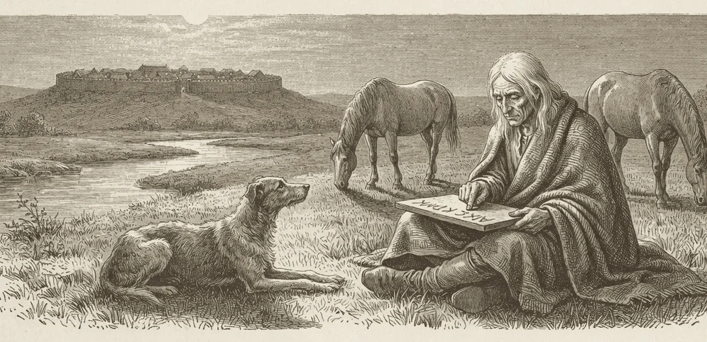
Asta
La paz la firmaron en Hipona, en febrero, en la basílica de la Paz, y Asta pensó que el viejo de la cama pequeña se habría reído.
Lo pensó desde el fondo de la iglesia, de pie, apretada entre vándalos con sus mejores capas y romanos con sus túnicas de seda, con Gisa en brazos, que tenía tres años y no paraba de preguntar quién era cada uno. Delante, junto al altar, en dos sillas iguales, estaban Genserico y un romano viejo, delgado, de barba gris, con un manto blanco con una franja morada. Trigecio, se llamaba. Venía de Rávena, de parte del emperador, que era un niño de dieciséis años, y de su madre, que era la que mandaba.
Y entre los dos, de pie, con un rollo de papiro en las manos, estaba Ricila.
Asta no le había visto nunca así. Con una túnica nueva, blanca, que le había hecho ella aquel invierno con lino de Cartago. Sin el sombrero de paja. Con el pelo cortado. Leyendo en voz alta, en latín, el papel que había escrito él mismo durante tres semanas, en la casa del obispo, en la mesa de la biblioteca, mientras el romano viejo y el primo del rey discutían cada palabra.
Leía bien. Despacio, claro, con la voz que ponía en la escuela de la higuera. Luego paraba, y lo decía en vándalo, para el rey y para los suyos. Luego seguía.
El papel decía que los vándalos y los alanos eran desde ese día federados del Imperio. Amigos de Roma. Que el emperador les daba, para que vivieran en ellas, las tierras de Mauritania y de Numidia, las que ya tenían. Que a cambio pagarían a Roma un tributo cada año, en trigo y en aceite. Que Cartago seguía siendo romana. Y que el rey mandaba a Rávena, como prenda, a uno de sus hijos.
Asta no entendió todo. Entendió lo del hijo. Vio al muchacho, de pie detrás del rey, de quince años, rubio, con la cara blanca. Hunerico. Iba a vivir en Italia, en la corte del emperador niño, para que su padre no rompiera la paz.
Pensó en Medamo, en el palacio de Bracara, aprendiendo suevo.
Cuando Ricila terminó de leer, el rey y el romano viejo se levantaron. Se dieron la mano. Luego firmaron: el romano con una pluma, despacio, con una firma larga, de muchas letras; el rey con un sello de oro, apretándolo en la cera roja con el puño. La gente de la iglesia gritó. Los vándalos golpearon el suelo con los pies. Los romanos aplaudieron, flojo.
Ricila enrolló el papiro y se apartó a un lado. Buscó a Asta con los ojos, al fondo de la iglesia. La encontró. No sonrió. Pero se tocó el pecho, donde guardaba debajo de la túnica la lista de Possidio.
—¿Por qué se reiría el viejo? —le preguntó Asta esa noche, en la casa que les habían dado en Hipona, en el barrio del puerto, cerca del muelle.
Porque desde aquel invierno vivían en Hipona. El rey había hecho de Hipona su ciudad, mientras no tuviera Cartago. Había llenado el palacio del gobernador romano de vándalos, la basílica de curas arrianos, el puerto de barcos. Y había mandado llamar a Ricila desde la villa, porque necesitaba quien le escribiera las cartas a Rávena en un latín que no diera risa.
Ricila había ido. Asta con él, y los niños, y Fredo, que dijo que se quedaba en la villa con el olivo y luego no se quedó. La escuela de la higuera la llevaba ahora Zarina, con las tablillas de Fredo y lo que sabía, que no era mucho pero era bastante para empezar.
—Porque es una paz que se firma en su iglesia —dijo Ricila—. Con su lengua. Con mis palabras, que son las de Materno, que eran las de Cicerón. Entre un rey arriano que le sitió catorce meses y un romano que no vino a ayudarle. —Se sentó en el suelo, cansado—. Y porque va a durar lo que dure. Como todas.
—¿Cuánto?
—No lo sé. —Ricila se frotó los ojos—. El rey quiere Cartago. Lo dice todas las noches, en la mesa, cuando bebe. Esta paz no le da Cartago. Así que la romperá. —Se quedó callado—. Dentro de un año. De cinco. Cuando pueda.
Asta se sentó a su lado.
Por la ventana se veía el puerto. Los barcos, con sus mástiles. Las luces de las tabernas. El mar, negro.
Y al otro lado del mar, muy lejos, muy al norte, más allá de las columnas de Hércules, Hispania. Y en Hispania, en algún sitio, un río que se llamaba Duero.
—¿Crees que viven? —preguntó Asta. No hacía falta decir quiénes.
Ricila tardó mucho en contestar.
—Mandé una carta —dijo—. Hace dos años. Con un mercader de Gades que vino a comprar trigo. Al obispo de Emerita, para que la mandara a Bracara, para que la mandaran al Duero. —Se miró las manos—. No sé si llegó. No ha vuelto nada.
Asta no sabía lo de la carta. No se lo había dicho.
—¿Qué ponía?
—Que vivíamos. Que tenías una hija. Que se llamaba Gisa. Que habíamos plantado el olivo. —Ricila se encogió de hombros—. Cuatro líneas. No sabía si las iban a leer.
Asta le cogió la mano.
—Las leerá Teudo —dijo—. Él sabe leer números.
Ricila se rio, flojo.
Al día siguiente, Asta subió a la casa del obispo. Ya no era del obispo; era del rey, y en el piso de arriba vivía un cura arriano viejo que no salía nunca. Pero el patio seguía igual, con su pozo y su higuera. Y la biblioteca seguía cerrada, con su puerta de hierro, con el sello del rey en la cerradura y un guardia alano en la puerta, de los de Félix, que conocía a Asta y la dejó pasar al patio.
Se sentó junto al pozo. Debajo de la higuera. Estaba dando higos otra vez.
Se acordó del viejo de la cama. De las manos encima de la manta. De la pregunta: «¿Cuánto?». De la palabra que le dio las gracias.
Arriba, en la ventana de la habitación pequeña, alguien había quitado las letras de carbón de la pared. Se veía desde el patio: una pared blanca, recién encalada.
Asta se quedó un rato mirándola. Luego cogió un higo del suelo, lo limpió con la manga y se lo comió.
Estaba muy dulce.
En abril, en el muelle, Asta preguntó por Hispania.
Lo hacía cada vez que llegaba un barco del oeste. Bajaba al puerto con Gisa de la mano y con un cesto de higos secos, y esperaba a que los marineros terminaran de descargar, y se acercaba al que parecía más viejo, y le daba un puñado de higos, y le preguntaba. Por Gades. Por la Bética. Por los suevos. Los marineros la miraban raro: una vándala con un pájaro de bronce en el hombro preguntando por los suevos. Pero se comían los higos y contestaban.
Aquel día era un barco de Carthago Spartaria, cargado de esparto y de salazón. El patrón era un hispano de la costa, gordo, calvo, que hablaba un latín lleno de palabras raras y se reía con toda la boca.
—¿Los suevos? —dijo, con la boca llena de higo—. Siguen en el norte, en Gallaecia, en sus montes, con su lluvia. —Escupió el hueso al agua—. Pero dicen que el rey viejo se muere, y que el hijo tiene hambre. Que ha bajado ya a la Lusitania con su gente, a ver qué hay. Que en Emerita tienen miedo.
—¿Y en Gallaecia? ¿En el Duero?
El patrón se encogió de hombros.
—En el Duero no ha estado nunca nadie que yo conozca —dijo—. Eso es el fin del mundo. —Se rio—. Allí solo hay castros, y galaicos, y curas que escriben cartas a Roma para quejarse. Uno de Aquae Flaviae, dicen, que hasta fue a ver al general de la Galia. Con un cojo y un alano.
Asta se quedó muy quieta.
—¿Qué has dicho?
El patrón la miró. Dejó de reírse.
—Lo que se cuenta en los puertos —dijo, más despacio—. Que el obispo de Aquae Flaviae cruzó los Pirineos para ver a Aecio. Y que le acompañaban un suevo cojo que contaba los caballos del rey y un alano de pelo blanco que se los había robado. —Se encogió de hombros—. Lo cuenta la gente para reírse de los suevos. No sé si es verdad.
Asta no dijo nada. Le dio al patrón todos los higos que quedaban en el cesto. El patrón la miró sin entender.
Subió a casa corriendo, con Gisa en brazos, por las calles del puerto, por la cuesta, sin parar, hasta que no pudo respirar. Ricila estaba en la mesa, escribiendo. Levantó la cabeza al verla entrar.
—Viven —dijo Asta—. Los dos. Viven. —Se sentó en el suelo, sin aliento, con la niña encima—. O vivían. Hace tres años. Un cojo y un alano de pelo blanco. Con un obispo. En la Galia.
Ricila dejó la pluma.
No dijo nada. Se levantó de la mesa, vino hasta ella, se sentó en el suelo a su lado, y la abrazó, con la niña en medio, que protestaba.
Gisa no entendía nada. Pero se puso a reír, porque su madre lloraba y se reía a la vez, y eso le hacía gracia.
Teudo
Arsak se puso malo de verdad en enero, con la nieve.
Teudo lo supo antes que nadie, porque le despertó Loba. La perra entró en la casa de la piel de cabra en mitad de la noche, empapada de nieve, y se puso a tirarle de la manta con los dientes, gimiendo, sin ladrar, como no la había visto hacer nunca. Teudo se levantó, cogió el bastón y la antorcha y salió detrás de ella, descalzo, por la nieve, hasta el prado de los caballos.
Arsak estaba en la cabaña, en el suelo, encima de la manta de Brunhild, temblando. Con los ojos abiertos. Con la cara roja y los labios azules. Respirando como respiran los caballos reventados: deprisa, con ruido, con un silbido al final de cada respiración, como si tuviera un pájaro en el pecho.
—Estoy bien —dijo, en suevo, cuando vio a Teudo. Y se puso a toser. Y lo que tosió era rojo.
Teudo no se acordó después de cómo le subió al castro. Le dijeron que le había cargado a la espalda, él solo, con la pierna, por la nieve, por la cuesta, sin el bastón, y que nadie entendía cómo. Teudo no se acordaba. Se acordaba de que pesaba poco. Mucho menos de lo que tenía que pesar un hombre así. Y de que hablaba, en alano, cosas que no entendía, y que una de ellas era el nombre de Asta.
Le metieron en la casa de la piel de cabra, junto al fuego. La madre se levantó de su manta sin preguntar nada. Brunhild puso agua a hervir. Wilja fue a buscar a Camalo, que sabía de hierbas. Medamo fue a buscar a Reburro, que no sabía de nada pero era el jefe.
Fue la madre la que hizo todo. Teudo la miró hacer desde el rincón, sentado en el suelo, sin poder ayudar, como se había quedado sin poder ayudar la noche del parto de Guntario en la casa de labor. La madre le quitó a Arsak la ropa mojada. Le puso encima todas las mantas de la casa. Le hizo beber agua caliente con miel, a cucharadas. Le puso en el pecho una cataplasma de mostaza y harina de linaza, caliente, que olía tan fuerte que hacía llorar los ojos, como la que le ponía al padre en los inviernos. Le incorporó con dos sacos de lana debajo de la espalda, para que respirara mejor.
—Los que se ahogan, sentados —dijo, sin mirar a nadie—. Tumbados se mueren antes.
Camalo llegó con un manojo de hojas secas, grises. Las echó al fuego, en un cacharro de barro, con agua. Salió un vapor que olía a resina, a monte, a pino.
—Tomillo y resina de pino —dijo Camalo, en galaico—. Lo que respiran los pastores en invierno. Que lo respire.
Lo respiró. Toda la noche. Tosía, escupía, respiraba. La madre le limpiaba la boca con un paño. Brunhild cambiaba la cataplasma cuando se enfriaba. Wilja se sentó a los pies de la manta, con la bolsita de Beorg en el puño, apretada, y no se movió.
Al amanecer, Arsak se durmió.
La madre se sentó junto al fuego, por primera vez en toda la noche. Tenía las manos rojas, quemadas de la mostaza. Teudo se sentó a su lado.
—¿Va a vivir?
La madre tardó en contestar.
—Tu padre vivió diez días —dijo—. Con lo mismo. Con lo mismo que le estoy haciendo. —Se miró las manos—. Este es más fuerte que tu padre. Y más joven.
—Tiene cuarenta y siete años.
—Tu padre tenía sesenta y cinco. —La madre cerró los ojos un momento—. Y no tenía a nadie que le tirara de la manta en mitad de la noche. Yo estaba dormida. La perra no era nuestra.
Teudo no dijo nada. Le cogió la mano quemada a la madre. La madre le dejó.
Arsak vivió. Tardó tres semanas en poder levantarse, y dos meses en poder montar. Pero vivió.
Arsak
Lo primero que hizo Arsak cuando pudo levantarse fue ir a ver a Viento, y lo segundo, enfadarse.
Viento estaba bien. Estaba en el prado, con Estrella y con el potro Odo, comiendo la hierba nueva de marzo, gordo, lustroso, como si no hubiera pasado nada. Le vio llegar desde lejos, despacio, apoyado en el bastón de Teudo, que Teudo le había dejado a la fuerza, y vino al trote a meterle el hocico en el cuello, buscando la bolsita. Arsak le dejó.
Luego se volvió hacia Wilja, que le había acompañado hasta la valla.
—¿Quién le ha cepillado?
—Yo —dijo Wilja.
—Lo has hecho mal. Le has dejado barro en las cuartillas.
—Le he cepillado todos los días. Tres meses. —Wilja se cruzó de brazos—. Dos veces al día.
—Pues dos veces mal.
Wilja se le quedó mirando. Luego se echó a reír. Arsak no.
Lo que le enfadaba no era Viento. Era otra cosa. Era que en las tres semanas de la manta, junto al fuego, había oído hablar a todos. A la madre, a Brunhild, a Teudo, a Camalo, a Reburro, cuando creían que dormía. Y todos habían dicho lo mismo, de una manera o de otra: que el alano se moría. Que no pasaba del invierno. Que era viejo. Que cuarenta y siete años era mucho para un alano que había cruzado el Rin, los Pirineos, Hispania entera, que había dormido mil noches al raso. Que habría que enterrarle. Dónde. Con qué.
Y Arsak había pensado, en la manta, que tenían razón. Que se moría. Y no le había importado.
Eso era lo que le enfadaba.
Se sentó en la hierba, junto a la valla. Le costó. Wilja se sentó a su lado sin que se lo pidiera.
—Cuando estaba malo —dijo Arsak— dije un nombre. Me lo ha dicho Teudo.
—El de Asta.
—¿Lo oíste tú también?
—Lo oyó todo el castro. —Wilja arrancó una brizna de hierba y se la puso en la boca—. Lo dijiste cien veces. En alano. Teudo dice que también dijiste otras cosas. Que no las entendía. Que una era como una canción.
Arsak no se acordaba de la canción. Se acordaba de una cosa: de una niña de trece años en el patio de una granja quemada, con una espada vieja en la mano, que no se movía. Que le miraba. Que no lloraba.
Se acordaba de haber pensado, en la fiebre, que se iba a morir sin volver a verla. Y de que eso sí le había importado.
—Wilja —dijo.
—¿Qué?
—Cuando me ponga bueno del todo —dijo Arsak—, quiero que me enseñes una cosa.
Wilja le miró, sorprendido.
—¿Yo a ti? ¿Qué?
—A leer —dijo Arsak—. Teudo sabe. Le enseñó el obispo. Tú sabes, que te enseñó Teudo. —Se quedó callado—. Yo no sé. Nunca he querido. Los alanos no leen. Los alanos montan.
—¿Y por qué quieres ahora?
Arsak tardó mucho en contestar.
—Porque Ricila escribe —dijo al fin—. Asta me lo dijo, en la playa, antes de irse. Que Ricila lo escribe todo. Y si un día llega una carta, quiero leerla yo. No que me la lea nadie.
Wilja se quedó mirándole. Luego asintió, muy serio.
—Empezamos mañana —dijo—. Con tu nombre.
Arsak resopló.
—Mi nombre es fácil —dijo—. Cinco letras. Lo que quiero aprender es el de ella.
—Es más fácil todavía —dijo Wilja—. Cuatro. Dos iguales.
Esa noche, Teudo bajó al prado con una tablilla de cera. Una de las de Idacio, de las que el obispo le había dejado en Arelate. Se la dio a Arsak sin decir nada. Arsak la cogió como se coge un pájaro, con miedo a romperla.
En el centro de la cera, alguien había escrito ya, con letra grande y cuidadosa, cuatro letras.
ASTA.
Arsak se quedó mirándolas mucho rato a la luz de la luna. Dos iguales, en los extremos, como dos puertas. En medio, una que parecía una serpiente y otra que parecía un árbol.
—Es poco —dijo en voz baja, en alano.
Loba levantó la cabeza.
Arsak no sabía que Asta había dicho lo mismo, veinte años antes, en el pórtico de una villa de la Bética, con un muchacho vándalo a su lado. No lo sabía. Pero lo dijo.
Y luego, despacio, con el dedo, siguió la serpiente.
La carta llegó en mayo.
La trajo el cura Tirso, el viejo, el de la embajada, en la mula blanca de Idacio, porque Idacio estaba en Bracara con el conde Censorio y no podía venir. Subió al castro por el camino del río, despacio, a mediodía, se bajó de la mula en la puerta y preguntó por el alano.
Arsak estaba en el prado. Wilja fue a buscarle. Cuando llegó, el cura viejo le esperaba junto al pozo del castro, con Teudo, con un paquete pequeño en las manos, envuelto en un trozo de cuero atado con un cordel. Lo tenía como se tiene una cosa santa.
—Llegó a Aquae Flaviae en invierno —dijo el cura Tirso, en latín, despacio, y Teudo lo traducía—. Del obispo de Emerita. Que la tenía desde hacía dos años, y no sabía a quién dársela. Que la había traído un mercader de Gades, de parte de un vándalo de África. —Miró el paquete—. Pone fuera: «Al suevo que cuenta y al alano del Rin. En el Duero, junto a la Peña».
Le tendió el paquete a Teudo.
Teudo no lo cogió. Miró a Arsak.
Arsak lo cogió. Le temblaban las manos. Deshizo el cordel. Desenvolvió el cuero. Dentro había una tablilla de madera, doble, de las que se cierran como un libro, con un cordón de lino atado alrededor. Cerrada. Con un sello de cera en el cordón. Un sello pequeño, sin escudo, con una marca dentro, apretada con el dedo.
Arsak se quedó mirando el sello.
—¿La abro yo? —preguntó Teudo, muy bajo.
Arsak no contestó enseguida. Pensó en la tablilla de cera que tenía en la cabaña, con cuatro letras en el centro, que seguía todas las noches con el dedo. En las otras letras, las que Wilja le escribía cada mañana al lado, que no sabía todavía, que se le olvidaban.
—No —dijo.
Teudo le miró.
—Arsak, puede ser...
—Ya lo sé lo que puede ser. —Arsak se guardó la tablilla dentro de la túnica, contra el pecho, al lado de la bolsita vieja—. Si son malas, no corren. Si son buenas, tampoco.
Se dio la vuelta. Se fue hacia el prado de los caballos, despacio, con el bastón de Teudo, que todavía no le había devuelto. Loba trotando a su lado.
Wilja fue detrás de él. A la mitad del camino se volvió y miró a Teudo, y Teudo vio que el muchacho había entendido antes que él.
—Me la va a leer él —dijo Wilja—. Cuando sepa. Dice que antes del invierno.
Teudo se quedó junto al pozo, con el cura viejo, mirándoles ir.
—¿Y si no aprende antes del invierno? —preguntó el cura Tirso, que no había entendido nada.
Teudo tardó en contestar.
—Aprenderá —dijo—. Es alano. Lo que dice, lo hace. Aunque tarde veinte años.
Los obispos
Hipona y el valle del Duero – de 435 a 437
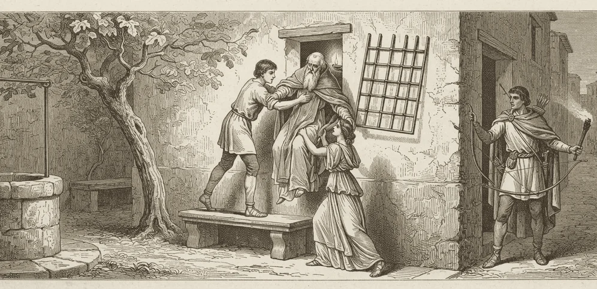
Arsak
Arsak leyó la carta en noviembre, la primera noche de nieve, en la cabaña de los caballos, a la luz de una vela de sebo, solo.
Había tardado seis meses en aprender. Seis meses de tablilla todas las mañanas con Wilja, en el prado, con el potro Odo pastando alrededor y Loba dormida encima de sus pies. Seis meses de letras que se le escapaban como se escapan los peces de las manos: la que parecía una serpiente, la que parecía un árbol, la que parecía una puerta, la que parecía una herradura vieja. Wilja tenía paciencia. Más que Teudo. Más que nadie. Le corregía sin reírse, y cuando Arsak tiraba la tablilla al suelo, la recogía, le quitaba el barro y se la volvía a poner en las rodillas sin decir nada.
En octubre, Arsak leyó la primera línea entera de una tablilla que le había escrito Wilja. Decía: EL CABALLO COME HIERBA. Arsak la leyó tres veces, en voz alta, despacio, y luego miró a Viento, que comía hierba a diez pasos, y se echó a reír tan fuerte que el caballo levantó la cabeza.
En noviembre cortó el cordón de lino de la carta de Ricila.
La abrió despacio. Las dos tablas de madera se separaron con un crujido. Dentro, la cera estaba amarilla, vieja, un poco agrietada en una esquina, pero las letras se leían. Eran grandes. Ricila las había hecho grandes a propósito, Arsak lo supo enseguida. Para que las leyera alguien que no sabía leer bien.
Eran cuatro líneas.
VIVIMOS. EN NUMIDIA. EL NIÑO BIEN. TENEMOS UNA HIJA. SE LLAMA GISA. HEMOS PLANTADO EL ABUELO. TIENE HOJAS. ASTA DICE QUE NO OS MURÁIS. R.
Arsak tardó mucho en leerlas. Se equivocó en GISA, que no conocía, y tuvo que ir letra por letra. Se equivocó en MURÁIS. Pero las leyó todas. Y cuando terminó, volvió al principio y las leyó otra vez. Y otra.
Luego se quedó quieto con la tablilla en las rodillas.
Loba se levantó, se estiró, se acercó y le lamió la cara. Estaba salada.
Esa noche no tosió. A la mañana siguiente subió al castro, entró en la casa de la piel de cabra sin llamar, se sentó junto al fuego delante de Teudo y de Brunhild y de la madre y de Wilja, y les leyó la carta en voz alta, en suevo, despacio, señalando cada letra con el dedo.
Cuando llegó a la última línea, la madre se tapó la cara con el delantal.
Teudo no dijo nada. Cogió la tablilla de las manos de Arsak y se quedó mirando la R del final. Grande, con una cola larga, como la que ponía Ricila en las cuentas de la Peña, debajo de cada suma, para que se supiera que estaban revisadas.
—Siempre firmaba así —dijo—. En los sacos.
Asta
La persecución empezó con una carta que escribió Ricila.
No la escribió él, en realidad. La escribió el rey, con la boca, en la mesa del palacio, una noche de invierno de 437, borracho de vino de Cartago y de rabia. Ricila la puso en buen latín, con las palabras de Materno, para que sonara mejor. Como las otras. Como todas.
La carta decía que los obispos de la iglesia de los romanos que no quisieran rezar con los curas del rey tenían que dejar sus iglesias y sus ciudades. Que se fueran. Adonde quisieran: a Italia, a Cartago, al desierto. Pero que se fueran.
—No es nuevo —le dijo Ricila a Asta esa noche, en la casa del puerto, sentado en el suelo, con las manos negras de tinta—. Ya lo hacía antes, con las iglesias de las villas. Ahora lo hace con las ciudades. Con los obispos. —Se miró las manos—. Y la carta la llevo yo.
—¿A quién?
Ricila tardó en contestar.
—A Calama —dijo—. A Possidio. Es el primero de la lista.
Asta no dijo nada.
Esa noche, antes de salir hacia Calama, cenaron los cuatro juntos en la casa del puerto, en el suelo, alrededor del fuego, como cenaban en la tienda de la columna. Pan, aceitunas, un pescado del puerto asado en las brasas. Gisa, que tenía cinco años, se comió la cabeza del pescado entera, con los ojos, porque Fredo le había dicho que los ojos daban buena vista. Guntario, con doce, no comió casi nada. Miraba a su padre.
—¿Por qué vas tú? —preguntó al fin.
Ricila dejó el pan.
—Porque la carta la he escrito yo.
—Pues que la lleve otro. Uno del rey.
—Si la lleva otro —dijo Ricila—, la leerá en voz alta en la plaza, delante de todos, para que el obispo pase vergüenza. Y luego le echará de la ciudad a empujones. —Se quedó callado—. Si la llevo yo, se la daré en la mano. En la puerta de su iglesia. Sin que la oiga nadie.
Guntario lo pensó.
—Eso no cambia lo que dice la carta.
—No —dijo Ricila—. Cambia cómo se lee.
Guntario no contestó. Se levantó y se fue a la manta, al fondo de la casa, y se tumbó de cara a la pared. Asta le miró ir. Tenía los hombros de su abuelo vándalo y la manera de enfadarse de Ricila: en silencio, de espaldas.
—Tiene razón —le dijo Asta a Ricila, muy bajo.
—Ya lo sé. —Ricila se miró las manos, negras de tinta—. Por eso voy.
Asta no lo entendió aquella noche. Lo entendió tres días después, en una cueva de pastores, en el monte, al amanecer.
Fueron juntos. Ricila, Asta, y diez jinetes del rey, alanos, de los de Félix, que no sabían leer y que iban porque se lo mandaban. Calama estaba a dos días de Hipona, en un valle, al pie de unos montes. Una ciudad pequeña, con murallas viejas, una plaza, un teatro de piedra amarilla, y una iglesia sin tejado, como había dicho el cura de la capilla. Tenía tejado ya. Lo habían puesto los de la ciudad, con tejas viejas de otras casas, a trozos, de colores distintos.
Possidio les recibió en la puerta de la iglesia. Estaba más viejo. Más flaco. La barba blanca más larga. Miró a Ricila. Miró la carta que Ricila tenía en la mano, con el sello del rey colgando. Miró a Asta.
—Ya lo sé —dijo, antes de que Ricila abriera la boca—. Me lo dijeron ayer. Los curas del rey en Hipona tienen la lengua larga.
—Lo siento —dijo Ricila.
—¿El qué? ¿Haberla escrito? —Possidio casi sonrió—. Escribes bien. Mejor que el rey. Mejor que yo. —Cogió la carta. No la abrió—. ¿Cuánto tengo?
—Tres días.
—Bastan.
No bastaron. Esa noche llegaron a Calama otros jinetes del rey. No alanos de Félix: vándalos, de la guardia, con un conde arriano al frente, uno de los del palacio, que no conocía a Ricila ni quería conocerle. Traían otra carta. Esta no la había escrito Ricila. Decía que el obispo tenía que salir de la ciudad esa misma noche, sin nada, y que su iglesia pasaba a los curas del rey. Y que si se resistía, se le llevaba a Hipona preso.
Possidio no se resistió. Pero tampoco salió.
Lo que hizo fue desaparecer.
Asta lo supo a medianoche, cuando un muchacho de la iglesia, un monaguillo de doce años, llamó a la puerta de la casa donde dormían ella y Ricila, en la plaza. Venía llorando. Dijo que los vándalos estaban buscando al obispo por toda la ciudad, casa por casa, y que no le encontraban. Que el obispo había salido por la puerta de atrás de la iglesia con otro cura y que no sabía adónde había ido. Y que el obispo le había dicho que si le pasaba algo, fuera a buscar al vándalo del sombrero.
Ricila se levantó. Se puso la túnica. Se puso el sombrero de paja, que no se ponía desde hacía años.
—¿Adónde vas? —preguntó Asta.
—A buscarle.
—¿Para qué? ¿Para entregarle?
Ricila la miró. No contestó.
Le encontraron al amanecer, fuera de la ciudad, en una cueva de pastores en el monte, con el otro cura y con una mula. Ricila sabía dónde buscar porque se lo había dicho el monaguillo, que conocía las cuevas de cuando subía a por cabras. Possidio estaba sentado en una piedra, a la entrada, con el manto por encima de los hombros, rezando.
Levantó la cabeza al verles llegar.
—¿Vienes a llevarme? —preguntó.
Ricila se bajó del caballo.
—Vengo a llevarte a Hipona —dijo—. A la casa del obispo. A tu biblioteca. —Se quedó callado—. Tiene el sello del rey en la puerta. Pena de muerte al que entre. Nadie va a buscarte ahí. Es el único sitio de África donde no puede entrar nadie.
Possidio le miró mucho rato.
—Menos tú —dijo.
—Menos yo. Por la ventana de atrás.
Asta se quedó sin aire. Miró a Ricila. Ricila no la miraba a ella; miraba al viejo.
—Tres días —dijo Ricila—. Hasta que se cansen de buscarte. Luego te saco por el puerto, en un barco de los de Sicilia, de noche. Félix conoce a un patrón.
Possidio cerró los ojos.
—Me escondéis entre sus libros —dijo, muy bajo—. Entre los de él. —Abrió los ojos—. Se habría reído.
Lo llevaron a Hipona en el carro de Fredo, debajo de una carga de leña de olivo, dos días por caminos de pastores, con el otro cura a pie detrás, vestido de colono. Fredo no preguntó nada. Fredo conducía los bueyes con la cara de siempre, como si llevara leña, y cuando les paró una patrulla de la guardia en el puente del río, a la entrada de Hipona, se bajó del carro, se quitó el gorro, y le ofreció al jefe de la patrulla un cuenco de madera de olivo, de los suyos, recién tallado. El jefe se lo quedó y les dejó pasar.
Esa noche, Ricila metió a Possidio en la biblioteca por la ventana de la reja. Asta le ayudó desde abajo. El viejo pesaba poco. Casi tan poco como el otro viejo, el de la cama.
Le dejaron una manta, una jarra de agua, pan, queso, aceitunas. Y una vela, que no debía encender de día.
—No toques nada —le dijo Ricila, desde la ventana, en voz baja.
Possidio, dentro, en la oscuridad, entre las estanterías, se rio. Una risa de viejo, sin ruido.
—Hijo —dijo—, yo hice la lista.
Los tres días fueron los más largos de la vida de Asta.
Los vándalos de la guardia buscaron a Possidio por todo Calama, por los montes, por las villas del valle. Luego por los caminos. Luego por Hipona. Entraron en las iglesias de los romanos, en las casas de los curas, en los conventos de las monjas. Entraron en la casa del puerto, la de Ricila, una mañana, cuatro hombres con el conde arriano, que lo miró todo, el arcón de los libros de Materno, la crónica, las tablillas, la olla vieja con las cuatro ramas de olivo en agua, y se fue sin decir nada.
No entraron en la biblioteca. Pasaron por delante tres veces. Asta les vio desde el patio, sentada junto al pozo, debajo de la higuera, con Gisa jugando a sus pies con piedras. Vio al conde arriano pararse delante de la puerta de hierro, mirar el sello del rey, mirar al guardia alano. El guardia alano, que era de los de Félix, que sabía, se encogió de hombros.
—Libros de magia —dijo, en vándalo—. Del obispo muerto. El que entra se muere.
El conde se santiguó y se fue.
La tercera noche no había luna. Ricila sacó a Possidio por la ventana. Asta le recogió abajo, en los brazos, como se recoge a un niño que se cae de un árbol. El viejo se agarró a ella. Olía a polvo, a pergamino, a cera.
—He leído —le dijo, al oído, en latín—. Tres días. Sin luz. De memoria. Me los sé todos.
Bajaron al puerto por las calles de atrás. Félix les esperaba en el muelle, con un patrón siciliano que no hablaba y una barca. Possidio se subió a la barca. El otro cura detrás. Antes de que la barca se apartara del muelle, el viejo se volvió y le cogió la mano a Ricila.
—En Italia —dijo— voy a escribir su vida. La de él. Para que no se pierda. —Le apretó la mano—. Pondré que en Hipona, cuando cayó, la biblioteca se salvó entera. No pondré por qué. Nadie lo creería.
—Pon que fue la magia —dijo Félix desde el muelle.
Possidio se rio. La barca se apartó. Se perdió en la oscuridad del puerto, hacia el barco grande que esperaba fuera, sin luces.
Volvieron a casa por las calles de atrás, sin hablar. Asta tenía frío, aunque era primavera. Ricila le pasó el brazo por los hombros.
Al llegar a la puerta de la casa del puerto, había luz dentro. Y dos caballos atados fuera. De la guardia.
Ricila se paró.
—Vete con los niños a casa de Félix —le dijo a Asta, muy bajo, sin mirarla—. Por detrás. Ahora.
—Ricila...
—Ahora.
Asta no se fue. Se quedó en la esquina, en la sombra, con el corazón en la boca, y le vio entrar en su casa. Oyó voces. Oyó la voz del conde arriano. Oyó la de Ricila, tranquila, baja, como cuando leía en la escuela de la higuera. Oyó un golpe. Luego nada.
Luego le vio salir. Entre dos guardias. Con las manos atadas a la espalda. Sin el sombrero.
Pasaron a su lado, a diez pasos, sin verla. Ricila no volvió la cabeza. Pero Asta vio que movía los labios, sin voz.
Asta lo entendió sin oírlo. Eran tres palabras. Las del viejo de la cama pequeña.
Escríbelo entero.
Teudo
La emboscada fue en el vado de las truchas, en mayo de 437, y Teudo no la vio venir porque ya no miraba.
Ese era el problema de la paz. Que se dejaba de mirar. Cuatro años de paz, de tributos apuntados en un papel, de Medamo bajando a Bracara cada mes con la mula y subiendo con la sal y las noticias. Cuatro años sin que nadie subiera al castro con escaleras. Cuatro años de bajar al valle a plena luz a ver la tumba del padre, a llevarle un queso al de Lucus, a comprar hierro en el mercado de la Peña, que ahora tenía mercado, los jueves, junto al castaño grande.
Bajaba los jueves. Todo el valle lo sabía.
Aquel jueves bajó con Wilja. El muchacho tenía veintidós años ya, una barba rubia de verdad, los hombros de Odo y el arco de tejo a la espalda, que no se quitaba nunca. Iban a comprar una reja de arado para el castro. Cruzaron el vado a caballo, despacio, con el agua por los corvejones, hablando de la reja, de si era mejor de las de Bracara o de las del herrero de la Peña.
Del otro lado, entre los alisos, había cuatro hombres.
Teudo los vio tarde. Los vio cuando ya estaban saliendo de los árboles, a pie, con lanzas, corriendo hacia el agua. No eran suevos de la Peña. No los conocía. Eran hombres flacos, sucios, con barbas de semanas, con ropa de pastores y lanzas buenas, nuevas, de las de Bracara. Bandidos, habría dicho cualquiera. Hombres de los montes. Pero los bandidos no tienen lanzas nuevas.
—Atrás —dijo Teudo.
Wilja no fue atrás. Wilja se descolgó el arco antes de que Teudo terminara de decirlo, y tiró. Desde el caballo, en medio del río, con el agua corriendo. La flecha le dio al primero en el muslo. El hombre cayó en el agua de la orilla, gritando.
Los otros tres siguieron.
Teudo sacó la espada de Fravita. Estrella se encabritó en el agua y casi le tira. No le tiró. Teudo se agarró con las rodillas como le había enseñado Arsak hacía veinte años en la Peña, y cuando el segundo hombre llegó a su lado con la lanza por delante, apuntándole al costado, Teudo le paró la lanza con la espada y le dio con el pie bueno en la cara. El hombre cayó de espaldas en el río.
El tercero fue hacia Wilja.
Teudo lo vio. Vio la lanza. Vio a Wilja tirar otra flecha y fallar, porque el caballo se movía. Vio al hombre levantar la lanza.
No llegó a bajarla.
Una flecha le atravesó el cuello desde detrás, desde la orilla del castro, desde lejos. Una de las largas, con punta de hierro. De las buenas. De las que Arsak guardaba.
El cuarto hombre se dio la vuelta y echó a correr hacia los alisos. No llegó. Loba le llegó antes.
Arsak bajó por la orilla al trote, en Viento, con el arco de olmo en la mano. Despacio. Respirando por la boca. Se paró en el agua, al lado de Wilja, y le miró de arriba abajo.
—¿Te ha dado?
—No.
—Has fallado la segunda.
—El caballo se movía.
—El caballo se mueve siempre. —Arsak tosió—. Tienes que tirar cuando tiene las cuatro patas en el suelo. Te lo he dicho cien veces.
Wilja no contestó. Estaba blanco. Le temblaban las manos.
Teudo bajó del caballo en la orilla. Fue hasta el hombre de la flecha en el muslo, que se arrastraba por las piedras. Le dio la vuelta con el bastón. Le puso la punta de la espada de Fravita en el pecho.
—¿Quién os manda?
El hombre escupió. No dijo nada.
Teudo apretó un poco la espada.
—No me importa que no lo digas —dijo, en suevo, despacio—. Ya lo sé. Solo quiero que lo digas tú. Para que lo oiga el muchacho. Que no se le olvide nunca.
El hombre le miró. Tenía miedo. Mucho.
—El manco —dijo—. Diez sueldos. Cinco por adelantado.
—La paz del rey dice que el precio no vale.
—El manco dice que el rey está tonto. —El hombre se rio, con la cara torcida de dolor—. Y que el hijo del rey le necesita para ir al sur. Y que un cojo muerto en un vado no lo echa de menos nadie.
Teudo se quedó mucho rato mirándole.
Luego quitó la espada.
—Lleváoslo al castro —le dijo a Wilja—. A Reburro. Que le cure la madre. Y luego que le lleve Medamo a Bracara, atado, en la mula. Al palacio. A Requila. —Se limpió la espada en la hierba—. Que le cuente lo de los diez sueldos al hijo del rey. Delante del manco.
Arsak le miró desde el caballo.
—Requila no hará nada —dijo.
—Lo sé —dijo Teudo—. Pero lo sabrá. Y cuando lo sepa, ya no podrá decir que no lo sabía.
Esa noche, en la casa de la piel de cabra, Brunhild no dijo nada en toda la cena. Ni la madre. Wilja comió sin levantar la cabeza del cuenco. Teudo le miraba. El muchacho tenía las manos quietas ya. Pero los ojos no.
Después de cenar, Wilja se levantó y salió. Teudo le encontró en la muralla, sentado en el mismo sitio donde se sentaba Arsak, con las piernas colgando hacia fuera, mirando la Peña.
Se sentó a su lado. Le costó.
—Es la primera vez —dijo Wilja—. Que le doy a alguien.
—Lo sé.
—No se me va de la cabeza. El ruido que hizo. Cuando le di.
Teudo no dijo nada en mucho rato.
—A mí tampoco se me fue —dijo al fin—. La primera. En los Nervasos, en el muro de escudos, al lado de tu padre. Tenía más o menos tu edad. —Se miró las manos—. Tu padre me dijo esa noche una cosa. Que no se va. Que no tiene que irse. Que el día que se te vaya, es que te has vuelto como el manco.
Wilja le miró.
—¿Y se te fue?
—No —dijo Teudo—. Nunca.
La sangre
Hipona y el valle del Duero – año 437
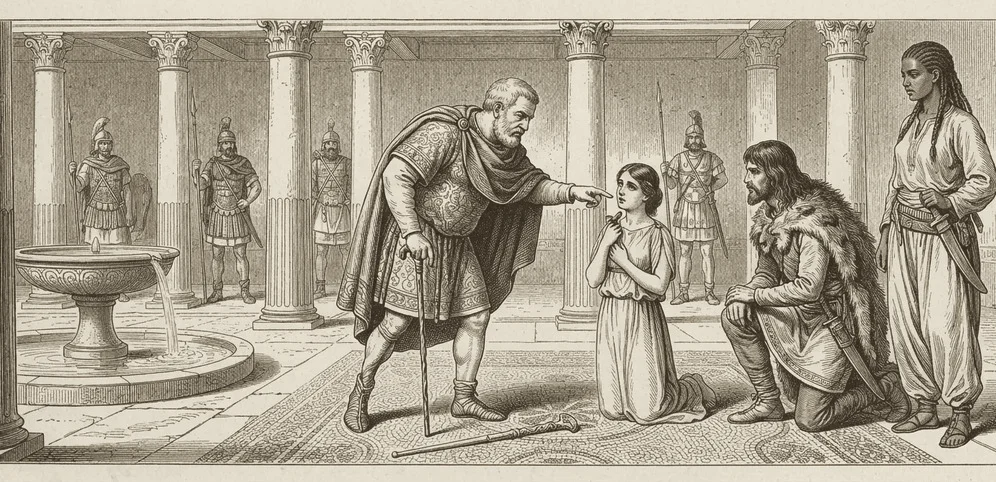
Asta
A Ricila lo metieron en la cárcel del palacio, en los sótanos, donde los romanos guardaban el vino y el aceite, y Asta tardó nueve días en poder verle.
Nueve días de puertas. Asta las contó. La del conde arriano, que la escuchó sin mirarla, mientras comía uvas, y le dijo que el vándalo del sombrero había ayudado a escapar a un enemigo del rey y que eso se pagaba con la cabeza. La del primo viejo del rey, el que vomitaba en los caminos, que le dijo que él no podía hacer nada, que el rey estaba muy enfadado, que no le hablara de eso. La de los curas arrianos del palacio, que le dijeron que rezara. La del muelle, donde preguntó por el patrón siciliano, por si alguien le había visto, y nadie había visto nada. La de la casa del puerto, que encontró una mañana con el sello del rey en la cerradura, como la biblioteca, y con todo dentro: el arcón de Materno, la crónica, las tablillas, la olla con las cuatro ramas.
Y la de la casa grande de Félix, en la ciudad, donde dormía ahora con los niños y con Fredo, en el suelo, en una habitación del fondo.
—Tienes que ver al rey —le dijo Zarina, la novena noche—. No a sus condes. No a sus curas. Al rey.
—No me va a recibir.
—A ti no. —Zarina miró a Félix, que estaba sentado junto al fuego, callado, con la cara negra de no dormir—. A él sí.
Félix no dijo nada en mucho rato.
—El rey me da tierras porque gano batallas —dijo al fin—. No porque le pida cosas. El día que le pida algo, me lo quitará todo. Así es él. —Se frotó la cara—. Y lo de Possidio lo sabe. Sabe que fue mi patrón el que lo sacó. No ha dicho nada. Pero lo sabe. Me está esperando.
—Entonces ve antes de que te llame —dijo Zarina.
Félix la miró. Luego miró a Asta. Luego miró al suelo, a Guntario, que tenía doce años y estaba sentado contra la pared con las rodillas en el pecho y los ojos muy abiertos, y a Gisa, dormida, de cinco, con el pulgar en la boca.
—Ponte la fíbula —le dijo a Asta.
Asta no entendió.
—La del pájaro. La de tu padre. —Félix se levantó—. Póntela donde se vea. En el hombro. Y vente.
Fueron al amanecer. Félix con su mejor capa, la de piel de lobo, y su espada, que le quitaron en la puerta. Zarina con la suya, alana, de fieltro rojo, y los pantalones, y el pelo trenzado como lo llevaban las mujeres de Addax, y el cuchillo, que no le quitaron porque nadie se atrevió. Asta en medio, con la túnica de lana parda de los días de fiesta y la fíbula en el hombro, el pájaro de bronce con los dos ojos rojos.
El rey los recibió en el patio del palacio, de pie, junto a la fuente, que en Hipona sí tenía agua. Estaba viejo. Cincuenta años, quizá. Más bajo de lo que Asta recordaba de la playa de Iulia Traducta. Más gordo. Con el pelo gris cortado corto, la barba gris, y la pierna mala, la que se le había quedado torcida de una caída de caballo de joven, apoyada en un bastón de marfil. Miraba a Félix como mira un hombre a un perro que le ha mordido.
—El alano que gana batallas —dijo—. Y que tiene amigos en Sicilia.
Félix no contestó. Se arrodilló. Zarina no.
—Vengo por el que escribe tus cartas —dijo Félix, de rodillas—. Ricila. El del sombrero.
—El que sacó a un obispo de mi ciudad delante de mis narices.
—El que te escribió la paz de Roma —dijo Félix—. La que te dio Numidia.
El rey se rio. Una risa corta, sin ganas.
—Escribe bien —dijo—. Por eso le voy a cortar la cabeza en lugar de colgarle. Por respeto. —Se apoyó en el bastón—. Hay otros que escriben bien. En Cartago hay cien. Cuando tenga Cartago, tendré cien.
Asta dio un paso adelante. No lo pensó. Lo dio.
El rey la miró. Primero a la cara. Luego, sin querer, como se mira algo que brilla, al hombro.
Se quedó quieto.
Asta vio que dejaba de respirar. Vio que se le ponía la cara de otro color. Vio que soltaba el bastón de marfil, sin darse cuenta, y que el bastón caía al suelo de mosaicos con un ruido seco, y que nadie se atrevía a recogerlo.
El rey se acercó. Cojeando. Despacio. Hasta ella. Le puso el dedo en la fíbula, en el pájaro, en los ojos rojos, como se lo había puesto Heremigario en la Peña, hacía muchos años. Pero no era igual. El dedo le temblaba.
—¿De dónde la has sacado? —preguntó, en vándalo. Muy bajo.
—Era de mi padre —dijo Asta.
—¿Quién era tu padre?
—Guntario. Un vándalo de la Bética. Cojo, como tú. —Asta tragó saliva—. Se quedó cojo en el Rin. La noche que lo cruzasteis. Le salvó un alano. Y mi padre le dio esto al alano. Y el alano me lo dio a mí.
El rey no dijo nada en mucho rato. Seguía con el dedo en la fíbula.
—Esto lo hacía el orfebre de mi padre —dijo al fin—. Del rey Godegisel. En el Óder, antes de que nos fuéramos. Solo hizo doce. Para los doce hombres que dormían a la puerta de la tienda de mi padre. —Levantó los ojos—. La noche del Rin, los francos mataron a mi padre. Y a once de los doce. Yo tenía diecisiete años. Lo vi. —Se quedó callado—. El que quedó era un muchacho. Le dieron un lanzazo en la pierna, en el hielo, al lado del cuerpo de mi padre. Lo dimos por muerto. No volvimos a buscarle. Teníamos que cruzar.
Asta no podía hablar.
—No sabía que había vivido —dijo el rey—. No sabía que le había salvado nadie. —Retiró el dedo de la fíbula—. Guntario. Sí. Ese era su nombre. Era el más joven de los doce.
Se volvió. Se quedó de espaldas, mirando la fuente.
Nadie se movió. Félix seguía de rodillas. Zarina tenía la mano en el cuchillo, sin darse cuenta. Asta oía su propio corazón.
—Tu marido —dijo el rey, sin volverse—. El del sombrero.
—Sí.
—¿Le salvó la vida a alguien alguna vez?
Asta lo pensó. Pensó en los libros, en la ventana de la reja, en un viejo dentro de una cueva.
—A muchos —dijo—. Pero a ninguno con una espada.
El rey se quedó un rato más de espaldas. Luego se agachó, despacio, con la pierna mala, a recoger el bastón de marfil. Félix se levantó a ayudarle. El rey le apartó con la mano.
—Llévatelo —dijo, cuando estuvo de pie—. Hoy. Que no vuelva a escribirme cartas. Ni a pisar mi palacio. Ni Hipona. —Miró a Asta—. Y que no vuelva a esconder obispos. La próxima vez no habrá pájaro que valga.
Asta no recordó después cómo salió del patio. Recordó la escalera de los sótanos, oscura, húmeda, que olía a vino viejo. Recordó la puerta de madera con la reja. Recordó a Ricila dentro, sentado en la paja, flaco, con la barba de nueve días, con los ojos cerrados, moviendo los labios. Recitando algo. Virgilio, seguramente. O la lista de Possidio.
Abrió los ojos cuando oyó la llave.
—Te has puesto la fíbula —dijo.
Asta se echó a llorar.
Se fueron de Hipona esa misma semana. A la villa, la de Numidia, la de la higuera y el olivo. El rey les dejó llevarse el arcón de Materno y la crónica. No las tablillas de las cartas; esas se las quedaron los condes. Fredo condujo el carro. Félix fue delante, a caballo, sin decir nada en todo el camino. Le habían quitado la villa de la costa, la que le había dado el rey después de Aspar. Le habían dejado la de Numidia. «Para que no se te olvide que te la di», le había dicho el rey.
Zarina iba al lado de Asta, en el carro. A medio camino, en una cuesta, se volvió hacia ella.
—Te lo dije en el valle de las fiebres —dijo—. Que vales.
—Lo que vale es el pájaro.
—No. —Zarina negó con la cabeza—. El pájaro abre la puerta. Lo que la cruza eres tú.
El olivo los esperaba en la ladera, junto a la casa de colonos. Había crecido. Asta no lo había visto en dos años y casi no lo reconoció: tenía la altura de Guntario, un tronco del grueso de una muñeca, las tres ramas de Marcial abiertas como una mano y cientos de hojas, verdes por arriba y plateadas por abajo, que se movían con el viento de la tarde. Fredo, que había subido cada mes desde Hipona a regarlo sin decírselo a nadie, se quedó a su lado con las manos en la cintura.
—No ha dado nada —dijo—. Todavía.
—Todavía —dijo Asta.
Esa noche, debajo de la higuera, Guntario se sentó al lado de su madre. No dijo nada en mucho rato. Tenía doce años y había empezado a callarse las cosas, como Ricila a su edad.
—El rey conoció al abuelo —dijo al fin.
—Le conoció.
—Y le dejó en el hielo. Por muerto.
Asta tardó en contestar.
—Tenía diecisiete años —dijo—. Y su padre acababa de morir delante de él. Y tenía que cruzar un río con todo su pueblo detrás.
Guntario arrancó una hoja del suelo. La miró.
—El tío Arsak no le dejó —dijo.
—No.
—Y no tenía por qué. No era de los suyos.
Asta no contestó. Guntario se quedó mirando la hoja, plateada por un lado, verde por el otro.
—Cuando sea mayor —dijo—, quiero ser como el tío Arsak. No como el rey.
Asta le pasó la mano por el pelo. Lo tenía rubio y fuerte, como el de su padre, y largo, como el de los alanos de Félix, porque se negaba a cortárselo.
—Pues aprende a tirar de espaldas —dijo—. Que es lo que él sabe hacer.
—Félix dice que soy muy pequeño todavía.
—Félix tiraba a tu edad.
Guntario la miró. Luego se levantó de un salto y se fue corriendo hacia la casa grande, de noche, sin antorcha, a buscar a Félix.
Ricila, en la puerta de la casa, con la crónica en las rodillas, le vio irse.
—Le has hecho una trampa —dijo.
—Le he dicho la verdad.
—Las dos cosas. —Ricila sonrió, por primera vez desde los sótanos—. Como Materno.
Arsak
Hunila se pasó de lado una noche de agosto, y no vino solo.
Arsak los vio cruzar el vado de los pastores desde la orilla del castro, donde estaba con Loba, como casi todas las noches, porque seguía sin dormir bien y el río le ayudaba. Eran ocho. A pie, con el agua por la cintura, llevando las lanzas por encima de la cabeza y unos fardos a la espalda. Despacio. Sin esconderse. Como quien cruza un río para quedarse al otro lado.
Arsak se levantó. Tensó el arco por costumbre. Lo destensó.
Hunila salió el primero. Se quedó en la orilla, chorreando, delante de Arsak. Detrás, los otros siete. Arsak los conocía a todos de la Peña, de antes, de los tiempos de Fravita. Hombres de cuarenta años ya, con barba gris, con cicatrices, con la cara de los que han hecho guardias diez mil noches en una torre. Los ocho de Fravita. Los que quedaban.
—Le hemos dejado —dijo Hunila. En suevo. Sin preámbulos—. Al manco. Esta noche. Hemos salido por la puerta de abajo, la de los establos, y nadie nos ha parado, porque los que hacían la guardia éramos nosotros. —Dejó el fardo en el suelo—. No volvemos.
Arsak no dijo nada.
—Mandó a los cuatro del vado —dijo Hunila—. Los pagó con plata de la Peña. De la caja del tributo. La que se le paga al rey. Lo sé porque la caja la guardo yo. —Se encogió de hombros—. Faltaban cinco sueldos. Le pregunté. Me dijo que si volvía a preguntarle, me colgaba del castaño.
—¿Y por qué ahora? —preguntó Arsak.
Hunila le miró.
—Porque le disteis al muchacho —dijo—. Al hijo de Odo. Casi. En el vado. —Se quedó callado—. Odo me enseñó a nadar. En el Duero, de niño, cuando me mandaron a la Peña y no sabía nada. Me tiró al agua y se tiró detrás. Si el muchacho de Odo se muere por cinco sueldos del manco, yo no vuelvo a dormir.
Arsak se quedó mirándole. Luego miró a los otros siete, que esperaban en silencio, con las lanzas.
—El castro no es mío —dijo—. Es de Reburro.
—Ya lo sé. —Hunila casi sonrió—. Por eso hemos venido de noche. Para que el viejo de la barba nos vea por la mañana con la cara lavada.
Arsak los subió al castro. Reburro salió de su casa en camisa, con el mastín negro, con un hacha en la mano. Miró a los ocho suevos en el patio, chorreando, con las lanzas en el suelo a sus pies. Miró a Arsak. Miró a Teudo, que había subido de la casa de la piel de cabra con el bastón y la cara de no haber dormido.
—Suevos —dijo Reburro—. En mi castro. Con lanzas.
—Las lanzas son tuyas —dijo Hunila, en galaico. Un galaico de aldea, viejo, con acento de abajo—. Si las quieres.
Reburro se le quedó mirando.
—Hablas como los de abajo.
—Mi padre era de abajo. De la aldea del molino. La que quemó el manco.
Reburro no dijo nada en mucho rato. Luego bajó el hacha. Escupió en el suelo.
—Las lanzas no las quiero —dijo—. Tengo muchas. Quiero que me arregléis la muralla de la parte del monte, que se ha caído un trozo con las lluvias. —Se dio la vuelta—. Y que el cojo os dé de comer. Que es suevo como vosotros.
Se metió en su casa. El mastín se quedó en la puerta, mirando a los ocho.
Teudo se acercó a Hunila. Despacio. Le puso la mano en el hombro, el del brazo torcido.
—Tres —dijo.
Hunila le miró.
—Tres —dijo—. Ya estamos en paz.
Arreglaron la muralla del monte en diez días. Los ocho de Fravita y Arsak, porque Arsak no sabía estarse quieto y porque Hunila se lo pidió. Subían piedras del barranco en cestos de Camalo, a la espalda, y las colocaban una encima de otra, sin barro, como se hacían las murallas de los castros, mirando bien cada piedra antes de ponerla, dándole la vuelta, buscando la cara que encajaba.
—Fravita decía que una muralla es como una fila de escudos —dijo Hunila, el último día, con una piedra en las manos—. Que no la sostiene la piedra más grande. La sostiene que cada una se apoya en la de al lado.
Arsak no contestó. Estaba sin aliento. Se sentó en el parapeto, con la tos.
Hunila dejó la piedra en su sitio. Se sentó a su lado.
—¿Te acuerdas de la vándala? —preguntó—. De la niña. La de la fíbula. La que le rompió el brazo al manco con una espada vieja.
—Me acuerdo.
—Yo no lo vi. —Hunila se miró el brazo torcido—. Me lo contaron los que estaban. Que tenía la cara de un lobo. —Se quedó callado—. Pensé que era la cosa más valiente que había visto nunca. Y luego pensé que era la más tonta. Y luego Fravita me dijo que eran la misma cosa.
Arsak se rio, y le dio la tos otra vez.
—¿Sabes algo de ella? —preguntó Hunila, cuando se le pasó.
Arsak se llevó la mano al pecho, a la túnica, donde llevaba la tablilla de Ricila, que no se quitaba nunca.
—Vive —dijo—. Tiene una hija. Ha plantado un olivo.
Hunila asintió despacio.
—Entonces el manco perdió el brazo por algo —dijo.
Se levantó. Cogió otra piedra del cesto. Le dio la vuelta en las manos, mirándola, buscando la cara.
La encontró. La puso.
Teudo
Medamo volvió de Bracara a finales de agosto con la mula vacía y la cara llena.
—Requila le ha escuchado —dijo, nada más bajar de la mula, delante de la casa de la piel de cabra, todavía con el polvo del camino—. Al de la flecha en el muslo. Delante del manco. Delante de todos. En el salón de los mosaicos. —Se le atropellaban las palabras—. El de la flecha le ha contado lo de los diez sueldos y lo de los cinco por adelantado. Y el manco ha dicho que era mentira. Que era un bandido. Que quién iba a creer a un bandido.
—¿Y Requila?
—Requila no ha dicho nada. —Medamo bajó la voz—. Ha mandado a buscar a Gesimundo, el del tesoro. Y le ha preguntado si la caja del tributo de la Peña había llegado entera ese año.
Teudo se quedó muy quieto.
—Y Gesimundo ha dicho que faltaban cinco sueldos —dijo Medamo—. Que lo tenía apuntado. Que lo había apuntado el día que llegó la caja, como lo apuntaba todo. —Se le escapó una risa nerviosa—. Que lo apuntaba con un sistema que le había enseñado un cojo, con unas rayas.
Teudo no se rio. Se sentó en el banco de la puerta, despacio, con el bastón entre las rodillas.
—¿Y qué ha hecho Requila?
—Nada —dijo Medamo—. Todavía. Ha dicho que se iba al sur, a la Lusitania, en primavera. Con toda su gente. Y que el manco se iba con él, porque conocía los caminos. —Se calló un momento—. Y luego ha dicho, en voz alta, para que lo oyera todo el salón, que en el sur un hombre que roba al rey se cuelga del primer árbol. Que en el sur no hay castaños, pero hay olivos. Que también aguantan.
Esa noche, Hunila subió a la muralla a buscar a Teudo.
Le encontró en el sitio de siempre, en el parapeto, con el bastón entre las rodillas, mirando la Peña. Se sentó a su lado. Llevaba diez días en el castro y todavía no se había acostumbrado a mirar la torre desde fuera.
—Desde aquí parece pequeña —dijo.
—Es pequeña.
—Por dentro no. —Hunila se miró el brazo torcido—. Por dentro es muy grande. Sobre todo de noche, en la guardia, cuando no duerme nadie más que tú y el manco bebe abajo y se oye cómo canta.
Teudo no dijo nada.
—Los últimos años —siguió Hunila— ya no bajaba a las aldeas. Se quedaba en la torre. En la habitación de Fravita. Con la caja del tributo debajo de la cama y una jarra encima de la mesa. Hablaba solo. Decía tu nombre. Y el del alano. Y el de la vándala. —Se quedó callado—. Una vez le oí llorar. No sé por qué. Por el brazo, quizá. O porque no tenía a nadie.
—Tenía a sus hombres.
—Sus hombres le tenían miedo. Eso no es tener a nadie. —Hunila escupió por encima del parapeto, al foso—. Fravita nos pegaba. Pero nosotros le queríamos. Y él lo sabía. Y por eso nos pegaba menos de lo que podía.
Teudo se rio, flojo.
—A mí me pegó una vez —dijo—. Por dormirme en la guardia.
—A mí veinte. —Hunila casi sonrió—. Por todo.
Se quedaron un rato callados. Abajo, en el vado, el agua sonaba entre las piedras.
—Si Requila no hace nada —dijo Hunila—, el manco volverá. Con otros cuatro. O con diez.
—Requila hará algo.
—¿Cómo lo sabes?
Teudo tardó en contestar.
—Porque los reyes no perdonan que les roben —dijo—. Aunque les roben poco. Y Gesimundo lo tiene apuntado.
Brunhild, en la puerta de la casa, se santiguó.
La madre, dentro, junto al fuego, dejó el huso en el regazo.
—Ese hombre —dijo, sin levantar la voz— se va a morir en un olivo. —Volvió a coger el huso—. Y no va a llorar nadie.
Teudo la miró. La madre tenía setenta años. Estaba muy flaca. Tosía, desde la primavera, como había tosido el padre. Teudo lo oía por las noches y no decía nada, como no había dicho nada de Arsak.
—Madre —dijo.
—Ya lo sé —dijo la madre, antes de que dijera más—. Ya lo sé, hijo. No me lo digas. —Siguió hilando—. Calla, que me haces perder la cuenta.
El rey nuevo
Bracara, el valle del Duero y Numidia – año 438
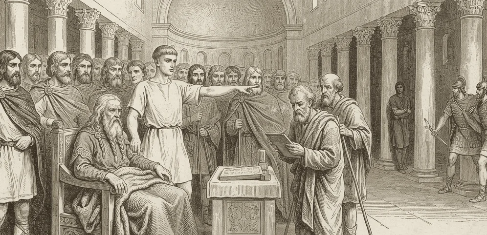
Teudo
El rey Hermerico dejó de ser rey un martes de marzo, en la iglesia de Bracara, sentado en su silla de madera tallada, con la boca torcida y la mano muerta encima de la manta, delante de todos los suevos libres del reino y de cuatro obispos galaicos y de un cojo que no tenía que estar allí.
Teudo estaba porque le había llamado Requila.
La carta la trajo Medamo, en febrero, con la mula. Era una tablilla con el sello del jabalí. Decía, en un latín mejor que el de Requila, que seguramente lo había escrito un cura, que el rey Hermerico, por su enfermedad, dejaba el reino a su hijo, y que su hijo quería que la paz con los castros del Duero la juraran otra vez, delante de él, los mismos que la habían jurado la primera vez. Reburro. El obispo Idacio. Y el que había contado los tributos.
—Es una trampa —dijo Brunhild.
—Puede ser —dijo Teudo.
—Es una trampa —dijo la madre, desde su manta, junto al fuego, sin levantarse, porque ya casi no se levantaba—. Pero vas a ir igual.
Fue. Con Reburro, que no había entrado nunca en una ciudad romana y que se pasó el camino entero escupiendo. Con Idacio, que vino desde Aquae Flaviae en su mula blanca. Con Hunila y los ocho de Fravita detrás, a pie, con las lanzas, porque Hunila dijo que si era una trampa, que por lo menos les costara cara. Arsak no fue. Tosía demasiado. Se quedó en el castro, con Wilja y con la madre.
La iglesia estaba llena. Suevos de todos los valles, con sus capas de colores y sus fíbulas de oro y de plata, de pie, apretados, oliendo a lana mojada y a cerveza. Al fondo, junto al altar, en su silla, el rey viejo. A su lado, de pie, Requila. Treinta y cinco años, alto, rubio, con el pelo corto a la romana, con una túnica blanca nueva y una espada romana al cinto. Y detrás de Requila, entre las columnas, en la sombra, como siempre, Agiulfo.
Teudo le vio y Agiulfo le vio a él.
Agiulfo estaba más viejo. Más gordo. Con la cara colorada y venas rotas en la nariz, de beber. El brazo malo pegado al cuerpo, como un ala rota. Miraba a Teudo como le había mirado en el salón de los mosaicos seis años antes, como le había mirado desde el pie de la cuesta del castro, desde el caballo, con el brazo colgando. Sin moverse. Sin parpadear.
Pero no estaba solo, entre las columnas. A su lado había tres hombres de la guardia de Requila. Los tres que había comprado, según Medamo. Teudo los miró uno por uno. No miraban a Agiulfo. Miraban a Requila.
El obispo de Bracara dijo la misa. Larga, en latín. Luego el rey viejo levantó la mano buena, despacio, temblando, y la puso encima de la cabeza de su hijo, que se había arrodillado delante de él. No dijo nada. No podía. Le salió un ruido de la boca torcida, que nadie entendió. Luego bajó la mano.
Requila se levantó. Se volvió hacia la iglesia. Los suevos golpearon el suelo con los pies, con las lanzas, gritando, como se gritaba en el Rin cuando se alzaba a un rey sobre un escudo. Requila no se subió a ningún escudo. Levantó la mano, y se callaron.
—La paz con los castros —dijo, en suevo, con una voz fuerte, de soldado— la juró mi padre. La juro yo. —Miró a Reburro. Miró a Idacio. Miró a Teudo—. Que se acerquen los que la juraron.
Se acercaron. Reburro, escupiendo en voz baja. Idacio, con su cruz de madera. Teudo, con el bastón, despacio, entre los suevos, que se apartaban para dejarle pasar y le miraban la pierna.
Juraron. Sobre los evangelios, en latín, que Reburro no entendió y repitió igual, palabra por palabra, mal. Teudo juró en suevo, después, porque Requila se lo pidió.
Cuando terminaron, Requila no les dejó volver a su sitio. Les hizo quedarse delante del altar, al lado del rey viejo. De cara a la iglesia. De cara a las columnas.
—Hay otra cosa —dijo Requila— que tengo que hacer hoy. Delante de los que juran la paz. Para que vean que la paz es la paz.
Se volvió hacia las columnas.
—Agiulfo —dijo.
Agiulfo salió de la sombra. Despacio. Con la cara roja.
—Te pagué durante quince años —dijo Requila— para que guardaras la Peña de mi padre y cobraras los tributos del Duero. Y cobraste el doble de lo que apuntabas. Y lo que te quedaba, te lo bebías. —Requila hablaba sin levantar la voz—. Y el año pasado, con la paz jurada, cogiste cinco sueldos de la caja del tributo de mi padre para pagar a cuatro hombres para que mataran en un vado a uno de los que juraron la paz. —Señaló a Teudo, sin mirarle—. Ese.
Hubo un murmullo en la iglesia. Agiulfo no se movió.
—Es mentira —dijo.
—Gesimundo —dijo Requila.
Gesimundo salió de entre los suevos. Con una tablilla en la mano. La leyó en voz alta. Una línea. La caja del tributo de la Peña del año 436, la fecha en que llegó, lo que traía, lo que tenía que traer, lo que faltaba. Cinco sueldos. Con unas rayas al lado. Las rayas de Teudo, las de los sacos, las que se ponían en la Peña para saber que una cuenta estaba revisada.
Agiulfo miró la tablilla. Luego miró a Teudo. Luego, despacio, miró a los tres hombres de la guardia que estaban a su lado, entre las columnas.
Los tres dieron un paso atrás.
Teudo lo vio en la cara de Agiulfo. El momento en que entendió. Que los tres que había comprado eran de Requila. Que siempre habían sido de Requila. Que Requila le había dejado comprarlos para saber qué compraba.
—No se cuelga a nadie en una iglesia —dijo Requila—. Ni en Bracara. —Se volvió hacia el altar, hacia su padre—. Que se vaya. Hoy. Que no vuelva a pisar la Peña. Ni el Duero. Ni ninguna tierra de los suevos. Al que le dé de comer, le pasará lo mismo.
Se oyó un ruido. Agiulfo había echado a andar. Hacia la puerta. Rápido. Con el brazo malo pegado al cuerpo y el bueno en la empuñadura de la espada, que no sacó. Los suevos se apartaban a su paso como se apartan de un perro con rabia.
Al llegar a la puerta, se volvió. Miró a Teudo, por encima de todas las cabezas.
No dijo nada. Salió.
Esa tarde, Requila le mandó llamar.
No al salón de los mosaicos. A un patio pequeño, detrás del palacio, con un pozo y una parra, donde Requila estaba sentado en un banco de piedra, sin la túnica blanca, con una camisa de lino y un vaso de vino aguado en la mano. Solo. Sin guardias. O con guardias que no se veían.
Le hizo una seña para que se sentara. Teudo se sentó. Le costó; el banco era bajo.
—La pierna —dijo Requila—. ¿Fue en los Nervasos?
—En los Nervasos.
—Mi padre me contaba lo de los Nervasos cuando era niño. Que los vándalos nos tenían rodeados en lo alto de un monte y que nos salvó un romano. —Requila bebió—. Siempre me pareció una vergüenza. Que nos salvara un romano. —Dejó el vaso en el banco—. Ahora ya no me lo parece. Me parece que así son las cosas. Uno salva a otro, y luego el otro le salva a uno. Como en tu castro con los galaicos.
Teudo no dijo nada.
—En primavera bajo al sur —dijo Requila—. A la Bética. Con todo lo que tengo. Los vándalos se fueron y allí no queda más que un general romano, Andevoto, con cuatro soldados y mucho oro. Quiero el oro. Y quiero Emerita. Y quiero Hispalis. —Le miró—. Y quiero que alguien cuente lo que llevo. El grano, los caballos, las armas, los hombres. Que lo cuente bien. Que no robe.
—Gesimundo cuenta bien.
—Gesimundo es viejo y se queda en Bracara con mi padre. —Requila se encogió de hombros—. Y Gesimundo cuenta con tus rayas.
Teudo se quedó mirando el pozo.
—La casa de labor del Duero —dijo Requila— es tuya otra vez. Si quieres. El de Lucus se va a otra. Lo he mandado esta mañana. —Se quedó callado—. Es lo menos que te debe un rey que deja que su padre firme sin leer.
Teudo no contestó en mucho rato.
—El de Lucus pone derecho el cuenco de la tumba de mi padre —dijo al fin—. Cada vez que se cae. Que se quede.
Requila le miró, sorprendido. Luego se rio, bajo.
—Eres como dicen —dijo—. ¿Y lo del sur?
—Lo pensaré.
—Hasta la primavera —dijo Requila. Y Teudo pensó que era la segunda vez en su vida que alguien le decía eso, y que la primera vez había acabado en la Galia.
Arsak
Le trajeron al castro tres días después, y Arsak fue el primero en verle, porque lo traían por el vado de las truchas, y en el vado de las truchas estaba siempre Arsak.
Eran seis hombres de la Peña. Suevos de los que quedaban, los que no eran de Fravita, los que había puesto Agiulfo. Venían a pie, por el agua, con una angarilla de ramas de castaño entre cuatro, y encima de la angarilla, tapado con una capa, un hombre.
Arsak se levantó. Tensó el arco. Los seis se pararon en el agua.
—No venimos a pelear —dijo el que iba delante. Un hombre joven, de treinta años, con una cicatriz en la frente. Arsak le conocía: era uno de los que le habían atado al castaño, la noche antes de la huida, hacía diez años—. Venimos a traer esto. Para el cojo. Para que lo vea.
Levantó la capa.
Era Agiulfo. Muerto. Con los ojos abiertos y la cara gris, con la boca torcida, con una marca morada alrededor del cuello. El brazo malo seguía pegado al cuerpo, rígido, raro.
Arsak se quedó mirándole mucho rato.
—Vino a la Peña la noche del martes —dijo el de la cicatriz—. A caballo. Solo. Reventado el caballo. Llamó a la puerta. Dijo que le abriéramos, que era el jefe. —Se quedó callado—. Le abrimos.
—¿Y?
—Y entró. Y pidió vino. Y se lo dimos. Y luego dijo que nos íbamos todos, con él, al monte, con la caja del tributo, que el hijo del rey le había traicionado y que íbamos a hacernos bandidos como los de los vados. —El hombre se encogió de hombros—. Le dijimos que no. Sacó la espada. Con la mano buena. —Miró al muerto—. No llegó a usarla.
Arsak no dijo nada.
—Lo colgamos del castaño grande —dijo el hombre—. Del de abajo. Del mismo donde colgaba él. —Bajó la cabeza—. No fue por el rey. Fue por los que colgó él ahí. Mi hermano era uno.
Los otros cinco no dijeron nada. Seguían en el agua, quietos, con la angarilla.
Teudo llegó por la senda del castro, despacio, con el bastón. Había vuelto de Bracara la noche antes. Se paró en la orilla, al lado de Arsak, y miró a Agiulfo.
No dijo nada en mucho rato. Arsak le miraba la cara. No había nada en ella. Ni alegría, ni pena. Nada. Como la cara de un hombre que mira un campo después de la siega.
—¿Qué queréis que haga con él? —preguntó al fin.
—Que lo entierres —dijo el de la cicatriz—. Nosotros no queremos. Nadie en la Peña quiere. Nadie en el valle. —Se encogió de hombros—. Dicen que tú enterraste a los suevos de la ladera. A los cuarenta y dos. Que le lavaste la cara a cada uno.
—Mi madre se la lavó.
—Pues tu madre.
Teudo se quedó otra vez callado.
Arsak pensó en la granja quemada de la Bética. En la niña de trece años con la espada vieja en el patio. En el brazo que se rompió, años después, con esa misma espada. Pensó en el castaño grande, en la cuerda, en la noche en que le ataron a él mismo a ese tronco y esperó a que amaneciera para morirse. En Fravita. En el padre de Teudo, en el banco, solo, la mañana que llegó Agiulfo con su papel del rey.
—Yo no le entierro —dijo Arsak. En suevo. Despacio—. No puedo.
—No te lo pido a ti —dijo Teudo.
Bajó al agua. Despacio. Con el bastón. Se acercó a la angarilla. Puso la mano encima de la cara del muerto y le cerró los ojos.
—Llevadlo al prado de abajo —dijo—. Junto a la zanja de los cuarenta y dos. Que esté con los suyos.
La madre no bajó. No podía ya bajar al río. Pero mandó un paño y un cubo de agua con Brunhild.
Brunhild le lavó la cara. Sin decir nada. Con la boca apretada. Arsak lo vio desde la orilla, de lejos. Vio que no le temblaban las manos. Vio que cuando terminó, tiró el agua del cubo al río, lejos, y se lavó las manos tres veces en la corriente, y se fue sin mirar atrás.
Teudo cavó. Con Hunila. Y con el de la cicatriz, que se quedó sin que nadie se lo pidiera.
Esa noche, en la casa de la piel de cabra, Teudo se lo contó a la madre.
Ella estaba en su manta, junto al fuego, incorporada en los sacos de lana, con el huso en el regazo, sin hilar. Ya casi no hilaba. Le pesaban las manos, decía. Brunhild le había puesto encima la manta gorda de lana sin teñir, la que había tejido para Arsak, porque Arsak dijo que él ya no la necesitaba.
Teudo se sentó a su lado y se lo contó todo. La iglesia de Bracara. Las rayas de Gesimundo. Los tres guardias que dieron un paso atrás. La puerta de la Peña. El castaño. El de la cicatriz y su hermano. La zanja junto a los cuarenta y dos.
La madre le escuchó sin moverse. Con los ojos en el fuego. Cuando terminó, se quedó callada mucho rato.
—Un castaño —dijo al fin.
—Un castaño.
—Yo dije un olivo. —La madre se miró las manos—. Me equivoqué de árbol.
Teudo no supo qué contestar.
—Por ese castaño nos quedamos en el valle —dijo la madre—. ¿Lo sabías? No. No lo sabías. Eras muy pequeño. —Respiró, despacio, con el pecho—. El primer año. Tu padre lo vio desde el vado y paró el carro. Dijo que un valle con un castaño así de viejo era un valle donde la gente había vivido mucho tiempo sin que la echaran. Que los niños tendrían un sitio donde subirse. —Se quedó callada—. Y luego vino Fravita y colgaba de él a los ladrones. Y luego vino el manco y colgaba de él a los que no pagaban. Y tu padre no volvió a mirarlo en veinte años.
—Ahora cuelga el manco.
—Ahora cuelga el manco. —La madre cerró los ojos—. Que se lo quiten mañana. Que lo corten, la cuerda. Y que se suban los niños.
Teudo no le dijo que la cuerda ya la había cortado Arsak. Que lo había visto esa mañana desde el vado, con el nudo en el puño.
La madre se durmió así, sentada, con el huso en el regazo. Teudo se quedó a su lado hasta que el fuego se hizo brasas.
A la semana siguiente, cuando bajó al mercado de los jueves, había tres niños de las aldeas subidos a la rama baja del castaño grande, colgados de las rodillas, cabeza abajo, gritando. El de Lucus, desde la puerta de la casa de labor, les reñía sin ganas.
Teudo se paró a mirarlos un rato. Luego siguió.
Esa noche, Arsak bajó solo al castaño grande.
Hacía luna. El castaño estaba como siempre, enorme, viejo, con el tronco hueco por abajo y las ramas bajas extendidas sobre el camino como brazos. De la rama más baja, la de siempre, colgaba todavía un trozo de cuerda. Cortada. Con el nudo.
Arsak se quedó mirándola mucho rato.
Luego sacó el cuchillo, se subió a la rama, despacio, con la tos, como no se subía a un árbol desde niño, junto al Tanais, y cortó el nudo. Se lo guardó. No supo por qué.
Abajo, al pie del castaño, Loba le miraba. Arsak bajó. Le costó más que subir.
Se sentó contra el tronco. Era el mismo sitio donde le habían atado a él. La misma corteza en la espalda. El mismo frío en la tierra.
Aquella noche, la de la huida, había pensado que se moría. Que amanecería y le colgarían de esa misma rama, delante del valle, y que se acabaría todo allí, lejos del Tanais, lejos de la estepa, en un valle de suevos. Y no había tenido miedo. Había tenido pena. Pena de no saber si la niña había llegado al sur.
Ahora lo sabía. Tenía una tablilla en el pecho que lo decía.
—Ya está —le dijo a la perra, en alano—. Ya no hay manco.
Loba se tumbó a su lado. Arsak se quedó allí hasta que empezó a clarear, con el nudo de la cuerda en el puño, oyendo el río.
Asta
El olivo floreció en mayo.
Asta lo vio una mañana, al salir a por agua al pozo, con Gisa de la mano. No lo vio enseguida. Al principio pensó que eran telarañas, o polvo, o esa pelusilla blanca que trae el viento del sur en primavera y que se queda pegada en todas las hojas. Luego se acercó.
Eran flores. Pequeñas, blancas, de cuatro pétalos, en racimos, escondidas entre las hojas plateadas. Cientos. No olían a nada. O casi a nada: a algo verde, a hierba recién cortada, muy flojo.
Se quedó quieta mirándolas, con el cubo en la mano.
—¿Qué es? —preguntó Gisa.
—Flores —dijo Asta.
—Los olivos no tienen flores.
—Sí tienen. Pequeñas. Para que no las vea nadie.
Gisa se acercó, se puso de puntillas y olió un racimo. Arrugó la nariz.
—No huelen.
—No.
—Entonces ¿para qué?
Asta no supo qué contestar. Se quedó mirando al olivo, a las flores, al tronco del grueso de un brazo ya, a las tres ramas de Marcial abiertas como una mano.
Marcial se había muerto en el invierno. De viejo. Le habían enterrado detrás de la capilla, al lado de la hermana del cura, con su cuchillo corvo de podar en la mano, como pidió.
—Para que haya aceitunas —dijo Asta al fin—. Primero hay flores. Luego aceitunas.
Gisa lo pensó.
—¿Cuándo?
—En otoño. Si no se caen.
—¿Y se caen?
—Casi todas —dijo Asta—. Se caen casi todas. Siempre. —Dejó el cubo en el suelo—. Pero alguna se queda.
Fue a buscar a Ricila, que estaba en la escuela de la higuera con los niños. Veinte, ya. Ricila se levantó del banco y subió a la ladera con ella, y con los veinte detrás, en fila, en silencio, como si fueran a misa. Fredo subió de su casa, despacio, con sus setenta y seis años, apoyado en un palo de olivo que se había tallado él. Félix y Zarina subieron de la casa grande, con Tecla, que tenía doce años y era ya casi tan alta como su madre. Guntario bajó del prado, donde estaba tirando con el arco, con el arco en la mano.
Se quedaron todos alrededor del olivo, mirando las flores. Nadie dijo nada.
Al final, fue Fredo el que habló.
—Ragna habría dicho que había que ponerle más estiércol —dijo.
Se rieron. Todos. Hasta los niños de la escuela, que no habían conocido a Ragna.
Esa noche, Ricila abrió la crónica, la mojó la pluma y escribió una línea. Asta la leyó por encima de su hombro. La leía ya casi todo.
«En este año, en la villa de Numidia, floreció el olivo que vino de la Bética.»
—¿Eso va en una crónica? —preguntó Asta.
—En la mía, sí —dijo Ricila.
La madre
El valle del Duero y Numidia – verano y otoño de 438
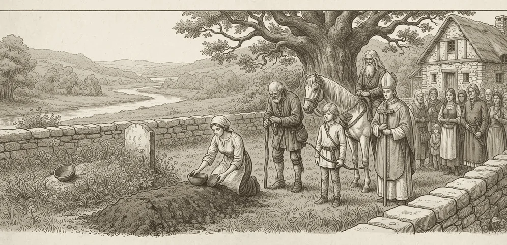
Teudo
La madre se murió en junio, la víspera de San Juan, cuando en todos los cerros del valle se estaban amontonando ya las ramas para las hogueras.
No fue de golpe. Fue como el padre: diez días. La tos, que tenía desde la primavera del año anterior, se le metió en el pecho una noche de mayo y no salió. Luego la fiebre. Luego el silbido, el mismo que había tenido Arsak, el del pájaro dentro. Brunhild le puso la cataplasma de mostaza y linaza que ella le había enseñado. Camalo le trajo el tomillo y la resina de pino. Arsak bajó al monte y volvió con miel de brezo, de una colmena salvaje que solo conocía él, con la cara llena de picaduras.
La madre se dejó hacer. Todo. Sin protestar. Teudo supo por eso que se iba a morir. La madre no se había dejado hacer nada en su vida.
El tercer día pidió que la sentaran.
—Los que se ahogan, sentados —dijo, con la voz rota—. Tumbados se mueren antes. —Le miró a Teudo—. Y yo no tengo prisa.
La sentaron en la manta, contra la pared de piedra de la casa de la piel de cabra, con los sacos de lana detrás. Desde allí veía la puerta. Por la puerta entraba la luz, y la gente. Venía mucha gente. Todo el castro. Las galaicas de la fuente, con las que regateaba los quesos. Los niños a los que les contaba historias del Rin. Camalo, con sus dos palos, que se sentaba a su lado y no decía nada. Reburro, que se quedaba en la puerta con el mastín, sin atreverse a entrar, y luego entraba y le daba un queso y se iba. Medamo, con su mujer, la de la boda, que estaba embarazada. Hunila y los de Fravita, que la conocían de la casa de labor, de cuando eran muchachos y bajaban de la Peña a robarle castañas del desván.
—Las robabais todas —le dijo la madre a Hunila, el quinto día—. Todos los inviernos. Las del desván. Las buenas.
Hunila se puso colorado. Tenía cuarenta años.
—Fravita nos mandaba —dijo.
—Fravita las pagaba —dijo la madre—. Al día siguiente. Siempre. Sin decir nada. Dejaba un saco de centeno en la puerta. —Casi sonrió—. Tu padre lo sabía. Por eso dejábamos el desván abierto.
Hunila se fue de la casa sin decir nada. Arsak le vio luego, en la muralla, solo, con la cara entre las manos.
El octavo día, la madre llamó a Teudo. Era de noche. Brunhild dormía a los pies de la manta, encogida. Wilja dormía en la puerta. Fuera, en el prado, Arsak tosía.
Teudo se sentó a su lado. Le cogió la mano. Estaba muy caliente y muy delgada. Se le notaban todos los huesos, como a un pájaro.
—Vas a ir al sur —dijo la madre.
Teudo no contestó.
—Con el rey nuevo. A contarle los sacos. —La madre respiró, con el silbido—. Y luego vas a seguir. Hasta el mar. Hasta donde está ella. La vándala.
—Madre...
—No digas nada. —Le apretó la mano—. El alano se muere. Lo sabes. Lo sé yo. Lo sabe él. Y no se va a morir sin verla. Se le ve en la cara cada vez que lee esa tablilla que lleva en el pecho. —Cerró los ojos un momento—. Y tú no le vas a dejar ir solo. Porque eres tonto. Como tu padre.
Teudo no pudo hablar.
—Llévate a Brunhild —dijo la madre—. Y al muchacho. No les dejes aquí esperando. Ya esperó bastante Brunhild. Ya esperé yo. —Abrió los ojos—. Esperar es lo peor que hay. Peor que el Rin.
—¿Y el castro? ¿Y la tumba de padre?
—El castro es de Reburro. La tumba la cuida el de Lucus. —La madre casi se rio, con el pecho—. Y a mí me pones al lado de tu padre. En el prado. Con un cuenco. —Se quedó callada—. El de castaño de tu padre está boca abajo. Ponme el mío boca arriba. Para que le llene el suyo cuando llueva.
—Madre, no tienes cuenco. Se quedó en la casa de labor.
—Lo tengo. —La madre señaló con la barbilla el arcón, en el rincón—. Me lo trajo el de Lucus. El mes pasado. Lo encontró en la cocina, en el vasar, detrás de las ollas. Me lo trajo con el queso que le mandé. —Cerró los ojos—. Es buen hombre. Pero hace el queso muy salado.
Se murió el décimo día, al amanecer, sentada, con la cabeza contra la pared, mientras fuera, en los cerros, se apagaban las últimas brasas de las hogueras de San Juan. Teudo estaba a su lado. Le tenía cogida la mano. No se dio cuenta de cuándo. Se dio cuenta después, cuando la mano se le enfrió dentro de la suya, y miró, y la madre tenía los ojos cerrados y la boca un poco abierta, como cuando se quedaba dormida hilando, junto al fuego, en la casa de labor, y el huso se le caía al suelo.
No lloró enseguida. Lloró después. En el prado. Cuando la enterraron.
La bajaron al valle al día siguiente, por el vado de las truchas, en una angarilla de ramas de castaño, entre cuatro: Teudo no, porque no podía; Wilja, Hunila, Medamo y el de la cicatriz de la Peña, que se presentó al amanecer sin que nadie le llamara. Detrás venía medio castro. Y medio valle. Galaicos de las aldeas, suevos de las casas de labor, pastores de los montes, el herrero de la Peña, el de Lucus con su mujer y su niño rubio. Idacio llegó a mediodía en su mula blanca, reventada de correr, desde Aquae Flaviae, porque alguien le había mandado aviso.
La enterraron en el prado de los muertos, al lado del padre. Idacio dijo las palabras en latín. Teudo dijo los nombres en suevo, los de los dos, el de ella y el del padre, y luego el de Odo, que no estaba allí pero tendría que estar.
Brunhild puso el cuenco encima de la tierra.
Boca arriba.
Cuando se fue la gente, el de Lucus se quedó.
Esperó en la puerta del prado de los muertos, con su niño de la mano, a que Teudo terminara de estar solo junto a las dos tumbas. Luego se acercó. Traía algo envuelto en un paño debajo del brazo.
—Lo encontré en el cobertizo del hórreo —dijo, sin mirarle—. Detrás de las herramientas. No sabía si era de alguien. Lo he guardado.
Le dio el paño. Teudo lo abrió.
Era un martillo. Pequeño, de herrero de casa, con el mango de fresno negro de sudor y la cabeza de hierro gastada por un lado, de tanto golpear. El del padre. El de arreglar la reja del arado en el yunque pequeño junto al hórreo, la víspera de los Nervasos, aunque no hacía falta arreglarla.
Teudo lo cogió. Pesaba lo mismo. Le pareció que pesaba lo mismo que hacía dieciocho años, cuando lo cogió una vez a escondidas, de niño, y el padre le riñó.
—Gracias —dijo.
El de Lucus se encogió de hombros.
—La reja la sigo usando —dijo—. La que arregló él. Ara bien todavía. —Miró las dos tumbas, los dos cuencos, uno boca abajo y otro boca arriba—. Tu madre me mandaba quesos. Yo le mandaba el cuenco. Eso era todo lo que nos decíamos. —Se quedó callado—. Era bastante.
Se fue con el niño, que se volvió dos veces a mirar a Teudo, como la primera vez.
Teudo se metió el martillo en el cinturón, al lado de la espada de Fravita. No se lo quitó en todo el viaje al sur. Brunhild le preguntó una vez para qué lo llevaba, si no tenía yunque ni reja ni nada que arreglar.
—Por si acaso —dijo Teudo.
Que era lo que decía el padre de casi todo.
Arsak
Arsak no había llorado nunca por una mujer que no fuera su madre. Por la madre de Teudo lloró.
No delante de nadie. Esa noche, en el prado de los caballos, solo, con Loba, con la cara metida en el cuello de Viento, que se dejó. Lloró como lloran los alanos, que es sin ruido, con la boca cerrada, sin que se mueva nada más que los hombros.
La madre de Teudo le había dado de comer veinte años. En la casa de labor, cuando llegó herido de la Bética con la fíbula en la mano, y se lo comía todo sin dar las gracias porque no sabía suevo. En la Peña, cuando bajaba los domingos. En el castro, todos estos años, con el caldo de huesos y ajo en la puerta de la cabaña, sin decir nada, todos los días del invierno que estuvo malo. Le había remendado las botas. Le había lavado las camisas. Le había curado una mano, una vez, de un mordisco de yegua, con aceite y una tela, riñéndole todo el rato en suevo como se riñe a un niño.
No le había preguntado nunca nada. Ni por la estepa, ni por su madre, ni por qué se había quedado. Le había dado de comer.
Teudo bajó al prado ya muy de noche. Se sentó en la hierba, al lado de Arsak, con la pierna estirada. No dijo nada. Estuvieron mucho rato así.
—Me ha dicho una cosa antes de morirse —dijo Teudo al fin.
Arsak esperó.
—Que te vas a morir.
—Ya lo sé.
—Y que no te vas a morir sin verla.
Arsak no contestó.
—Y que yo no te voy a dejar ir solo —dijo Teudo—. Porque soy tonto. Como mi padre.
Arsak se rio. Se le escapó, en medio de las lágrimas. Y luego tosió, y Teudo le dio palmadas en la espalda, torpes, como siempre.
—El rey nuevo baja al sur en julio —dijo Teudo, cuando se le pasó—. A la Bética. Contra el general romano. Con todo lo que tiene. Me ha pedido que le cuente los sacos.
—Ya lo sé. Me lo dijo Wilja.
—La Bética está al lado del mar. Y en el mar hay barcos. —Teudo se miró las manos—. Y los barcos van a África.
Arsak se quedó muy quieto.
—Tú no puedes ir a África —dijo—. Tú eres suevo. Los vándalos...
—Los vándalos tienen una paz con Roma. Me lo dijo Idacio. Y Roma tiene una paz con los suevos. Me lo dijo Requila. —Teudo se encogió de hombros—. Todo el mundo tiene paz con todo el mundo. Hasta que deja de tenerla.
—¿Y Brunhild?
—Viene. Lo ha dicho ella. Antes de que yo dijera nada. —Teudo casi sonrió—. Dice que mi madre se lo pidió. Hace un mes. Cuando aún podía hablar bien. Que le hizo prometer que no se quedaría esperando.
—¿Y Wilja?
—Wilja lleva veinte años queriendo ir a algún sitio —dijo Teudo—. Tiene un potro que se llama como su padre y una bolsita de tierra que es tuya. Se viene.
Arsak no dijo nada en mucho rato.
Pensó en la tablilla del pecho. VIVIMOS. EN NUMIDIA. Pensó que no sabía dónde estaba Numidia. Que era una palabra. Que estaba al otro lado de un mar que no había cruzado nunca, que solo había visto una vez, desde una playa del sur, viendo irse un barco.
—Tengo cincuenta años —dijo.
—Y tos —dijo Teudo.
—Y tos. —Arsak se tocó el pecho—. Y no sé nadar.
—Yo tampoco —dijo Teudo—. Odo me enseñó una vez y se me olvidó.
Arsak le miró. Luego miró a Viento, que pastaba a su lado. A Estrella. Al potro Odo, que ya no era potro, que era un caballo tordo de seis años, grande, que dormía de pie junto a la valla.
—Los caballos no caben en un barco —dijo.
—Caben —dijo Teudo—. Los vándalos llevaron diez mil.
—Los vándalos tenían barcos.
—Nosotros tendremos uno. Pequeño. Uno de los de Gades, de los que llevan aceite. —Teudo se levantó, apoyándose en el bastón—. Ya lo pensaremos. Hay tiempo. El rey nuevo tiene que ganar una batalla primero.
Se fue hacia el castro. A mitad de camino se volvió.
—Arsak.
—¿Qué?
—Cuando lleguemos —dijo Teudo—, si llegamos, no te mueras enseguida. Espera un poco. Que si no, mi madre me riñe.
Arsak se quedó solo en el prado. Loba le miraba con la cabeza ladeada.
—Un barco —le dijo a la perra, en alano.
La perra movió la cola.
Se fueron del castro el día de Santiago, a finales de julio, con la columna de Requila, que bajaba por la calzada de Salmantica hacia el sur.
Lo que llevaban cabía en dos mulas. La espada de Fravita. El arco de olmo. El arco de tejo de Wilja. La manta de Brunhild. El telar no; el telar se quedó en la casa de la piel de cabra para la mujer de Medamo, que iba a tener el niño en otoño. Las tablillas de Idacio. La tablilla de Ricila, en el pecho de Arsak, al lado de su bolsita vieja, la de la tierra negra y la roja. La otra, la de Beorg, la llevaba Wilja.
El castro entero salió a la puerta.
Camalo le dio a Teudo un cesto. Pequeño, de mimbre, con tapa, hecho a la manera de los galaicos, con un dibujo de rombos en los lados. Teudo lo cogió y lo miró mucho rato.
—Es para huevos —dijo Camalo, en galaico.
—Para un suevo es muy bueno —dijo Teudo.
Camalo se rio. Era la primera vez que Arsak le veía reírse en nueve años.
Reburro no dio nada. Se quedó en la puerta del castro, con su hacha y su mastín, mirándoles cargar las mulas. Cuando ya estaban montados, se acercó a Estrella. Le puso la mano en el cuello a la yegua, que tenía ya veinte años y la cara blanca de vieja.
—El cojo —dijo, mirando a la yegua, no a Teudo— subió aquí hace nueve años con una pierna mala y un alano. Ahora se va con una mujer, un muchacho, un cesto y un alano. —Escupió en el suelo—. Ha ganado una mujer y un cesto.
—Y un castro —dijo Teudo.
Reburro le miró. Luego se dio la vuelta y se metió en su casa sin despedirse, como hacía siempre. El mastín negro se quedó en la puerta.
Hunila y los ocho de Fravita bajaron con ellos hasta el vado. Allí se pararon. Se quedaban. Requila les había dado la Peña: Hunila era el jefe ahora, de los treinta que quedaban, con un papel del rey con el sello del jabalí que Hunila no sabía leer y que llevaba siempre encima.
—Cuida la tumba —le dijo Teudo.
—La cuida el de Lucus.
—Pues cuida al de Lucus.
Hunila asintió. Luego miró a Arsak.
—La vándala —dijo—. Si la ves. Dile que el brazo del manco no se lo rompió por nada.
—Se lo diré.
Cruzaron el vado. El agua bajaba baja, de verano, clara, entre las piedras. Al otro lado, en el camino de la casa de labor, Arsak se volvió en la silla.
El castro, arriba, en su cerro, con la muralla redonda. La Peña, enfrente, con la torre. El valle entre los dos. El castaño grande. La casa de labor, con humo en la chimenea. El prado de los muertos, con dos cuencos, uno boca abajo y otro boca arriba.
Arsak lo miró todo. Despacio. Como se mira un sitio al que no se va a volver.
Luego se volvió y no miró más.
Asta
Guntario tiró de espaldas por primera vez en septiembre, el día que cumplió trece años y medio, que él contaba así para parecer mayor.
Llevaba un año intentándolo. Desde la noche de la higuera, cuando se fue corriendo a la casa grande a buscar a Félix. Félix le había hecho esperar un mes, para ver si se le pasaba. No se le pasó. Le había hecho esperar otro mes montando sin silla, solo con las rodillas, en un caballo de los de la villa, viejo, que no corría. Luego otro, tirando con arco a pie, a un haz de paja, hasta que le sangraron los dedos. Luego, en primavera, le había dejado montar con arco. Al paso. Al trote. Al galope.
Tirar de espaldas era otra cosa. Félix decía que era lo único que no se podía enseñar. Que se aprendía o no se aprendía. Que él lo había aprendido de un viejo de Addax, en la Bética, a los trece años, y que hasta que no le salió la primera vez no supo cómo se hacía. Y que no se lo podía explicar a nadie.
—Es como besar a una chica —le dijo a Guntario—. Lo intentas cien veces y lo haces mal. Y luego un día lo haces bien y no sabes por qué.
Guntario se puso colorado hasta las orejas. Asta, que lo oyó desde la puerta de la casa, se rio tanto que tuvo que sentarse.
Aquel día de septiembre, en el prado de abajo de la villa, con el sol de la tarde detrás, Guntario dio la vuelta al haz de paja al galope, en el caballo de Félix, el tordo, el bueno. A cuarenta pasos, se volvió en la silla, con el cuerpo torcido y las rodillas apretadas, tensó el arco por encima del hombro del caballo, hacia atrás, y soltó.
La flecha se clavó en el haz. No en el centro. En el borde. Pero se clavó.
Asta lo vio desde la ladera, desde el olivo, con Gisa al lado. Vio a Guntario seguir al galope sin darse cuenta de que había acertado. Vio a Félix, en la valla, levantar el puño. Vio a Zarina, a su lado, gritar algo en alano. Vio a Tecla, de doce años, que estaba sentada en la valla, saltar al prado y echar a correr detrás del caballo, gritando también.
Guntario paró el caballo. Se volvió. Vio la flecha en el haz.
Se quedó quieto en la silla mucho rato, mirándola.
Luego miró hacia la ladera. Hacia el olivo. Hacia Asta. Y levantó el arco por encima de la cabeza, con las dos manos, como Asta no le había visto hacer nunca, como hacían los alanos de Félix cuando volvían de una batalla.
Asta levantó la mano. No pudo hacer otra cosa. No le salía la voz.
—¿Por qué lloras? —preguntó Gisa, a su lado.
—Porque se parece a alguien —dijo Asta.
—¿A papá?
—No. A otro.
Esa noche, cuando los niños dormían, Asta escribió su primera carta.
No sabía a quién mandarla. Ni cómo. Ricila le dijo que los barcos de Hispania no venían ya a Numidia, que iban a Cartago, que era romana, y que en Cartago no les dejaban hablar con vándalos. Asta la escribió igual. En una tablilla de Fredo, debajo de la higuera, a la luz del candil, despacio, como le había enseñado Ricila en el pórtico de Materno: con la lengua entre los dientes, sin prisa, borrando con el dedo cuando se equivocaba.
Le costó mucho. Más que curar una herida. Más que un parto.
Cuando terminó, se la enseñó a Ricila. Ricila la leyó en silencio. Luego la miró a ella.
—Has escrito «alano» con una ele sola —dijo.
—¿Está mal?
—No. —Ricila le devolvió la tablilla—. Está perfecta.
Decía:
GUNTARIO TIRA DE ESPALDAS. COMO TÚ. EL OLIVO TIENE FLORES. VEN A VERLO. A.
La cerró con un cordón de lino. La guardó en el arcón de Materno, encima de la crónica de Ricila, al lado de la lista de Possidio.
—¿Para cuándo es? —preguntó Ricila.
—Para cuando haya un barco —dijo Asta.
En octubre, el olivo dio aceitunas.
Siete. Asta las contó. Se habían caído casi todas las flores, como había dicho, como se caen siempre. Habían quedado siete aceitunas pequeñas, verdes, duras, escondidas entre las hojas de la rama del medio, la más alta. En octubre se pusieron moradas. A finales de mes, negras.
Asta no las cogió. No quiso. Las dejó en la rama.
—¿Por qué no las coges? —preguntó Ricila.
—Porque no son mías —dijo Asta.
—¿De quién son?
Asta tardó mucho en contestar. Miraba el valle, el trigo segado, los montes azules, y más allá, en los días claros, una raya que podía ser el mar.
—De los que faltan —dijo al fin.
Ricila no preguntó más. Se quedó a su lado, en la ladera, junto al olivo, hasta que se puso el sol.
Las siete aceitunas aguantaron en la rama todo el invierno. Se arrugaron. Se secaron. Pero no se cayeron.
El Singilio
La Bética y la Lusitania – de 438 a 439
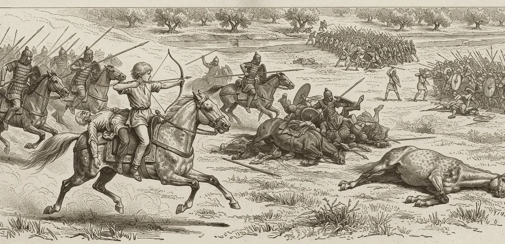
Teudo
Teudo contó cuatro mil trescientos doce hombres, mil ochocientos caballos, seiscientas mulas, doscientos carros y once mil medidas de grano, y supo que no alcanzaba.
Lo supo en Emerita, en agosto, a mitad de camino, sentado debajo de un pórtico de la ciudad con sus tablillas en las rodillas y el cesto de Camalo a los pies, mientras la columna de Requila pasaba por la calle de abajo, entre una nube de polvo, sin parar. No entraron en Emerita. Emerita cerró las puertas y Requila pasó de largo, por el puente romano sobre el Anas, el mismo que Teudo había cruzado huyendo diez años antes, con Asta y Ricila y el niño Guntario y Arsak y los caballos. Emerita esperaría. Primero estaba el sur.
—No alcanza —le dijo a Requila esa noche, en su tienda, junto al río—. El grano. Para un mes. Mes y medio si se come poco. Y en la Bética no hay grano en agosto: está segado y guardado en las villas, y las villas tienen muros.
Requila le miró desde el otro lado de la mesa.
—Las villas abrirán —dijo.
—Las villas abrirán al que gane —dijo Teudo—. No al que llegue.
Requila no contestó en mucho rato. Luego se rio, bajo.
—Mi padre decía que los que cuentan no ganan batallas —dijo—. Pero que sin ellos no se llega a la batalla.
—Fravita decía lo mismo.
—Entonces habrá que ganarla deprisa.
La ganaron en septiembre, en el río Singilio, a dos días al este de Hispalis, en una llanura de olivos y de rastrojos, con un calor que hacía que el aire temblara encima de la tierra como el agua de una olla.
Teudo no estuvo en la batalla. Estuvo en los carros, detrás, en un cerro bajo, con las mulas y el grano y las mujeres y los que no peleaban. Desde allí lo vio todo. O lo que se podía ver, que era poco, porque al cabo de un rato no se veía más que polvo.
Vio a los romanos de Andevoto formados en la orilla de enfrente, al otro lado del río, que bajaba casi seco, con sus escudos redondos pintados de rojo y sus cascos que brillaban. No eran muchos. Menos que los suevos. Pero estaban en fila, apretados, como los de los libros de Ricila, y detrás tenían jinetes, godos de los que pagaba Roma, con lanzas largas.
Vio a los suevos de Requila cruzar el río. A pie. Gritando. En una columna ancha, como habían subido por la ladera del castro, con los escudos delante. Vio cómo chocaban. Oyó el ruido, que llegó tarde, un momento después de verlo, como llega el trueno después del relámpago. Un ruido de leña rompiéndose. De mil hachas a la vez.
Y vio a los jinetes. Los pocos que tenía Requila, doscientos, a la izquierda, junto a un olivar. Y delante de ellos, en un caballo tordo, uno con el pelo blanco.
Brunhild estaba a su lado, en el carro. Le cogió del brazo.
—¿Wilja?
—Con él —dijo Teudo.
No había podido impedirlo. Nadie podía impedirle nada a Wilja desde el vado de las truchas. Requila había pedido jinetes que supieran tirar con arco desde el caballo, y Wilja había dado un paso adelante antes de que Teudo pudiera abrir la boca. Y Arsak detrás de él. Con la tos. Con cincuenta años. Con la tablilla en el pecho.
—No voy a dejar que vaya solo —había dicho Arsak la noche antes, en la tienda—. Tú no le dejaste a él ir solo a la Galia.
—Él no fue a la Galia. Fuimos tú y yo.
—Pues por eso.
Teudo vio a los doscientos jinetes salir del olivar. No en columna. En línea abierta, como cargaban los alanos. Les vio correr hacia el lado de los romanos, por la orilla, por los rastrojos, levantando polvo. Les vio dar la vuelta antes de llegar, todos a la vez, como una bandada. Les vio tirar. Les vio irse. Les vio volver.
Como en el castro. Como en la ladera. Arsak les había enseñado a los suevos de Requila en un mes lo que les había enseñado a los muchachos galaicos en un invierno.
Los godos de Andevoto salieron detrás de ellos. Con sus lanzas largas. Eran más. Más grandes. En caballos más grandes.
Teudo dejó de ver.
Arsak
Arsak vio venir a los godos y supo que no le daba tiempo.
Eran trescientos. Quizá más. En caballos grandes, de los de Hispania, de los que criaban los romanos en las villas de la Bética para las carreras, con lanzas largas de fresno y escudos redondos. No cargaban en línea abierta: cargaban en montón, apretados, rodilla con rodilla, como cargan los que no han aprendido de los alanos. Pero eran muchos y venían deprisa.
Y Wilja estaba delante.
El muchacho se había adelantado. Arsak lo había visto hacerlo y no había podido gritarle. Le faltaba el aire. Llevaba media mañana sin aire, desde la segunda carga, con el pecho silbando como un fuelle roto. Wilja había dado la vuelta cerrada al galope con los demás, había tirado de espaldas, había acertado a un godo en la cara, y luego, en lugar de volver con los demás hacia el olivar, se había quedado. Mirando. Buscando otra flecha en el carcaj. Con el caballo, el tordo, el que se llamaba como su padre, parado de lado en los rastrojos.
Y los godos venían derechos hacia él.
Arsak picó a Viento. Viento, que tenía diecinueve años y no había corrido así en cinco, salió como salía de potro en el prado de la casa de labor. Arsak se agachó sobre el cuello. Sacó el arco. Tensó.
No había tiempo para tirar bien. Tiró igual.
La flecha le dio al primer godo en el caballo, en el pecho. El caballo cayó de golpe, de cabeza, y el godo salió volando por encima, y el de detrás tropezó con el caballo caído y cayó también, y el de detrás de ese. Un montón. Gritos. Polvo. Caballos con las patas al aire.
Arsak llegó a Wilja. Le cogió de las riendas del tordo, sin pararse, al galope, y tiró.
—¡Atrás! ¡Atrás!
Le salió en alano. Wilja le entendió igual.
Los dos caballos dieron la vuelta juntos. Corrieron hacia el olivar. Detrás, los godos que no se habían caído se estaban levantando, montando otra vez, gritando. Venían.
Arsak no llegó al olivar.
No supo bien qué pasó. Supo que Viento se tropezó. En un surco del rastrojo, en una piedra, en nada. Que el caballo viejo metió la mano donde no tenía que meterla y se dobló, y que él salió despedido por encima del cuello, como el godo, y que el suelo vino muy deprisa, duro, lleno de piedras y de paja cortada.
Se quedó sin aire. Del todo. Boca arriba, en el rastrojo, mirando el cielo blanco de calor, sin poder respirar. Oía los cascos. Venían. Oía a Viento, al lado, relinchando, intentando levantarse.
Pensó, muy claro, muy despacio: aquí.
Pensó: no he llegado.
Y luego vio una sombra encima. Un caballo tordo. Grande. Que se paraba a su lado, de lado, entre él y los godos.
Wilja.
El muchacho se bajó del caballo. No tenía que bajarse. Se bajó. Le cogió por debajo de los brazos. Tiró. Arsak pesaba poco; lo había dicho Teudo en el castro, cuando le subió por la nieve. Lo levantó del suelo. Lo puso atravesado encima del tordo, como Félix había traído a Possidio, el soldado, a la tienda de Asta, aunque Wilja no lo sabía. Se subió detrás.
—Agárrate —dijo.
Arsak se agarró.
El tordo salió al galope. Con dos encima. Hacia el olivar. Arsak, boca abajo sobre la grupa, vio pasar la tierra debajo, deprisa, las piedras, los rastrojos, la sombra del caballo. Oyó a Wilja tirar. Una flecha. Otra. Desde el caballo, al galope, con un hombre atravesado delante, de espaldas, hacia los godos.
Oyó a uno caer.
Luego los olivos. La sombra. Los otros jinetes de Requila, que salían a su encuentro gritando. Los godos que se paraban, que daban la vuelta, que no querían entrar en un olivar lleno de arqueros.
Wilja le bajó del caballo debajo de un olivo. Le sentó contra el tronco. Le puso la mano en el pecho, encima de la túnica, donde estaba la tablilla.
—Respira —dijo.
Arsak respiró. Le costó. Le salió un silbido. Luego otro. Luego aire.
—Has tirado —dijo, cuando pudo— con las cuatro patas en el aire.
—Sí.
—Te dije que no se hacía.
—Ya. —Wilja se sentó a su lado, en la tierra, temblando—. No me ha salido de otra manera.
Arsak le miró. El muchacho tenía la cara llena de polvo y de sudor, y un corte en la frente, y los ojos de Odo. Arsak no había conocido a Odo. Pero lo supo.
—Viento —dijo.
Wilja no contestó enseguida.
—Se ha roto la mano —dijo al fin—. Lo he visto. No se levanta.
Arsak cerró los ojos.
Los romanos de Andevoto se rompieron al mediodía. Cuando los suevos de Requila, que llevaban toda la mañana empujando en la orilla, sintieron que los godos de detrás ya no estaban, que se habían ido detrás de los arqueros y no habían vuelto. Andevoto huyó a Hispalis con lo que le quedaba. Dejó atrás sus carros. Y en los carros, el oro. Mucho. Más del que Teudo había contado nunca.
Por la tarde, cuando se acabó todo, Arsak volvió al rastrojo. A pie. Apoyado en Wilja.
Viento estaba donde había caído. Tumbado de lado. Con la mano derecha doblada en un ángulo que no era. Le vio llegar. Levantó la cabeza. Relinchó, bajo.
Arsak se arrodilló a su lado. Le puso la mano en el cuello. Le habló en alano. Mucho rato. Cosas que Wilja no entendió y que no le contó nunca a nadie, aunque se las preguntaron.
Luego sacó el cuchillo.
Teudo
Esa noche, en el campamento, junto al río, Arsak no comió y no habló. Se sentó en el suelo, con la espalda contra una rueda de carro, con la silla de Viento en las rodillas, y se quedó así.
Teudo se sentó a su lado. No dijo nada.
Brunhild le trajo un cuenco de caldo. Arsak no lo cogió. Brunhild lo dejó en el suelo, a su lado, y se fue.
Wilja estaba al otro lado del fuego, con el tordo atado a su lado, comiendo. Teudo le miraba. Le había abrazado, al volver, en el olivar, delante de todos los jinetes de Requila, tan fuerte que el muchacho se había quejado del corte de la frente. Luego le había dado un pescozón. Y luego le había vuelto a abrazar.
—Los alanos —dijo Arsak al fin, muy tarde, cuando el fuego ya era brasas— entierran al hombre con su caballo. Para que tenga en qué ir. Allí, al otro lado.
—Lo sé.
—Yo le he enterrado a él sin mí. —Arsak se miró las manos—. Le he dejado ir solo.
Teudo no supo qué contestar. No contestó.
—Era de la cuadra de Materno —dijo Arsak—. Un potro tordo que nadie podía montar. Me lo dio por domarle a los otros un invierno entero. —Se quedó callado—. Le puse el nombre por el viento de la estepa. El que te da en la espalda cuando vas hacia el oeste.
—¿Que el viento te sea de espaldas?
—Ese.
Teudo se quedó mirando las brasas.
—Entonces ya está —dijo—. Ya va de espaldas.
Arsak le miró.
No dijo nada. Pero cogió el cuenco de caldo del suelo, que ya estaba frío, y se lo bebió.
Más tarde, ya de madrugada, Teudo fue a ver a los heridos.
Estaban en un olivar, junto al río, en el suelo, en mantas, en paja, en lo que había. Cientos. Suevos, sobre todo. Algunos godos de Andevoto que se habían quedado atrás. Un romano joven con la cara quemada del sol y una lanza en el vientre, que no paraba de llamar a su madre en latín. No había físicos. Los físicos de Requila eran dos, viejos, y estaban con los jefes.
Brunhild estaba allí.
Teudo no la había visto irse del fuego. La encontró arrodillada junto a un muchacho suevo con una pierna rota, entablillándosela con dos estacas de olivo y tiras de su propio manto. Con las manos firmes. Con la cara que ponía la madre cuando curaba: seria, sin pena, como quien hace pan.
—Sujétale —le dijo a Teudo, sin levantar la cabeza.
Teudo le sujetó. El muchacho gritó. Brunhild tiró de la pierna, la puso en su sitio, ató las estacas. El muchacho dejó de gritar y se puso a llorar.
—Ya está —le dijo Brunhild—. Ya pasó lo peor. Mañana te duele más. Pasado, menos.
Se levantó. Se limpió las manos en la falda. Fue al siguiente.
Teudo fue detrás de ella toda la noche. Sujetando. Llevando agua del río en un casco de godo. Rompiendo tiras de capas. No sabía curar. Sabía sujetar. Lo había aprendido en la casa de labor, la noche del parto de Asta, sujetando la lámpara; en el castro, la noche de Arsak, sujetando la cabeza; en el prado de los muertos, sujetando a la madre.
Al amanecer, Brunhild se sentó en el suelo, debajo de un olivo, y se quedó quieta, con las manos en el regazo, mirando el río.
—Tu madre me enseñó —dijo—. Todos estos años. En el castro. Sin decírmelo. —Se miró las manos—. Me hacía mirar. «Mira cómo pongo esto. Mira cómo lo ato.» Yo pensaba que era porque le dolían las manos y quería que lo hiciera yo.
—Le dolían.
—No tanto. —Brunhild cerró los ojos—. Me estaba enseñando para esto. Para cuando ella no estuviera. Para que hubiera alguien.
El romano de la lanza en el vientre se había callado. Teudo miró hacia él. No se movía.
Brunhild no miró. Ya lo sabía.
Arsak
Pasaron el invierno en la Bética, en las villas que se rindieron después del Singilio, y en febrero Arsak fue a ver al Abuelo.
No se lo dijo a nadie. Se lo dijo a Wilja, porque necesitaba que alguien le ayudara a subir a la silla. Montó en Estrella, que tenía ya veintiún años y andaba despacio, con la cabeza baja, como había andado Niebla al final. Wilja fue a su lado, en el tordo. Tres días hacia el oeste, por caminos de tierra roja, entre olivares, con la sierra azul a la derecha y el sol de invierno en la cara.
Arsak no estaba seguro de encontrarlo. Habían pasado veinte años. Las granjas se queman, los caminos cambian, los árboles se cortan. Pero el arroyo seguía allí. El de las adelfas, el de los juncos. Y el camino que subía del arroyo a la loma. Y en la loma, solo, enorme, retorcido, con el tronco abierto en tres como una mano vieja, el olivo.
El Abuelo.
La granja no estaba. Quedaban unas piedras negras, unos muros bajos cubiertos de zarzas, un pozo cegado. Nada más. Pero el olivo estaba. Más grande de lo que Arsak recordaba. Con las ramas cargadas de aceitunas negras que nadie había cogido, que se caían solas al suelo y lo cubrían como una alfombra.
Arsak se bajó del caballo. Le costó. Wilja le sujetó.
Debajo del olivo, entre las raíces, había dos piedras. Juntas. Grandes, de río, sin letras. Las había puesto él, con Asta, hacía veinte años, una mañana de invierno, con las manos llenas de barro. Encima de las piedras había crecido musgo. Y entre las piedras, alguien había dejado unas flores secas. Viejas. De hacía meses.
Arsak se quedó mirándolas.
—¿Quién? —preguntó Wilja, muy bajo.
—No lo sé.
Algún colono de los que quedaran en el valle. Algún pastor. Alguien que se acordaba de que debajo del olivo grande había dos vándalos enterrados, un cojo y su mujer, que vivían en la granja que se quemó. Los galaicos se acuerdan de todo, decía la madre de Teudo. Los de la Bética también, quizá.
Arsak se sentó en el suelo, entre las aceitunas caídas, con la espalda contra el tronco. El tronco estaba frío y áspero, lleno de agujeros y de grietas, como la cara de un viejo.
Sacó la tablilla del pecho. La de Ricila. La abrió. La leyó en voz alta, despacio, en suevo, aunque los dos de debajo de las piedras hablaban vándalo. Letra por letra. Como le había enseñado Wilja.
—Vivimos. En Numidia. El niño bien. —Se le quebró la voz. Siguió—. Tenemos una hija. Se llama Gisa.
Se quedó callado. Wilja, de pie a su lado, no dijo nada.
—Como tú —le dijo Arsak a la piedra de la izquierda, en vándalo, en el poco vándalo que sabía—. Se llama como tú.
Siguió leyendo.
—Hemos plantado el Abuelo. Tiene hojas.
Levantó la cabeza. Miró las ramas, encima. Las aceitunas.
—Tu hija —le dijo al árbol— se llevó una rama tuya. Al otro lado del mar. Y la ha plantado. Y tiene hojas.
El árbol no dijo nada. El viento le movió las hojas, plateadas por abajo.
Arsak abrió la bolsita vieja. La de su madre. Cogió un pellizco de tierra, negra y roja, del Tanais y del Duero, mezcladas. Lo echó entre las dos piedras. Despacio.
Luego cogió del suelo un puñado de aceitunas negras. Las del Abuelo. Las limpió en la túnica. Las metió en la bolsita. Encima de la tierra. Hasta que no cupieron más.
—¿Para qué? —preguntó Wilja.
Arsak cerró la bolsita. Se la colgó otra vez al cuello.
—Para llevárselas —dijo.
Teudo
Requila entró en Emerita en la primavera siguiente.
No fue una batalla. Fue un acuerdo. Los de Emerita habían visto lo que pasó en el Singilio, habían visto el oro de Andevoto en los carros de los suevos, y abrieron las puertas a cambio de que no se quemara nada ni se colgara a nadie. Requila entró a caballo por el puente romano, con su túnica blanca, y fue derecho a la iglesia de Santa Eulalia a dar las gracias, y luego al palacio del gobernador a contar el oro.
Teudo lo contó con él.
Esa tarde, antes de contar, Teudo bajó solo al puente romano.
Estaba igual. Largo, larguísimo, de piedra gris, con sus sesenta arcos encima del Anas, que bajaba ancho y lento, de primavera, con islas de juncos en medio. Teudo se paró en el centro. Se apoyó en el pretil.
Hacía diez años que lo había cruzado de noche, en sentido contrario, huyendo hacia el sur. Con Asta delante, a caballo, con el niño Guntario dormido atado a la espalda. Con Ricila detrás, con el arcón de los libros en una mula. Con Arsak al final, en Viento, mirando atrás cada poco, por si les seguían. Con la llave de la Peña en el cinturón, la que le había dado Hunila después de que le pegara.
Se acordó de que había mirado al río, a la mitad del puente, y había pensado que no volvería a verlo. Que se iba al sur para siempre. Que el Duero, el castro, la casa de labor, la madre, Brunhild, todo se quedaba al otro lado de aquel río.
Y había vuelto. Y ahora se iba otra vez. Más lejos.
Wilja llegó detrás de él, sin que le oyera. Se apoyó en el pretil a su lado. Miró el río.
—¿Aquí fue? —preguntó.
—Aquí.
—Mi madre dice que ella no vino. Que se quedó con la abuela. Que la abuela no quiso irse sin el abuelo, y el abuelo no quiso irse, y ella no quiso irse sin la abuela.
—Así fue.
—Y yo me quedé con ella.
—Tenías trece años.
Wilja se quedó callado un rato.
—Esta vez no me quedo —dijo.
Teudo le miró. El muchacho tenía la cara seria, de su padre, y los ojos de Brunhild.
—Esta vez no se queda nadie —dijo Teudo.
Cuando terminaron, ya de noche, Requila se quedó mirando las tablillas encima de la mesa. Las sumas. Las rayas.
—Te vas —dijo. No era una pregunta.
—Me voy.
—¿Adónde?
—A Gades —dijo Teudo—. A buscar un barco.
Requila tardó mucho en contestar.
—Mi padre —dijo— contaba que los vándalos se fueron de Hispania en barcos que les dejaron los de Gades. Y que se llevaron con ellos a gente que no era vándala. —Miró a Teudo—. Una muchacha. De la casa de un suevo del Duero.
Teudo no dijo nada.
Requila se levantó. Fue hasta un arcón, en un rincón del salón, uno de los del oro de Andevoto. Lo abrió. Sacó una bolsa de cuero pequeña, pesada. La tiró encima de la mesa, al lado de las tablillas. Sonó.
—Diez sueldos —dijo—. Lo que valía tu cabeza. —Se encogió de hombros—. Para el barco.
Teudo miró la bolsa. No la cogió enseguida.
—Mi madre decía —dijo al fin— que los suevos se acuerdan de todo. De lo bueno y de lo malo.
—Tu madre tenía razón. —Requila se volvió a sentar—. Por eso te lo pago. Para que te acuerdes de lo bueno.
Cartago
Cartago y Gades – otoño e invierno de 439
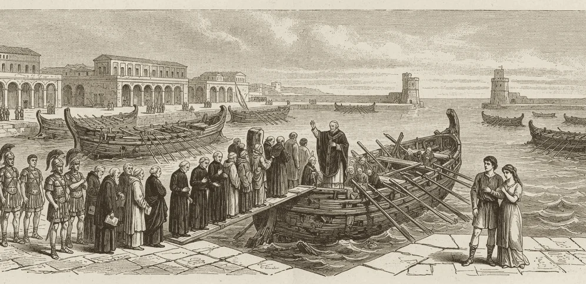
Asta
Cartago cayó un día de fiesta, el diecinueve de octubre, por la mañana, mientras la ciudad entera estaba en el circo viendo correr a los caballos.
Asta no lo vio. Lo supo después, por Félix, que entró con los primeros. Lo supo como se saben las cosas grandes: en trozos, de muchas bocas, cada uno con un trozo distinto. Que el rey había salido de Numidia con todo su ejército diciendo que iba a los montes, contra los moros. Que había dado la vuelta de noche. Que había llegado a las murallas de Cartago al amanecer, sin que nadie le esperara, porque había paz, porque había un papel firmado en la basílica de Hipona que decía que Cartago era de Roma. Que las puertas estaban abiertas, porque era día de fiesta y entraban los campesinos con sus carros para el mercado. Que los vándalos entraron detrás de los carros. Que llegaron al circo cuando los caballos daban la tercera vuelta. Que el griterío de la gente del circo, que animaba a los verdes y a los azules, se volvió otro griterío, y que algunos tardaron en darse cuenta de que era otro.
Que no hubo casi muertos. Que no hizo falta.
—El rey estaba en lo alto de la grada —le contó Félix, una semana después, en la villa, sentado en el tronco de la puerta de la casa de colonos, con la capa todavía sucia—. En la tribuna del procónsul. Sentado en su silla. Con su bastón de marfil. Mirando la carrera. —Se quedó callado—. No la paró. Esperó a que terminara. Para ver quién ganaba.
—¿Quién ganó? —preguntó Guntario.
—Los verdes —dijo Félix—. Por media cabeza.
Asta no dijo nada. Pensó en la paz de Hipona. En Ricila leyéndola en voz alta, con la túnica blanca de lino. En la firma larga del romano viejo y el sello de oro del rey apretado en la cera.
Ricila, en la puerta, con la crónica en las rodillas, tampoco dijo nada. Pero esa noche, Asta le vio escribir mucho rato, más que nunca, a la luz del candil, sin parar.
Fueron a Cartago en noviembre. Todos. Porque el rey le dio a Félix una casa en la ciudad, una casa grande de un senador que se había ido a Italia en el primer barco, en lo alto de la colina de Byrsa, con un patio de columnas y un jardín y una vista al puerto. Y porque Félix dijo que sin Asta no se iba, que en Cartago habría heridos y fiebres y partos y que los médicos de Cartago se habían ido con los senadores. Y porque Zarina dijo que sin Tecla no se iba, y Tecla dijo que sin Guntario no, y Guntario dijo que sin el arco no, y el arco era de Félix.
Fredo no fue. Se quedó en la villa con el olivo.
—Alguien tiene que regarlo —dijo—. Y tengo setenta y siete años. No me voy a ir a una ciudad a morirme entre romanos.
Asta le abrazó en la puerta de la casa de colonos. El viejo se dejó. Olía a serrín y a aceite.
—Volveré en primavera —dijo Asta.
—Ya lo sé —dijo Fredo—. Tráeme sal. Aquí no hay.
Cartago era más grande que Hipona. Más grande que nada. Asta la vio desde el camino, desde lo alto de una loma, y se quedó sin aire, como Ricila al ver Hipona. Una ciudad blanca, enorme, extendida junto al mar, con calles rectas que subían por una colina, con templos, con cúpulas, con un teatro, con un circo largo como un valle. Con dos puertos, uno redondo, con una isla en medio, como un ojo, y otro rectangular, más grande, lleno de barcos.
Y en el puerto, aquel primer día, había una cosa que Asta no olvidó en toda su vida.
Barcos viejos. Diez, doce. Sin velas. Con los cascos podridos, las tablas abiertas, los remos rotos. Atados en el muelle del puerto grande. Y metiéndose en ellos, despacio, en fila, entre dos filas de soldados vándalos, gente. Curas. Viejos con túnicas negras. Monjes. Monjas. Mujeres ricas con sus criadas. Hombres con togas sucias. Cientos.
Ricila se paró en el muelle.
—El obispo —dijo, muy bajo—. El de Cartago. Quodvultdeus. —Señaló a un viejo con una túnica morada, flaco, con barba blanca, que se subía al primer barco ayudado por dos curas—. Y su clero. Y los senadores que no se fueron a tiempo.
—¿Adónde van?
—A donde los lleve el mar —dijo Ricila—. Sin velas. Sin remos. El rey dice que si Dios los quiere vivos, los llevará a Italia.
Asta miró los barcos. Las tablas abiertas. El agua que se veía entrar ya por las juntas.
—Se van a hundir.
—Sí.
Vio al viejo de la túnica morada, en la cubierta del primer barco, volverse hacia la ciudad. Hacia el puerto. Hacia ellos, quizá, aunque no podía verles. Levantar la mano. Bendecir.
Los soldados vándalos empujaron los barcos con pértigas, fuera del puerto, al mar abierto. Sin velas. Despacio. Uno detrás de otro. Asta les vio salir por la boca del puerto grande, entre las dos torres, y quedarse quietos en el agua, fuera, balanceándose, sin moverse hacia ningún sitio, como hojas en un charco.
Por la tarde ya no se veían.
Asta no supo nunca si llegaron. Ricila tampoco. Años después, un mercader de Neápolis le contó a Ricila que sí, que habían llegado, todos, a la costa de Campania, empujados por un viento del sur que no soplaba nunca en esa época. Que la gente de Neápolis decía que había sido un milagro.
Ricila lo apuntó en la crónica. Debajo de la línea de aquel día de noviembre, con otra tinta, más nueva.
En diciembre, Ricila encontró un libro en el mercado.
Fue por casualidad. Había bajado con Asta al foro, al mercado de los libreros, que estaba en un pórtico detrás de la basílica grande, porque Asta necesitaba papiro para apuntar los remedios, y Ricila decía que en Cartago el papiro era más barato que en ningún sitio, porque venía de Egipto directo. El mercado de los libreros estaba medio vacío. La mitad de los puestos cerrados, de los que se habían ido a Italia. La otra mitad, con poca cosa: rollos viejos, tablillas, plumas, tinta.
En uno de los puestos, al fondo, un viejo vendía libros sueltos, de casas de senadores que se habían ido. Los tenía en el suelo, en una manta, apilados de cualquier manera, como se venden las coles.
Ricila se agachó. Los miró uno por uno. Asta le vio pararse en uno. Un códice pequeño, de pergamino, con tapas de madera forradas de cuero rojo, gastado.
Lo abrió. Leyó la primera línea. Se quedó quieto.
—¿Cuánto? —le preguntó al viejo, en latín, sin levantar la cabeza.
El viejo le miró. Vio a un vándalo. Dobló el precio.
Ricila no regateó. Pagó con lo que llevaba, que era lo del papiro y algo más. Asta no dijo nada. Volvieron a la casa del senador sin papiro.
—¿Qué es? —preguntó Asta, en la cuesta.
Ricila le enseñó la primera página. Asta la leyó, despacio. Ya leía casi todo.
Era el de las peras. El principio. El que había leído Ricila sentado en el suelo de la biblioteca de Hipona, por la ventana de la reja. El del corazón inquieto.
—Esta vez sí —dijo Ricila—. Este sí es mío. Lo he comprado.
Esa noche lo leyó entero, a la luz del candil, en el patio de columnas. Asta se quedó dormida oyéndole pasar las hojas. Al amanecer seguía leyendo. Tenía los ojos rojos.
—¿Qué se hace luego? —le preguntó Asta, medio dormida, desde la manta—. Después de robar las peras. Lo que querías saber.
Ricila cerró el libro. Se quedó un rato mirando las tapas rojas.
—Se cuenta —dijo—. A alguien. Entero. Lo que hiciste y por qué. —Dejó el libro en el suelo, a su lado—. Y luego se sigue.
Aquella primera noche en la casa del senador, en lo alto de Byrsa, Asta se asomó a la ventana. Abajo, el puerto. Los barcos con sus luces. El mar, negro. Y al oeste, muy lejos, detrás del mar, Hispania.
Pensó en la tablilla que Ricila había mandado con un mercader de Gades, seis años antes. En las cuatro líneas. Pensó que no sabía si habían llegado.
Pensó que desde Cartago salían barcos a Gades. Más que desde Hipona. Muchos más.
Al día siguiente bajó al puerto con un cesto de higos secos.
Bajó todos los días aquel invierno. Aunque no llegaba ningún barco del oeste. Aunque el mar estaba cerrado y los patrones de las tabernas se reían de ella. Bajaba con Gisa de la mano, que tenía ya siete años y preguntaba por qué, y se sentaba en el muelle del puerto grande, en un bolardo de piedra, mirando la boca del puerto entre las dos torres, un rato, por las mañanas, antes de ir a curar.
—¿Por qué venimos? —preguntaba Gisa.
—Por si acaso.
—¿Por si acaso qué?
Asta no sabía contestarle. Se lo contaba de otra manera. Le contaba que al otro lado del mar había un alano de pelo blanco que le había salvado la vida a su abuelo en un río helado, y luego a ella en un establo, y luego otra vez en una fiebre. Y un suevo cojo que contaba sacos. Y una sueva que tejía, y un muchacho con los hombros anchos. Y un río que se llamaba Duero, y una peña, y un castaño enorme, y un banco al lado de una puerta donde se sentaba un viejo a mirar las vacas.
—¿Y van a venir?
—No lo sé.
—Entonces ¿para qué venimos?
Asta miraba la boca del puerto.
—Para que si vienen —decía—, haya alguien.
Gisa se cansó en diciembre. Guntario la sustituyó, sin que nadie se lo pidiera, algunas mañanas, cuando no estaba con Félix. Se sentaba a su lado con el arco en las rodillas, callado, y miraba la boca del puerto como miraba el haz de paja antes de tirar.
En febrero, un patrón griego que arreglaba las velas de su barco en el muelle, uno viejo, de Corinto, que la veía todas las mañanas, se acercó a ella.
—¿A quién esperas, vándala?
—A nadie —dijo Asta—. A unos de Hispania.
El griego miró hacia el oeste. Hacia la boca del puerto. Se rascó la barba.
—Los de Hispania vendrán en marzo —dijo—. Con el aceite. El rey los ha llamado. —Se encogió de hombros—. Pero los de Hispania traen aceite, no gente.
—A veces traen gente.
El griego la miró. Luego se rio, flojo, y siguió con sus velas.
Teudo
Gades olía igual. A pescado, a sal, a brea, a algas podridas, a vino agrio de las tabernas. Teudo lo olió desde lejos, desde el camino, al cruzar el puente de barcas que unía la isla con la tierra, y se acordó de la última vez que había olido el mar del sur, diez años antes, en la playa de Iulia Traducta, a dos días de allí, viendo irse los barcos de los vándalos.
El muelle de Gades lo encontraron al día siguiente de llegar, en septiembre. Un muelle de piedra, largo, con bolardos de bronce, con barcas de pescadores atadas a un lado y mercantes al otro. No era la playa. La playa estaba lejos, al este, detrás de los montes. Pero era el mismo mar. El mismo donde Arsak se había quedado parado, solo, en la arena, mirando un barco hacerse pequeño.
Arsak no quiso ir al muelle el primer día. Ni el segundo. Fue al tercero. Teudo le vio quedarse en la esquina del muelle, con Estrella de las riendas, sin entrar. Mirando el agua.
No dijo nada. Teudo tampoco.
Buscar un barco era más difícil de lo que Teudo había pensado. Ni con diez sueldos de oro de Requila. Ni con cien.
—A África, ahora, no va nadie —le dijo el primer patrón que encontró, un gaditano viejo, gordo, con un pendiente de oro en la oreja, en una taberna del puerto—. Desde que el vándalo cogió Cartago, se acabó la paz. Roma está en guerra con él otra vez. Y él tiene barcos. Los de Cartago. Cientos. Cualquier barco que vaya hacia allí, los romanos lo cogen por traidor. Y cualquier barco que venga de allí, el vándalo lo coge por romano. —Se encogió de hombros—. Y además es invierno. En invierno el mar se cierra. Desde noviembre hasta marzo no sale nadie que no esté loco.
—¿Y en marzo?
—En marzo ya veremos. —El patrón bebió—. Depende de lo que haga el vándalo. Y de lo que haga el emperador. Y de lo que haga el viento.
Se quedaron en Gades el invierno. No había otra cosa que hacer. Requila les había dado diez sueldos y con diez sueldos se alquilaba una casa pequeña, en el barrio de los pescadores, junto al muro, con dos habitaciones, un patio con un pozo de agua salobre y un cobertizo para los caballos. Brunhild la limpió el primer día, de arriba abajo, con arena y agua del pozo, como limpiaba la madre la casa de labor cada primavera. Wilja arregló el tejado. Teudo compró un telar de segunda mano en el mercado, por medio sueldo, y se lo puso a Brunhild en el patio sin decir nada. Brunhild lo miró y se echó a llorar.
Teudo trabajó. Contando. Había un mercader de salazón en el puerto, un hispano de Malaca, que tenía tres barcos y cuarenta esclavos y no sabía cuánto tenía de nada, y que le pagaba un sueldo al mes por llevarle las cuentas. Teudo se las llevó. Con sus rayas. El mercader no había visto nunca a nadie contar así, con unas rayas debajo de cada suma.
—¿Dónde aprendiste? —le preguntó.
—En una peña —dijo Teudo—. En el fin del mundo.
Arsak no trabajaba. No podía. Tosía cada vez más. Se pasaba los días en el cobertizo, con los caballos, o sentado en el muro de la playa, frente al mar, con Loba, mirando hacia el sur. Hacia donde estaba África, aunque no se veía. Wilja se sentaba con él algunas tardes. Hablaban en alano. Teudo no sabía de qué.
En diciembre se murió Estrella.
Arsak
Se murió de vieja, en el cobertizo, una noche de levante, tumbada en la paja, con la cabeza en las rodillas de Arsak.
Tenía veintidós años. Era hija de Niebla, la yegua vieja de Asta. Arsak la había visto nacer y la había visto crecer, y la había montado más que a ningún caballo después de Viento.
Arsak se quedó con ella toda la noche. Le habló en alano. Le habló de Asta. De Niebla. Del prado del Duero. De los muchachos galaicos que le habían aprendido a montar encima. De la ladera del castro. Del rastrojo del Singilio, donde no estuvo, porque Arsak no la había dejado ir.
Al amanecer, la yegua dejó de respirar. Sin ruido. Como se había muerto la madre de Teudo, sentada contra la pared.
Wilja la enterró en la playa, detrás del muro, en la arena, donde no llegaban las olas. Arsak no pudo cavar. Se sentó en la arena y miró. Cuando terminaron, Arsak abrió la bolsita vieja y sacó una aceituna del Abuelo, arrugada, negra, y la enterró encima, con el dedo, en la arena.
—Para que tenga algo de su casa —dijo, en alano.
Wilja no preguntó.
Esa noche, en la casa de los pescadores, Arsak se sentó junto al fuego con Teudo. Brunhild tejía en el telar, en el rincón. Wilja dormía. Loba dormía a los pies de Arsak, con el hocico encima de su bota.
—Me quedan los dos —dijo Arsak. Se tocó el pecho—. La perra y esto.
—Y nosotros —dijo Teudo.
—Y vosotros. —Arsak casi sonrió—. Aunque sois muy pesados.
Se quedaron callados. Fuera, el levante golpeaba las contraventanas.
—Si en marzo no hay barco —dijo Arsak—, no pasa nada. Ya lo sabes.
—En marzo habrá barco.
—Si no lo hay —insistió Arsak—. Si me muero aquí, en esta casa, con este viento, oliendo a pescado. —Se miró las manos—. No pasa nada. Ya he llegado más lejos de lo que pensaba. Ya he estado en el Abuelo. Ya le he leído la carta a los de debajo de las piedras. —Se quedó callado—. Solo quiero una cosa.
—¿Qué?
—Que si me muero aquí, le lleves la bolsita. —Se la tocó—. La de las aceitunas. Tú. O Wilja. A ella. Y que le digas que no me volví.
Teudo le miró.
—¿Qué quiere decir eso?
Arsak tardó mucho en contestar.
—Cuando era niña —dijo al fin—, en el Rin, en brazos de su madre, me miró. Y luego en la llanura, en el arroyo. Y luego en el establo, la noche de la granja. Y en la casa redonda, cuando abrió los ojos después de la fiebre, lo primero que me dijo fue eso. Que no me había vuelto. —Se miró las manos—. Tardé años en entender lo que quería decir. Me lo explicó en la playa, en Iulia Traducta. La noche antes de irse. —Se le quebró la voz—. Que yo había sido el único que no se había vuelto nunca. Que todos se daban la vuelta y se iban. Su padre, a la guerra. Su madre, a la tumba. Los vándalos, a África. Y que yo no. Que yo me quedaba. Siempre.
Teudo no dijo nada.
—Y luego me volví yo —dijo Arsak—. En aquella playa. Me quedé allí y la dejé ir. Y me volví al Duero contigo.
—Te volviste conmigo —dijo Teudo—. No te volviste de ella.
Arsak le miró.
—Ella lo sabe —dijo Teudo—. Si no lo supiera, no le habría dicho a Ricila que pusiera en la carta que no nos muriéramos.
Arsak se quedó mucho rato callado. Luego se rio, flojo, y le dio la tos, y Teudo le dio las palmadas de siempre.
En febrero, Teudo escribió su primera carta.
No sabía a quién mandarla. Ni cómo. La escribió igual, una noche, en una tablilla de las de Idacio, despacio, con la lengua entre los dientes, borrando con el dedo cada vez que se equivocaba, que era mucho. Brunhild le miraba desde el telar. Wilja desde la manta. Arsak dormía.
Le costó toda la noche. Al amanecer la terminó. Se la enseñó a Brunhild.
Decía:
HEMOS LLEGADO A GADES. VAMOS. LA MADRE HA MUERTO. EL MANCO HA MUERTO. EL ALANO TOSE PERO VIVE. NO NOS HEMOS MUERTO. T.
Y debajo de la T, unas rayas. Las de los sacos.
—¿Para quién es? —preguntó Brunhild.
Teudo se encogió de hombros.
—Para el que llegue antes —dijo—. Ella o la carta.
La cerró con un cordón. No la mandó. No había barco. Se la guardó en el cesto de Camalo, el de los huevos, encima de las tablillas de las cuentas del mercader de Malaca.
En marzo, el patrón del pendiente de oro vino a buscarles a la casa de los pescadores.
—Hay un barco —dijo, en la puerta, sin entrar—. Uno de Malaca. Del que te paga las cuentas. Lleva salazón y aceite a Cartago. El vándalo ha mandado decir que deja entrar a los de Hispania que traigan aceite, que en Cartago se lo han comido todo. —Se rascó la barba—. Sale dentro de diez días. Si el viento quiere.
Teudo miró a Arsak. Arsak estaba sentado junto al fuego, con la perra.
No dijo nada.
Pero se levantó. Sin ayuda. Por primera vez en un mes.
El muelle
El mar y Cartago – primavera de 440
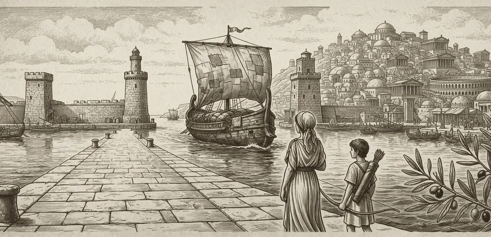
Arsak
El barco se llamaba Fortuna, como casi todos los barcos de Hispania, y olía a pescado salado de la quilla a la punta del mástil.
Era un mercante de Malaca, viejo, panzudo, con una vela cuadrada remendada de muchos colores, como las tejas de la iglesia de Calama que Arsak no había visto nunca. Llevaba en la bodega trescientas ánforas de salazón y doscientas de aceite, apretadas, atadas con cuerdas, y encima de las ánforas, en la cubierta, entre los rollos de cuerda y los barriles de agua, a cuatro suevos, un alano, una perra y un caballo tordo.
Wilja no había querido dejar el caballo. El patrón había dicho que no. Wilja le había dado al patrón el cuchillo de mango de asta de ciervo, el que había hecho él, el que no se quitaba nunca. El patrón había dicho que sí. Ataron al caballo en la popa, con las patas trabadas y un saco en la cabeza para que no viera el agua, y Wilja durmió a su lado todas las noches, en el suelo, hablándole en alano.
Arsak vomitó el primer día. Y el segundo. Y el tercero.
—Asta también —le dijo Teudo, sentado a su lado en la borda, sujetándole la cabeza—. Me lo contó Ricila en la carta. No. No me lo contó. Me lo imagino.
—Calla —dijo Arsak, y volvió a vomitar.
Al cuarto día se le pasó. Se despertó por la mañana y el mar estaba tranquilo, azul, enorme, sin nada alrededor. Sin tierra. Sin montes. Sin árboles. Solo agua, por todos los lados, hasta donde llegaban los ojos, y el cielo encima, y el sol.
Arsak se sentó en la cubierta, con la espalda contra un barril, y lo miró.
Era como la estepa.
No se lo había dicho nadie. Nadie le había dicho que el mar era como la estepa. Que era lo mismo: una llanura sin fin, que se movía con el viento, que no tenía caminos, que no tenía muros, que no tenía castros ni peñas ni torres. Que se cruzaba sin saber qué había al otro lado. Que olía a sal como olía la estepa en verano, cuando se secaban los lagos.
Loba se tumbó a su lado. Tampoco le gustaba el barco. Era ya vieja, con el hocico blanco, y no se separaba de él ni para comer.
Teudo se sentó al otro lado. Con el bastón entre las rodillas. Miraba el mar también.
—Es como tu llanura —dijo.
Arsak le miró.
—¿Cómo lo sabes?
—Lo dices tú. —Teudo se encogió de hombros—. Lo dices en sueños. En alano. Te lo he oído cien veces. Hierba. Viento. Río. No sé decir nada más en alano, pero eso sí.
Arsak se quedó callado.
—Mi padre —dijo al fin— decía que el Tanais se acababa en un mar. Que bajaba toda la estepa y se metía en un mar que no se veía la otra orilla. Que allí vivían los griegos. Que tenían barcos. —Miró el agua—. Yo no lo vi nunca. Nos fuimos hacia el oeste antes.
—Pues ahora lo ves —dijo Teudo—. Es otro mar. Pero es agua.
Arsak se rio, bajo. No tosió.
Por las noches, Brunhild se sentaba en la proa, sola, envuelta en la manta, mirando hacia delante. Hacia el este. Hacia donde iban. Teudo se sentaba con ella a veces. Arsak les veía desde la popa, al lado de Wilja y del caballo, dos sombras juntas contra las estrellas.
Una de esas noches, Arsak les oyó hablar. No quería. El viento traía las voces de la proa a la popa, y en el barco no había dónde irse.
—¿Y si no está? —decía Brunhild.
—Estará.
—¿Y si está y no nos quiere?
Teudo tardó en contestar.
—Mi madre decía que la vándala tenía la casa en el pecho —dijo—. Que la llevaba a todas partes. Como los caracoles. —Se quedó callado—. Y que en esa casa cabíamos todos. Hasta el alano, que no cabe en ningún sitio.
Brunhild se rio, bajo.
—¿Y nosotros? ¿Dónde vamos a vivir? ¿De qué?
—Yo sé contar —dijo Teudo—. Tú sabes tejer. Wilja sabe tirar de espaldas. —Arsak le oyó encogerse de hombros, aunque no le veía—. En una ciudad así, alguien tendrá sacos que contar. Y frío en invierno. Y enemigos.
—¿Y el castro? ¿Y la tumba de tu madre?
—La tumba la cuida el de Lucus. El castro es de Reburro. —Teudo se calló un rato—. Y si un día queremos volver, el mar está aquí. Es el mismo para ir que para volver.
Brunhild no dijo nada. Arsak vio que le cogía la mano. La de la cinta roja, que Teudo llevaba otra vez en la muñeca desde la boda, atada con tres nudos, casi blanca.
El octavo día vino la tormenta.
No fue grande. El patrón dijo después que había visto cien peores. Pero llegó de golpe, por la tarde, del norte, con un viento frío que no se esperaba en abril y unas nubes negras que se comieron el sol en lo que se tarda en contar hasta cien. El mar se puso gris. Luego blanco, de espuma. El barco empezó a subir y a bajar como un caballo que no quiere que lo monten.
Los marineros recogieron la vela gritando. Ataron todo lo que se podía atar. Bajaron a la bodega a mirar las ánforas. El patrón se agarró al timón con las dos manos, con la cara mojada, y no lo soltó en toda la noche.
Brunhild bajó a la bodega con Teudo, entre las ánforas, a oscuras, oyendo crujir la madera. Wilja no bajó. Se quedó en la popa, abrazado al cuello del caballo, que relinchaba con el saco en la cabeza y daba coces contra las tablas. Hablándole en alano. Sin parar.
Arsak no bajó tampoco.
Se quedó en la cubierta, sentado contra el barril, atado a él con una cuerda que le había puesto un marinero, con Loba entre las piernas, temblando. El agua le pasaba por encima. Fría. Salada. Le entraba en la boca, en los ojos, en la tos.
No tuvo miedo.
Lo pensó después, mucho, y no supo por qué. Tendría que haber tenido miedo. No sabía nadar. Tenía cincuenta y dos años, los pulmones rotos y una perra vieja. Pero no tuvo miedo. Tuvo otra cosa. La que tenía en la estepa, de niño, las noches de tormenta, cuando el viento tiraba las tiendas y los caballos se escapaban y su padre salía a buscarlos en la oscuridad, y él se quedaba en la tienda caída, debajo del fieltro mojado, con su madre, oyendo los truenos.
Pensó: esto ya lo he vivido.
Pensó: de esto se sale.
Se salió. Al amanecer el viento se cansó, como se cansan siempre, y el mar se fue calmando, y salió el sol, débil, detrás de las nubes que se iban hacia el sur. El barco seguía entero. Las ánforas también, menos tres. El caballo tenía una herida en la pata de una coz contra las tablas. Wilja tenía la cara arañada.
Teudo subió de la bodega, verde, con Brunhild detrás. Vio a Arsak atado al barril, empapado, con los labios azules. Se arrodilló delante de él, con la pierna mala.
—¿Estás vivo?
Arsak abrió los ojos.
—El mar —dijo— es como la estepa. Ya te lo dije.
—También en las tormentas.
—Sobre todo en las tormentas.
Teudo le desató. Le puso encima la manta de Brunhild, la única que quedaba seca, porque Brunhild la había tenido abrazada toda la noche en la bodega.
Una noche, la sexta, Wilja le preguntó por Asta.
—¿Cómo es?
Arsak lo pensó mucho rato.
—Alta —dijo—. Más que tu madre. Con los ojos de su padre, claros. Y una manera de levantar la barbilla cuando la miras. —Se calló—. Y cura. Cura a todo el que se le pone delante. Aunque sea su enemigo. Aunque le haya roto la casa.
—¿Se acordará de mí?
—Tenías trece años la última vez que te vio. En la casa de labor. La noche de la huida. —Arsak casi sonrió—. Mirabas todo con los ojos muy abiertos.
—¿Y ahora?
—Ahora tienes los hombros de tu padre y las manos de tu madre. Y tiras de espaldas con las cuatro patas del caballo en el aire. —Arsak le miró—. No te va a conocer. Pero va a saber quién eres.
Wilja no dijo nada. Se quedó mirando las estrellas.
—Arsak.
—¿Qué?
—La bolsita. La de Beorg. —Wilja se la tocó en el pecho—. ¿Te la devuelvo?
Arsak tardó mucho en contestar.
—Todavía no —dijo.
Teudo
Vieron Cartago al décimo día, por la tarde, con el sol detrás, y Teudo pensó que nunca había visto nada tan grande.
Primero fue una raya blanca en el horizonte. Luego unas colinas. Luego, encima de las colinas, cosas que brillaban. Tejados. Cúpulas. Columnas. Murallas. Un faro, en la punta de un cabo, alto como la torre de la Peña tres veces, con humo saliendo de arriba. Y barcos. Muchos. Delante del puerto, entrando, saliendo, con velas de todos los colores.
—Más que Bracara —dijo Brunhild, a su lado, en la proa.
—Más que diez Bracaras.
—¿Dónde estará?
Teudo no supo qué contestar. No sabía dónde estaba. Sabía que estaba en Numidia, en una villa con un olivo, hacía siete años. No sabía nada más. No sabía si seguía allí. No sabía si seguía viva. Cartago era muy grande, y África más grande todavía, y él era un suevo cojo con un bastón y diez sueldos menos los que se había comido el invierno.
El patrón les dijo lo que había que hacer.
—Desembarcáis en el puerto grande —dijo, en latín de Malaca—. El rectangular. Os mira un vándalo de la aduana. Le decís que sois de Hispania, que venís con el aceite. No le digáis que sois suevos. A los vándalos no les gustan los suevos. —Escupió por la borda—. Y luego preguntáis. En las tabernas del puerto. En los mercados. Por una vándala que cura. Con un pájaro en el hombro. Si es verdad lo que me has contado, alguien la conocerá. Los que curan los conoce todo el mundo.
Entraron en el puerto al día siguiente por la mañana.
Teudo lo vio todo desde la proa. La boca del puerto, entre dos torres de piedra, estrecha, por donde solo cabía un barco. Dentro, el agua quieta, verde, sucia, llena de cosas flotando. Los muelles, de piedra, largos, larguísimos, a los dos lados, con barcos atados uno detrás de otro, cien, doscientos, mercantes, barcas, galeras de guerra con los remos levantados. Almacenes con arcos. Grúas de madera. Esclavos cargando ánforas. Gente. Mucha gente. Gritando en latín, en griego, en vándalo, en lenguas que Teudo no había oído nunca.
Arsak estaba a su lado, en la proa, de pie. Agarrado a una cuerda. Teudo le miró. Estaba blanco. Más blanco que su pelo. Respiraba deprisa, con el silbido.
—Siéntate —le dijo Teudo.
—No.
—Arsak...
—No. —Arsak no apartaba los ojos del muelle—. Quiero verlo de pie.
El barco se acercó despacio a un hueco en el muelle de la derecha. Los marineros echaron cabos. Un muchacho en tierra los cogió y los ató a los bolardos de piedra. El barco se paró, con un crujido, contra la piedra.
Teudo miró el muelle.
Había gente esperando. Siempre había gente esperando cuando llegaba un barco. Mercaderes con tablillas. Esclavos con carretillas. Vándalos de la aduana, con sus capas y sus espadas. Mujeres con cestos, vendiendo pan, higos, agua. Niños mirando.
No la vio.
Miró otra vez. De un lado a otro. Las caras. Las ropas. Los hombros.
No la vio.
Pensó que era lo que tenía que pasar. Que no se encuentra a una persona en una ciudad como aquella el primer día. Que había que buscar. Preguntar. Esperar. Que la madre tenía razón: que esperar era lo peor.
Echaron la pasarela. Una tabla larga, con listones, del barco al muelle.
Wilja bajó primero, con el caballo, que no quería bajar, que se encabritaba con el saco en la cabeza. Luego Brunhild, con los fardos. Luego Teudo, despacio, con el bastón, con el cesto de Camalo en la otra mano, agarrándose a la cuerda de la pasarela con los dedos.
Luego Arsak.
Teudo se volvió a mirarle desde abajo. Arsak estaba en lo alto de la pasarela. De pie. Con Loba a su lado. Sin moverse.
No miraba la pasarela. Miraba al muelle. A la izquierda. Lejos.
Teudo miró hacia donde miraba.
Asta
Aquella mañana, antes de bajar al puerto, Asta se paró en la puerta de la casa del senador, en lo alto de Byrsa, y miró a Ricila.
Estaba en el patio, debajo de las columnas, sentado en el suelo con la crónica, como estaba siempre. Con el pelo gris ya en las sienes. Con las manos negras de tinta. Escribiendo. Tenía treinta y nueve años y escribía como escribía a los diecisiete en el desván de la casa de labor, con la lengua entre los dientes.
—Bajo al puerto —dijo Asta.
—Ya lo sé.
—Hoy no tardo.
Ricila levantó la cabeza. La miró. Sonrió, como sonreía cuando le decía una cosa que los dos sabían que no era verdad.
—Tarda lo que haga falta —dijo.
Gisa dormía todavía. Zarina estaba en el jardín con Tecla, que tenía catorce años y una cicatriz nueva en la barbilla de caerse de un caballo, tirando con arco a un haz de paja. Félix estaba en el palacio, con el rey. Fredo estaba en la villa de Numidia, con el olivo, solo, y había mandado decir con un arriero que había echado flores otra vez y que le llevaran sal.
Asta bajó la cuesta con Guntario. Por las calles de Byrsa, por las escaleras, entre las casas blancas, hasta el puerto. Llevaba el cesto de higos. Llevaba la fíbula en el hombro, como todos los días desde el patio de Hipona. Llevaba la escama de hierro al cuello.
No esperaba nada. Ya no esperaba. Bajaba.
En el muelle, el griego de Corinto estaba sentado en su barca, cosiendo una vela, como todas las mañanas. La vio llegar y levantó la aguja.
—Buenos días, vándala.
—Buenos días.
—Hoy entra uno de Malaca —dijo el griego, sin dejar de coser—. Lo han visto desde el faro esta mañana, al amanecer. Uno panzudo, con la vela de colores. Lo conozco. Lleva salazón. —Escupió al agua—. Huele desde aquí.
—¿Trae gente?
El griego se encogió de hombros.
—Trae lo que trae siempre. Pescado y aceite. —La miró por encima de la vela—. Pero en Malaca hay de todo. Hasta cojos.
Asta se quedó quieta.
—¿Por qué dices cojos?
—Porque los de Malaca tienen un mercader que lleva las cuentas con un cojo —dijo el griego—. Lo cuentan los marineros. Un suevo cojo que cuenta con rayas. Que nadie le ha visto equivocarse nunca. —Volvió a coser—. Cosas de marineros. Se inventan de todo.
Asta no dijo nada. Se sentó en su bolardo. El de siempre. Al final del muelle grande.
Guntario se sentó a su lado, con el arco.
—¿Qué te ha dicho?
—Nada —dijo Asta—. Cosas de marineros.
Pero no apartó los ojos de la boca del puerto.
Asta estaba sentada en su bolardo de piedra, el de siempre, al final del muelle grande, con un cesto de higos vacío en las rodillas, cuando vio entrar el barco de la vela de colores.
Intentó no hacerle caso. Había entrado otro el día anterior, y otros diez desde que se abrió el mar en marzo. Todos de Hispania. Todos con aceite. Asta había bajado a todos, con los higos, y había preguntado a todos. Nadie sabía nada. Nadie conocía a un suevo cojo ni a un alano de pelo blanco. El griego de Corinto se reía de ella cada mañana, ya, sin malicia, como se ríe uno de una costumbre.
Guntario estaba a su lado. Con el arco. Tenía quince años y medio y era ya más alto que ella, y se aburría, y tiraba piedras al agua.
—Otro de aceite —dijo.
—Otro.
—¿Vamos?
Asta miró el barco. Se estaba acercando a un hueco en el muelle de la derecha, el de enfrente, lejos, al otro lado del agua. No se veía bien. Gente en la cubierta. Marineros. Un caballo en la popa, con un saco en la cabeza.
Un caballo.
Los barcos de aceite no traían caballos.
Asta se levantó. No supo por qué. Se levantó del bolardo y el cesto de higos se le cayó al suelo.
—¿Madre?
No contestó. Miraba el barco. La pasarela. La gente que bajaba. Un muchacho rubio, grande, con un caballo tordo que se encabritaba. Una mujer con fardos. Un hombre que bajaba despacio, muy despacio, agarrado a la cuerda, con un bastón.
Con un bastón.
Y en lo alto de la pasarela, de pie, quieto, un hombre con el pelo blanco. Blanco como el lino. Como la espuma. Casi plateado. Con una perra al lado.
Mirando hacia ella.
Asta echó a correr.
No supo nunca cómo cruzó el puerto. Le dijeron después que había corrido por el muelle de la izquierda, entre los esclavos y las carretillas y los fardos, hasta el fondo, donde los dos muelles se juntaban, y luego por el de la derecha, hacia el barco de la vela de colores, empujando a la gente, sin pararse, sin gritar. Que Guntario corrió detrás de ella con el arco y no la alcanzó. Que un vándalo de la aduana le dio el alto y ella no le oyó. Que se le cayó el pañuelo de la cabeza y no se paró a cogerlo.
Ella solo se acordó de una cosa. De que el hombre del pelo blanco no se movía. Que seguía en lo alto de la pasarela, quieto, esperándola, como la había esperado siempre. Desde el Rin. Desde el arroyo. Desde el establo. Desde el desván. Desde la playa de Iulia Traducta, donde se quedó parado mirando cómo se iba un barco.
Pasó al lado de Teudo. Le vio. Le vio la cara, la pierna, el bastón, el cesto. Le vio abrir la boca para decir algo. No se paró. Pasó al lado de Brunhild, que soltó los fardos. Pasó al lado del muchacho rubio del caballo, que tenía los hombros de Odo, aunque ella no había conocido a Odo.
Llegó al pie de la pasarela.
Arsak bajó.
Despacio. Agarrado a la cuerda. Con la perra delante, que bajaba con el rabo entre las piernas, asustada de la tabla. Paso a paso. Asta le veía las manos en la cuerda: flacas, con las venas marcadas, con los nudillos grandes. Le veía la cara: gris, hundida, con la piel pegada a los huesos, más vieja de lo que tenía que ser. Le oía respirar. Con un silbido. Como el viejo de la cama pequeña de Hipona.
Lo supo. Lo supo en ese momento, como lo sabía siempre, con los enfermos, antes de tocarles.
No le importó.
Arsak llegó al último listón de la pasarela. Se paró. Se quedó allí, un palmo por encima de ella, mirándola. Como la había mirado siempre. Con los ojos mojados.
No dijo nada.
Se metió la mano en el pecho, en la túnica. Sacó una bolsita de cuero, vieja, gastada, abultada. Se la puso a Asta en la mano. Le cerró los dedos encima. Como se la había cerrado a él su padre, en la orilla de un río helado. Como le había cerrado él a ella la fíbula, cuando tenía la fiebre y no abría los ojos.
Asta notó lo que había dentro. Tierra. Y algo más, pequeño, duro, arrugado. Aceitunas.
Lo supo sin abrirla. De dónde eran.
Levantó la cabeza.
—No te has vuelto —dijo.
Arsak no contestó. No podía.
Bajó el último palmo. Puso el pie en el muelle de Cartago, en la piedra de África, por primera vez en su vida. Se tambaleó.
Asta le abrazó.
Le abrazó con los dos brazos, fuerte, con la bolsita apretada en el puño contra su espalda, con la cara en su cuello, en el pelo blanco que olía a sal y a caballo y a humo de muchos fuegos. Notó lo poco que pesaba. Notó el silbido en el pecho, contra el suyo. Notó que le temblaban las piernas, y que se apoyaba en ella, todo, con todo el cuerpo, como no se había apoyado nunca en nadie.
Notó sus brazos alrededor de ella. Flacos. Sin fuerza. Apretando.
Alrededor, el puerto seguía. Los gritos. Las carretillas. Los barcos. Alguien llamaba a alguien en griego. Una gaviota. Teudo, detrás, diciendo su nombre muy bajo, una vez, como si rezara. Guntario, que llegaba corriendo y se paraba en seco. Loba, que les olía los pies a los dos y gemía.
Asta no se movió.
Se quedó así, en el muelle, con él, sin soltarle, sin saber cuánto tiempo, sin querer saberlo.
Él respiraba. Contra su hombro. Despacio. Con el silbido.
Respiraba.
Y luego, Asta no supo si un momento o mucho después, notó que el peso cambiaba. Que se hacía más grande. Que él se apoyaba más. Que ya no era ella la que le sostenía a él, ni él el que la sostenía a ella, sino los dos, el uno en el otro, en mitad del muelle, como las piedras de una muralla de los galaicos, que no se sostienen solas.
No sabía si respiraba todavía.
No quiso mirar.
Le apretó más fuerte.